Can a model carve? The Sprint 2 study
16 runs in .data/study, $17.88 counted against the study cap: $17.72 metered plus a $0.16 allowance for timed-out turns†. Generated 2026-11-09 13:43 UTC on kernel 2. Each arm shows its newest finished run.
Gate, the part code can check: PASS. It asks for one configuration where the judge picks correctly for both the cat and the bust, each under $8.00. 3 of 6 configurations with both a cat and a bust pass:
- opus · direct · reference off: fail: cat judged “owl”; bust judged “bottle”
cat ✗ owl 0.20 $2.26 · bust ✗ bottle 0.50 $2.01 - opus · formed · reference off: fail: cat judged “rabbit”
cat ✗ rabbit 0.40 $0.37 · bust ✓ human head and shoulders (bust) 0.80 $0.82 - opus · formed · reference on: pass
cat ✓ cat lying down 0.70 $0.69 · bust ✓ human head and shoulders (bust) 0.93 $1.07 - gemini · formed · reference on: fail: bust judged “chess pawn”
cat ✓ cat lying down 0.80 $0.73 · bust ✗ chess pawn 0.60 $1.16 - fable · formed · reference on: pass
cat ✓ cat lying down 0.60 $2.05 · bust ✓ human head and shoulders (bust) 0.80 $1.95 +$0.16† - sol · formed · reference on: pass
cat ✓ cat lying down 0.60 $0.58 · bust ✓ human head and shoulders (bust) 0.96 $0.54
What the judge can't tell you. The automated judge is lenient. It sees shape only and must pick the nearest of twelve labels, so "correct" means the piece was not mistaken for one of the other eleven, and nothing more. Its pick is a floor, not a verdict on whether the piece is good. Example: A reviewer found the face of the Opus reference bust cratered, yet the judge picked "bust" at 0.93. (B-bust-opus-formed-ref-20261109124813-027)
Still for Kyle to judge: does the bust read as a head and shoulders to a person? The judge's pick and the numbers cannot settle that. Then lock the tool set, the default model, and whether the reference is on by default.
Direct or formed tools? Round A: Opus 5.5, no reference
Judge correct: direct 1 of 3, formed 2 of 3. Mean cost: direct $2.11, formed $0.52.
Does the reference sheet help? Round B against its Round A twins
Across 3 subjects run both ways: judge correct 3 with the reference, 2 without. Mean silhouette agreement (front and left IoU) 0.89 with, 0.63 without. Mean cost $0.83 with, $0.52 without.
IoU is the overlap of the stone's silhouette with the reference outline, 1 being identical. The "without" stone is measured against the outlines its twin was given, which its own sculptor never saw, so read it as a baseline, not a score.
Which model? Round C: cat and bust, formed tools, reference on
Each run had its own reference sheet drawn from its own sculptor's brief, so this comparison reflects differences between the sheets as well as between the models. Each card below shows the sheet that run worked from.
† An allowance for turns that timed out and were asked again. The provider bills the abandoned call but never reports its usage, so the bench adds the price of the run's dearest turn to the study ledger. It is an estimate, kept apart from the metered cost.
Round A: tool sets side by side
pawn
pawn · opus · direct · ref off
round A
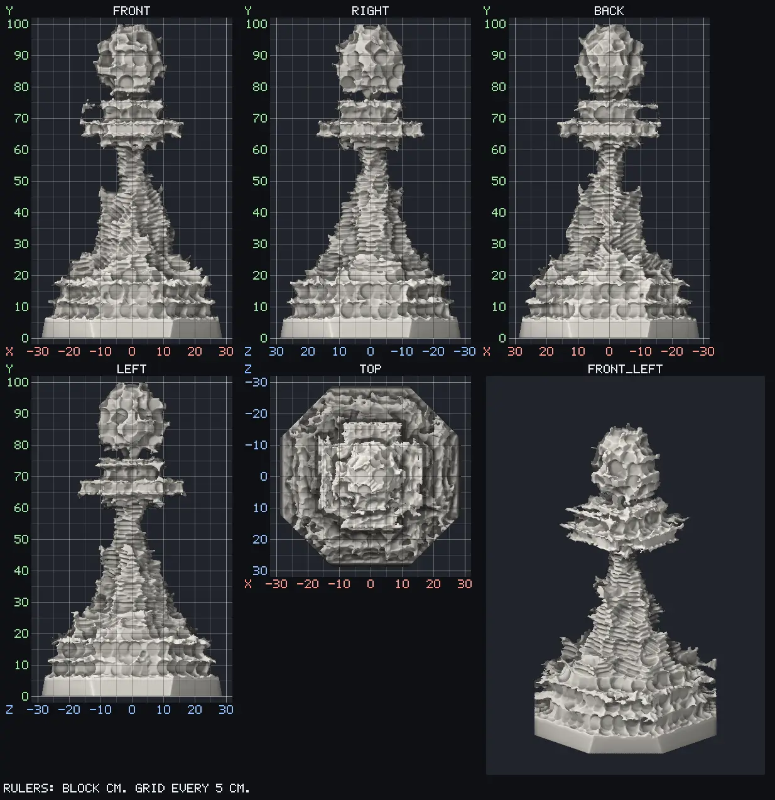
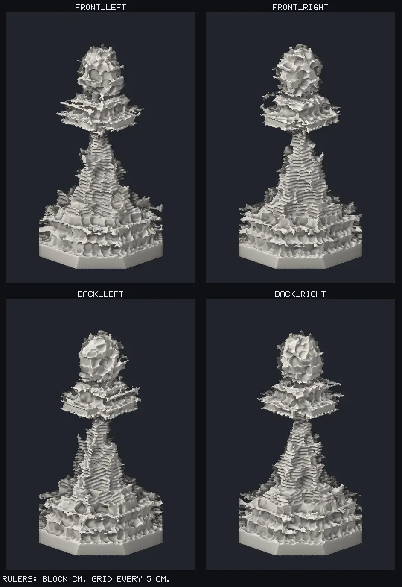
✓ Judge: chess pawn confidence 0.90
A round ball head sits above a flat collar or ring, then a tapering column that flares into a stepped base on an octagonal plinth, which is the classic chess pawn profile.
- cost
- $2.07
- turns
- 22 of 60, 144 passes, 7,919 strikes
- ended
- finish
- stone left
- 172.1 kg (82.4% removed, 100 cm tall)
the sculptor's own statement (the model's words about its piece, not a finding)Pawn
The humblest piece on the board, carved as tall as the block would allow: a ball of a head on a thin collar, a waist that pinches and then flares into stepped ground. I left the tool marks on as a worked skin, so the stone still shows the strokes that made it.
144 passes
- saw turn 1, 2 strikes
“Taking the big wedge off the right flank so the body can taper up toward the collar.”
Sawed from [27, 10] to [17, 66] in the front view, discarding everything right of the line: 60,857 cm³ (164.9 kg) fell away in 1 piece, 17% of the stone that was there. In all 60857 cm³ (164.9 kg) came off. 1 offcut fell to the floor (largest 60857 cm³). 810.7 kg of stone remains. - saw turn 1, 2 strikes
“The same taper on the left flank.”
Sawed from [-27, 10] to [-17, 66] in the front view, discarding everything left of the line: 60,857 cm³ (164.9 kg) fell away in 1 piece, 20% of the stone that was there. In all 60857 cm³ (164.9 kg) came off. 1 offcut fell to the floor (largest 60857 cm³). 645.8 kg of stone remains. - saw turn 1, 2 strikes
“Knocking the top right corner off where the head will dome.”
Sawed from [16, 90] to [6, 102] in the front view, discarding everything right of the line: 487 cm³ fell away in 1 piece, 0% of the stone that was there. In all 487 cm³ (1.32 kg) came off. 1 offcut fell to the floor (largest 483 cm³). 644.4 kg of stone remains. - saw turn 1, 2 strikes
“And the top left corner for the dome of the head.”
Sawed from [-16, 90] to [-6, 102] in the front view, discarding everything left of the line: 487 cm³ fell away in 1 piece, 0% of the stone that was there. In all 487 cm³ (1.32 kg) came off. 1 offcut fell to the floor (largest 483 cm³). 643.1 kg of stone remains. - saw turn 1, 2 strikes
“Now the front taper, seen from the side.”
Sawed from [27, 10] to [17, 66] in the right view, discarding everything left of the line: 34,657 cm³ (93.9 kg) fell away in 1 piece, 15% of the stone that was there. In all 34657 cm³ (93.9 kg) came off. 1 offcut fell to the floor (largest 34665 cm³). 549.2 kg of stone remains. - saw turn 1, 2 strikes
“And the back taper.”
Sawed from [-27, 10] to [-17, 66] in the right view, discarding everything right of the line: 34,657 cm³ (93.9 kg) fell away in 1 piece, 17% of the stone that was there. In all 34657 cm³ (93.9 kg) came off. 1 offcut fell to the floor (largest 34665 cm³). 455.3 kg of stone remains. - saw turn 1, 2 strikes
“Front top corner off for the head.”
Sawed from [16, 90] to [6, 102] in the right view, discarding everything left of the line: 147 cm³ fell away in 1 piece, 0% of the stone that was there. In all 147 cm³ (0.40 kg) came off. 1 offcut fell to the floor (largest 146 cm³). 454.9 kg of stone remains. - saw turn 1, 2 strikes
“Back top corner off for the head.”
Sawed from [-16, 90] to [-6, 102] in the right view, discarding everything right of the line: 147 cm³ fell away in 1 piece, 0% of the stone that was there. In all 147 cm³ (0.40 kg) came off. 1 offcut fell to the floor (largest 146 cm³). 454.5 kg of stone remains. - saw turn 2, 2 strikes
“Taking the front-right corner off the base so it starts to turn round.”
Sawed from [11, 30] to [30, 11] in the top view, discarding everything below the line: 2,124 cm³ (5.8 kg) fell away in 1 piece, 1% of the stone that was there. In all 2124 cm³ (5.8 kg) came off. 1 offcut fell to the floor (largest 2126 cm³). 448.7 kg of stone remains. - saw turn 2, 2 strikes
“Front-left corner of the base off.”
Sawed from [-11, 30] to [-30, 11] in the top view, discarding everything below the line: 2,124 cm³ (5.8 kg) fell away in 1 piece, 1% of the stone that was there. In all 2124 cm³ (5.8 kg) came off. 1 offcut fell to the floor (largest 2126 cm³). 443.0 kg of stone remains. - saw turn 2, 2 strikes
“Back-right corner of the base off.”
Sawed from [11, -30] to [30, -11] in the top view, discarding everything above the line: 2,124 cm³ (5.8 kg) fell away in 1 piece, 1% of the stone that was there. In all 2124 cm³ (5.8 kg) came off. 1 offcut fell to the floor (largest 2126 cm³). 437.2 kg of stone remains. - saw turn 2, 2 strikes
“Back-left corner of the base off.”
Sawed from [-11, -30] to [-30, -11] in the top view, discarding everything above the line: 2,124 cm³ (5.8 kg) fell away in 1 piece, 1% of the stone that was there. In all 2124 cm³ (5.8 kg) came off. 1 offcut fell to the floor (largest 2126 cm³). 431.4 kg of stone remains. - chisel turn 2, 32 strikes
“Starting the groove of the neck from the front, between collar and head.”
Point chisel from the front view: It ran on the stone from (x -16.0, y 71.0, z 16.0) to (x 16.0, y 71.0, z 16.0). 31 strikes in 2 layers took 548 cm³, 4 cm deep and 5 cm wide. In all 548 cm³ (1.49 kg) came off. 430.0 kg of stone remains. - chisel turn 3, 31 strikes
“Deepening the neck from the front.”
Point chisel from the front view: It ran on the stone from (x -16.0, y 71.0, z 12.4) to (x 16.0, y 71.0, z 11.8). 30 strikes in 2 layers took 595 cm³, 4 cm deep and 5 cm wide. In all 595 cm³ (1.61 kg) came off. 428.4 kg of stone remains. - chisel turn 3, 32 strikes
“Cutting the neck in from the back.”
Point chisel from the back view: It ran on the stone from (x -16.0, y 71.0, z -16.0) to (x 16.0, y 71.0, z -16.0). 31 strikes in 2 layers took 541 cm³, 4 cm deep and 5 cm wide. In all 541 cm³ (1.47 kg) came off. 426.9 kg of stone remains. - chisel turn 3, 33 strikes
“Deepening the neck from the back.”
Point chisel from the back view: It ran on the stone from (x -16.0, y 71.0, z -12.9) to (x 16.0, y 71.0, z -12.1). 32 strikes in 2 layers took 623 cm³, 4 cm deep and 5 cm wide. In all 623 cm³ (1.69 kg) came off. 425.2 kg of stone remains. - chisel turn 3, 19 strikes
“Neck from the right side.”
Point chisel from the right view: It ran on the stone from (x 16.1, y 71.0, z -8.0) to (x 14.8, y 71.0, z 8.0). 8 of 17 points along the path missed the stone (first miss at [-16, 71]). 18 strikes in 2 layers took 298 cm³, 4 cm deep and 5 cm wide. In all 298 cm³ (0.81 kg) came off. 424.4 kg of stone remains. - chisel turn 3, 17 strikes
“Deeper on the right.”
Point chisel from the right view: It ran on the stone from (x 12.8, y 71.0, z -8.0) to (x 11.2, y 71.0, z 8.0). 8 of 17 points along the path missed the stone (first miss at [-16, 71]). 16 strikes in 2 layers took 330 cm³, 4 cm deep and 5 cm wide. In all 330 cm³ (0.90 kg) came off. 423.5 kg of stone remains. - chisel turn 3, 18 strikes
“Neck from the left side.”
Point chisel from the left view: It ran on the stone from (x -16.1, y 71.0, z -8.0) to (x -16.1, y 71.0, z 8.0). 8 of 17 points along the path missed the stone (first miss at [-16, 71]). 17 strikes in 2 layers took 315 cm³, 4 cm deep and 5 cm wide. In all 315 cm³ (0.85 kg) came off. 422.6 kg of stone remains. - chisel turn 3, 18 strikes
“Deeper on the left.”
Point chisel from the left view: It ran on the stone from (x -12.0, y 71.0, z -8.0) to (x -11.9, y 71.0, z 8.0). 8 of 17 points along the path missed the stone (first miss at [-16, 71]). 17 strikes in 2 layers took 350 cm³, 4 cm deep and 5 cm wide. In all 350 cm³ (0.95 kg) came off. 421.7 kg of stone remains. - chisel turn 4, 277 strikes
“Hollowing the front of the body below the collar so it pinches in at the waist.”
Point chisel from the front view: It ran on the stone from (x -18.0, y 59.0, z 18.3) to (x 17.0, y 24.0, z 24.0). 6 of 160 points along the path missed the stone (first miss at [-20, 59]). 276 strikes in 2 layers took 4,878 cm³ (13.2 kg), 4 cm deep and 5 cm wide. 18 cm³ more fell away loose. The path was too long for one stroke: it stopped after 318 of 355 cm. In all 4896 cm³ (13.3 kg) came off. 7 offcuts fell to the floor (largest 3 cm³). 408.4 kg of stone remains. - chisel turn 4, 273 strikes
“Same hollowing on the back of the body.”
Point chisel from the back view: It ran on the stone from (x -18.0, y 59.0, z -18.3) to (x 17.0, y 24.0, z -24.0). 6 of 160 points along the path missed the stone (first miss at [-20, 59]). 272 strikes in 2 layers took 4,825 cm³ (13.1 kg), 4 cm deep and 5 cm wide. 17 cm³ more fell away loose. The path was too long for one stroke: it stopped after 318 of 355 cm. In all 4842 cm³ (13.1 kg) came off. 5 offcuts fell to the floor (largest 2 cm³). 395.3 kg of stone remains. - chisel turn 4, 246 strikes
“And on the right side.”
Point chisel from the right view: It ran on the stone from (x 18.2, y 59.0, z -14.0) to (x 24.0, y 24.0, z 17.0). 24 of 160 points along the path missed the stone (first miss at [-20, 59]). 245 strikes in 2 layers took 4,352 cm³ (11.8 kg), 4 cm deep and 5 cm wide. 21 cm³ more fell away loose. The path was too long for one stroke: it stopped after 318 of 355 cm. In all 4374 cm³ (11.9 kg) came off. 9 offcuts fell to the floor (largest 2 cm³). 383.5 kg of stone remains. - chisel turn 4, 239 strikes
“And on the left side.”
Point chisel from the left view: It ran on the stone from (x -18.3, y 59.0, z -14.0) to (x -24.0, y 24.0, z 17.0). 27 of 160 points along the path missed the stone (first miss at [-20, 59]). 238 strikes in 2 layers took 4,258 cm³ (11.5 kg), 4 cm deep and 5 cm wide. 24 cm³ more fell away loose. The path was too long for one stroke: it stopped after 318 of 355 cm. In all 4282 cm³ (11.6 kg) came off. 10 offcuts fell to the floor (largest 5 cm³). 371.8 kg of stone remains. - chisel turn 5, 110 strikes
“Taking the upper body deeper at the front, where the waist is narrowest.”
Point chisel from the front view: It ran on the stone from (x -14.0, y 59.0, z 14.7) to (x -16.0, y 44.0, z 17.1). 23 of 89 points along the path missed the stone (first miss at [-20, 59]). 109 strikes in 2 layers took 2,270 cm³ (6.2 kg), 4 cm deep and 5 cm wide. 32 cm³ more fell away loose. In all 2302 cm³ (6.2 kg) came off. 12 offcuts fell to the floor (largest 6 cm³). 365.6 kg of stone remains. - chisel turn 5, 104 strikes
“Lowering the front of the lower body so it flares smoothly into the base.”
Point chisel from the front view: It ran on the stone from (x -18.0, y 39.0, z 17.6) to (x 22.0, y 19.0, z 19.0). 9 of 121 points along the path missed the stone (first miss at [-22, 39]). 103 strikes took 2,407 cm³ (6.5 kg), 3 cm deep and 5 cm wide. 39 cm³ more fell away loose. In all 2446 cm³ (6.6 kg) came off. 14 offcuts fell to the floor (largest 8 cm³). 359.0 kg of stone remains. - chisel turn 5, 106 strikes
“Same on the back of the upper body.”
Point chisel from the back view: It ran on the stone from (x -14.0, y 59.0, z -14.9) to (x -16.0, y 44.0, z -17.6). 24 of 89 points along the path missed the stone (first miss at [-20, 59]). 105 strikes in 2 layers took 2,158 cm³ (5.8 kg), 4 cm deep and 5 cm wide. 34 cm³ more fell away loose. In all 2192 cm³ (5.9 kg) came off. 14 offcuts fell to the floor (largest 9 cm³). 353.0 kg of stone remains. - chisel turn 5, 104 strikes
“Same on the back of the lower body.”
Point chisel from the back view: It ran on the stone from (x -18.0, y 39.0, z -17.2) to (x 22.0, y 19.0, z -19.0). 11 of 121 points along the path missed the stone (first miss at [-22, 39]). 103 strikes took 2,432 cm³ (6.6 kg), 3 cm deep and 5 cm wide. 39 cm³ more fell away loose. In all 2471 cm³ (6.7 kg) came off. 11 offcuts fell to the floor (largest 9 cm³). 346.3 kg of stone remains. - chisel turn 5, 87 strikes
“Right side of the upper body.”
Point chisel from the right view: It ran on the stone from (x 14.4, y 59.0, z -10.1) to (x 16.7, y 44.0, z -14.0). 36 of 89 points along the path missed the stone (first miss at [-20, 59]). 86 strikes in 2 layers took 1,816 cm³ (4.9 kg), 4 cm deep and 5 cm wide. 51 cm³ more fell away loose. In all 1867 cm³ (5.1 kg) came off. 13 offcuts fell to the floor (largest 16 cm³). 341.3 kg of stone remains. - chisel turn 5, 94 strikes
“Right side of the lower body.”
Point chisel from the right view: It ran on the stone from (x 1.2, y 39.0, z -16.0) to (x 15.9, y 19.0, z 22.0). 19 of 121 points along the path missed the stone (first miss at [-22, 39]). 93 strikes took 2,338 cm³ (6.3 kg), 3 cm deep and 5 cm wide. 34 cm³ more fell away loose. In all 2373 cm³ (6.4 kg) came off. 10 offcuts fell to the floor (largest 10 cm³). 334.9 kg of stone remains. - chisel turn 5, 88 strikes
“Left side of the upper body.”
Point chisel from the left view: It ran on the stone from (x -14.1, y 59.0, z -10.1) to (x -16.5, y 44.0, z -14.0). 38 of 89 points along the path missed the stone (first miss at [-20, 59]). 87 strikes in 2 layers took 1,735 cm³ (4.7 kg), 4 cm deep and 5 cm wide. 24 cm³ more fell away loose. In all 1759 cm³ (4.8 kg) came off. 10 offcuts fell to the floor (largest 6 cm³). 330.1 kg of stone remains. - chisel turn 5, 88 strikes
“Left side of the lower body.”
Point chisel from the left view: It ran on the stone from (x -17.9, y 39.0, z -14.0) to (x -16.0, y 19.0, z 22.0). 25 of 121 points along the path missed the stone (first miss at [-22, 39]). 87 strikes took 2,206 cm³ (6.0 kg), 3 cm deep and 5 cm wide. 44 cm³ more fell away loose. In all 2250 cm³ (6.1 kg) came off. 15 offcuts fell to the floor (largest 8 cm³). 324.0 kg of stone remains. - chisel turn 6, 74 strikes
“Knocking down the front-right corner of the body so the square starts to go round.”
Point chisel from the front view: It ran on the stone from (x 15.0, y 61.0, z 16.7) to (x 11.0, y 61.0, z 11.7). 10 of 57 points along the path missed the stone (first miss at [15.613, 54.664]). 73 strikes in 2 layers took 701 cm³, 3 cm deep and 4 cm wide. 29 cm³ more fell away loose. In all 730 cm³ (1.98 kg) came off. 8 offcuts fell to the floor (largest 10 cm³). 322.0 kg of stone remains. - chisel turn 6, 80 strikes
“The same on the front-left corner.”
Point chisel from the front view: It ran on the stone from (x -15.0, y 61.0, z 16.6) to (x -11.0, y 61.0, z 17.9). 9 of 57 points along the path missed the stone (first miss at [-15.153, 59.416]). 79 strikes in 2 layers took 733 cm³, 3 cm deep and 4 cm wide. 21 cm³ more fell away loose. In all 754 cm³ (2.04 kg) came off. 5 offcuts fell to the floor (largest 7 cm³). 320.0 kg of stone remains. - chisel turn 6, 75 strikes
“Back-right corner of the body.”
Point chisel from the back view: It ran on the stone from (x 15.0, y 61.0, z -17.9) to (x 11.0, y 61.0, z -12.2). 14 of 57 points along the path missed the stone (first miss at [15.153, 59.416]). 74 strikes in 2 layers took 646 cm³, 3 cm deep and 4 cm wide. 43 cm³ more fell away loose. In all 689 cm³ (1.87 kg) came off. 7 offcuts fell to the floor (largest 18 cm³). 318.1 kg of stone remains. - chisel turn 6, 66 strikes
“Back-left corner of the body.”
Point chisel from the back view: It ran on the stone from (x -15.0, y 61.0, z -16.8) to (x -11.0, y 61.0, z -12.1). 15 of 57 points along the path missed the stone (first miss at [-15.153, 59.416]). 65 strikes in 2 layers took 562 cm³, 3 cm deep and 4 cm wide. 23 cm³ more fell away loose. In all 585 cm³ (1.59 kg) came off. 9 offcuts fell to the floor (largest 6 cm³). 316.5 kg of stone remains. - chisel turn 7, 65 strikes
“Cutting the ridges left between the first rows on the front of the upper body.”
Point chisel from the front view: It ran on the stone from (x -14.0, y 56.5, z -11.0) to (x -18.0, y 41.5, z 15.5). 28 of 97 points along the path missed the stone (first miss at [-22, 56.5]). 64 strikes took 738 cm³, 3 cm deep and 5 cm wide. 24 cm³ more fell away loose. In all 762 cm³ (2.06 kg) came off. 9 offcuts fell to the floor (largest 10 cm³). 314.5 kg of stone remains. - chisel turn 7, 88 strikes
“Same ridges on the front of the lower body.”
Point chisel from the front view: It ran on the stone from (x -22.0, y 36.5, z 17.5) to (x -24.0, y 21.5, z 17.0). 11 of 105 points along the path missed the stone (first miss at [-24, 36.5]). 87 strikes took 914 cm³, 2.5 cm deep and 5 cm wide. 21 cm³ more fell away loose. In all 935 cm³ (2.53 kg) came off. 6 offcuts fell to the floor (largest 5 cm³). 311.9 kg of stone remains. - chisel turn 7, 64 strikes
“Ridges on the back of the upper body.”
Point chisel from the back view: It ran on the stone from (x -12.1, y 56.5, z -10.9) to (x -18.0, y 41.5, z 1.3). 32 of 97 points along the path missed the stone (first miss at [-22, 56.5]). 63 strikes took 699 cm³, 3 cm deep and 5 cm wide. 12 cm³ more fell away loose. In all 711 cm³ (1.93 kg) came off. 6 offcuts fell to the floor (largest 2 cm³). 310.0 kg of stone remains. - chisel turn 7, 81 strikes
“Ridges on the back of the lower body.”
Point chisel from the back view: It ran on the stone from (x -18.0, y 36.5, z -16.3) to (x -24.0, y 21.5, z -16.9). 15 of 105 points along the path missed the stone (first miss at [-24, 36.5]). 80 strikes took 855 cm³, 2.5 cm deep and 5 cm wide. 24 cm³ more fell away loose. In all 879 cm³ (2.38 kg) came off. 9 offcuts fell to the floor (largest 4 cm³). 307.6 kg of stone remains. - chisel turn 7, 54 strikes
“Ridges on the right of the upper body.”
Point chisel from the right view: It ran on the stone from (x 10.3, y 56.5, z -10.1) to (x 9.1, y 41.5, z -14.0). 42 of 97 points along the path missed the stone (first miss at [-22, 56.5]). 53 strikes took 926 cm³, 3 cm deep and 5 cm wide. 8.5 cm³ more fell away loose. In all 934 cm³ (2.53 kg) came off. 3 offcuts fell to the floor (largest 4 cm³). 305.1 kg of stone remains. - chisel turn 7, 73 strikes
“Ridges on the right of the lower body.”
Point chisel from the right view: It ran on the stone from (x -0.4, y 36.5, z -16.0) to (x 9.5, y 21.5, z -22.0). 24 of 105 points along the path missed the stone (first miss at [-24, 36.5]). 72 strikes took 1,046 cm³ (2.8 kg), 2.5 cm deep and 5 cm wide. 4.0 cm³ more fell away loose. In all 1051 cm³ (2.8 kg) came off. 2 offcuts fell to the floor (largest 1 cm³). 302.2 kg of stone remains. - chisel turn 7, 52 strikes
“Ridges on the left of the upper body.”
Point chisel from the left view: It ran on the stone from (x -9.0, y 56.5, z -10.1) to (x -8.8, y 41.5, z -14.0). 44 of 97 points along the path missed the stone (first miss at [-22, 56.5]). 51 strikes took 943 cm³, 3 cm deep and 5 cm wide. 2.0 cm³ more fell away loose. In all 945 cm³ (2.56 kg) came off. 1 offcut fell to the floor (largest 1 cm³). 299.7 kg of stone remains. - chisel turn 7, 73 strikes
“Ridges on the left of the lower body.”
Point chisel from the left view: It ran on the stone from (x -10.9, y 36.5, z -16.0) to (x -14.7, y 21.5, z -22.0). 25 of 105 points along the path missed the stone (first miss at [-24, 36.5]). 72 strikes took 1,002 cm³ (2.7 kg), 2.5 cm deep and 5 cm wide. 5.7 cm³ more fell away loose. In all 1008 cm³ (2.7 kg) came off. 3 offcuts fell to the floor (largest 1 cm³). 296.9 kg of stone remains. - chisel turn 8, 74 strikes
“Undercutting the bottom of the head so it becomes the underside of a ball.”
Point chisel from the front view: It ran on the stone from (x -14.7, y 75.5, z 15.3) to (x 14.7, y 75.5, z 15.3). 4 of 30 points along the path missed the stone (first miss at [-17, 75.5]). 73 strikes in 3 layers took 432 cm³, 6 cm deep and 3 cm wide. 62 cm³ more fell away loose. In all 494 cm³ (1.34 kg) came off. 1 offcut fell to the floor (largest 60 cm³). 295.6 kg of stone remains. - chisel turn 8, 70 strikes
“Rounding the lower front of the head.”
Point chisel from the front view: It ran on the stone from (x -14.7, y 78.5, z 14.7) to (x 14.7, y 78.5, z 14.7). 4 of 30 points along the path missed the stone (first miss at [-17, 78.5]). 69 strikes in 3 layers took 340 cm³, 4.5 cm deep and 3 cm wide. 5.7 cm³ more fell away loose. In all 346 cm³ (0.94 kg) came off. 3 offcuts fell to the floor (largest 2 cm³). 294.7 kg of stone remains. - chisel turn 8, 45 strikes
“Easing the head toward its widest point.”
Point chisel from the front view: It ran on the stone from (x -13.5, y 81.5, z 14.2) to (x 13.5, y 81.5, z 14.2). 6 of 30 points along the path missed the stone (first miss at [-17, 81.5]). 44 strikes in 2 layers took 206 cm³, 3 cm deep and 3 cm wide. 6.9 cm³ more fell away loose. In all 213 cm³ (0.58 kg) came off. 3 offcuts fell to the floor (largest 2 cm³). 294.1 kg of stone remains. - chisel turn 8, 58 strikes
“A light skim over the upper head to bring it in toward the sphere.”
Point chisel from the front view: It ran on the stone from (x -13.4, y 84.5, z 13.7) to (x 9.8, y 96.5, z 10.6). 34 of 96 points along the path missed the stone (first miss at [-17, 84.5]). 57 strikes took 242 cm³, 1.5 cm deep and 3 cm wide. In all 243 cm³ (0.66 kg) came off. 293.4 kg of stone remains. - chisel turn 8, 76 strikes
“Undercutting the head from the back.”
Point chisel from the back view: It ran on the stone from (x -14.7, y 75.5, z -15.3) to (x 14.7, y 75.5, z -15.3). 4 of 30 points along the path missed the stone (first miss at [-17, 75.5]). 75 strikes in 3 layers took 440 cm³, 6 cm deep and 3 cm wide. 1.5 cm³ more fell away loose. In all 441 cm³ (1.20 kg) came off. 1 offcut fell to the floor (largest 1 cm³). 292.2 kg of stone remains. - chisel turn 8, 70 strikes
“Rounding the lower back of the head.”
Point chisel from the back view: It ran on the stone from (x -14.7, y 78.5, z -14.7) to (x 14.7, y 78.5, z -14.7). 4 of 30 points along the path missed the stone (first miss at [-17, 78.5]). 69 strikes in 3 layers took 346 cm³, 4.5 cm deep and 3 cm wide. 2.1 cm³ more fell away loose. In all 348 cm³ (0.94 kg) came off. 291.3 kg of stone remains. - chisel turn 8, 46 strikes
“Easing the back of the head.”
Point chisel from the back view: It ran on the stone from (x -13.5, y 81.5, z -14.2) to (x 13.5, y 81.5, z -14.2). 6 of 30 points along the path missed the stone (first miss at [-17, 81.5]). 45 strikes in 2 layers took 204 cm³, 3 cm deep and 3 cm wide. 3.3 cm³ more fell away loose. In all 207 cm³ (0.56 kg) came off. 290.7 kg of stone remains. - chisel turn 8, 60 strikes
“Skimming the upper back of the head.”
Point chisel from the back view: It ran on the stone from (x -13.4, y 84.5, z -13.7) to (x 9.8, y 96.5, z -10.6). 34 of 96 points along the path missed the stone (first miss at [-17, 84.5]). 59 strikes took 230 cm³, 1.5 cm deep and 3 cm wide. In all 230 cm³ (0.62 kg) came off. 290.1 kg of stone remains. - chisel turn 8, 55 strikes
“Undercutting the head from the right.”
Point chisel from the right view: It ran on the stone from (x 9.6, y 75.5, z -13.5) to (x 0.3, y 75.5, z 13.5). 9 of 30 points along the path missed the stone (first miss at [-17, 75.5]). 54 strikes in 3 layers took 320 cm³, 6 cm deep and 3 cm wide. 1.7 cm³ more fell away loose. In all 322 cm³ (0.87 kg) came off. 1 offcut fell to the floor (largest 1 cm³). 289.2 kg of stone remains. - chisel turn 8, 54 strikes
“Rounding the lower right of the head.”
Point chisel from the right view: It ran on the stone from (x -3.7, y 78.5, z -11.1) to (x 14.7, y 78.5, z 12.3). 9 of 30 points along the path missed the stone (first miss at [-17, 78.5]). 53 strikes in 3 layers took 264 cm³, 4.5 cm deep and 3 cm wide. 29 cm³ more fell away loose. In all 293 cm³ (0.79 kg) came off. 4 offcuts fell to the floor (largest 14 cm³). 288.4 kg of stone remains. - chisel turn 8, 38 strikes
“Easing the right of the head.”
Point chisel from the right view: It ran on the stone from (x 14.2, y 81.5, z -11.1) to (x 14.2, y 81.5, z 11.1). 10 of 30 points along the path missed the stone (first miss at [-17, 81.5]). 37 strikes in 2 layers took 169 cm³, 3 cm deep and 3 cm wide. 1.2 cm³ more fell away loose. In all 170 cm³ (0.46 kg) came off. 288.0 kg of stone remains. - chisel turn 8, 55 strikes
“Skimming the upper right of the head.”
Point chisel from the right view: It ran on the stone from (x 13.6, y 84.5, z -12.2) to (x -3.9, y 96.5, z 9.8). 38 of 96 points along the path missed the stone (first miss at [-17, 84.5]). 54 strikes took 221 cm³, 1.5 cm deep and 3 cm wide. 1.1 cm³ more fell away loose. In all 222 cm³ (0.60 kg) came off. 287.4 kg of stone remains. - chisel turn 8, 50 strikes
“Undercutting the head from the left.”
Point chisel from the left view: It ran on the stone from (x -15.3, y 75.5, z -10.0) to (x -1.6, y 75.5, z 13.5). 11 of 30 points along the path missed the stone (first miss at [-17, 75.5]). 49 strikes in 3 layers took 283 cm³, 6 cm deep and 3 cm wide. 2.2 cm³ more fell away loose. In all 285 cm³ (0.77 kg) came off. 1 offcut fell to the floor (largest 1 cm³). 286.6 kg of stone remains. - chisel turn 8, 53 strikes
“Rounding the lower left of the head.”
Point chisel from the left view: It ran on the stone from (x -10.7, y 78.5, z -11.1) to (x -14.8, y 78.5, z 10.0). 11 of 30 points along the path missed the stone (first miss at [-17, 78.5]). 52 strikes in 3 layers took 259 cm³, 4.5 cm deep and 3 cm wide. 3.4 cm³ more fell away loose. In all 263 cm³ (0.71 kg) came off. 2 offcuts fell to the floor (largest 2 cm³). 285.9 kg of stone remains. - chisel turn 8, 36 strikes
“Easing the left of the head.”
Point chisel from the left view: It ran on the stone from (x -14.2, y 81.5, z -11.1) to (x -14.2, y 81.5, z 11.1). 10 of 30 points along the path missed the stone (first miss at [-17, 81.5]). 35 strikes in 2 layers took 170 cm³, 3 cm deep and 3 cm wide. 1.2 cm³ more fell away loose. In all 171 cm³ (0.46 kg) came off. 285.4 kg of stone remains. - chisel turn 8, 54 strikes
“Skimming the upper left of the head.”
Point chisel from the left view: It ran on the stone from (x -13.7, y 84.5, z -12.2) to (x -10.6, y 96.5, z 8.6). 39 of 96 points along the path missed the stone (first miss at [-17, 84.5]). 53 strikes took 227 cm³, 1.5 cm deep and 3 cm wide. 0.6 cm³ more fell away loose. In all 227 cm³ (0.62 kg) came off. 284.8 kg of stone remains. - chisel turn 9, 115 strikes
“Cutting the front corners off the head to turn the square toward a ball.”
Point chisel from the front view: It ran on the stone from (x 11.5, y 94.6, z 11.9) to (x -11.5, y 94.6, z 11.9). 5 of 54 points along the path missed the stone (first miss at [11.5, 97]). 114 strikes in 3 layers took 585 cm³, 5 cm deep and 3 cm wide. 15 cm³ more fell away loose. In all 600 cm³ (1.63 kg) came off. 5 offcuts fell to the floor (largest 4 cm³). 283.2 kg of stone remains. - chisel turn 9, 107 strikes
“Same on the back corners of the head.”
Point chisel from the back view: It ran on the stone from (x 11.5, y 94.6, z -11.9) to (x -11.5, y 94.6, z -11.9). 6 of 54 points along the path missed the stone (first miss at [11.5, 97]). 106 strikes in 3 layers took 553 cm³, 5 cm deep and 3 cm wide. 17 cm³ more fell away loose. In all 569 cm³ (1.54 kg) came off. 6 offcuts fell to the floor (largest 3 cm³). 281.6 kg of stone remains. - chisel turn 9, 66 strikes
“Taking the front corners off the collar so it becomes a disc.”
Point chisel from the front view: It ran on the stone from (x 15.0, y 67.5, z 16.7) to (x -15.0, y 67.5, z 16.7). 65 strikes in 3 layers took 677 cm³, 6 cm deep and 4 cm wide. 2.8 cm³ more fell away loose. In all 680 cm³ (1.84 kg) came off. 2 offcuts fell to the floor (largest 1 cm³). 279.8 kg of stone remains. - chisel turn 9, 65 strikes
“And the back corners of the collar.”
Point chisel from the back view: It ran on the stone from (x 15.0, y 67.5, z -16.7) to (x -15.0, y 67.5, z -16.7). 64 strikes in 3 layers took 632 cm³, 6 cm deep and 4 cm wide. 1.4 cm³ more fell away loose. In all 634 cm³ (1.72 kg) came off. 278.1 kg of stone remains. - chisel turn 10, 65 strikes
“Doming the crown of the head by taking a ring off its flat top.”
Point chisel from the top view: It ran on the stone from (x 7.0, y 100.0, z 0.0) to (x 7.0, y 100.0, z -0.0). 64 strikes in 2 layers took 271 cm³, 2.5 cm deep and 3 cm wide. In all 272 cm³ (0.74 kg) came off. 277.3 kg of stone remains. - chisel turn 10, 13 strikes
“A lighter ring nearer the top so the dome rises gently to its peak.”
Claw chisel from the top view: It ran on the stone from (x 3.5, y 100.0, z 0.0) to (x 3.5, y 100.0, z 0.0). 12 strikes took 50 cm³, 1 cm deep and 3 cm wide. In all 50.4 cm³ (0.14 kg) came off. 277.2 kg of stone remains. - chisel turn 10, 128 strikes
“Evening out the ribs the point left on the front of the head.”
Claw chisel from the front view: It ran on the stone from (x -15.0, y 77.0, z 11.5) to (x 4.0, y 94.5, z 11.9). 29 of 160 points along the path missed the stone (first miss at [13.5, 77]). 127 strikes took 516 cm³, 1 cm deep and 3 cm wide. 23 cm³ more fell away loose. The path was too long for one stroke: it stopped after 238.5 of 257.5 cm. In all 539 cm³ (1.46 kg) came off. 6 offcuts fell to the floor (largest 10 cm³). 275.8 kg of stone remains. - chisel turn 10, 124 strikes
“Same on the back of the head.”
Claw chisel from the back view: It ran on the stone from (x -15.0, y 77.0, z 7.1) to (x 4.0, y 94.5, z -11.9). 33 of 160 points along the path missed the stone (first miss at [-13.5, 77]). 123 strikes took 499 cm³, 1 cm deep and 3 cm wide. 18 cm³ more fell away loose. The path was too long for one stroke: it stopped after 238.5 of 257.5 cm. In all 517 cm³ (1.40 kg) came off. 5 offcuts fell to the floor (largest 8 cm³). 274.4 kg of stone remains. - chisel turn 10, 108 strikes
“Same on the right of the head.”
Claw chisel from the right view: It ran on the stone from (x -0.9, y 77.0, z -9.0) to (x 11.9, y 94.5, z 4.0). 50 of 160 points along the path missed the stone (first miss at [-15, 77]). 107 strikes took 464 cm³, 1 cm deep and 3 cm wide. 12 cm³ more fell away loose. The path was too long for one stroke: it stopped after 238.5 of 257.5 cm. In all 476 cm³ (1.29 kg) came off. 2 offcuts fell to the floor (largest 7 cm³). 273.1 kg of stone remains. - chisel turn 10, 103 strikes
“Same on the left of the head.”
Claw chisel from the left view: It ran on the stone from (x -1.6, y 77.0, z -7.5) to (x -11.9, y 94.5, z 4.0). 53 of 160 points along the path missed the stone (first miss at [-15, 77]). 102 strikes took 435 cm³, 1 cm deep and 3 cm wide. 17 cm³ more fell away loose. The path was too long for one stroke: it stopped after 238.5 of 257.5 cm. In all 453 cm³ (1.23 kg) came off. 5 offcuts fell to the floor (largest 5 cm³). 271.8 kg of stone remains. - chisel turn 11, 73 strikes
“Turning the bottom and top edges of the head under and over, toward a ball.”
Point chisel from the front view: It ran on the stone from (x -14.0, y 76.5, z 8.0) to (x -9.0, y 97.5, z 9.3). 44 of 86 points along the path missed the stone (first miss at [-16, 76.5]). 72 strikes in 2 layers took 220 cm³, 3 cm deep and 2.5 cm wide. 1.0 cm³ more fell away loose. In all 221 cm³ (0.60 kg) came off. 271.2 kg of stone remains. - chisel turn 11, 89 strikes
“A softer band just inside those edges.”
Point chisel from the front view: It ran on the stone from (x -11.0, y 79.0, z 4.3) to (x -11.0, y 95.0, z 2.7). 35 of 81 points along the path missed the stone (first miss at [-16, 79]). 88 strikes in 2 layers took 184 cm³, 2 cm deep and 2.5 cm wide. In all 184 cm³ (0.50 kg) came off. 270.7 kg of stone remains. - chisel turn 11, 55 strikes
“Taking more off the head's front corners.”
Point chisel from the front view: It ran on the stone from (x 10.0, y 78.0, z 5.7) to (x -10.0, y 78.0, z 3.1). 29 of 60 points along the path missed the stone (first miss at [10, 96.983]). 54 strikes in 2 layers took 326 cm³, 3.5 cm deep and 3 cm wide. 4.5 cm³ more fell away loose. In all 330 cm³ (0.90 kg) came off. 1 offcut fell to the floor (largest 1 cm³). 269.8 kg of stone remains. - chisel turn 11, 64 strikes
“Same edge rounding on the back of the head.”
Point chisel from the back view: It ran on the stone from (x -9.0, y 76.5, z -5.8) to (x -9.0, y 97.5, z -9.4). 47 of 86 points along the path missed the stone (first miss at [-16, 76.5]). 63 strikes in 2 layers took 205 cm³, 3 cm deep and 2.5 cm wide. 1.0 cm³ more fell away loose. In all 206 cm³ (0.56 kg) came off. 1 offcut fell to the floor (largest 1 cm³). 269.3 kg of stone remains. - chisel turn 11, 77 strikes
“Softer band on the back.”
Point chisel from the back view: It ran on the stone from (x -10.0, y 79.0, z -5.5) to (x -11.0, y 95.0, z -4.8). 37 of 81 points along the path missed the stone (first miss at [-16, 79]). 76 strikes in 2 layers took 167 cm³, 2 cm deep and 2.5 cm wide. 1.0 cm³ more fell away loose. In all 168 cm³ (0.46 kg) came off. 268.8 kg of stone remains. - chisel turn 11, 55 strikes
“Back corners of the head.”
Point chisel from the back view: It ran on the stone from (x 10.0, y 79.2, z -1.5) to (x -10.0, y 78.0, z -3.9). 31 of 60 points along the path missed the stone (first miss at [10, 78]). 54 strikes in 2 layers took 296 cm³, 3.5 cm deep and 3 cm wide. 6.0 cm³ more fell away loose. In all 302 cm³ (0.82 kg) came off. 2 offcuts fell to the floor (largest 3 cm³). 268.0 kg of stone remains. - chisel turn 11, 42 strikes
“Edge rounding on the right of the head.”
Point chisel from the right view: It ran on the stone from (x 7.7, y 76.5, z -5.0) to (x 9.5, y 97.5, z -7.0). 62 of 86 points along the path missed the stone (first miss at [-16, 76.5]). 41 strikes in 2 layers took 128 cm³, 3 cm deep and 2.5 cm wide. 1.7 cm³ more fell away loose. In all 130 cm³ (0.35 kg) came off. 267.7 kg of stone remains. - chisel turn 11, 69 strikes
“Softer band on the right.”
Point chisel from the right view: It ran on the stone from (x 8.7, y 79.0, z -10.0) to (x 0.3, y 95.0, z -10.0). 42 of 81 points along the path missed the stone (first miss at [-16, 79]). 68 strikes in 2 layers took 150 cm³, 2 cm deep and 2.5 cm wide. 9.7 cm³ more fell away loose. In all 159 cm³ (0.43 kg) came off. 5 offcuts fell to the floor (largest 4 cm³). 267.2 kg of stone remains. - chisel turn 11, 41 strikes
“Head corners from the right.”
Point chisel from the right view: It ran on the stone from (x 9.1, y 80.4, z 10.0) to (x 8.9, y 80.4, z -10.0). 34 of 60 points along the path missed the stone (first miss at [10, 78]). 40 strikes in 2 layers took 199 cm³, 3.5 cm deep and 3 cm wide. 2.9 cm³ more fell away loose. In all 202 cm³ (0.55 kg) came off. 1 offcut fell to the floor (largest 1 cm³). 266.7 kg of stone remains. - chisel turn 11, 41 strikes
“Edge rounding on the left of the head.”
Point chisel from the left view: It ran on the stone from (x -5.1, y 76.5, z -3.0) to (x -3.5, y 97.5, z -7.0). 64 of 86 points along the path missed the stone (first miss at [-16, 76.5]). 40 strikes in 2 layers took 114 cm³, 3 cm deep and 2.5 cm wide. 1.3 cm³ more fell away loose. In all 116 cm³ (0.31 kg) came off. 1 offcut fell to the floor (largest 1 cm³). 266.4 kg of stone remains. - chisel turn 11, 65 strikes
“Softer band on the left.”
Point chisel from the left view: It ran on the stone from (x -1.3, y 79.0, z -8.0) to (x -8.3, y 95.0, z -9.0). 45 of 81 points along the path missed the stone (first miss at [-16, 79]). 64 strikes in 2 layers took 141 cm³, 2 cm deep and 2.5 cm wide. 5.6 cm³ more fell away loose. In all 146 cm³ (0.40 kg) came off. 2 offcuts fell to the floor (largest 3 cm³). 266.0 kg of stone remains. - chisel turn 11, 44 strikes
“Head corners from the left.”
Point chisel from the left view: It ran on the stone from (x -2.4, y 80.4, z 10.0) to (x -8.1, y 80.4, z -10.0). 35 of 60 points along the path missed the stone (first miss at [10, 78]). 43 strikes in 2 layers took 214 cm³, 3.5 cm deep and 3 cm wide. 3.2 cm³ more fell away loose. In all 217 cm³ (0.59 kg) came off. 1 offcut fell to the floor (largest 1 cm³). 265.4 kg of stone remains. - chisel turn 12, 43 strikes
“Taking the collar's corners down from the right side too.”
Point chisel from the right view: It ran on the stone from (x 12.9, y 67.5, z 15.0) to (x 13.4, y 67.5, z -15.0). 42 strikes in 2 layers took 417 cm³, 5 cm deep and 4 cm wide. 6.5 cm³ more fell away loose. In all 424 cm³ (1.15 kg) came off. 2 offcuts fell to the floor (largest 2 cm³). 264.2 kg of stone remains. - chisel turn 12, 38 strikes
“And from the left.”
Point chisel from the left view: It ran on the stone from (x -13.1, y 67.5, z 15.0) to (x -13.2, y 67.5, z -15.0). 37 strikes in 2 layers took 348 cm³, 5 cm deep and 4 cm wide. 18 cm³ more fell away loose. In all 365 cm³ (0.99 kg) came off. 7 offcuts fell to the floor (largest 7 cm³). 263.2 kg of stone remains. - chisel turn 12, 21 strikes
“Cutting the upper step of the base back so the base reads as two tiers.”
Point chisel from the front view: It ran on the stone from (x -24.4, y 14.0, z 16.6) to (x 24.4, y 14.0, z 16.6). 4 of 26 points along the path missed the stone (first miss at [-29, 14]). 20 strikes took 722 cm³, 4 cm deep and 6 cm wide. 1.3 cm³ more fell away loose. In all 724 cm³ (1.96 kg) came off. 1 offcut fell to the floor (largest 1 cm³). 261.3 kg of stone remains. - chisel turn 12, 22 strikes
“Upper step at the back.”
Point chisel from the back view: It ran on the stone from (x -24.4, y 14.0, z -16.6) to (x 24.4, y 14.0, z -16.6). 4 of 26 points along the path missed the stone (first miss at [-29, 14]). 21 strikes took 805 cm³, 4 cm deep and 6 cm wide. 1.7 cm³ more fell away loose. In all 807 cm³ (2.19 kg) came off. 1 offcut fell to the floor (largest 1 cm³). 259.1 kg of stone remains. - chisel turn 12, 20 strikes
“Upper step on the right.”
Point chisel from the right view: It ran on the stone from (x 14.7, y 14.0, z -22.0) to (x 14.8, y 14.0, z 22.0). 6 of 26 points along the path missed the stone (first miss at [-29, 14]). 19 strikes took 892 cm³, 4 cm deep and 6 cm wide. 5.5 cm³ more fell away loose. In all 897 cm³ (2.43 kg) came off. 1 offcut fell to the floor (largest 5 cm³). 256.7 kg of stone remains. - chisel turn 12, 20 strikes
“Upper step on the left.”
Point chisel from the left view: It ran on the stone from (x -15.0, y 14.0, z -22.0) to (x -14.2, y 14.0, z 22.0). 6 of 26 points along the path missed the stone (first miss at [-29, 14]). 19 strikes took 950 cm³, 4 cm deep and 6 cm wide. 4.5 cm³ more fell away loose. In all 954 cm³ (2.59 kg) came off. 3 offcuts fell to the floor (largest 1 cm³). 254.1 kg of stone remains. - chisel turn 13, 28 strikes
“Stepping the lower tier of the base back from the plinth.”
Point chisel from the front view: It ran on the stone from (x -27.0, y 8.5, z 14.0) to (x 27.0, y 8.5, z 14.0). 2 of 30 points along the path missed the stone (first miss at [-29, 8.5]). 27 strikes took 375 cm³, 2 cm deep and 5 cm wide. In all 376 cm³ (1.02 kg) came off. 253.1 kg of stone remains. - chisel turn 13, 28 strikes
“The same step at the back.”
Point chisel from the back view: It ran on the stone from (x -27.0, y 8.5, z -14.0) to (x 27.0, y 8.5, z -14.0). 2 of 30 points along the path missed the stone (first miss at [-29, 8.5]). 27 strikes took 359 cm³, 2 cm deep and 5 cm wide. In all 359 cm³ (0.97 kg) came off. 252.1 kg of stone remains. - chisel turn 13, 25 strikes
“The step on the right.”
Point chisel from the right view: It ran on the stone from (x 13.6, y 8.5, z -25.0) to (x 13.6, y 8.5, z 25.0). 4 of 30 points along the path missed the stone (first miss at [-29, 8.5]). 24 strikes took 502 cm³, 2 cm deep and 5 cm wide. 0.6 cm³ more fell away loose. In all 503 cm³ (1.36 kg) came off. 250.7 kg of stone remains. - chisel turn 13, 27 strikes
“The step on the left.”
Point chisel from the left view: It ran on the stone from (x -13.6, y 8.5, z -25.0) to (x -12.6, y 8.5, z 25.0). 4 of 30 points along the path missed the stone (first miss at [-29, 8.5]). 26 strikes took 533 cm³, 2 cm deep and 5 cm wide. 1.3 cm³ more fell away loose. In all 534 cm³ (1.45 kg) came off. 249.3 kg of stone remains. - chisel turn 13, 65 strikes
“Evening the front of the upper body with the claw.”
Claw chisel from the front view: It ran on the stone from (x -9.3, y 60.0, z 11.1) to (x -13.5, y 40.0, z 9.8). 33 of 101 points along the path missed the stone (first miss at [-16, 60]). 64 strikes took 860 cm³, 1.2 cm deep and 4.5 cm wide. 5.0 cm³ more fell away loose. In all 865 cm³ (2.34 kg) came off. 2 offcuts fell to the floor (largest 2 cm³). 246.9 kg of stone remains. - chisel turn 13, 86 strikes
“Evening the front of the lower body.”
Claw chisel from the front view: It ran on the stone from (x -17.8, y 36.0, z -4.7) to (x 22.8, y 20.0, z 12.9). 20 of 109 points along the path missed the stone (first miss at [-20, 36]). 85 strikes took 1,025 cm³ (2.8 kg), 1.2 cm deep and 4.5 cm wide. 6.8 cm³ more fell away loose. In all 1031 cm³ (2.8 kg) came off. 3 offcuts fell to the floor (largest 2 cm³). 244.1 kg of stone remains. - chisel turn 14, 62 strikes
“Evening the back of the upper body.”
Claw chisel from the back view: It ran on the stone from (x -9.3, y 60.0, z -10.8) to (x -13.5, y 40.0, z -7.1). 35 of 101 points along the path missed the stone (first miss at [-16, 60]). 61 strikes took 803 cm³, 1.2 cm deep and 4.5 cm wide. 4.9 cm³ more fell away loose. In all 808 cm³ (2.19 kg) came off. 2 offcuts fell to the floor (largest 2 cm³). 241.9 kg of stone remains. - chisel turn 14, 82 strikes
“Evening the back of the lower body.”
Claw chisel from the back view: It ran on the stone from (x -15.5, y 36.0, z -11.9) to (x 22.8, y 20.0, z -14.4). 23 of 109 points along the path missed the stone (first miss at [-20, 36]). 81 strikes took 929 cm³, 1.2 cm deep and 4.5 cm wide. 12 cm³ more fell away loose. In all 942 cm³ (2.55 kg) came off. 3 offcuts fell to the floor (largest 6 cm³). 239.4 kg of stone remains. - chisel turn 14, 59 strikes
“Evening the right of the upper body.”
Claw chisel from the right view: It ran on the stone from (x 10.0, y 60.0, z -9.3) to (x -1.9, y 40.0, z -13.5). 39 of 101 points along the path missed the stone (first miss at [-16, 60]). 58 strikes took 797 cm³, 1.2 cm deep and 4.5 cm wide. 5.0 cm³ more fell away loose. In all 802 cm³ (2.17 kg) came off. 1 offcut fell to the floor (largest 2 cm³). 237.2 kg of stone remains. - chisel turn 14, 79 strikes
“Evening the right of the lower body.”
Claw chisel from the right view: It ran on the stone from (x 8.8, y 36.0, z -13.3) to (x 11.8, y 20.0, z 20.5). 28 of 109 points along the path missed the stone (first miss at [-20, 36]). 78 strikes took 979 cm³, 1.2 cm deep and 4.5 cm wide. 6.9 cm³ more fell away loose. In all 986 cm³ (2.67 kg) came off. 3 offcuts fell to the floor (largest 4 cm³). 234.5 kg of stone remains. - chisel turn 14, 59 strikes
“Evening the left of the upper body.”
Claw chisel from the left view: It ran on the stone from (x -9.3, y 60.0, z -9.3) to (x -4.4, y 40.0, z -13.5). 40 of 101 points along the path missed the stone (first miss at [-16, 60]). 58 strikes took 786 cm³, 1.2 cm deep and 4.5 cm wide. 5.4 cm³ more fell away loose. In all 792 cm³ (2.15 kg) came off. 3 offcuts fell to the floor (largest 1 cm³). 232.4 kg of stone remains. - chisel turn 14, 76 strikes
“Evening the left of the lower body.”
Claw chisel from the left view: It ran on the stone from (x -8.8, y 36.0, z -13.3) to (x -0.0, y 20.0, z 20.5). 32 of 109 points along the path missed the stone (first miss at [-20, 36]). 75 strikes took 983 cm³, 1.2 cm deep and 4.5 cm wide. 7.6 cm³ more fell away loose. In all 991 cm³ (2.69 kg) came off. 1 offcut fell to the floor (largest 5 cm³). 229.7 kg of stone remains. - chisel turn 14, 12 strikes
“Clearing the ragged flakes off the right edge of the collar.”
Claw chisel from the right view: It ran on the stone from (x 17.2, y 65.0, z -16.1) to (x 9.1, y 65.0, z 16.1). 2 of 14 points along the path missed the stone (first miss at [-19, 65]). 11 strikes took 166 cm³, 1.5 cm deep and 6 cm wide. 8.0 cm³ more fell away loose. In all 174 cm³ (0.47 kg) came off. 2 offcuts fell to the floor (largest 7 cm³). 229.2 kg of stone remains. - chisel turn 14, 12 strikes
“And the left edge of the collar.”
Claw chisel from the left view: It ran on the stone from (x -10.0, y 65.0, z -16.1) to (x -10.4, y 65.0, z 16.1). 2 of 14 points along the path missed the stone (first miss at [-19, 65]). 11 strikes took 136 cm³, 1.5 cm deep and 6 cm wide. 1.7 cm³ more fell away loose. In all 138 cm³ (0.37 kg) came off. 228.9 kg of stone remains. - chisel turn 15, 26 strikes
“Rounding the front-right arris of the body.”
Point chisel from the front view: It ran on the stone from (x 7.5, y 60.0, z 9.2) to (x 15.0, y 22.0, z 11.0). 25 strikes took 279 cm³, 2.5 cm deep and 4 cm wide. 1.3 cm³ more fell away loose. In all 280 cm³ (0.76 kg) came off. 228.1 kg of stone remains. - chisel turn 15, 25 strikes
“Rounding the front-left arris.”
Point chisel from the front view: It ran on the stone from (x -7.5, y 60.0, z 9.5) to (x -15.0, y 22.0, z 13.1). 24 strikes took 302 cm³, 2.5 cm deep and 4 cm wide. 1.6 cm³ more fell away loose. In all 304 cm³ (0.82 kg) came off. 227.3 kg of stone remains. - chisel turn 15, 25 strikes
“Rounding a back arris.”
Point chisel from the back view: It ran on the stone from (x 7.5, y 60.0, z -9.6) to (x 15.0, y 22.0, z -11.5). 24 strikes took 275 cm³, 2.5 cm deep and 4 cm wide. 7.7 cm³ more fell away loose. In all 283 cm³ (0.77 kg) came off. 1 offcut fell to the floor (largest 6 cm³). 226.5 kg of stone remains. - chisel turn 15, 25 strikes
“Rounding the other back arris.”
Point chisel from the back view: It ran on the stone from (x -7.5, y 60.0, z -9.2) to (x -15.0, y 22.0, z -12.9). 24 strikes took 256 cm³, 2.5 cm deep and 4 cm wide. 5.7 cm³ more fell away loose. In all 262 cm³ (0.71 kg) came off. 1 offcut fell to the floor (largest 5 cm³). 225.8 kg of stone remains. - chisel turn 15, 24 strikes
“Rounding the arris from the right side, front half.”
Point chisel from the right view: It ran on the stone from (x 6.2, y 60.0, z 7.5) to (x 10.1, y 22.0, z 15.0). 23 strikes took 264 cm³, 2.5 cm deep and 4 cm wide. 12 cm³ more fell away loose. In all 276 cm³ (0.75 kg) came off. 2 offcuts fell to the floor (largest 9 cm³). 225.1 kg of stone remains. - chisel turn 15, 25 strikes
“Right side, back half.”
Point chisel from the right view: It ran on the stone from (x 9.2, y 60.0, z -7.5) to (x 11.0, y 22.0, z -15.0). 24 strikes took 262 cm³, 2.5 cm deep and 4 cm wide. 5.3 cm³ more fell away loose. In all 267 cm³ (0.72 kg) came off. 2 offcuts fell to the floor (largest 3 cm³). 224.3 kg of stone remains. - chisel turn 15, 25 strikes
“Left side, front half.”
Point chisel from the left view: It ran on the stone from (x -6.6, y 60.0, z 7.5) to (x -13.6, y 22.0, z 15.0). 24 strikes took 261 cm³, 2.5 cm deep and 4 cm wide. 5.9 cm³ more fell away loose. In all 266 cm³ (0.72 kg) came off. 2 offcuts fell to the floor (largest 3 cm³). 223.6 kg of stone remains. - chisel turn 15, 24 strikes
“Left side, back half.”
Point chisel from the left view: It ran on the stone from (x -8.6, y 60.0, z -7.5) to (x -13.0, y 22.0, z -15.0). 23 strikes took 264 cm³, 2.5 cm deep and 4 cm wide. 3.9 cm³ more fell away loose. In all 268 cm³ (0.73 kg) came off. 1 offcut fell to the floor (largest 4 cm³). 222.9 kg of stone remains. - chisel turn 16, 54 strikes
“Softening the collar's corners further so it reads as a disc.”
Point chisel from the front view: It ran on the stone from (x 12.0, y 67.5, z 12.4) to (x -12.0, y 67.5, z 12.9). 53 strikes in 2 layers took 206 cm³, 2.5 cm deep and 3 cm wide. 1.5 cm³ more fell away loose. In all 208 cm³ (0.56 kg) came off. 1 offcut fell to the floor (largest 1 cm³). 222.3 kg of stone remains. - chisel turn 16, 55 strikes
“Same from the back.”
Point chisel from the back view: It ran on the stone from (x 12.0, y 67.5, z -12.7) to (x -12.0, y 67.5, z -13.1). 54 strikes in 2 layers took 207 cm³, 2.5 cm deep and 3 cm wide. 1.4 cm³ more fell away loose. In all 209 cm³ (0.57 kg) came off. 221.8 kg of stone remains. - chisel turn 16, 41 strikes
“Same from the right.”
Point chisel from the right view: It ran on the stone from (x 16.7, y 67.5, z 12.0) to (x 10.4, y 67.5, z -12.0). 4 of 30 points along the path missed the stone (first miss at [12, 62.81]). 40 strikes in 2 layers took 150 cm³, 2.5 cm deep and 3 cm wide. 5.1 cm³ more fell away loose. In all 155 cm³ (0.42 kg) came off. 2 offcuts fell to the floor (largest 4 cm³). 221.3 kg of stone remains. - chisel turn 16, 45 strikes
“Same from the left.”
Point chisel from the left view: It ran on the stone from (x -16.7, y 67.5, z 12.0) to (x -10.4, y 67.5, z -12.0). 4 of 30 points along the path missed the stone (first miss at [12, 62.81]). 44 strikes in 2 layers took 185 cm³, 2.5 cm deep and 3 cm wide. In all 186 cm³ (0.50 kg) came off. 220.8 kg of stone remains. - chisel turn 16, 32 strikes
“A lighter band inside the head's corner cuts to round it further.”
Point chisel from the front view: It ran on the stone from (x 7.0, y 80.0, z 9.1) to (x -7.0, y 80.0, z 3.5). 17 of 51 points along the path missed the stone (first miss at [7, 100.4]). 31 strikes took 111 cm³, 1.5 cm deep and 3 cm wide. 6.1 cm³ more fell away loose. In all 117 cm³ (0.32 kg) came off. 2 offcuts fell to the floor (largest 2 cm³). 220.5 kg of stone remains. - chisel turn 16, 28 strikes
“The same band on the back of the head.”
Point chisel from the back view: It ran on the stone from (x 7.0, y 80.0, z -8.7) to (x -7.0, y 80.0, z -7.9). 19 of 51 points along the path missed the stone (first miss at [7, 98]). 27 strikes took 102 cm³, 1.5 cm deep and 3 cm wide. 1.5 cm³ more fell away loose. In all 104 cm³ (0.28 kg) came off. 1 offcut fell to the floor (largest 1 cm³). 220.2 kg of stone remains. - chisel turn 16, 32 strikes
“And on the right of the head.”
Point chisel from the right view: It ran on the stone from (x 6.4, y 80.0, z 7.0) to (x 6.1, y 80.0, z -7.0). 18 of 51 points along the path missed the stone (first miss at [7, 98]). 31 strikes took 108 cm³, 1.5 cm deep and 3 cm wide. 1.8 cm³ more fell away loose. In all 110 cm³ (0.30 kg) came off. 219.9 kg of stone remains. - chisel turn 16, 32 strikes
“And on the left of the head.”
Point chisel from the left view: It ran on the stone from (x -6.8, y 80.0, z 7.0) to (x -2.9, y 80.0, z -7.0). 19 of 51 points along the path missed the stone (first miss at [7, 98]). 31 strikes took 110 cm³, 1.5 cm deep and 3 cm wide. 1.8 cm³ more fell away loose. In all 112 cm³ (0.30 kg) came off. 1 offcut fell to the floor (largest 1 cm³). 219.6 kg of stone remains. - chisel turn 17, 42 strikes
“Flat-dressing the front of the head to clear the point's flakes.”
Flat chisel from the front view: It ran on the stone from (x -5.0, y 77.0, z 3.1) to (x -5.0, y 97.0, z 6.0). 23 of 64 points along the path missed the stone (first miss at [-14, 77]). 41 strikes took 557 cm³, 0.7 cm deep and 5 cm wide. 17 cm³ more fell away loose. In all 574 cm³ (1.56 kg) came off. 4 offcuts fell to the floor (largest 11 cm³). 218.1 kg of stone remains. - chisel turn 17, 40 strikes
“Flat-dressing the back of the head.”
Flat chisel from the back view: It ran on the stone from (x -5.0, y 77.0, z -1.7) to (x -5.0, y 97.0, z -6.1). 25 of 64 points along the path missed the stone (first miss at [-14, 77]). 39 strikes took 537 cm³, 0.7 cm deep and 5 cm wide. 15 cm³ more fell away loose. In all 552 cm³ (1.50 kg) came off. 5 offcuts fell to the floor (largest 6 cm³). 216.6 kg of stone remains. - chisel turn 17, 35 strikes
“Flat-dressing the right of the head.”
Flat chisel from the right view: It ran on the stone from (x 2.5, y 77.0, z -2.1) to (x 4.6, y 97.0, z -5.0). 30 of 64 points along the path missed the stone (first miss at [-14, 77]). 34 strikes took 420 cm³, 0.7 cm deep and 5 cm wide. 4.1 cm³ more fell away loose. In all 424 cm³ (1.15 kg) came off. 3 offcuts fell to the floor (largest 1 cm³). 215.4 kg of stone remains. - chisel turn 17, 35 strikes
“Flat-dressing the left of the head.”
Flat chisel from the left view: It ran on the stone from (x -2.5, y 77.0, z -2.1) to (x -5.2, y 97.0, z -5.0). 30 of 64 points along the path missed the stone (first miss at [-14, 77]). 34 strikes took 432 cm³, 0.7 cm deep and 5 cm wide. 20 cm³ more fell away loose. In all 452 cm³ (1.22 kg) came off. 6 offcuts fell to the floor (largest 7 cm³). 214.2 kg of stone remains. - chisel turn 17, 41 strikes
“Dressing the crown of the head from above.”
Flat chisel from the top view: It ran on the stone from (x -10.0, y 68.8, z -10.0) to (x 10.0, y 73.6, z 10.0). 40 strikes took 396 cm³, 0.6 cm deep and 5 cm wide. 106 cm³ more fell away loose. In all 501 cm³ (1.36 kg) came off. 7 offcuts fell to the floor (largest 58 cm³). 212.9 kg of stone remains. - chisel turn 17, 32 strikes
“Dressing the rim of the collar at the front.”
Flat chisel from the front view: It ran on the stone from (x -13.8, y 63.5, z 6.7) to (x -15.9, y 66.5, z 10.6). 6 of 37 points along the path missed the stone (first miss at [-18, 63.5]). 31 strikes took 187 cm³, 0.8 cm deep and 3.5 cm wide. 1.1 cm³ more fell away loose. In all 188 cm³ (0.51 kg) came off. 212.3 kg of stone remains. - chisel turn 17, 29 strikes
“Collar rim at the back.”
Flat chisel from the back view: It ran on the stone from (x -11.8, y 63.5, z 5.2) to (x -15.9, y 66.5, z 9.0). 9 of 37 points along the path missed the stone (first miss at [-18, 63.5]). 28 strikes took 190 cm³, 0.8 cm deep and 3.5 cm wide. 1.7 cm³ more fell away loose. In all 191 cm³ (0.52 kg) came off. 1 offcut fell to the floor (largest 1 cm³). 211.8 kg of stone remains. - chisel turn 17, 30 strikes
“Collar rim on the right.”
Flat chisel from the right view: It ran on the stone from (x 4.2, y 63.5, z -13.8) to (x 9.7, y 66.5, z -15.9). 8 of 37 points along the path missed the stone (first miss at [-18, 63.5]). 29 strikes took 179 cm³, 0.8 cm deep and 3.5 cm wide. 1.4 cm³ more fell away loose. In all 181 cm³ (0.49 kg) came off. 1 offcut fell to the floor (largest 1 cm³). 211.3 kg of stone remains. - chisel turn 17, 26 strikes
“Collar rim on the left.”
Flat chisel from the left view: It ran on the stone from (x -7.9, y 63.5, z -7.6) to (x -8.0, y 66.5, z -15.9). 12 of 37 points along the path missed the stone (first miss at [-18, 63.5]). 25 strikes took 162 cm³, 0.8 cm deep and 3.5 cm wide. 2.5 cm³ more fell away loose. In all 164 cm³ (0.45 kg) came off. 1 offcut fell to the floor (largest 1 cm³). 210.9 kg of stone remains. - chisel turn 19, 41 strikes
“Dressing the upper front of the body flat to clear the flakes.”
Flat chisel from the front view: It ran on the stone from (x -6.8, y 60.0, z 4.8) to (x 13.4, y 42.0, z 7.6). 25 of 66 points along the path missed the stone (first miss at [-14, 60]). 40 strikes took 723 cm³, 0.8 cm deep and 6 cm wide. 13 cm³ more fell away loose. In all 736 cm³ (1.99 kg) came off. 5 offcuts fell to the floor (largest 8 cm³). 208.9 kg of stone remains. - chisel turn 19, 55 strikes
“Dressing the lower front of the body.”
Flat chisel from the front view: It ran on the stone from (x -14.4, y 39.0, z -11.5) to (x -19.4, y 24.0, z 6.7). 19 of 74 points along the path missed the stone (first miss at [-18, 39]). 54 strikes took 1,005 cm³ (2.7 kg), 0.8 cm deep and 6 cm wide. 13 cm³ more fell away loose. In all 1018 cm³ (2.8 kg) came off. 4 offcuts fell to the floor (largest 5 cm³). 206.1 kg of stone remains. - chisel turn 19, 54 strikes
“Dressing the base steps at the front.”
Flat chisel from the front view: It ran on the stone from (x -22.0, y 20.0, z -9.0) to (x 25.0, y 9.0, z 11.5). 5 of 58 points along the path missed the stone (first miss at [-25, 20]). 53 strikes took 833 cm³, 0.8 cm deep and 5 cm wide. 9.2 cm³ more fell away loose. In all 842 cm³ (2.28 kg) came off. 4 offcuts fell to the floor (largest 3 cm³). 203.9 kg of stone remains. - chisel turn 19, 40 strikes
“Upper back of the body.”
Flat chisel from the back view: It ran on the stone from (x -6.8, y 60.0, z -6.0) to (x 13.4, y 42.0, z 6.4). 25 of 66 points along the path missed the stone (first miss at [-14, 60]). 39 strikes took 692 cm³, 0.8 cm deep and 6 cm wide. 1.2 cm³ more fell away loose. In all 693 cm³ (1.88 kg) came off. 202.0 kg of stone remains. - chisel turn 19, 53 strikes
“Lower back of the body.”
Flat chisel from the back view: It ran on the stone from (x -10.8, y 39.0, z -7.2) to (x -19.4, y 24.0, z -8.7). 21 of 74 points along the path missed the stone (first miss at [-18, 39]). 52 strikes took 946 cm³, 0.8 cm deep and 6 cm wide. 4.5 cm³ more fell away loose. In all 951 cm³ (2.58 kg) came off. 2 offcuts fell to the floor (largest 1 cm³). 199.4 kg of stone remains. - chisel turn 19, 50 strikes
“Base steps at the back.”
Flat chisel from the back view: It ran on the stone from (x -19.1, y 20.0, z -10.8) to (x 25.0, y 9.0, z -10.8). 9 of 58 points along the path missed the stone (first miss at [-25, 20]). 49 strikes took 785 cm³, 0.8 cm deep and 5 cm wide. 13 cm³ more fell away loose. In all 798 cm³ (2.16 kg) came off. 5 offcuts fell to the floor (largest 5 cm³). 197.2 kg of stone remains. - chisel turn 19, 39 strikes
“Upper right of the body.”
Flat chisel from the right view: It ran on the stone from (x 6.4, y 60.0, z -6.8) to (x 5.3, y 42.0, z 9.8). 28 of 66 points along the path missed the stone (first miss at [-14, 60]). 38 strikes took 511 cm³, 0.8 cm deep and 6 cm wide. 1.8 cm³ more fell away loose. In all 513 cm³ (1.39 kg) came off. 1 offcut fell to the floor (largest 1 cm³). 195.8 kg of stone remains. - chisel turn 19, 50 strikes
“Lower right of the body.”
Flat chisel from the right view: It ran on the stone from (x 4.4, y 39.0, z -10.8) to (x 3.4, y 24.0, z -19.4). 24 of 74 points along the path missed the stone (first miss at [-18, 39]). 49 strikes took 890 cm³, 0.8 cm deep and 6 cm wide. In all 890 cm³ (2.41 kg) came off. 193.4 kg of stone remains. - chisel turn 19, 49 strikes
“Base steps on the right.”
Flat chisel from the right view: It ran on the stone from (x 8.5, y 20.0, z -19.1) to (x 8.4, y 9.0, z 25.0). 10 of 58 points along the path missed the stone (first miss at [-25, 20]). 48 strikes took 694 cm³, 0.8 cm deep and 5 cm wide. 9.3 cm³ more fell away loose. In all 703 cm³ (1.90 kg) came off. 5 offcuts fell to the floor (largest 3 cm³). 191.5 kg of stone remains. - chisel turn 19, 37 strikes
“Upper left of the body.”
Flat chisel from the left view: It ran on the stone from (x -4.2, y 60.0, z -6.8) to (x -4.7, y 42.0, z 9.8). 30 of 66 points along the path missed the stone (first miss at [-14, 60]). 36 strikes took 587 cm³, 0.8 cm deep and 6 cm wide. 4.0 cm³ more fell away loose. In all 591 cm³ (1.60 kg) came off. 1 offcut fell to the floor (largest 2 cm³). 189.9 kg of stone remains. - chisel turn 19, 51 strikes
“Lower left of the body.”
Flat chisel from the left view: It ran on the stone from (x -4.7, y 39.0, z -10.8) to (x -11.6, y 24.0, z -19.4). 24 of 74 points along the path missed the stone (first miss at [-18, 39]). 50 strikes took 850 cm³, 0.8 cm deep and 6 cm wide. 5.5 cm³ more fell away loose. In all 855 cm³ (2.32 kg) came off. 4 offcuts fell to the floor (largest 2 cm³). 187.6 kg of stone remains. - chisel turn 19, 49 strikes
“Base steps on the left.”
Flat chisel from the left view: It ran on the stone from (x -4.7, y 20.0, z -19.1) to (x 3.7, y 9.0, z 25.0). 10 of 58 points along the path missed the stone (first miss at [-25, 20]). 48 strikes took 776 cm³, 0.8 cm deep and 5 cm wide. 4.1 cm³ more fell away loose. In all 780 cm³ (2.11 kg) came off. 1 offcut fell to the floor (largest 2 cm³). 185.5 kg of stone remains. - chisel turn 20, 48 strikes
“A finer, shallower flat pass on the upper front to see if the skin can be made smooth.”
Flat chisel from the front view: It ran on the stone from (x -5.0, y 59.0, z 4.6) to (x -11.0, y 41.5, z 2.1). 42 of 90 points along the path missed the stone (first miss at [-14, 59]). 47 strikes took 373 cm³, 0.3 cm deep and 5 cm wide. 0.7 cm³ more fell away loose. In all 374 cm³ (1.01 kg) came off. 184.5 kg of stone remains. - chisel turn 21, 60 strikes
“Running the claw over the front of the body to knock off the loose fins the point left.”
Claw chisel from the front view: It ran on the stone from (x -5.0, y 59.0, z 4.3) to (x -18.0, y 24.0, z 6.2). 51 of 111 points along the path missed the stone (first miss at [-14, 59]). 59 strikes took 1,138 cm³ (3.1 kg), 1 cm deep and 6 cm wide. 1.1 cm³ more fell away loose. In all 1140 cm³ (3.1 kg) came off. 181.4 kg of stone remains. - chisel turn 21, 60 strikes
“The same claw pass over the back of the body.”
Claw chisel from the back view: It ran on the stone from (x -5.0, y 59.0, z -4.1) to (x -18.0, y 24.0, z -6.4). 51 of 111 points along the path missed the stone (first miss at [-14, 59]). 59 strikes took 1,265 cm³ (3.4 kg), 1 cm deep and 6 cm wide. 3.3 cm³ more fell away loose. In all 1268 cm³ (3.4 kg) came off. 1 offcut fell to the floor (largest 1 cm³). 178.0 kg of stone remains. - chisel turn 21, 55 strikes
“Claw over the right side of the body.”
Claw chisel from the right view: It ran on the stone from (x -0.1, y 59.0, z -5.0) to (x 2.1, y 24.0, z -18.0). 56 of 111 points along the path missed the stone (first miss at [-14, 59]). 54 strikes took 1,158 cm³ (3.1 kg), 1 cm deep and 6 cm wide. 10 cm³ more fell away loose. In all 1168 cm³ (3.2 kg) came off. 2 offcuts fell to the floor (largest 6 cm³). 174.8 kg of stone remains. - chisel turn 21, 48 strikes
“Claw over the left side of the body.”
Claw chisel from the left view: It ran on the stone from (x -2.9, y 59.0, z -5.0) to (x -11.0, y 24.0, z -18.0). 61 of 111 points along the path missed the stone (first miss at [-14, 59]). 47 strikes took 993 cm³, 1 cm deep and 6 cm wide. 8.8 cm³ more fell away loose. In all 1001 cm³ (2.7 kg) came off. 1 offcut fell to the floor (largest 8 cm³). 172.1 kg of stone remains.
A-pawn-opus-direct-noref-20261109123505-6cb
pawn · opus · formed · ref off
round A
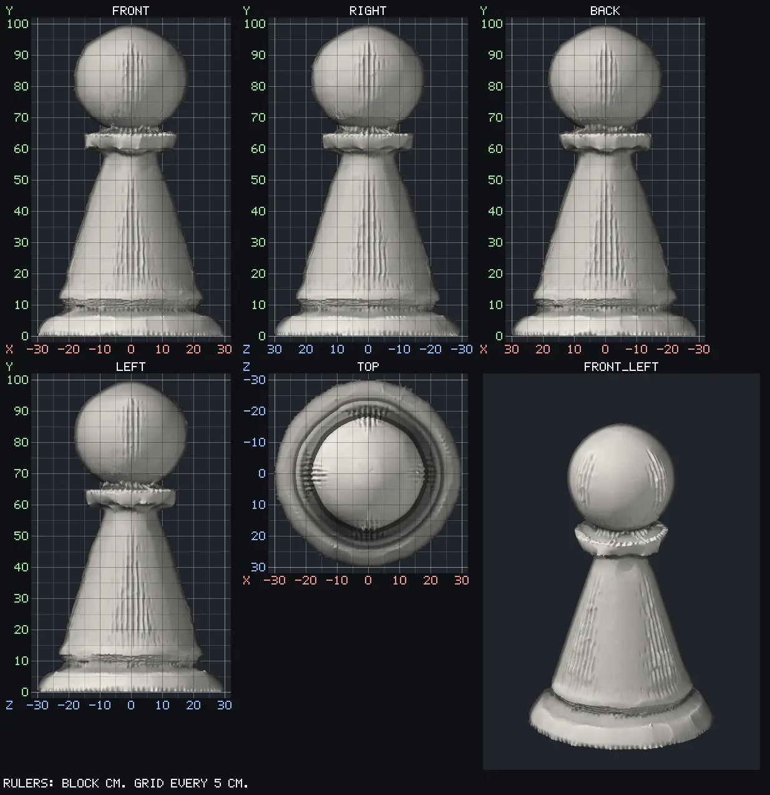
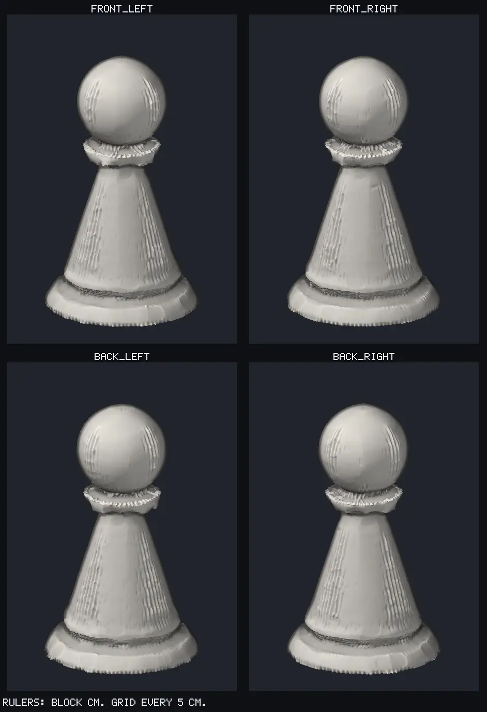
✓ Judge: chess pawn confidence 0.97
It is a rotationally symmetric piece with a flared round base, a conical body, a ruffled collar and a spherical head on top, which is the classic chess pawn profile.
- cost
- $0.37
- turns
- 12 of 60, 32 passes, 6,718 strikes
- ended
- finish
- stone left
- 241.8 kg (75.2% removed, 100 cm tall)
- proud of own form
- mean 0.50 cm, max 2.0 cm
the sculptor's own statement (the model's words about its piece, not a finding)Pawn
The humblest piece on the board, made nearly a metre tall: a round head on a collar above a body that flares out to a wide stepped foot. I rasped the head and body smooth and left the claw's grain on the collar's rim, so it reads like a turned ring.
32 passes
- declare_form turn 1, 1 strikes
“I'm stating the pawn as stacked rounds: a wide stepped foot, a flaring body, a collar and a round head.”
Declared form "pawn" (5 shapes, blend 2 cm). Inside the block it spans X -28 to 28, Y 0 to 98, Z -28 to 28 and holds about 82.6 litres (224 kg). Nothing was cut. 10% of the form lies outside the block, where there is no stone to make it from. - rough_out turn 1, 1619 strikes
“Taking the big waste off all round, leaving a safe skin over the pawn.”
Roughed out to 'pawn' with the point chisel, leaving 4 cm: 12 saw cuts took 74,286 cm³ (201.3 kg) off in slabs, 1601 chisel strikes took 132,633 cm³ (359.4 kg) and 517 cm³ fell away loose. Outside the margin the stone now stands 0.4 cm proud on average and 1.9 cm at most. In all 207436 cm³ (562.2 kg) came off. 63 offcuts fell to the floor (largest 14299 cm³). 413.4 kg of stone remains. - rough_out turn 2, 1209 strikes
“Closing in with the claw so the head, collar and flare start to show their true curves.”
Roughed out to 'pawn' with the claw chisel, leaving 1.5 cm: 1205 chisel strikes took 41,452 cm³ (112.3 kg) and 315 cm³ fell away loose. Outside the margin the stone now stands 0.5 cm proud on average and 1.6 cm at most. In all 41767 cm³ (113.2 kg) came off. 44 offcuts fell to the floor (largest 50 cm³). 300.3 kg of stone remains. - rough_out turn 2, 997 strikes
“A last even pass down nearly to the finished skin.”
Roughed out to 'pawn' with the claw chisel, leaving 0.4 cm: 995 chisel strikes took 16,053 cm³ (43.5 kg) and 0.6 cm³ fell away loose. Outside the margin the stone now stands 0.5 cm proud on average and 1.6 cm at most. In all 16054 cm³ (43.5 kg) came off. 256.8 kg of stone remains. - rasp turn 3, 73 strikes
“Smoothing the claw ridges off the face of the head.”
Rasp from the front view: 4 passes, 72 strokes 14 cm wide, from (x -14.0, y 72.0, z 4.3) to (x 14.0, y 72.0, z 5.4), wore off 314 cm³ of high spots. In all 314 cm³ (0.85 kg) came off. 255.9 kg of stone remains. - rasp turn 3, 73 strikes
“Same for the back of the head.”
Rasp from the back view: 4 passes, 72 strokes 14 cm wide, from (x -14.0, y 72.0, z -5.2) to (x 14.0, y 72.0, z -5.2), wore off 304 cm³ of high spots. In all 304 cm³ (0.82 kg) came off. 255.1 kg of stone remains. - rasp turn 3, 137 strikes
“Rasping the flare of the body smooth on the front.”
Rasp from the front view: 4 passes, 136 strokes 14 cm wide, from (x -18.0, y 14.0, z 15.4) to (x -18.0, y 14.0, z 14.9), wore off 616 cm³ of high spots. In all 616 cm³ (1.67 kg) came off. 253.4 kg of stone remains. - rasp turn 3, 137 strikes
“And on the back.”
Rasp from the back view: 4 passes, 136 strokes 14 cm wide, from (x -18.0, y 14.0, z -14.3) to (x -18.0, y 14.0, z -14.3), wore off 602 cm³ of high spots. In all 602 cm³ (1.63 kg) came off. 251.8 kg of stone remains. - rasp turn 3, 137 strikes
“Now the left flank of the body.”
Rasp from the left view: 4 passes, 136 strokes 14 cm wide, from (x -13.9, y 14.0, z -18.0) to (x -13.8, y 14.0, z -18.0), wore off 463 cm³ of high spots. In all 463 cm³ (1.25 kg) came off. 250.5 kg of stone remains. - rasp turn 3, 137 strikes
“And the right flank.”
Rasp from the right view: 4 passes, 136 strokes 14 cm wide, from (x 14.3, y 14.0, z -18.0) to (x 14.0, y 14.0, z -18.0), wore off 475 cm³ of high spots. In all 475 cm³ (1.29 kg) came off. 249.2 kg of stone remains. - rasp turn 5, 297 strikes
“Running the rasp round the top of the foot to smooth the wide base.”
Rasp from the top view: 4 passes, 296 strokes 7 cm wide, from (x 25.0, y 6.5, z 0.0) to (x 25.0, y 6.5, z -0.0), wore off 391 cm³ of high spots. In all 391 cm³ (1.06 kg) came off. 248.2 kg of stone remains. - rasp turn 5, 77 strikes
“Smoothing the collar's front edge.”
Rasp from the front view: 4 passes, 76 strokes 6 cm wide, from (x -16.0, y 62.0, z 6.7) to (x 16.0, y 62.0, z 5.6), wore off 97 cm³ of high spots. In all 97.1 cm³ (0.26 kg) came off. 247.9 kg of stone remains. - rasp turn 5, 77 strikes
“And the collar's back.”
Rasp from the back view: 4 passes, 76 strokes 6 cm wide, from (x -16.0, y 62.0, z -5.4) to (x 16.0, y 62.0, z -6.6), wore off 97 cm³ of high spots. In all 97.2 cm³ (0.26 kg) came off. 247.6 kg of stone remains. - rasp turn 5, 77 strikes
“The collar's left side.”
Rasp from the left view: 4 passes, 76 strokes 6 cm wide, from (x -3.4, y 62.0, z -16.0) to (x -1.3, y 62.0, z 16.0), wore off 95 cm³ of high spots. In all 95.3 cm³ (0.26 kg) came off. 247.4 kg of stone remains. - rasp turn 5, 69 strikes
“The collar's right side.”
Rasp from the right view: 4 passes, 68 strokes 6 cm wide, from (x 7.4, y 62.0, z -14.2) to (x 7.9, y 62.0, z 14.2), wore off 94 cm³ of high spots. 2 of 19 points along the path missed the stone. In all 94 cm³ (0.25 kg) came off. 247.1 kg of stone remains. - rasp turn 5, 73 strikes
“Smoothing the left side of the head.”
Rasp from the left view: 4 passes, 72 strokes 14 cm wide, from (x -5.3, y 72.0, z -14.0) to (x -6.6, y 72.0, z 14.0), wore off 280 cm³ of high spots. In all 280 cm³ (0.76 kg) came off. 246.4 kg of stone remains. - rasp turn 5, 73 strikes
“And the right side of the head.”
Rasp from the right view: 4 passes, 72 strokes 14 cm wide, from (x 4.8, y 72.0, z -14.0) to (x 5.2, y 72.0, z 14.0), wore off 278 cm³ of high spots. In all 278 cm³ (0.75 kg) came off. 245.6 kg of stone remains. - rasp turn 7, 97 strikes
“Smoothing the rim of the foot from the front.”
Rasp from the front view: 4 passes, 96 strokes 8 cm wide, from (x -27.0, y 4.0, z 12.4) to (x 27.0, y 4.0, z 12.5), wore off 162 cm³ of high spots. In all 162 cm³ (0.44 kg) came off. 245.2 kg of stone remains. - rasp turn 7, 97 strikes
“And from the back.”
Rasp from the back view: 4 passes, 96 strokes 8 cm wide, from (x -27.0, y 4.0, z -11.6) to (x 27.0, y 4.0, z -12.3), wore off 172 cm³ of high spots. In all 172 cm³ (0.47 kg) came off. 244.7 kg of stone remains. - rasp turn 7, 97 strikes
“And from the left.”
Rasp from the left view: 4 passes, 96 strokes 8 cm wide, from (x -9.4, y 4.0, z -27.0) to (x -10.0, y 4.0, z 27.0), wore off 210 cm³ of high spots. In all 210 cm³ (0.57 kg) came off. 244.1 kg of stone remains. - rasp turn 7, 97 strikes
“And from the right.”
Rasp from the right view: 4 passes, 96 strokes 8 cm wide, from (x 9.5, y 4.0, z -27.0) to (x 9.7, y 4.0, z 27.0), wore off 205 cm³ of high spots. In all 205 cm³ (0.56 kg) came off. 243.6 kg of stone remains. - rasp turn 7, 109 strikes
“Rounding the crown of the head from above.”
Rasp from the top view: 4 passes, 108 strokes 10 cm wide, from (x 0.0, y 99.6, z 0.0) to (x 8.0, y 94.9, z 8.0), wore off 42 cm³ of high spots. In all 41.8 cm³ (0.11 kg) came off. 243.5 kg of stone remains. - rasp turn 9, 91 strikes
“Working the rasp down the quarter of the flare where ridges remain.”
Rasp from the front view: 5 passes, 90 strokes 8 cm wide, from (x -13.0, y 16.0, z 17.1) to (x -5.0, y 56.0, z 7.1), wore off 22 cm³ of high spots. In all 22.2 cm³ (0.06 kg) came off. 243.4 kg of stone remains. - rasp turn 9, 91 strikes
“The other front quarter.”
Rasp from the front view: 5 passes, 90 strokes 8 cm wide, from (x 13.0, y 16.0, z 17.1) to (x 5.0, y 56.0, z 7.1), wore off 19 cm³ of high spots. In all 18.7 cm³ (0.05 kg) came off. 243.4 kg of stone remains. - rasp turn 9, 91 strikes
“A back quarter.”
Rasp from the back view: 5 passes, 90 strokes 8 cm wide, from (x -13.0, y 16.0, z -17.0) to (x -5.0, y 56.0, z -7.2), wore off 19 cm³ of high spots. In all 18.7 cm³ (0.05 kg) came off. 243.3 kg of stone remains. - rasp turn 9, 91 strikes
“The last back quarter.”
Rasp from the back view: 5 passes, 90 strokes 8 cm wide, from (x 13.0, y 16.0, z -17.1) to (x 5.0, y 56.0, z -7.2), wore off 17 cm³ of high spots. In all 16.8 cm³ (0.05 kg) came off. 243.3 kg of stone remains. - rasp turn 9, 46 strikes
“Easing the head's quarter facets.”
Rasp from the front view: 5 passes, 45 strokes 8 cm wide, from (x -11.0, y 72.0, z 9.7) to (x -12.0, y 90.0, z 10.0), wore off 17 cm³ of high spots. In all 17.4 cm³ (0.05 kg) came off. 243.2 kg of stone remains. - rasp turn 9, 46 strikes
“Same on the back of the head.”
Rasp from the back view: 5 passes, 45 strokes 8 cm wide, from (x -11.0, y 72.0, z -9.8) to (x -12.0, y 90.0, z -9.9), wore off 16 cm³ of high spots. In all 16.3 cm³ (0.04 kg) came off. 243.2 kg of stone remains. - rasp turn 11, 129 strikes
“Cleaning the ragged edge of the collar.”
Rasp from the front view: 6 passes, 128 strokes 5 cm wide, from (x -16.0, y 62.0, z 1.0) to (x 16.0, y 62.0, z 1.8), wore off 130 cm³ of high spots. In all 130 cm³ (0.35 kg) came off. 242.8 kg of stone remains. - rasp turn 11, 127 strikes
“The collar from behind.”
Rasp from the back view: 6 passes, 126 strokes 5 cm wide, from (x -14.5, y 62.0, z -7.1) to (x 14.5, y 62.0, z -6.9), wore off 123 cm³ of high spots. 2 of 23 points along the path missed the stone. In all 123 cm³ (0.33 kg) came off. 242.5 kg of stone remains. - rasp turn 11, 127 strikes
“The collar's left.”
Rasp from the left view: 6 passes, 126 strokes 5 cm wide, from (x -2.1, y 62.0, z -14.5) to (x -0.6, y 62.0, z 14.5), wore off 111 cm³ of high spots. 2 of 23 points along the path missed the stone. In all 111 cm³ (0.30 kg) came off. 242.2 kg of stone remains. - rasp turn 11, 119 strikes
“The collar's right.”
Rasp from the right view: 6 passes, 118 strokes 5 cm wide, from (x 2.8, y 62.0, z -14.5) to (x 5.9, y 62.0, z 13.1), wore off 128 cm³ of high spots. 3 of 23 points along the path missed the stone. In all 128 cm³ (0.35 kg) came off. 241.8 kg of stone remains.
A-pawn-opus-formed-noref-20261109123505-f9f
cat
cat · opus · direct · ref off
round A
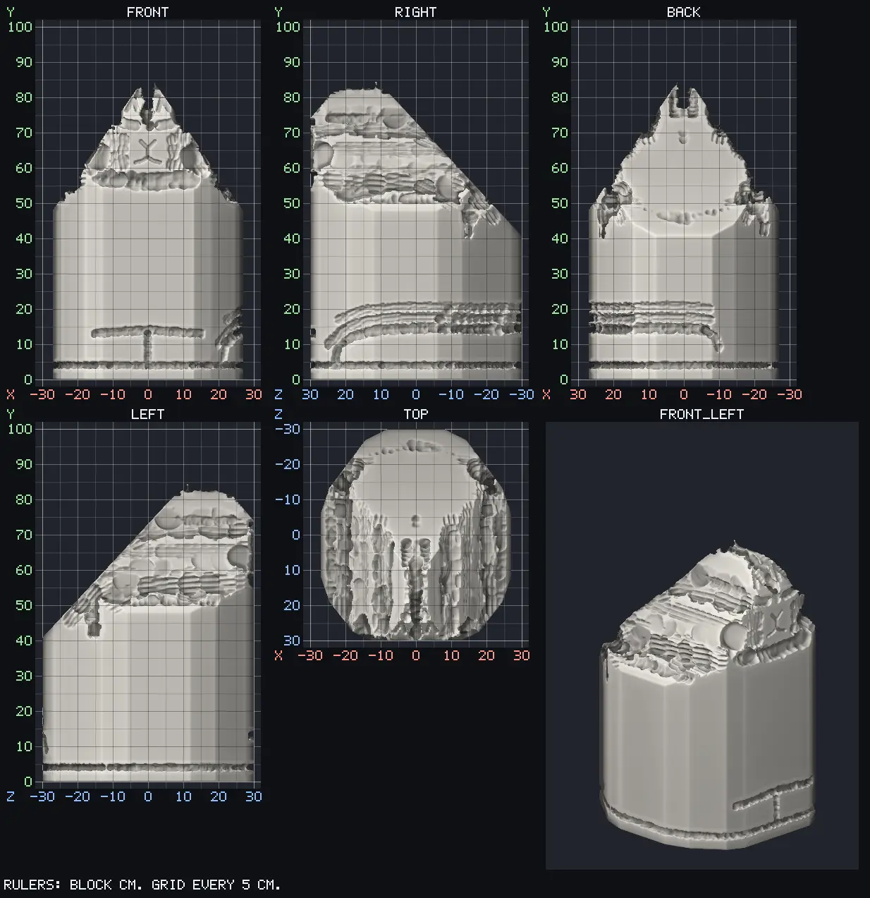
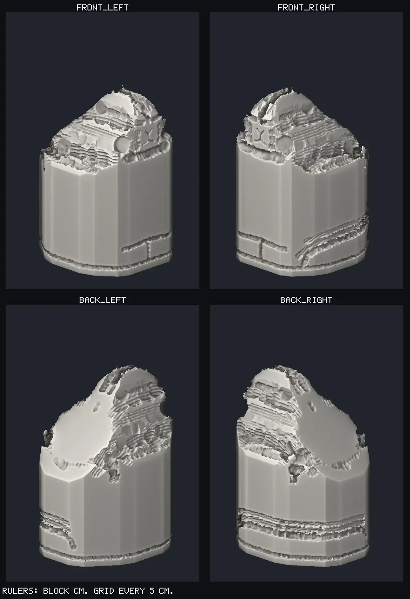
✗ Judge: owl confidence 0.20; it is a cat lying down
The block is mostly uncarved below about 50 cm, with a pointed, tufted top carrying a small Y-shaped mark on the front, which could be an owl's beak and ear tufts, though it is very rough and this is a low-confidence guess.
- cost
- $2.26
- turns
- 45 of 60, 135 passes, 2,700 strikes
- ended
- finish
- stone left
- 442.9 kg (54.6% removed, 84 cm tall)
the sculptor's own statement (the model's words about its piece, not a finding)Loaf
A cat folded into the shape it likes best, a compact loaf of marble with the paws tucked under and the tail wrapped round its side. The body is left smooth and plain, and the head rises from it as one faceted peak with pricked ears and a small, calm face that looks straight out.
135 passes
- saw turn 1, 2 strikes
“Taking the top off just above where the ear tips will be.”
Sawed from [-30, 96] to [30, 96] in the front view, discarding everything above the line: 14,400 cm³ (39.0 kg) fell away in 1 piece, 4% of the stone that was there. In all 14400 cm³ (39.0 kg) came off. 1 offcut fell to the floor (largest 14400 cm³). 936.6 kg of stone remains. - saw turn 1, 2 strikes
“Clearing the left shoulder corner beside the head.”
Sawed from [-30, 60] to [-15, 100] in the front view, discarding everything left of the line: 14,580 cm³ (39.5 kg) fell away in 1 piece, 4% of the stone that was there. In all 14580 cm³ (39.5 kg) came off. 1 offcut fell to the floor (largest 14580 cm³). 897.1 kg of stone remains. - saw turn 1, 2 strikes
“Clearing the right shoulder corner beside the head.”
Sawed from [30, 60] to [15, 100] in the front view, discarding everything right of the line: 14,580 cm³ (39.5 kg) fell away in 1 piece, 4% of the stone that was there. In all 14580 cm³ (39.5 kg) came off. 1 offcut fell to the floor (largest 14580 cm³). 857.6 kg of stone remains. - saw turn 1, 2 strikes
“Sloping off the stone behind the head so the back of the loaf can show.”
Sawed from [-30, 58] to [-5, 100] in the right view, discarding everything right of the line: 18,264 cm³ (49.5 kg) fell away in 1 piece, 6% of the stone that was there. In all 18264 cm³ (49.5 kg) came off. 1 offcut fell to the floor (largest 18265 cm³). 808.1 kg of stone remains. - saw turn 2, 2 strikes
“Taking the back-left corner off so the loaf rounds at the haunch.”
Sawed from [-30, -16] to [-16, -30] in the top view, discarding everything left of the line: 6,225 cm³ (16.9 kg) fell away in 1 piece, 2% of the stone that was there. In all 6225 cm³ (16.9 kg) came off. 1 offcut fell to the floor (largest 6225 cm³). 791.2 kg of stone remains. - saw turn 2, 2 strikes
“Taking the back-right corner off for the other haunch.”
Sawed from [30, -16] to [16, -30] in the top view, discarding everything right of the line: 6,225 cm³ (16.9 kg) fell away in 1 piece, 2% of the stone that was there. In all 6225 cm³ (16.9 kg) came off. 1 offcut fell to the floor (largest 6225 cm³). 774.3 kg of stone remains. - saw turn 2, 2 strikes
“Softening the front-left corner of the chest.”
Sawed from [-30, 20] to [-20, 30] in the top view, discarding everything left of the line: 3,444 cm³ (9.3 kg) fell away in 1 piece, 1% of the stone that was there. In all 3444 cm³ (9.3 kg) came off. 1 offcut fell to the floor (largest 3445 cm³). 765.0 kg of stone remains. - saw turn 2, 2 strikes
“Softening the front-right corner of the chest.”
Sawed from [30, 20] to [20, 30] in the top view, discarding everything right of the line: 3,444 cm³ (9.3 kg) fell away in 1 piece, 1% of the stone that was there. In all 3444 cm³ (9.3 kg) came off. 1 offcut fell to the floor (largest 3445 cm³). 755.7 kg of stone remains. - saw turn 3, 2 strikes
“Bevelling the forehead in front of where the ears stand.”
Sawed from [30, 84] to [18, 96] in the right view, discarding everything left of the line: 2,591 cm³ (7.0 kg) fell away in 1 piece, 1% of the stone that was there. In all 2591 cm³ (7.0 kg) came off. 1 offcut fell to the floor (largest 2591 cm³). 748.6 kg of stone remains. - saw turn 3, 2 strikes
“Cutting in behind the ears to start the back of the skull.”
Sawed from [2, 96] to [-14, 70] in the right view, discarding everything right of the line: 17,338 cm³ (47.0 kg) fell away in 1 piece, 6% of the stone that was there. In all 17338 cm³ (47.0 kg) came off. 1 offcut fell to the floor (largest 17341 cm³). 701.6 kg of stone remains. - chisel turn 5, 22 strikes
“Knocking down the left shoulder so the head stands clear of the body.”
Point chisel from the top view: It ran on the stone from (x -23.0, y 57.6, z -21.6) to (x -23.0, y 78.7, z 26.0). 1 of 22 points along the path missed the stone (first miss at [-23, -24]). 21 strikes took 850 cm³, 4 cm deep and 6 cm wide. 0.9 cm³ more fell away loose. In all 851 cm³ (2.31 kg) came off. 699.3 kg of stone remains. - chisel turn 5, 21 strikes
“Same on the right shoulder.”
Point chisel from the top view: It ran on the stone from (x 23.0, y 57.6, z -21.6) to (x 23.0, y 78.7, z 26.0). 1 of 22 points along the path missed the stone (first miss at [23, -24]). 20 strikes took 796 cm³, 4 cm deep and 6 cm wide. In all 797 cm³ (2.16 kg) came off. 697.2 kg of stone remains. - chisel turn 6, 18 strikes
“Lowering the left shoulder further beside the cheek.”
Point chisel from the top view: It ran on the stone from (x -20.0, y 60.2, z -20.0) to (x -20.0, y 86.7, z 26.0). 17 strikes took 811 cm³, 4 cm deep and 7 cm wide. In all 811 cm³ (2.20 kg) came off. 695.0 kg of stone remains. - chisel turn 6, 18 strikes
“Lowering the right shoulder beside the cheek.”
Point chisel from the top view: It ran on the stone from (x 20.0, y 60.3, z -20.0) to (x 20.0, y 86.7, z 26.0). 17 strikes took 797 cm³, 4 cm deep and 7 cm wide. In all 797 cm³ (2.16 kg) came off. 692.8 kg of stone remains. - chisel turn 6, 15 strikes
“Rounding the outer edge of the left shoulder.”
Point chisel from the top view: It ran on the stone from (x -26.0, y 68.9, z -14.0) to (x -26.0, y 70.7, z 22.0). 14 strikes took 753 cm³, 4 cm deep and 7 cm wide. In all 753 cm³ (2.04 kg) came off. 690.8 kg of stone remains. - chisel turn 6, 13 strikes
“Rounding the outer edge of the right shoulder.”
Point chisel from the top view: It ran on the stone from (x 26.0, y 69.6, z -14.0) to (x 26.0, y 70.7, z 22.0). 12 strikes took 662 cm³, 4 cm deep and 7 cm wide. 0.7 cm³ more fell away loose. In all 663 cm³ (1.80 kg) came off. 1 offcut fell to the floor (largest 1 cm³). 689.0 kg of stone remains. - chisel turn 7, 15 strikes
“Continuing to drop the left shoulder down towards the back line.”
Point chisel from the top view: It ran on the stone from (x -19.0, y 57.4, z -18.0) to (x -19.0, y 83.1, z 27.0). 14 strikes took 1,206 cm³ (3.3 kg), 4 cm deep and 8 cm wide. 2.2 cm³ more fell away loose. In all 1209 cm³ (3.3 kg) came off. 1 offcut fell to the floor (largest 1 cm³). 685.7 kg of stone remains. - chisel turn 7, 17 strikes
“Continuing to drop the right shoulder.”
Point chisel from the top view: It ran on the stone from (x 19.0, y 57.1, z -18.0) to (x 19.0, y 83.7, z 27.0). 16 strikes took 1,280 cm³ (3.5 kg), 4 cm deep and 8 cm wide. 4.4 cm³ more fell away loose. In all 1285 cm³ (3.5 kg) came off. 1 offcut fell to the floor (largest 3 cm³). 682.2 kg of stone remains. - chisel turn 7, 14 strikes
“Taking the outer left shoulder down.”
Point chisel from the top view: It ran on the stone from (x -25.0, y 66.7, z -15.0) to (x -25.0, y 68.2, z 24.0). 13 strikes took 1,050 cm³ (2.8 kg), 4 cm deep and 8 cm wide. In all 1050 cm³ (2.8 kg) came off. 679.4 kg of stone remains. - chisel turn 7, 15 strikes
“Taking the outer right shoulder down.”
Point chisel from the top view: It ran on the stone from (x 25.0, y 67.4, z -15.0) to (x 25.0, y 73.3, z 24.0). 14 strikes took 1,051 cm³ (2.8 kg), 4 cm deep and 8 cm wide. 0.7 cm³ more fell away loose. In all 1052 cm³ (2.9 kg) came off. 676.5 kg of stone remains. - chisel turn 7, 16 strikes
“Another layer off the left shoulder.”
Point chisel from the top view: It ran on the stone from (x -21.0, y 54.8, z -18.0) to (x -21.0, y 80.0, z 27.0). 15 strikes took 1,145 cm³ (3.1 kg), 4 cm deep and 8 cm wide. In all 1145 cm³ (3.1 kg) came off. 673.4 kg of stone remains. - chisel turn 7, 16 strikes
“Another layer off the right shoulder.”
Point chisel from the top view: It ran on the stone from (x 21.0, y 54.7, z -18.0) to (x 21.0, y 76.8, z 27.0). 15 strikes took 1,089 cm³ (3.0 kg), 4 cm deep and 8 cm wide. 2.9 cm³ more fell away loose. In all 1092 cm³ (3.0 kg) came off. 1 offcut fell to the floor (largest 1 cm³). 670.5 kg of stone remains. - chisel turn 8, 14 strikes
“Dropping the left shoulder another layer.”
Point chisel from the top view: It ran on the stone from (x -23.0, y 61.8, z -16.0) to (x -23.0, y 73.3, z 26.0). 13 strikes took 847 cm³, 4 cm deep and 8 cm wide. In all 848 cm³ (2.30 kg) came off. 668.2 kg of stone remains. - chisel turn 8, 15 strikes
“Dropping the right shoulder another layer.”
Point chisel from the top view: It ran on the stone from (x 23.0, y 61.2, z -16.0) to (x 23.0, y 75.1, z 26.0). 14 strikes took 994 cm³, 4 cm deep and 8 cm wide. 2.1 cm³ more fell away loose. In all 997 cm³ (2.70 kg) came off. 1 offcut fell to the floor (largest 2 cm³). 665.5 kg of stone remains. - chisel turn 8, 15 strikes
“Rounding over the outer left flank top.”
Point chisel from the top view: It ran on the stone from (x -27.0, y 62.0, z -12.0) to (x -27.0, y 64.9, z 20.0). 14 strikes took 494 cm³, 4 cm deep and 6 cm wide. 3.2 cm³ more fell away loose. In all 497 cm³ (1.35 kg) came off. 1 offcut fell to the floor (largest 3 cm³). 664.1 kg of stone remains. - chisel turn 8, 15 strikes
“Rounding over the outer right flank top.”
Point chisel from the top view: It ran on the stone from (x 27.0, y 65.2, z -12.0) to (x 27.0, y 62.5, z 20.0). 14 strikes took 436 cm³, 4 cm deep and 6 cm wide. 2.4 cm³ more fell away loose. In all 438 cm³ (1.19 kg) came off. 1 offcut fell to the floor (largest 2 cm³). 662.9 kg of stone remains. - chisel turn 8, 18 strikes
“Cutting in along the left cheek line.”
Point chisel from the top view: It ran on the stone from (x -20.0, y 53.2, z -16.0) to (x -20.0, y 74.0, z 27.0). 17 strikes took 593 cm³, 3 cm deep and 6 cm wide. 1.8 cm³ more fell away loose. In all 595 cm³ (1.61 kg) came off. 661.3 kg of stone remains. - chisel turn 8, 20 strikes
“Cutting in along the right cheek line.”
Point chisel from the top view: It ran on the stone from (x 20.0, y 52.9, z -16.0) to (x 20.0, y 72.2, z 27.0). 19 strikes took 474 cm³, 3 cm deep and 6 cm wide. In all 474 cm³ (1.29 kg) came off. 660.0 kg of stone remains. - saw turn 9, 2 strikes
“Trimming the left flank in to the loaf's width.”
Sawed from [-27, 0] to [-27, 100] in the front view, discarding everything left of the line: 7,089 cm³ (19.2 kg) fell away in 1 piece, 3% of the stone that was there. In all 7089 cm³ (19.2 kg) came off. 1 offcut fell to the floor (largest 7078 cm³). 640.8 kg of stone remains. - saw turn 9, 2 strikes
“Trimming the right flank in to the loaf's width.”
Sawed from [27, 0] to [27, 100] in the front view, discarding everything right of the line: 7,143 cm³ (19.4 kg) fell away in 1 piece, 3% of the stone that was there. In all 7143 cm³ (19.4 kg) came off. 1 offcut fell to the floor (largest 7132 cm³). 621.5 kg of stone remains. - saw turn 9, 2 strikes
“Cutting the outer slope of the left ear.”
Sawed from [-18, 85] to [-10, 96] in the front view, discarding everything left of the line: 771 cm³ fell away in 1 piece, 0% of the stone that was there. In all 771 cm³ (2.09 kg) came off. 1 offcut fell to the floor (largest 770 cm³). 619.4 kg of stone remains. - saw turn 9, 2 strikes
“Cutting the outer slope of the right ear.”
Sawed from [18, 85] to [10, 96] in the front view, discarding everything right of the line: 765 cm³ fell away in 1 piece, 0% of the stone that was there. In all 765 cm³ (2.07 kg) came off. 1 offcut fell to the floor (largest 766 cm³). 617.3 kg of stone remains. - chisel turn 9, 9 strikes
“Opening the dip between the ears.”
Point chisel from the top view: It ran on the stone from (x 0.0, y 89.5, z -2.0) to (x 0.0, y 92.0, z 22.0). 8 strikes took 568 cm³, 4 cm deep and 8 cm wide. In all 568 cm³ (1.54 kg) came off. 615.8 kg of stone remains. - chisel turn 10, 15 strikes
“Cutting in behind the skull so the head separates from the back.”
Point chisel from the top view: It ran on the stone from (x -18.0, y 76.0, z -8.0) to (x 18.0, y 70.2, z -8.0). 14 strikes took 798 cm³, 4 cm deep and 7 cm wide. In all 798 cm³ (2.16 kg) came off. 613.6 kg of stone remains. - chisel turn 10, 17 strikes
“Lowering the back behind the head.”
Point chisel from the top view: It ran on the stone from (x -20.0, y 50.1, z -15.0) to (x 20.0, y 49.8, z -15.0). 16 strikes took 1,069 cm³ (2.9 kg), 4 cm deep and 7 cm wide. In all 1069 cm³ (2.9 kg) came off. 610.7 kg of stone remains. - chisel turn 10, 14 strikes
“Easing the back towards the rump.”
Point chisel from the top view: It ran on the stone from (x -20.0, y 54.2, z -22.0) to (x 20.0, y 56.8, z -22.0). 13 strikes took 543 cm³, 3 cm deep and 7 cm wide. In all 543 cm³ (1.47 kg) came off. 609.2 kg of stone remains. - chisel turn 10, 16 strikes
“Lowering the flat top of the left shoulder.”
Point chisel from the top view: It ran on the stone from (x -23.0, y 58.1, z -14.0) to (x -23.0, y 62.8, z 24.0). 15 strikes took 805 cm³, 4 cm deep and 7 cm wide. In all 805 cm³ (2.18 kg) came off. 607.1 kg of stone remains. - chisel turn 10, 16 strikes
“Lowering the flat top of the right shoulder.”
Point chisel from the top view: It ran on the stone from (x 23.0, y 58.9, z -14.0) to (x 23.0, y 68.9, z 24.0). 15 strikes took 842 cm³, 4 cm deep and 7 cm wide. 1.7 cm³ more fell away loose. In all 844 cm³ (2.29 kg) came off. 1 offcut fell to the floor (largest 2 cm³). 604.8 kg of stone remains. - saw turn 11, 2 strikes
“Rounding the left haunch further in plan.”
Sawed from [-27, -10] to [-12, -30] in the top view, discarding everything left of the line: 4,757 cm³ (12.9 kg) fell away in 1 piece, 2% of the stone that was there. In all 4757 cm³ (12.9 kg) came off. 1 offcut fell to the floor (largest 4754 cm³). 591.9 kg of stone remains. - saw turn 11, 2 strikes
“Rounding the right haunch further in plan.”
Sawed from [27, -10] to [12, -30] in the top view, discarding everything right of the line: 4,828 cm³ (13.1 kg) fell away in 1 piece, 2% of the stone that was there. In all 4828 cm³ (13.1 kg) came off. 1 offcut fell to the floor (largest 4826 cm³). 578.8 kg of stone remains. - saw turn 11, 2 strikes
“Rounding the front left of the chest.”
Sawed from [-27, 16] to [-16, 30] in the top view, discarding everything left of the line: 3,387 cm³ (9.2 kg) fell away in 1 piece, 2% of the stone that was there. In all 3387 cm³ (9.2 kg) came off. 1 offcut fell to the floor (largest 3383 cm³). 569.6 kg of stone remains. - saw turn 11, 2 strikes
“Rounding the front right of the chest.”
Sawed from [27, 16] to [16, 30] in the top view, discarding everything right of the line: 3,404 cm³ (9.2 kg) fell away in 1 piece, 2% of the stone that was there. In all 3404 cm³ (9.2 kg) came off. 1 offcut fell to the floor (largest 3400 cm³). 560.4 kg of stone remains. - chisel turn 11, 15 strikes
“Cutting the shadow under the chin where the head meets the chest.”
Point chisel from the front view: It ran on the stone from (x -14.0, y 57.0, z 30.0) to (x 14.0, y 57.0, z 30.0). 14 strikes took 332 cm³, 3 cm deep and 5 cm wide. In all 332 cm³ (0.90 kg) came off. 559.5 kg of stone remains. - saw turn 12, 2 strikes
“Sloping the forehead back up into the front of the ears.”
Sawed from [15, 96] to [26, 82] in the right view, discarding everything left of the line: 1,948 cm³ (5.3 kg) fell away in 1 piece, 1% of the stone that was there. In all 1948 cm³ (5.3 kg) came off. 1 offcut fell to the floor (largest 1949 cm³). 554.2 kg of stone remains. - saw turn 12, 2 strikes
“Thinning the back of the ears and rounding the back of the skull.”
Sawed from [3, 96] to [-8, 78] in the right view, discarding everything right of the line: 1,125 cm³ (3.0 kg) fell away in 4 pieces, 1% of the stone that was there. 0.2 cm³ of that was stone the cut left unattached. In all 1125 cm³ (3.0 kg) came off. 4 offcuts fell to the floor (largest 388 cm³). 551.2 kg of stone remains. - chisel turn 12, 10 strikes
“Deepening the valley between the ears.”
Point chisel from the top view: It ran on the stone from (x 0.0, y 86.8, z 0.0) to (x 0.0, y 89.1, z 20.0). 9 strikes took 648 cm³, 4 cm deep and 7 cm wide. In all 648 cm³ (1.75 kg) came off. 549.4 kg of stone remains. - saw turn 13, 2 strikes
“Taking the next corner off the left side so the loaf reads round.”
Sawed from [-27, 12] to [-24.5, 19.2] in the top view, discarding everything left of the line: 295 cm³ fell away in 2 pieces, 0% of the stone that was there. In all 295 cm³ (0.80 kg) came off. 2 offcuts fell to the floor (largest 280 cm³). 548.6 kg of stone remains. - saw turn 13, 2 strikes
“Same on the right side.”
Sawed from [27, 12] to [24.5, 19.2] in the top view, discarding everything right of the line: 297 cm³ fell away in 2 pieces, 0% of the stone that was there. In all 297 cm³ (0.81 kg) came off. 2 offcuts fell to the floor (largest 281 cm³). 547.8 kg of stone remains. - saw turn 13, 2 strikes
“Rounding the front left corner, which also eases the cheek.”
Sawed from [-13, 30] to [-17.9, 27.6] in the top view, discarding everything left of the line: 272 cm³ fell away in 1 piece, 0% of the stone that was there. In all 272 cm³ (0.74 kg) came off. 1 offcut fell to the floor (largest 268 cm³). 547.1 kg of stone remains. - saw turn 13, 2 strikes
“Rounding the front right corner and cheek.”
Sawed from [13, 30] to [17.9, 27.6] in the top view, discarding everything right of the line: 275 cm³ fell away in 1 piece, 0% of the stone that was there. In all 275 cm³ (0.75 kg) came off. 1 offcut fell to the floor (largest 272 cm³). 546.3 kg of stone remains. - saw turn 13, 2 strikes
“Rounding the left flank into the haunch.”
Sawed from [-27, -6] to [-24.6, -13.2] in the top view, discarding everything left of the line: 278 cm³ fell away in 2 pieces, 0% of the stone that was there. In all 278 cm³ (0.75 kg) came off. 2 offcuts fell to the floor (largest 254 cm³). 545.6 kg of stone remains. - saw turn 13, 2 strikes
“Rounding the right flank into the haunch.”
Sawed from [27, -6] to [24.6, -13.2] in the top view, discarding everything right of the line: 288 cm³ fell away in 2 pieces, 0% of the stone that was there. 0.3 cm³ of that was stone the cut left unattached. In all 288 cm³ (0.78 kg) came off. 2 offcuts fell to the floor (largest 263 cm³). 544.8 kg of stone remains. - saw turn 13, 2 strikes
“Rounding the back left of the rump.”
Sawed from [-8, -30] to [-14.4, -26.8] in the top view, discarding everything left of the line: 280 cm³ fell away in 1 piece, 0% of the stone that was there. In all 280 cm³ (0.76 kg) came off. 1 offcut fell to the floor (largest 278 cm³). 544.0 kg of stone remains. - saw turn 13, 2 strikes
“Rounding the back right of the rump.”
Sawed from [8, -30] to [14.4, -26.8] in the top view, discarding everything right of the line: 280 cm³ fell away in 1 piece, 0% of the stone that was there. In all 280 cm³ (0.76 kg) came off. 1 offcut fell to the floor (largest 278 cm³). 543.3 kg of stone remains. - chisel turn 14, 61 strikes
“Rolling over the top edge of the loaf all the way round the back.”
Point chisel from the top view: It ran on the stone from (x -21.7, y 59.5, z 22.1) to (x 21.7, y 59.2, z 22.1). 2 of 68 points along the path missed the stone (first miss at [-21, 24]). 60 strikes took 1,272 cm³ (3.4 kg), 3 cm deep and 5 cm wide. 1.2 cm³ more fell away loose. In all 1273 cm³ (3.5 kg) came off. 539.8 kg of stone remains. - chisel turn 15, 13 strikes
“Rounding the left cheek where the face turns to the side.”
Point chisel from the front view: It ran on the stone from (x -16.0, y 60.0, z 28.5) to (x -15.0, y 83.0, z 25.2). 12 strikes took 225 cm³, 3 cm deep and 5 cm wide. In all 225 cm³ (0.61 kg) came off. 539.2 kg of stone remains. - chisel turn 15, 14 strikes
“Rounding the right cheek.”
Point chisel from the front view: It ran on the stone from (x 16.0, y 60.0, z 28.5) to (x 15.0, y 83.0, z 25.2). 13 strikes took 244 cm³, 3 cm deep and 5 cm wide. In all 244 cm³ (0.66 kg) came off. 538.5 kg of stone remains. - chisel turn 15, 27 strikes
“Sloping the inner edge of the left ear into a point.”
Point chisel from the top view: It ran on the stone from (x -5.0, y 87.8, z -2.0) to (x -5.0, y 92.2, z 18.0). 26 strikes in 2 layers took 221 cm³, 3 cm deep and 4 cm wide. In all 221 cm³ (0.60 kg) came off. 538.0 kg of stone remains. - chisel turn 15, 26 strikes
“Sloping the inner edge of the right ear into a point.”
Point chisel from the top view: It ran on the stone from (x 5.0, y 87.8, z -2.0) to (x 5.0, y 92.2, z 18.0). 25 strikes in 2 layers took 214 cm³, 3 cm deep and 4 cm wide. 1.1 cm³ more fell away loose. In all 215 cm³ (0.58 kg) came off. 1 offcut fell to the floor (largest 1 cm³). 537.4 kg of stone remains. - chisel turn 16, 39 strikes
“Taking a second ring off the face so it domes forward instead of sitting flat.”
Point chisel from the front view: It ran on the stone from (x -11.0, y 60.0, z 30.0) to (x 11.0, y 60.0, z 30.0). 38 strikes took 261 cm³, 1.5 cm deep and 4 cm wide. In all 261 cm³ (0.71 kg) came off. 536.7 kg of stone remains. - chisel turn 16, 59 strikes
“Cutting the line where the tucked paws fold under the chest.”
Point chisel from the front view: It ran on the stone from (x -15.0, y 13.0, z 29.0) to (x 15.0, y 13.0, z 29.0). 58 strikes in 2 layers took 137 cm³, 2 cm deep and 2.5 cm wide. In all 137 cm³ (0.37 kg) came off. 536.3 kg of stone remains. - chisel turn 16, 22 strikes
“Parting the two front paws.”
Point chisel from the front view: It ran on the stone from (x 0.0, y 5.0, z 30.0) to (x 0.0, y 13.0, z 28.2). 21 strikes in 2 layers took 31 cm³, 2 cm deep and 2 cm wide. In all 31.3 cm³ (0.08 kg) came off. 536.2 kg of stone remains. - chisel turn 16, 96 strikes
“Marking where the cat ends and the plinth begins at the front.”
Point chisel from the front view: It ran on the stone from (x -20.0, y 4.0, z 24.9) to (x 20.0, y 4.0, z 24.9). 95 strikes in 2 layers took 137 cm³, 2 cm deep and 2 cm wide. In all 137 cm³ (0.37 kg) came off. 535.8 kg of stone remains. - chisel turn 17, 11 strikes
“Rolling the forehead back so the ring blends into a dome.”
Claw chisel from the front view: It ran on the stone from (x -10.0, y 79.0, z 27.3) to (x 10.0, y 79.0, z 27.1). 10 strikes took 74 cm³, 1 cm deep and 4 cm wide. In all 73.5 cm³ (0.20 kg) came off. 535.6 kg of stone remains. - chisel turn 17, 9 strikes
“Blending the left cheek plane.”
Claw chisel from the front view: It ran on the stone from (x -9.0, y 61.0, z 30.0) to (x -9.0, y 77.0, z 29.9). 8 strikes took 49 cm³, 1 cm deep and 4 cm wide. In all 48.5 cm³ (0.13 kg) came off. 535.5 kg of stone remains. - chisel turn 17, 10 strikes
“Blending the right cheek plane.”
Claw chisel from the front view: It ran on the stone from (x 9.0, y 61.0, z 30.0) to (x 9.0, y 77.0, z 29.9). 9 strikes took 51 cm³, 1 cm deep and 4 cm wide. In all 50.8 cm³ (0.14 kg) came off. 535.4 kg of stone remains. - chisel turn 17, 28 strikes
“Evening out the rough rings at the edge of the face.”
Claw chisel from the front view: It ran on the stone from (x -14.0, y 60.0, z 29.5) to (x 14.0, y 60.0, z 28.0). 27 strikes took 375 cm³, 0.8 cm deep and 5 cm wide. 1.5 cm³ more fell away loose. In all 376 cm³ (1.02 kg) came off. 1 offcut fell to the floor (largest 1 cm³). 534.3 kg of stone remains. - chisel turn 18, 11 strikes
“Setting in the left eye, slanting up at the outer corner.”
Flat chisel from the front view: It ran on the stone from (x -9.0, y 73.5, z 29.0) to (x -3.5, y 72.0, z 30.0). 10 strikes in 2 layers took 34 cm³, 1.5 cm deep and 3 cm wide. In all 33.9 cm³ (0.09 kg) came off. 534.3 kg of stone remains. - chisel turn 18, 11 strikes
“Setting in the right eye to match.”
Flat chisel from the front view: It ran on the stone from (x 9.0, y 73.5, z 28.9) to (x 3.5, y 72.0, z 30.0). 10 strikes in 2 layers took 34 cm³, 1.5 cm deep and 3 cm wide. In all 34.2 cm³ (0.09 kg) came off. 534.2 kg of stone remains. - chisel turn 18, 6 strikes
“Lowering the left cheek so the muzzle stands out.”
Claw chisel from the front view: It ran on the stone from (x -7.0, y 61.0, z 30.0) to (x -7.0, y 68.0, z 30.0). 5 strikes took 24 cm³, 1 cm deep and 3.5 cm wide. In all 24.4 cm³ (0.07 kg) came off. 534.1 kg of stone remains. - chisel turn 18, 5 strikes
“Lowering the right cheek so the muzzle stands out.”
Claw chisel from the front view: It ran on the stone from (x 7.0, y 61.0, z 29.6) to (x 7.0, y 68.0, z 30.0). 4 strikes took 25 cm³, 1 cm deep and 3.5 cm wide. In all 24.7 cm³ (0.07 kg) came off. 534.0 kg of stone remains. - chisel turn 18, 34 strikes
“Drawing the left half of the mouth under the nose.”
Flat chisel from the front view: It ran on the stone from (x -3.5, y 61.5, z 30.0) to (x 0.0, y 65.0, z 30.0). 33 strikes in 3 layers took 4.9 cm³, 0.8 cm deep and 1 cm wide. In all 4.9 cm³ (0.01 kg) came off. 534.0 kg of stone remains. - chisel turn 18, 23 strikes
“Drawing the right half of the mouth.”
Flat chisel from the front view: It ran on the stone from (x 3.5, y 61.5, z 30.0) to (x 0.0, y 63.0, z 29.2). 22 strikes in 3 layers took 3.5 cm³, 0.8 cm deep and 1 cm wide. In all 3.5 cm³ (0.01 kg) came off. 534.0 kg of stone remains. - chisel turn 18, 23 strikes
“Outlining the little triangular nose.”
Flat chisel from the front view: It ran on the stone from (x -2.0, y 67.5, z 30.0) to (x 2.0, y 67.5, z 30.0). 22 strikes in 2 layers took 3.6 cm³, 0.6 cm deep and 1 cm wide. In all 3.6 cm³ (0.01 kg) came off. 534.0 kg of stone remains. - chisel turn 19, 84 strikes
“Cutting the upper edge of the tail as it wraps along the right side, curling down at the tip.”
Point chisel from the right view: It ran on the stone from (x 16.5, y 14.0, z -24.0) to (x 21.5, y 6.0, z 23.0). 83 strikes in 2 layers took 344 cm³, 2.5 cm deep and 3 cm wide. In all 344 cm³ (0.93 kg) came off. 533.1 kg of stone remains. - chisel turn 19, 52 strikes
“Carrying the tail's upper edge round the rump from the back.”
Point chisel from the back view: It ran on the stone from (x 24.0, y 14.0, z -7.7) to (x -6.0, y 14.0, z -30.0). 51 strikes in 2 layers took 244 cm³, 2.5 cm deep and 3 cm wide. In all 245 cm³ (0.66 kg) came off. 532.4 kg of stone remains. - chisel turn 19, 138 strikes
“Separating the tail and body from the plinth on the right.”
Point chisel from the right view: It ran on the stone from (x 12.0, y 4.0, z -28.0) to (x 12.8, y 4.0, z 28.0). 137 strikes in 2 layers took 198 cm³, 2 cm deep and 2 cm wide. In all 198 cm³ (0.54 kg) came off. 531.9 kg of stone remains. - chisel turn 19, 133 strikes
“Plinth line along the back.”
Point chisel from the back view: It ran on the stone from (x 25.4, y 4.0, z 9.4) to (x -27.0, y 4.0, z -5.8). 2 of 69 points along the path missed the stone (first miss at [27, 4]). 132 strikes in 2 layers took 219 cm³, 2 cm deep and 2 cm wide. In all 219 cm³ (0.59 kg) came off. 531.3 kg of stone remains. - chisel turn 19, 131 strikes
“Plinth line along the left side.”
Point chisel from the left view: It ran on the stone from (x -7.6, y 4.0, z -28.0) to (x -10.9, y 4.0, z 28.0). 130 strikes in 2 layers took 220 cm³, 2 cm deep and 2 cm wide. In all 220 cm³ (0.60 kg) came off. 530.7 kg of stone remains. - chisel turn 20, 75 strikes
“Lowering the flank just above the tail so the tail sits proud of the body.”
Claw chisel from the right view: It ran on the stone from (x 15.0, y 17.0, z -26.0) to (x 19.9, y 10.0, z 25.0). 74 strikes in 2 layers took 234 cm³, 1.5 cm deep and 3 cm wide. 1.6 cm³ more fell away loose. In all 236 cm³ (0.64 kg) came off. 530.0 kg of stone remains. - chisel turn 20, 35 strikes
“Feathering that step back into the flank.”
Claw chisel from the right view: It ran on the stone from (x 15.0, y 20.0, z -26.0) to (x 22.3, y 17.0, z 22.0). 34 strikes took 106 cm³, 0.8 cm deep and 3 cm wide. In all 106 cm³ (0.29 kg) came off. 529.7 kg of stone remains. - chisel turn 20, 47 strikes
“Same relief above the tail round the rump.”
Claw chisel from the back view: It ran on the stone from (x 25.0, y 17.0, z -7.0) to (x -7.0, y 17.0, z -30.0). 46 strikes in 2 layers took 160 cm³, 1.5 cm deep and 3 cm wide. In all 160 cm³ (0.43 kg) came off. 529.3 kg of stone remains. - chisel turn 20, 24 strikes
“Feathering the rump above the tail.”
Claw chisel from the back view: It ran on the stone from (x 25.0, y 20.0, z -9.3) to (x -7.0, y 20.0, z -30.0). 23 strikes took 84 cm³, 0.8 cm deep and 3 cm wide. In all 83.7 cm³ (0.23 kg) came off. 529.1 kg of stone remains. - chisel turn 20, 13 strikes
“Rounding off where the tail springs from the rump.”
Claw chisel from the back view: It ran on the stone from (x -6.0, y 14.0, z -27.5) to (x -10.0, y 9.0, z -29.0). 12 strikes in 2 layers took 33 cm³, 1.5 cm deep and 2.5 cm wide. In all 32.9 cm³ (0.09 kg) came off. 529.0 kg of stone remains. - chisel turn 21, 16 strikes
“Evening the pitted top of the left shoulder with the claw.”
Claw chisel from the top view: It ran on the stone from (x -22.0, y 45.4, z -15.5) to (x -22.0, y 57.7, z 21.5). 2 of 18 points along the path missed the stone (first miss at [-22, -18]). 15 strikes took 242 cm³, 1.2 cm deep and 5 cm wide. 1.3 cm³ more fell away loose. In all 243 cm³ (0.66 kg) came off. 528.3 kg of stone remains. - chisel turn 21, 16 strikes
“Same on the right shoulder.”
Claw chisel from the top view: It ran on the stone from (x 22.0, y 45.5, z -15.5) to (x 22.0, y 56.8, z 21.5). 2 of 18 points along the path missed the stone (first miss at [22, -18]). 15 strikes took 260 cm³, 1.2 cm deep and 5 cm wide. 0.5 cm³ more fell away loose. In all 261 cm³ (0.71 kg) came off. 527.6 kg of stone remains. - chisel turn 21, 20 strikes
“Smoothing where the left shoulder rises into the cheek.”
Claw chisel from the top view: It ran on the stone from (x -17.0, y 51.0, z -20.0) to (x -17.0, y 63.3, z 26.0). 19 strikes took 275 cm³, 1 cm deep and 5 cm wide. 0.8 cm³ more fell away loose. In all 276 cm³ (0.75 kg) came off. 526.9 kg of stone remains. - chisel turn 21, 21 strikes
“And on the right side.”
Claw chisel from the top view: It ran on the stone from (x 17.0, y 50.6, z -20.0) to (x 17.0, y 61.4, z 26.0). 20 strikes took 262 cm³, 1 cm deep and 5 cm wide. 1.0 cm³ more fell away loose. In all 263 cm³ (0.71 kg) came off. 1 offcut fell to the floor (largest 1 cm³). 526.2 kg of stone remains. - chisel turn 21, 14 strikes
“Evening the back towards the rump.”
Claw chisel from the top view: It ran on the stone from (x -17.1, y 52.7, z -22.3) to (x 17.1, y 52.7, z -22.3). 2 of 15 points along the path missed the stone (first miss at [-20, -22]). 13 strikes took 192 cm³, 1 cm deep and 6 cm wide. In all 192 cm³ (0.52 kg) came off. 525.7 kg of stone remains. - chisel turn 21, 15 strikes
“Evening the back behind the head.”
Claw chisel from the top view: It ran on the stone from (x -20.0, y 47.5, z -14.0) to (x 20.0, y 44.8, z -14.0). 14 strikes took 345 cm³, 1 cm deep and 6 cm wide. In all 345 cm³ (0.93 kg) came off. 524.7 kg of stone remains. - chisel turn 23, 14 strikes
“Claw-evening the right side of the head, top row.”
Claw chisel from the right view: It ran on the stone from (x 7.3, y 80.0, z 27.0) to (x 16.4, y 78.8, z -3.7). 1 of 15 points along the path missed the stone (first miss at [-6, 78]). 13 strikes took 185 cm³, 1 cm deep and 5 cm wide. 1.6 cm³ more fell away loose. In all 187 cm³ (0.51 kg) came off. 1 offcut fell to the floor (largest 1 cm³). 524.2 kg of stone remains. - chisel turn 23, 14 strikes
“Next row down the right of the head.”
Claw chisel from the right view: It ran on the stone from (x 13.0, y 74.0, z 28.0) to (x 15.3, y 72.0, z -10.0). 13 strikes took 204 cm³, 1 cm deep and 5 cm wide. In all 204 cm³ (0.55 kg) came off. 523.7 kg of stone remains. - chisel turn 23, 17 strikes
“Evening the cheek and shoulder junction.”
Claw chisel from the right view: It ran on the stone from (x 13.5, y 68.0, z 28.0) to (x 13.0, y 64.0, z -12.0). 16 strikes took 186 cm³, 1 cm deep and 5 cm wide. 0.5 cm³ more fell away loose. In all 187 cm³ (0.51 kg) came off. 523.2 kg of stone remains. - chisel turn 23, 23 strikes
“Smoothing the shoulder top down into the back slope.”
Claw chisel from the right view: It ran on the stone from (x 12.5, y 62.0, z 28.0) to (x 18.0, y 46.0, z -22.0). 22 strikes took 280 cm³, 1 cm deep and 5 cm wide. 1.0 cm³ more fell away loose. In all 281 cm³ (0.76 kg) came off. 522.4 kg of stone remains. - chisel turn 23, 12 strikes
“Claw-evening the left side of the head, top row.”
Claw chisel from the left view: It ran on the stone from (x -14.4, y 80.0, z 24.6) to (x -16.5, y 78.8, z -3.7). 2 of 15 points along the path missed the stone (first miss at [27, 80]). 11 strikes took 190 cm³, 1 cm deep and 5 cm wide. 1.7 cm³ more fell away loose. In all 192 cm³ (0.52 kg) came off. 1 offcut fell to the floor (largest 1 cm³). 521.9 kg of stone remains. - chisel turn 23, 17 strikes
“Next row on the left of the head.”
Claw chisel from the left view: It ran on the stone from (x -13.2, y 74.0, z 28.0) to (x -16.2, y 72.0, z -10.0). 16 strikes took 193 cm³, 1 cm deep and 5 cm wide. In all 193 cm³ (0.52 kg) came off. 521.3 kg of stone remains. - chisel turn 23, 17 strikes
“Left cheek into shoulder.”
Claw chisel from the left view: It ran on the stone from (x -13.5, y 68.0, z 28.0) to (x -14.8, y 64.0, z -12.0). 16 strikes took 190 cm³, 1 cm deep and 5 cm wide. 0.6 cm³ more fell away loose. In all 191 cm³ (0.52 kg) came off. 520.8 kg of stone remains. - chisel turn 23, 23 strikes
“Left shoulder down into the back slope.”
Claw chisel from the left view: It ran on the stone from (x -12.9, y 62.0, z 28.0) to (x -18.0, y 46.0, z -22.0). 22 strikes took 272 cm³, 1 cm deep and 5 cm wide. 0.5 cm³ more fell away loose. In all 272 cm³ (0.74 kg) came off. 520.1 kg of stone remains. - saw turn 25, 2 strikes
“Rolling the left shoulder edge over so the loaf top reads round, not boxy.”
Sawed from [-27, 48] to [-18, 61] in the front view, discarding everything left of the line: 8,851 cm³ (24.0 kg) fell away in 3 pieces, 5% of the stone that was there. In all 8851 cm³ (24.0 kg) came off. 3 offcuts fell to the floor (largest 8822 cm³). 496.1 kg of stone remains. - saw turn 25, 2 strikes
“Same on the right shoulder.”
Sawed from [27, 48] to [18, 61] in the front view, discarding everything right of the line: 8,833 cm³ (23.9 kg) fell away in 3 pieces, 5% of the stone that was there. In all 8833 cm³ (23.9 kg) came off. 3 offcuts fell to the floor (largest 8816 cm³). 472.2 kg of stone remains. - chisel turn 27, 61 strikes
“Opening a new notch down the crown so two ears can come out of the peak.”
Point chisel from the top view: It ran on the stone from (x 0.0, y 76.2, z -8.0) to (x 0.0, y 78.2, z 29.0). 60 strikes in 2 layers took 348 cm³, 4 cm deep and 3 cm wide. 1.3 cm³ more fell away loose. In all 350 cm³ (0.95 kg) came off. 471.2 kg of stone remains. - chisel turn 29, 42 strikes
“Sinking the notch between the ears deeper.”
Point chisel from the top view: It ran on the stone from (x 0.0, y 73.0, z -6.0) to (x 0.0, y 75.6, z 28.0). 41 strikes in 2 layers took 581 cm³, 4 cm deep and 4 cm wide. In all 581 cm³ (1.57 kg) came off. 469.6 kg of stone remains. - chisel turn 29, 42 strikes
“Another layer down the notch to the brow.”
Point chisel from the top view: It ran on the stone from (x 0.0, y 69.4, z -6.0) to (x 0.0, y 72.6, z 28.0). 41 strikes in 2 layers took 481 cm³, 3 cm deep and 4 cm wide. In all 481 cm³ (1.30 kg) came off. 468.3 kg of stone remains. - saw turn 31, 2 strikes
“Sloping the back of the skull down into the back so the head sits forward on the loaf.”
Sawed from [12, 86] to [-14, 58] in the right view, discarding everything right of the line: 4,810 cm³ (13.0 kg) fell away in 1 piece, 3% of the stone that was there. 0.0 cm³ of that was stone the cut left unattached. In all 4810 cm³ (13.0 kg) came off. 1 offcut fell to the floor (largest 4806 cm³). 455.3 kg of stone remains. - saw turn 31, 2 strikes
“Laying the brow back above the eyes so the ears rise from behind it.”
Sawed from [30, 74] to [20, 86] in the right view, discarding everything left of the line: 108 cm³ fell away in 2 pieces, 0% of the stone that was there. In all 108 cm³ (0.29 kg) came off. 2 offcuts fell to the floor (largest 104 cm³). 455.0 kg of stone remains. - chisel turn 31, 27 strikes
“Widening the notch into a V on the left ear's inner side.”
Point chisel from the top view: It ran on the stone from (x -2.5, y 75.2, z 2.0) to (x -2.5, y 81.2, z 24.0). 26 strikes in 2 layers took 107 cm³, 3 cm deep and 3 cm wide. 2.8 cm³ more fell away loose. In all 110 cm³ (0.30 kg) came off. 454.7 kg of stone remains. - chisel turn 31, 27 strikes
“And on the right ear's inner side.”
Point chisel from the top view: It ran on the stone from (x 2.5, y 75.2, z 2.0) to (x 2.5, y 81.2, z 24.0). 26 strikes in 2 layers took 97 cm³, 3 cm deep and 3 cm wide. 1.8 cm³ more fell away loose. In all 99 cm³ (0.27 kg) came off. 454.4 kg of stone remains. - chisel turn 33, 38 strikes
“Dropping a dip outside the left ear so it stands as its own point above the cheek.”
Point chisel from the top view: It ran on the stone from (x -8.5, y 73.1, z 0.0) to (x -8.5, y 74.7, z 24.0). 37 strikes in 2 layers took 157 cm³, 2.5 cm deep and 3 cm wide. In all 157 cm³ (0.43 kg) came off. 454.0 kg of stone remains. - chisel turn 33, 40 strikes
“Same dip outside the right ear.”
Point chisel from the top view: It ran on the stone from (x 8.5, y 73.1, z 0.0) to (x 8.5, y 74.7, z 24.0). 39 strikes in 2 layers took 164 cm³, 2.5 cm deep and 3 cm wide. In all 164 cm³ (0.44 kg) came off. 453.6 kg of stone remains. - chisel turn 34, 22 strikes
“Easing the dip out towards the left cheek.”
Point chisel from the top view: It ran on the stone from (x -11.0, y 70.9, z -2.0) to (x -11.0, y 71.1, z 25.0). 21 strikes took 90 cm³, 1.5 cm deep and 3 cm wide. In all 90.2 cm³ (0.24 kg) came off. 453.3 kg of stone remains. - chisel turn 34, 23 strikes
“Easing the dip towards the right cheek.”
Point chisel from the top view: It ran on the stone from (x 11.0, y 70.9, z -2.0) to (x 11.0, y 71.1, z 25.0). 22 strikes took 86 cm³, 1.5 cm deep and 3 cm wide. In all 85.9 cm³ (0.23 kg) came off. 453.1 kg of stone remains. - chisel turn 35, 46 strikes
“Dropping the left shoulder below the head so the head stands up out of the body.”
Point chisel from the top view: It ran on the stone from (x -21.0, y 44.5, z -14.0) to (x -21.0, y 55.9, z 22.3). 3 of 27 points along the path missed the stone (first miss at [-21, 23.846]). 45 strikes in 2 layers took 407 cm³, 3 cm deep and 4 cm wide. In all 407 cm³ (1.10 kg) came off. 452.0 kg of stone remains. - chisel turn 35, 45 strikes
“Same on the right shoulder.”
Point chisel from the top view: It ran on the stone from (x 21.0, y 42.5, z -14.0) to (x 21.0, y 56.3, z 22.3). 3 of 27 points along the path missed the stone (first miss at [21, 23.846]). 44 strikes in 2 layers took 433 cm³, 3 cm deep and 4 cm wide. In all 433 cm³ (1.17 kg) came off. 450.8 kg of stone remains. - chisel turn 35, 18 strikes
“Rolling the outer left shoulder down with it.”
Point chisel from the top view: It ran on the stone from (x -24.5, y 51.6, z -10.0) to (x -24.5, y 51.6, z 18.8). 2 of 21 points along the path missed the stone (first miss at [-24.5, 20.4]). 17 strikes took 166 cm³, 2 cm deep and 4 cm wide. In all 166 cm³ (0.45 kg) came off. 450.4 kg of stone remains. - chisel turn 35, 18 strikes
“And the outer right shoulder.”
Point chisel from the top view: It ran on the stone from (x 24.5, y 51.6, z -10.0) to (x 24.5, y 51.6, z 18.8). 2 of 21 points along the path missed the stone (first miss at [24.5, 20.4]). 17 strikes took 169 cm³, 2 cm deep and 4 cm wide. In all 169 cm³ (0.46 kg) came off. 449.9 kg of stone remains. - chisel turn 37, 21 strikes
“Hollowing the inside of the left ear so it reads as an ear.”
Flat chisel from the front view: It ran on the stone from (x -6.0, y 76.5, z 27.9) to (x -3.0, y 76.5, z 27.9). 20 strikes in 2 layers took 10 cm³, 0.8 cm deep and 1.5 cm wide. In all 10.3 cm³ (0.03 kg) came off. 449.9 kg of stone remains. - chisel turn 37, 21 strikes
“And the right ear.”
Flat chisel from the front view: It ran on the stone from (x 6.0, y 76.5, z 27.9) to (x 3.0, y 76.5, z 27.9). 20 strikes in 2 layers took 10 cm³, 0.8 cm deep and 1.5 cm wide. In all 10.2 cm³ (0.03 kg) came off. 449.9 kg of stone remains. - chisel turn 37, 23 strikes
“Evening the step between left shoulder and head.”
Claw chisel from the top view: It ran on the stone from (x -19.0, y 46.8, z -16.0) to (x -19.0, y 59.4, z 26.0). 22 strikes took 116 cm³, 0.8 cm deep and 4 cm wide. In all 116 cm³ (0.32 kg) came off. 449.5 kg of stone remains. - chisel turn 37, 23 strikes
“Evening the right shoulder step.”
Claw chisel from the top view: It ran on the stone from (x 19.0, y 45.5, z -16.0) to (x 19.0, y 59.3, z 26.0). 22 strikes took 119 cm³, 0.8 cm deep and 4 cm wide. 0.6 cm³ more fell away loose. In all 120 cm³ (0.32 kg) came off. 449.2 kg of stone remains. - chisel turn 37, 17 strikes
“Smoothing the left shoulder top.”
Claw chisel from the top view: It ran on the stone from (x -22.5, y 51.6, z -12.0) to (x -22.5, y 54.5, z 20.0). 1 of 18 points along the path missed the stone (first miss at [-22.5, 22]). 16 strikes took 55 cm³, 0.8 cm deep and 4 cm wide. In all 55.3 cm³ (0.15 kg) came off. 449.1 kg of stone remains. - chisel turn 37, 17 strikes
“Smoothing the right shoulder top.”
Claw chisel from the top view: It ran on the stone from (x 22.5, y 50.0, z -12.0) to (x 22.5, y 52.0, z 20.0). 1 of 18 points along the path missed the stone (first miss at [22.5, 22]). 16 strikes took 60 cm³, 0.8 cm deep and 4 cm wide. In all 59.9 cm³ (0.16 kg) came off. 448.9 kg of stone remains. - chisel turn 39, 12 strikes
“Blending the furrows on the left of the skull into one slope.”
Claw chisel from the top view: It ran on the stone from (x -10.0, y 68.8, z -4.0) to (x -10.0, y 70.1, z 25.0). 11 strikes took 146 cm³, 0.6 cm deep and 6 cm wide. In all 146 cm³ (0.40 kg) came off. 448.5 kg of stone remains. - chisel turn 39, 10 strikes
“Same on the right of the skull.”
Claw chisel from the top view: It ran on the stone from (x 10.0, y 68.8, z -4.0) to (x 10.0, y 72.5, z 25.0). 9 strikes took 139 cm³, 0.6 cm deep and 6 cm wide. In all 139 cm³ (0.38 kg) came off. 448.1 kg of stone remains. - chisel turn 39, 15 strikes
“Softening the left cheek edge.”
Claw chisel from the top view: It ran on the stone from (x -15.0, y 64.5, z -8.0) to (x -15.0, y 61.3, z 26.0). 14 strikes took 108 cm³, 0.6 cm deep and 5 cm wide. In all 108 cm³ (0.29 kg) came off. 447.8 kg of stone remains. - chisel turn 39, 15 strikes
“Softening the right cheek edge.”
Claw chisel from the top view: It ran on the stone from (x 15.0, y 64.5, z -8.0) to (x 15.0, y 59.7, z 26.0). 14 strikes took 103 cm³, 0.6 cm deep and 5 cm wide. In all 103 cm³ (0.28 kg) came off. 447.6 kg of stone remains. - chisel turn 39, 13 strikes
“Evening the left shoulder.”
Claw chisel from the top view: It ran on the stone from (x -21.0, y 41.6, z -14.0) to (x -21.0, y 53.2, z 23.0). 12 strikes took 214 cm³, 0.6 cm deep and 6 cm wide. In all 214 cm³ (0.58 kg) came off. 447.0 kg of stone remains. - chisel turn 39, 14 strikes
“Evening the right shoulder.”
Claw chisel from the top view: It ran on the stone from (x 21.0, y 39.9, z -14.0) to (x 21.0, y 53.7, z 23.0). 13 strikes took 270 cm³, 0.6 cm deep and 6 cm wide. In all 270 cm³ (0.73 kg) came off. 446.2 kg of stone remains. - chisel turn 41, 11 strikes
“Evening the ridges on the right side of the head into one plane.”
Claw chisel from the right view: It ran on the stone from (x 9.8, y 71.0, z 26.0) to (x 12.7, y 68.6, z -2.8). 2 of 13 points along the path missed the stone (first miss at [-5.392, 67.304]). 10 strikes took 182 cm³, 0.5 cm deep and 6 cm wide. 0.5 cm³ more fell away loose. In all 182 cm³ (0.49 kg) came off. 445.8 kg of stone remains. - chisel turn 41, 9 strikes
“Same on the left side of the head.”
Claw chisel from the left view: It ran on the stone from (x -7.8, y 71.0, z 26.0) to (x -12.7, y 68.6, z -2.8). 2 of 13 points along the path missed the stone (first miss at [-5.392, 67.304]). 8 strikes took 155 cm³, 0.5 cm deep and 6 cm wide. In all 156 cm³ (0.42 kg) came off. 445.3 kg of stone remains. - chisel turn 41, 13 strikes
“Softening the shoulder ridges on the right.”
Claw chisel from the right view: It ran on the stone from (x 19.1, y 57.0, z 26.0) to (x 25.6, y 50.0, z -10.0). 12 strikes took 214 cm³, 0.5 cm deep and 6 cm wide. In all 214 cm³ (0.58 kg) came off. 444.8 kg of stone remains. - chisel turn 41, 12 strikes
“And on the left shoulder.”
Claw chisel from the left view: It ran on the stone from (x -19.1, y 57.0, z 26.0) to (x -25.6, y 50.0, z -10.0). 11 strikes took 231 cm³, 0.5 cm deep and 6 cm wide. In all 231 cm³ (0.63 kg) came off. 444.1 kg of stone remains. - chisel turn 43, 6 strikes
“Dressing the upper right side of the head with the flat to quiet the claw marks.”
Flat chisel from the right view: It ran on the stone from (x 7.6, y 76.0, z 26.0) to (x 7.0, y 75.0, z 2.0). 5 strikes took 55 cm³, 0.4 cm deep and 8 cm wide. In all 55 cm³ (0.15 kg) came off. 444.0 kg of stone remains. - chisel turn 43, 7 strikes
“Same on the left side of the head.”
Flat chisel from the left view: It ran on the stone from (x -7.6, y 76.0, z 26.0) to (x -6.5, y 75.0, z 2.0). 6 strikes took 56 cm³, 0.4 cm deep and 8 cm wide. In all 56.2 cm³ (0.15 kg) came off. 443.8 kg of stone remains. - chisel turn 43, 10 strikes
“Dressing the cheek-to-shoulder band on the right.”
Flat chisel from the right view: It ran on the stone from (x 11.6, y 63.0, z 26.0) to (x 19.1, y 55.0, z -10.0). 9 strikes took 153 cm³, 0.4 cm deep and 8 cm wide. In all 153 cm³ (0.42 kg) came off. 443.4 kg of stone remains. - chisel turn 43, 10 strikes
“And on the left.”
Flat chisel from the left view: It ran on the stone from (x -12.3, y 63.0, z 26.0) to (x -19.1, y 55.0, z -10.0). 9 strikes took 184 cm³, 0.4 cm deep and 8 cm wide. In all 184 cm³ (0.50 kg) came off. 442.9 kg of stone remains.
A-cat-opus-direct-noref-20261109123505-af1
cat · opus · formed · ref off
round A
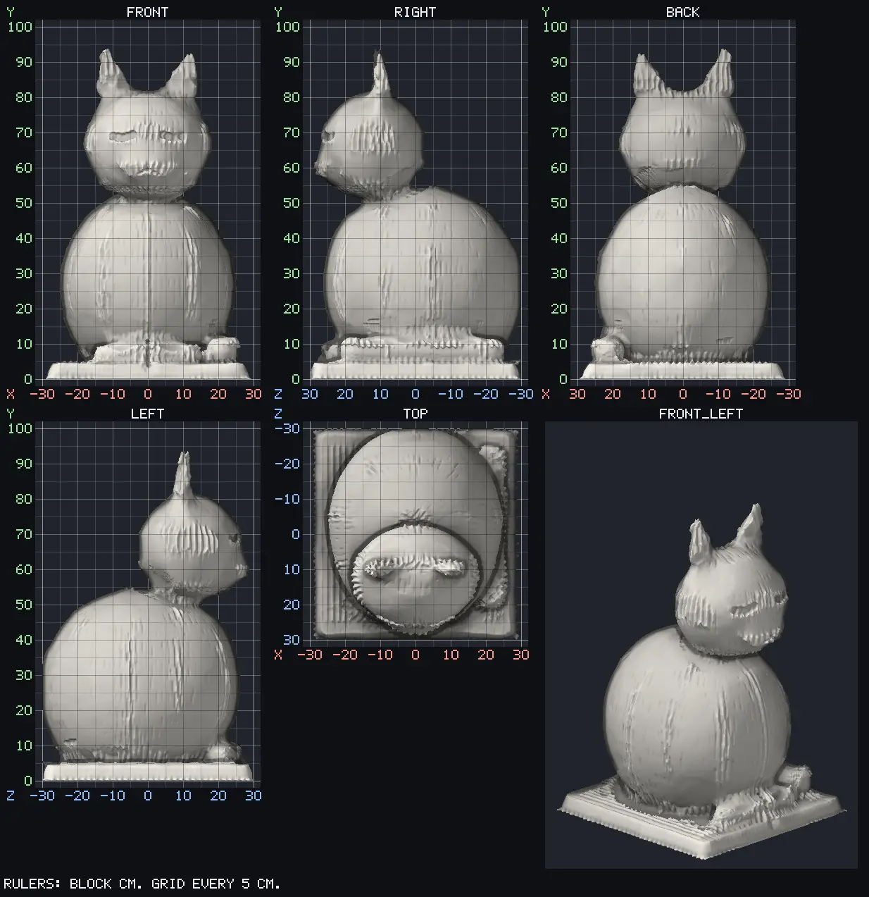
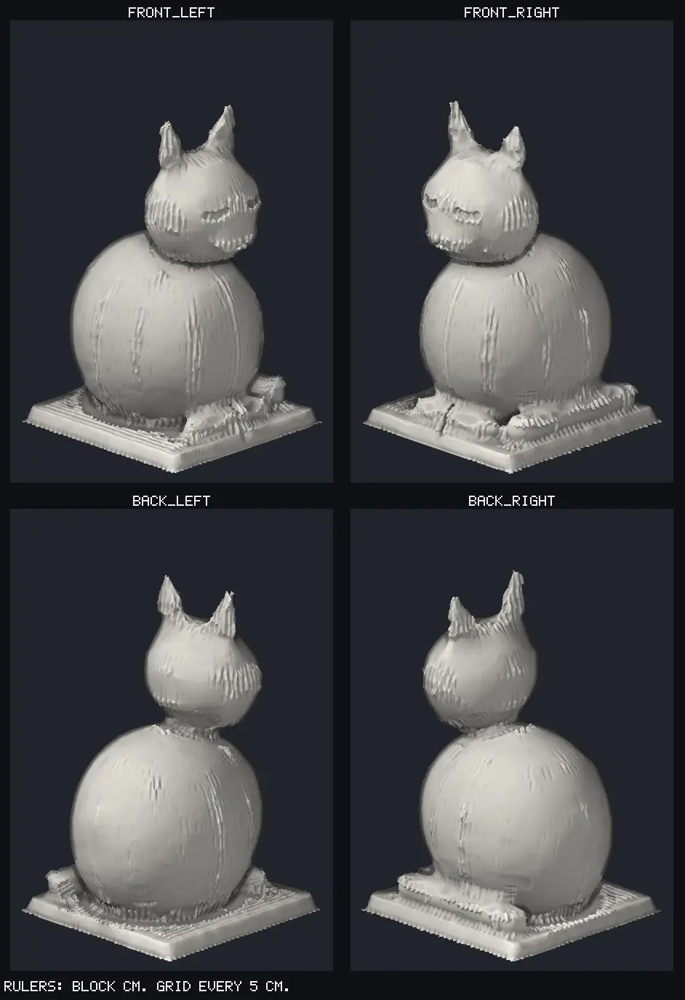
✗ Judge: rabbit confidence 0.40; it is a cat lying down
A small round head with two pointed upright ears sits on a large round body with tiny feet at the base, which fits a sitting rabbit better than a cat lying down or an owl, since the body is upright and the ears are tall and narrow.
- cost
- $0.37
- turns
- 9 of 60, 25 passes, 6,743 strikes
- ended
- finish
- stone left
- 315 kg (67.7% removed, 94 cm tall)
- proud of own form
- mean 0.49 cm, max 2.0 cm
the sculptor's own statement (the model's words about its piece, not a finding)Loaf
A cat settled into the round, paws tucked away, with only its pricked ears and half-closed eyes showing it is still watching. I kept the body as one full, smooth mass so the stone reads as warmth and weight, with the tail laid quietly along its side.
25 passes
- declare_form turn 1, 1 strikes
“I'm laying out the cat as a tall loaf with the head riding up on the front, ears pricked, and tail wrapped along its right side.”
Declared form "cat" (9 shapes, blend 3 cm). Inside the block it spans X -28 to 28, Y 0 to 86, Z -30 to 28 and holds about 108.1 litres (293 kg). Nothing was cut. - rough_out turn 1, 1433 strikes
“Taking the big waste off all round, leaving a generous skin over the cat.”
Roughed out to 'cat' with the point chisel, leaving 4 cm: 8 saw cuts took 90,043 cm³ (244.0 kg) off in slabs, 1420 chisel strikes took 91,506 cm³ (248.0 kg) and 38 cm³ fell away loose. Outside the margin the stone now stands 0.5 cm proud on average and 1.9 cm at most. In all 181587 cm³ (492.1 kg) came off. 15 offcuts fell to the floor (largest 45664 cm³). 483.5 kg of stone remains. - rough_out turn 2, 1067 strikes
“Closing in on the masses with the claw so the head, body and tail start to separate.”
Roughed out to 'cat' with the claw chisel, leaving 1.5 cm: 1063 chisel strikes took 39,685 cm³ (107.5 kg) and 182 cm³ fell away loose. Outside the margin the stone now stands 0.4 cm proud on average and 1.5 cm at most. In all 39868 cm³ (108.0 kg) came off. 15 offcuts fell to the floor (largest 83 cm³). 375.5 kg of stone remains. - rough_out turn 3, 984 strikes
“Bringing the whole surface down to the true form before I cut the features.”
Roughed out to 'cat' with the claw chisel, leaving 0.3 cm: 981 chisel strikes took 18,235 cm³ (49.4 kg) and 1.2 cm³ fell away loose. Outside the margin the stone now stands 0.5 cm proud on average and 1.7 cm at most. In all 18237 cm³ (49.4 kg) came off. 326.0 kg of stone remains. - chisel turn 4, 11 strikes
“Cutting the left eye as a soft almond so the face starts to look out.”
Flat chisel from the front view: It ran on the stone from (x -10.0, y 69.0, z 23.9) to (x -4.5, y 69.5, z 25.9). 10 strikes in 2 layers took 17 cm³, 1 cm deep and 2.5 cm wide. In all 17.3 cm³ (0.05 kg) came off. 326.0 kg of stone remains. - chisel turn 4, 11 strikes
“And the right eye to match.”
Flat chisel from the front view: It ran on the stone from (x 4.5, y 69.5, z 26.2) to (x 10.0, y 69.0, z 24.1). 10 strikes in 2 layers took 16 cm³, 1 cm deep and 2.5 cm wide. In all 16.1 cm³ (0.04 kg) came off. 325.9 kg of stone remains. - chisel turn 4, 21 strikes
“Drawing the left half of the mouth down from under the nose.”
Flat chisel from the front view: It ran on the stone from (x 0.0, y 62.0, z 28.5) to (x -3.0, y 58.0, z 27.7). 20 strikes in 2 layers took 3.4 cm³, 0.6 cm deep and 1 cm wide. In all 3.4 cm³ (0.01 kg) came off. 325.9 kg of stone remains. - chisel turn 4, 12 strikes
“And the right half of the mouth.”
Flat chisel from the front view: It ran on the stone from (x 0.0, y 59.5, z 27.6) to (x 3.0, y 58.0, z 26.9). 11 strikes in 2 layers took 2.3 cm³, 0.6 cm deep and 1 cm wide. In all 2.3 cm³ (0.01 kg) came off. 325.9 kg of stone remains. - chisel turn 4, 54 strikes
“Splitting the tucked paw edge into two paws.”
Flat chisel from the front view: It ran on the stone from (x 0.0, y 4.5, z 28.5) to (x 0.0, y 11.0, z 23.3). 53 strikes in 5 layers took 14 cm³, 1.5 cm deep and 1.2 cm wide. In all 14.5 cm³ (0.04 kg) came off. 325.9 kg of stone remains. - rasp turn 5, 189 strikes
“Smoothing the chest so it reads as soft fur rather than claw marks.”
Rasp from the front view: 4 passes, 188 strokes 13 cm wide, from (x -18.0, y 44.2, z 5.8) to (x 18.0, y 44.2, z 4.2), wore off 596 cm³ of high spots. 2 of 49 points along the path missed the stone. In all 596 cm³ (1.61 kg) came off. 324.3 kg of stone remains. - rasp turn 5, 185 strikes
“Smoothing the right flank.”
Rasp from the right view: 4 passes, 184 strokes 13 cm wide, from (x 6.7, y 48.0, z 15.0) to (x 10.8, y 40.0, z -24.0), wore off 515 cm³ of high spots. In all 515 cm³ (1.40 kg) came off. 322.9 kg of stone remains. - rasp turn 5, 185 strikes
“Smoothing the left flank.”
Rasp from the left view: 4 passes, 184 strokes 13 cm wide, from (x -6.7, y 48.0, z 15.0) to (x -10.1, y 40.0, z -24.0), wore off 485 cm³ of high spots. In all 485 cm³ (1.31 kg) came off. 321.6 kg of stone remains. - rasp turn 5, 193 strikes
“Smoothing the back.”
Rasp from the back view: 4 passes, 192 strokes 13 cm wide, from (x -18.0, y 44.2, z -9.5) to (x 18.0, y 44.2, z -9.8), wore off 440 cm³ of high spots. 2 of 50 points along the path missed the stone. In all 440 cm³ (1.19 kg) came off. 320.4 kg of stone remains. - rasp turn 5, 201 strikes
“Smoothing the back of the loaf and the crown of the head from above.”
Rasp from the top view: 4 passes, 200 strokes 12 cm wide, from (x -15.0, y 4.7, z -25.0) to (x 10.0, y 74.1, z 22.0), wore off 392 cm³ of high spots. In all 392 cm³ (1.06 kg) came off. 319.3 kg of stone remains. - rasp turn 6, 163 strikes
“Softening the face around the eyes and muzzle without losing them.”
Rasp from the front view: 3 passes, 162 strokes 6 cm wide, from (x -12.0, y 78.0, z 13.2) to (x 10.0, y 56.0, z 19.6), wore off 113 cm³ of high spots. In all 113 cm³ (0.31 kg) came off. 319.0 kg of stone remains. - rasp turn 6, 73 strikes
“Smoothing the right cheek and side of the head.”
Rasp from the right view: 4 passes, 72 strokes 10 cm wide, from (x 11.2, y 76.0, z 18.0) to (x 14.9, y 60.0, z 18.0), wore off 136 cm³ of high spots. 1 of 19 points along the path missed the stone. In all 136 cm³ (0.37 kg) came off. 318.6 kg of stone remains. - rasp turn 6, 73 strikes
“Smoothing the left cheek and side of the head.”
Rasp from the left view: 4 passes, 72 strokes 10 cm wide, from (x -10.9, y 76.0, z 18.0) to (x -15.0, y 60.0, z 18.0), wore off 147 cm³ of high spots. 1 of 19 points along the path missed the stone. In all 147 cm³ (0.40 kg) came off. 318.2 kg of stone remains. - rasp turn 6, 165 strikes
“Smoothing the back of the head and nape.”
Rasp from the back view: 4 passes, 164 strokes 8 cm wide, from (x -12.0, y 78.0, z 6.9) to (x 10.0, y 57.0, z 4.2), wore off 136 cm³ of high spots. In all 136 cm³ (0.37 kg) came off. 317.9 kg of stone remains. - rasp turn 6, 81 strikes
“Smoothing the tail where it wraps along the right side.”
Rasp from the top view: 4 passes, 80 strokes 8 cm wide, from (x 21.0, y 11.0, z -24.0) to (x 21.0, y 11.7, z 20.0), wore off 55 cm³ of high spots. In all 55.2 cm³ (0.15 kg) came off. 317.7 kg of stone remains. - rasp turn 6, 581 strikes
“Dressing the top of the plinth around the edge.”
Rasp from the top view: 4 passes, 580 strokes 5 cm wide, from (x -27.0, y 5.1, z 27.0) to (x -27.0, y 4.7, z 27.0), wore off 298 cm³ of high spots. In all 298 cm³ (0.81 kg) came off. 316.9 kg of stone remains. - rasp turn 8, 196 strikes
“Dressing the front face of the plinth.”
Rasp from the front view: 5 passes, 195 strokes 5 cm wide, from (x -28.0, y 2.5, z 29.9) to (x 28.0, y 2.5, z 29.5), wore off 173 cm³ of high spots. In all 173 cm³ (0.47 kg) came off. 316.4 kg of stone remains. - rasp turn 8, 196 strikes
“Dressing the back face of the plinth.”
Rasp from the back view: 5 passes, 195 strokes 5 cm wide, from (x -28.0, y 2.5, z -29.7) to (x 28.0, y 2.5, z -29.6), wore off 159 cm³ of high spots. In all 159 cm³ (0.43 kg) came off. 316.0 kg of stone remains. - rasp turn 8, 201 strikes
“Dressing the right face of the plinth.”
Rasp from the right view: 5 passes, 200 strokes 5 cm wide, from (x 28.1, y 2.5, z 29.0) to (x 27.7, y 2.5, z -29.0), wore off 166 cm³ of high spots. In all 166 cm³ (0.45 kg) came off. 315.6 kg of stone remains. - rasp turn 8, 201 strikes
“Dressing the left face of the plinth.”
Rasp from the left view: 5 passes, 200 strokes 5 cm wide, from (x -27.9, y 2.5, z 29.0) to (x -27.5, y 2.5, z -29.0), wore off 175 cm³ of high spots. In all 175 cm³ (0.47 kg) came off. 315.1 kg of stone remains. - rasp turn 8, 266 strikes
“Taking the last tool marks off the rim of the face.”
Rasp from the front view: 5 passes, 265 strokes 5 cm wide, from (x -14.0, y 74.0, z 15.9) to (x -8.0, y 79.0, z 16.3), wore off 42 cm³ of high spots. In all 42 cm³ (0.11 kg) came off. 315.0 kg of stone remains.
A-cat-opus-formed-noref-20261109123707-59f
bust
bust · opus · direct · ref off
round A
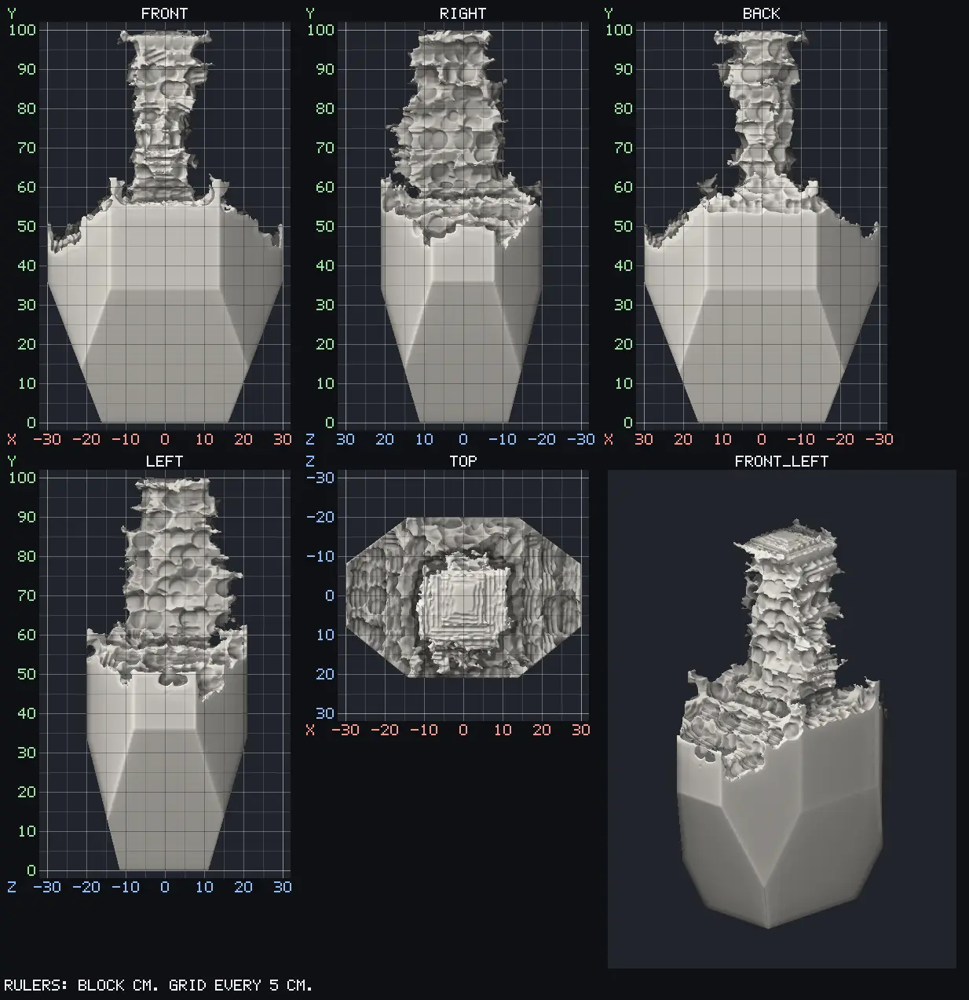
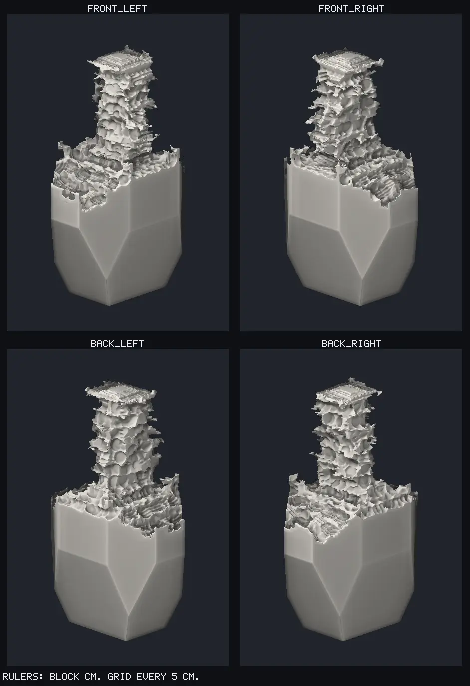
✗ Judge: bottle confidence 0.50; it is a human head and shoulders (bust)
A wide, flat-topped body with a narrow, straight, tall neck rising from the center looks like a square-shouldered bottle, though the rough carving also fits a vase.
- cost
- $2.01
- turns
- 54 of 60, 138 passes, 2,998 strikes
- ended
- finish
- stone left
- 268.6 kg (72.5% removed, 100 cm tall)
the sculptor's own statement (the model's words about its piece, not a finding)Herm
A head rises on a short neck from a plain, faceted herm-chest. The head is left at the stage of the point and claw, its features only just cut in, so it reads more like a column of stone turning into a person than a finished likeness. The smooth socle and the rough head are meant to stand against each other.
138 passes
- saw turn 1, 2 strikes
“Taking the front slab off; nothing of the bust comes this far forward.”
Sawed from [21, 0] to [21, 100] in the right view, discarding everything left of the line: 54,000 cm³ (146.3 kg) fell away in 1 piece, 15% of the stone that was there. In all 54000 cm³ (146.3 kg) came off. 1 offcut fell to the floor (largest 54000 cm³). 829.3 kg of stone remains. - saw turn 1, 2 strikes
“Taking the back slab off behind the shoulders.”
Sawed from [-20, 0] to [-20, 100] in the right view, discarding everything right of the line: 60,000 cm³ (162.6 kg) fell away in 1 piece, 20% of the stone that was there. In all 60000 cm³ (162.6 kg) came off. 1 offcut fell to the floor (largest 60000 cm³). 666.7 kg of stone remains. - saw turn 1, 2 strikes
“Opening the space above the right shoulder beside the head.”
Sawed from [13, 100] to [30, 50] in the front view, discarding everything right of the line: 17,424 cm³ (47.2 kg) fell away in 1 piece, 7% of the stone that was there. In all 17424 cm³ (47.2 kg) came off. 1 offcut fell to the floor (largest 17424 cm³). 619.4 kg of stone remains. - saw turn 1, 2 strikes
“Same on the left shoulder.”
Sawed from [-13, 100] to [-30, 50] in the front view, discarding everything left of the line: 17,424 cm³ (47.2 kg) fell away in 1 piece, 8% of the stone that was there. In all 17424 cm³ (47.2 kg) came off. 1 offcut fell to the floor (largest 17424 cm³). 572.2 kg of stone remains. - saw turn 1, 2 strikes
“Sloping the back of the head and neck down into the upper back.”
Sawed from [-12, 100] to [-20, 60] in the right view, discarding everything right of the line: 5,610 cm³ (15.2 kg) fell away in 1 piece, 3% of the stone that was there. In all 5610 cm³ (15.2 kg) came off. 1 offcut fell to the floor (largest 5608 cm³). 557.0 kg of stone remains. - saw turn 1, 2 strikes
“Rounding off the front top corner where the forehead turns into the crown.”
Sawed from [21, 82] to [11, 100] in the right view, discarding everything left of the line: 2,707 cm³ (7.3 kg) fell away in 1 piece, 1% of the stone that was there. In all 2707 cm³ (7.3 kg) came off. 1 offcut fell to the floor (largest 2703 cm³). 549.7 kg of stone remains. - chisel turn 3, 47 strikes
“Cutting into the waste beside the head on the right, low row first.”
Point chisel from the right view: It ran on the stone from (x 26.6, y 60.0, z 20.0) to (x 26.6, y 60.0, z -19.0). 46 strikes in 2 layers took 533 cm³, 4 cm deep and 4 cm wide. In all 533 cm³ (1.44 kg) came off. 548.2 kg of stone remains. - chisel turn 3, 47 strikes
“Next row up beside the head.”
Point chisel from the right view: It ran on the stone from (x 25.2, y 64.0, z 20.0) to (x 25.2, y 64.0, z -19.0). 46 strikes in 2 layers took 515 cm³, 4 cm deep and 4 cm wide. 5.5 cm³ more fell away loose. In all 521 cm³ (1.41 kg) came off. 2 offcuts fell to the floor (largest 3 cm³). 546.8 kg of stone remains. - chisel turn 3, 47 strikes
“Next row up beside the head.”
Point chisel from the right view: It ran on the stone from (x 23.9, y 68.0, z 20.0) to (x 23.9, y 68.0, z -17.4). 1 of 26 points along the path missed the stone (first miss at [-19, 68]). 46 strikes in 2 layers took 518 cm³, 4 cm deep and 4 cm wide. 1.1 cm³ more fell away loose. In all 519 cm³ (1.41 kg) came off. 545.4 kg of stone remains. - chisel turn 3, 46 strikes
“Next row up beside the head.”
Point chisel from the right view: It ran on the stone from (x 22.5, y 72.0, z 20.0) to (x 22.5, y 72.0, z -17.4). 1 of 26 points along the path missed the stone (first miss at [-19, 72]). 45 strikes in 2 layers took 514 cm³, 4 cm deep and 4 cm wide. 1.7 cm³ more fell away loose. In all 516 cm³ (1.40 kg) came off. 544.0 kg of stone remains. - chisel turn 5, 11 strikes
“Wider bites now to clear the block beside the right side of the head faster.”
Point chisel from the right view: It ran on the stone from (x 22.4, y 62.0, z 20.0) to (x 22.3, y 62.0, z -19.0). 10 strikes took 771 cm³, 4 cm deep and 10 cm wide. 2.8 cm³ more fell away loose. In all 774 cm³ (2.10 kg) came off. 1 offcut fell to the floor (largest 2 cm³). 541.9 kg of stone remains. - chisel turn 5, 10 strikes
“Clearing beside the right temple.”
Point chisel from the right view: It ran on the stone from (x 18.9, y 72.0, z 20.0) to (x 18.8, y 72.0, z -15.1). 1 of 11 points along the path missed the stone (first miss at [-19, 72]). 9 strikes took 1,619 cm³ (4.4 kg), 4 cm deep and 10 cm wide. 16 cm³ more fell away loose. In all 1635 cm³ (4.4 kg) came off. 5 offcuts fell to the floor (largest 5 cm³). 537.5 kg of stone remains. - chisel turn 5, 13 strikes
“Lowering the right shoulder top.”
Point chisel from the right view: It ran on the stone from (x 28.6, y 54.0, z 20.0) to (x 28.6, y 54.0, z -19.0). 12 strikes took 930 cm³, 4 cm deep and 8 cm wide. 0.5 cm³ more fell away loose. In all 931 cm³ (2.52 kg) came off. 535.0 kg of stone remains. - chisel turn 5, 11 strikes
“Same on the left side beside the head.”
Point chisel from the left view: It ran on the stone from (x -25.9, y 62.0, z 20.0) to (x -25.9, y 62.0, z -19.0). 10 strikes took 1,037 cm³ (2.8 kg), 4 cm deep and 10 cm wide. In all 1037 cm³ (2.8 kg) came off. 532.2 kg of stone remains. - chisel turn 5, 10 strikes
“Clearing beside the left temple.”
Point chisel from the left view: It ran on the stone from (x -22.5, y 72.0, z 20.0) to (x -22.5, y 72.0, z -15.1). 1 of 11 points along the path missed the stone (first miss at [-19, 72]). 9 strikes took 1,037 cm³ (2.8 kg), 4 cm deep and 10 cm wide. In all 1037 cm³ (2.8 kg) came off. 529.4 kg of stone remains. - chisel turn 5, 13 strikes
“Lowering the left shoulder top.”
Point chisel from the left view: It ran on the stone from (x -28.6, y 54.0, z 20.0) to (x -28.6, y 54.0, z -19.0). 12 strikes took 894 cm³, 4 cm deep and 8 cm wide. 0.8 cm³ more fell away loose. In all 895 cm³ (2.42 kg) came off. 526.9 kg of stone remains. - chisel turn 7, 13 strikes
“Going deeper beside the neck on the right.”
Point chisel from the right view: It ran on the stone from (x 21.2, y 59.0, z 20.0) to (x 20.6, y 59.0, z -19.0). 12 strikes took 1,109 cm³ (3.0 kg), 4 cm deep and 8 cm wide. In all 1110 cm³ (3.0 kg) came off. 523.9 kg of stone remains. - chisel turn 7, 13 strikes
“Going deeper beside the jaw on the right.”
Point chisel from the right view: It ran on the stone from (x 17.3, y 67.0, z 20.0) to (x 19.7, y 67.0, z -16.0). 1 of 14 points along the path missed the stone (first miss at [-19, 67]). 12 strikes took 762 cm³, 4 cm deep and 8 cm wide. In all 762 cm³ (2.06 kg) came off. 521.9 kg of stone remains. - chisel turn 7, 12 strikes
“Bringing the right cheek and ear plane in.”
Point chisel from the right view: It ran on the stone from (x 18.0, y 76.0, z 20.0) to (x 21.1, y 76.0, z -16.0). 1 of 14 points along the path missed the stone (first miss at [-19, 76]). 11 strikes took 733 cm³, 3 cm deep and 8 cm wide. 0.9 cm³ more fell away loose. In all 733 cm³ (1.99 kg) came off. 1 offcut fell to the floor (largest 1 cm³). 519.9 kg of stone remains. - chisel turn 7, 14 strikes
“Going deeper beside the neck on the left.”
Point chisel from the left view: It ran on the stone from (x -24.6, y 59.0, z 20.0) to (x -23.0, y 59.0, z -19.0). 13 strikes took 976 cm³, 4 cm deep and 8 cm wide. 2.4 cm³ more fell away loose. In all 978 cm³ (2.65 kg) came off. 1 offcut fell to the floor (largest 2 cm³). 517.2 kg of stone remains. - chisel turn 7, 12 strikes
“Going deeper beside the jaw on the left.”
Point chisel from the left view: It ran on the stone from (x -24.2, y 67.0, z 20.0) to (x -22.7, y 67.0, z -16.0). 1 of 14 points along the path missed the stone (first miss at [-19, 67]). 11 strikes took 531 cm³, 4 cm deep and 8 cm wide. 1.0 cm³ more fell away loose. In all 532 cm³ (1.44 kg) came off. 1 offcut fell to the floor (largest 1 cm³). 515.8 kg of stone remains. - chisel turn 7, 12 strikes
“Bringing the left cheek and ear plane in.”
Point chisel from the left view: It ran on the stone from (x -20.6, y 76.0, z 20.0) to (x -20.4, y 76.0, z -16.0). 1 of 14 points along the path missed the stone (first miss at [-19, 76]). 11 strikes took 556 cm³, 3 cm deep and 8 cm wide. In all 556 cm³ (1.51 kg) came off. 514.3 kg of stone remains. - chisel turn 9, 14 strikes
“Another layer off the right side of the neck.”
Point chisel from the right view: It ran on the stone from (x 19.8, y 62.0, z 20.0) to (x 18.2, y 62.0, z -19.0). 13 strikes took 557 cm³, 4 cm deep and 7 cm wide. In all 557 cm³ (1.51 kg) came off. 512.8 kg of stone remains. - chisel turn 9, 13 strikes
“Another layer off the right jaw.”
Point chisel from the right view: It ran on the stone from (x 14.0, y 70.0, z 20.0) to (x 15.5, y 70.0, z -16.2). 1 of 15 points along the path missed the stone (first miss at [-19, 70]). 12 strikes took 678 cm³, 4 cm deep and 7 cm wide. In all 678 cm³ (1.84 kg) came off. 510.9 kg of stone remains. - chisel turn 9, 14 strikes
“Another layer off the right temple.”
Point chisel from the right view: It ran on the stone from (x 16.9, y 78.0, z 20.0) to (x 19.8, y 78.0, z -16.2). 1 of 15 points along the path missed the stone (first miss at [-19, 78]). 13 strikes took 715 cm³, 4 cm deep and 7 cm wide. In all 715 cm³ (1.94 kg) came off. 509.0 kg of stone remains. - chisel turn 9, 12 strikes
“Taking in the right side of the skull.”
Point chisel from the right view: It ran on the stone from (x 18.1, y 85.0, z 17.2) to (x 18.1, y 85.0, z -13.4). 3 of 15 points along the path missed the stone (first miss at [20, 85]). 11 strikes took 437 cm³, 3 cm deep and 7 cm wide. In all 437 cm³ (1.18 kg) came off. 507.8 kg of stone remains. - chisel turn 9, 16 strikes
“Another layer off the left side of the neck.”
Point chisel from the left view: It ran on the stone from (x -23.4, y 62.0, z 20.0) to (x -21.4, y 62.0, z -19.0). 15 strikes took 746 cm³, 4 cm deep and 7 cm wide. In all 746 cm³ (2.02 kg) came off. 505.8 kg of stone remains. - chisel turn 9, 14 strikes
“Another layer off the left jaw.”
Point chisel from the left view: It ran on the stone from (x -19.3, y 70.0, z 20.0) to (x -19.9, y 70.0, z -16.2). 1 of 15 points along the path missed the stone (first miss at [-19, 70]). 13 strikes took 670 cm³, 4 cm deep and 7 cm wide. In all 670 cm³ (1.82 kg) came off. 504.0 kg of stone remains. - chisel turn 9, 13 strikes
“Another layer off the left temple.”
Point chisel from the left view: It ran on the stone from (x -17.5, y 78.0, z 20.0) to (x -18.9, y 78.0, z -16.2). 1 of 15 points along the path missed the stone (first miss at [-19, 78]). 12 strikes took 711 cm³, 4 cm deep and 7 cm wide. In all 711 cm³ (1.93 kg) came off. 502.0 kg of stone remains. - chisel turn 9, 13 strikes
“Taking in the left side of the skull.”
Point chisel from the left view: It ran on the stone from (x -18.1, y 85.0, z 17.2) to (x -18.1, y 85.0, z -13.4). 3 of 15 points along the path missed the stone (first miss at [20, 85]). 12 strikes took 533 cm³, 3 cm deep and 7 cm wide. In all 533 cm³ (1.45 kg) came off. 500.6 kg of stone remains. - chisel turn 11, 18 strikes
“Deepening where the neck meets the right shoulder.”
Point chisel from the right view: It ran on the stone from (x 18.3, y 58.0, z 20.0) to (x 27.2, y 58.0, z -19.0). 17 strikes took 654 cm³, 4 cm deep and 6 cm wide. 3.2 cm³ more fell away loose. In all 657 cm³ (1.78 kg) came off. 2 offcuts fell to the floor (largest 1 cm³). 498.8 kg of stone remains. - chisel turn 11, 18 strikes
“Narrowing the right side of the neck.”
Point chisel from the right view: It ran on the stone from (x 13.8, y 64.0, z 20.0) to (x 15.5, y 64.0, z -19.0). 17 strikes took 625 cm³, 4 cm deep and 6 cm wide. 6.5 cm³ more fell away loose. In all 632 cm³ (1.71 kg) came off. 1 offcut fell to the floor (largest 6 cm³). 497.1 kg of stone remains. - chisel turn 11, 12 strikes
“Bringing the right side of the face in toward its plane.”
Point chisel from the right view: It ran on the stone from (x 15.3, y 74.0, z 20.0) to (x 15.5, y 74.0, z -16.0). 1 of 14 points along the path missed the stone (first miss at [-19, 74]). 11 strikes took 413 cm³, 3 cm deep and 8 cm wide. In all 413 cm³ (1.12 kg) came off. 496.0 kg of stone remains. - chisel turn 11, 14 strikes
“Evening the right temple ridge.”
Point chisel from the right view: It ran on the stone from (x 19.1, y 82.0, z 20.0) to (x 19.1, y 82.0, z -14.4). 2 of 18 points along the path missed the stone (first miss at [-16.706, 82]). 13 strikes took 260 cm³, 3 cm deep and 6 cm wide. 7.0 cm³ more fell away loose. In all 267 cm³ (0.72 kg) came off. 1 offcut fell to the floor (largest 6 cm³). 495.3 kg of stone remains. - chisel turn 11, 17 strikes
“Deepening where the neck meets the left shoulder.”
Point chisel from the left view: It ran on the stone from (x -20.3, y 58.0, z 20.0) to (x -18.4, y 58.0, z -19.0). 16 strikes took 611 cm³, 4 cm deep and 6 cm wide. In all 611 cm³ (1.66 kg) came off. 493.6 kg of stone remains. - chisel turn 11, 17 strikes
“Narrowing the left side of the neck.”
Point chisel from the left view: It ran on the stone from (x -20.9, y 64.0, z 20.0) to (x -18.6, y 64.0, z -19.0). 16 strikes took 658 cm³, 4 cm deep and 6 cm wide. 6.5 cm³ more fell away loose. In all 664 cm³ (1.80 kg) came off. 4 offcuts fell to the floor (largest 1 cm³). 491.8 kg of stone remains. - chisel turn 11, 11 strikes
“Bringing the left side of the face in.”
Point chisel from the left view: It ran on the stone from (x -18.4, y 74.0, z 20.0) to (x -18.3, y 74.0, z -16.0). 1 of 14 points along the path missed the stone (first miss at [-19, 74]). 10 strikes took 392 cm³, 3 cm deep and 8 cm wide. 1.3 cm³ more fell away loose. In all 393 cm³ (1.07 kg) came off. 1 offcut fell to the floor (largest 1 cm³). 490.7 kg of stone remains. - chisel turn 11, 14 strikes
“Evening the left temple ridge.”
Point chisel from the left view: It ran on the stone from (x -19.1, y 82.0, z 20.0) to (x -16.8, y 82.0, z -14.4). 2 of 18 points along the path missed the stone (first miss at [-16.706, 82]). 13 strikes took 321 cm³, 3 cm deep and 6 cm wide. 3.5 cm³ more fell away loose. In all 324 cm³ (0.88 kg) came off. 2 offcuts fell to the floor (largest 2 cm³). 489.9 kg of stone remains. - saw turn 13, 2 strikes
“Taking the front right corner off so the chest rounds toward the shoulder.”
Sawed from [14, 21] to [30, 8] in the top view, discarding everything below the line: 5,544 cm³ (15.0 kg) fell away in 2 pieces, 3% of the stone that was there. In all 5544 cm³ (15.0 kg) came off. 2 offcuts fell to the floor (largest 5529 cm³). 474.8 kg of stone remains. - saw turn 13, 2 strikes
“Same on the front left corner.”
Sawed from [-14, 21] to [-30, 8] in the top view, discarding everything below the line: 5,588 cm³ (15.1 kg) fell away in 2 pieces, 3% of the stone that was there. In all 5588 cm³ (15.1 kg) came off. 2 offcuts fell to the floor (largest 5574 cm³). 459.7 kg of stone remains. - saw turn 13, 2 strikes
“Rounding the back right corner of the shoulders.”
Sawed from [14, -20] to [30, -8] in the top view, discarding everything above the line: 5,088 cm³ (13.8 kg) fell away in 2 pieces, 3% of the stone that was there. In all 5088 cm³ (13.8 kg) came off. 2 offcuts fell to the floor (largest 5084 cm³). 445.9 kg of stone remains. - saw turn 13, 2 strikes
“Rounding the back left corner of the shoulders.”
Sawed from [-14, -20] to [-30, -8] in the top view, discarding everything above the line: 5,068 cm³ (13.7 kg) fell away in 2 pieces, 3% of the stone that was there. In all 5068 cm³ (13.7 kg) came off. 2 offcuts fell to the floor (largest 5062 cm³). 432.2 kg of stone remains. - saw turn 13, 2 strikes
“Taking the back top corner off the head toward the curve of the skull.”
Sawed from [-20, 86] to [-6, 100] in the right view, discarding everything right of the line: 623 cm³ fell away in 1 piece, 0% of the stone that was there. In all 623 cm³ (1.69 kg) came off. 1 offcut fell to the floor (largest 620 cm³). 430.5 kg of stone remains. - chisel turn 15, 22 strikes
“Starting to sink the throat back under the chin.”
Point chisel from the front view: It ran on the stone from (x -10.0, y 58.0, z 21.0) to (x 10.0, y 58.0, z 21.0). 21 strikes in 2 layers took 386 cm³, 4 cm deep and 5 cm wide. In all 386 cm³ (1.05 kg) came off. 429.4 kg of stone remains. - chisel turn 15, 26 strikes
“Sinking the throat under the jaw.”
Point chisel from the front view: It ran on the stone from (x -10.0, y 62.0, z 21.0) to (x 10.0, y 62.0, z 21.0). 25 strikes in 2 layers took 268 cm³, 4 cm deep and 4 cm wide. 0.8 cm³ more fell away loose. In all 269 cm³ (0.73 kg) came off. 428.7 kg of stone remains. - chisel turn 15, 11 strikes
“Bringing the lower face back off the front of the block.”
Point chisel from the front view: It ran on the stone from (x -16.0, y 70.0, z 18.6) to (x 12.8, y 70.0, z 5.2). 1 of 11 points along the path missed the stone (first miss at [16, 70]). 10 strikes took 598 cm³, 3 cm deep and 8 cm wide. In all 598 cm³ (1.62 kg) came off. 427.1 kg of stone remains. - chisel turn 15, 12 strikes
“Bringing the middle of the face back.”
Point chisel from the front view: It ran on the stone from (x -16.0, y 78.0, z -0.4) to (x 16.0, y 78.0, z -14.3). 11 strikes took 608 cm³, 3 cm deep and 8 cm wide. 1.6 cm³ more fell away loose. In all 609 cm³ (1.65 kg) came off. 1 offcut fell to the floor (largest 1 cm³). 425.4 kg of stone remains. - chisel turn 15, 13 strikes
“Bringing the forehead back.”
Point chisel from the front view: It ran on the stone from (x -16.0, y 85.0, z 19.3) to (x 16.0, y 85.0, z 5.1). 12 strikes took 484 cm³, 3 cm deep and 7 cm wide. In all 484 cm³ (1.31 kg) came off. 424.1 kg of stone remains. - saw turn 17, 2 strikes
“Tapering the bottom of the chest on the right in toward a socle.”
Sawed from [30, 36] to [20, 10] in the front view, discarding everything right of the line: 5,785 cm³ (15.7 kg) fell away in 1 piece, 4% of the stone that was there. In all 5785 cm³ (15.7 kg) came off. 1 offcut fell to the floor (largest 5787 cm³). 408.4 kg of stone remains. - saw turn 17, 2 strikes
“Same taper on the left.”
Sawed from [-30, 36] to [-20, 10] in the front view, discarding everything left of the line: 5,785 cm³ (15.7 kg) fell away in 1 piece, 4% of the stone that was there. In all 5785 cm³ (15.7 kg) came off. 1 offcut fell to the floor (largest 5787 cm³). 392.8 kg of stone remains. - saw turn 17, 2 strikes
“Tapering the front of the lower chest into the socle.”
Sawed from [21, 34] to [14, 10] in the right view, discarding everything left of the line: 5,723 cm³ (15.5 kg) fell away in 1 piece, 4% of the stone that was there. In all 5723 cm³ (15.5 kg) came off. 1 offcut fell to the floor (largest 5720 cm³). 377.3 kg of stone remains. - saw turn 17, 2 strikes
“Tapering the back of the lower chest into the socle.”
Sawed from [-20, 34] to [-14, 10] in the right view, discarding everything right of the line: 4,868 cm³ (13.2 kg) fell away in 1 piece, 3% of the stone that was there. In all 4868 cm³ (13.2 kg) came off. 1 offcut fell to the floor (largest 4869 cm³). 364.1 kg of stone remains. - chisel turn 17, 17 strikes
“Driving the throat further back beneath the chin.”
Point chisel from the front view: It ran on the stone from (x -8.0, y 59.0, z 17.3) to (x 8.0, y 59.0, z 17.4). 16 strikes in 2 layers took 661 cm³, 6 cm deep and 6 cm wide. 3.2 cm³ more fell away loose. In all 664 cm³ (1.80 kg) came off. 1 offcut fell to the floor (largest 3 cm³). 362.3 kg of stone remains. - chisel turn 19, 6 strikes
“Dropping the outer right shoulder so it slopes away from the neck.”
Point chisel from the top view: It ran on the stone from (x 25.0, y 52.3, z -10.0) to (x 25.0, y 57.1, z 10.0). 2 of 8 points along the path missed the stone (first miss at [25, -14]). 5 strikes took 437 cm³, 4 cm deep and 10 cm wide. 2.1 cm³ more fell away loose. In all 439 cm³ (1.19 kg) came off. 1 offcut fell to the floor (largest 2 cm³). 361.1 kg of stone remains. - chisel turn 19, 6 strikes
“Dropping the outer left shoulder the same way.”
Point chisel from the top view: It ran on the stone from (x -25.0, y 55.1, z -10.0) to (x -25.0, y 52.1, z 10.0). 2 of 8 points along the path missed the stone (first miss at [-25, -14]). 5 strikes took 501 cm³, 4 cm deep and 10 cm wide. In all 501 cm³ (1.36 kg) came off. 359.7 kg of stone remains. - chisel turn 19, 18 strikes
“Cutting in the nape of the neck at the back.”
Point chisel from the back view: It ran on the stone from (x -9.0, y 60.0, z -20.0) to (x 9.0, y 60.0, z -20.0). 17 strikes in 2 layers took 568 cm³, 5 cm deep and 6 cm wide. In all 568 cm³ (1.54 kg) came off. 358.2 kg of stone remains. - chisel turn 19, 12 strikes
“Slimming the right side of the neck.”
Point chisel from the right view: It ran on the stone from (x 16.6, y 60.0, z 14.0) to (x 15.7, y 60.0, z -14.0). 11 strikes took 240 cm³, 3 cm deep and 6 cm wide. In all 240 cm³ (0.65 kg) came off. 357.5 kg of stone remains. - chisel turn 19, 12 strikes
“Slimming the left side of the neck.”
Point chisel from the left view: It ran on the stone from (x -16.2, y 60.0, z 14.0) to (x -17.6, y 60.0, z -14.0). 11 strikes took 324 cm³, 3 cm deep and 6 cm wide. In all 324 cm³ (0.88 kg) came off. 356.6 kg of stone remains. - chisel turn 21, 17 strikes
“Narrowing the right jaw toward the true width of the head.”
Point chisel from the right view: It ran on the stone from (x 8.2, y 66.0, z 20.0) to (x 12.1, y 66.0, z -16.7). 1 of 18 points along the path missed the stone (first miss at [-19, 66]). 16 strikes took 432 cm³, 3 cm deep and 6 cm wide. In all 432 cm³ (1.17 kg) came off. 355.5 kg of stone remains. - chisel turn 21, 17 strikes
“Narrowing the right cheek.”
Point chisel from the right view: It ran on the stone from (x 12.0, y 72.0, z 17.7) to (x 15.1, y 72.0, z -16.7). 2 of 18 points along the path missed the stone (first miss at [20, 72]). 16 strikes took 480 cm³, 3 cm deep and 6 cm wide. 0.7 cm³ more fell away loose. In all 481 cm³ (1.30 kg) came off. 354.2 kg of stone remains. - chisel turn 21, 15 strikes
“Narrowing the right temple.”
Point chisel from the right view: It ran on the stone from (x 13.2, y 78.0, z 17.7) to (x 13.4, y 78.0, z -14.4). 3 of 18 points along the path missed the stone (first miss at [20, 78]). 14 strikes took 428 cm³, 3 cm deep and 6 cm wide. 1.2 cm³ more fell away loose. In all 429 cm³ (1.16 kg) came off. 353.0 kg of stone remains. - chisel turn 21, 13 strikes
“Taking in the right side of the skull.”
Point chisel from the right view: It ran on the stone from (x 15.8, y 84.0, z 15.4) to (x 16.3, y 84.0, z -14.4). 4 of 18 points along the path missed the stone (first miss at [20, 84]). 12 strikes took 378 cm³, 3 cm deep and 6 cm wide. 0.8 cm³ more fell away loose. In all 379 cm³ (1.03 kg) came off. 352.0 kg of stone remains. - chisel turn 21, 13 strikes
“Taking in the upper right of the skull.”
Point chisel from the right view: It ran on the stone from (x 16.4, y 90.0, z 15.4) to (x 16.4, y 90.0, z -12.1). 5 of 18 points along the path missed the stone (first miss at [20, 90]). 12 strikes took 433 cm³, 4 cm deep and 6 cm wide. In all 433 cm³ (1.17 kg) came off. 350.8 kg of stone remains. - chisel turn 21, 10 strikes
“Rounding the right side of the crown.”
Point chisel from the right view: It ran on the stone from (x 14.3, y 96.0, z 13.1) to (x 14.3, y 96.0, z -9.8). 7 of 18 points along the path missed the stone (first miss at [20, 96]). 9 strikes took 293 cm³, 3 cm deep and 6 cm wide. In all 293 cm³ (0.80 kg) came off. 350.0 kg of stone remains. - chisel turn 21, 15 strikes
“Narrowing the left jaw.”
Point chisel from the left view: It ran on the stone from (x -15.1, y 66.0, z 20.0) to (x -15.3, y 66.0, z -16.7). 1 of 18 points along the path missed the stone (first miss at [-19, 66]). 14 strikes took 509 cm³, 3 cm deep and 6 cm wide. 2.1 cm³ more fell away loose. In all 511 cm³ (1.39 kg) came off. 348.6 kg of stone remains. - chisel turn 21, 15 strikes
“Narrowing the left cheek.”
Point chisel from the left view: It ran on the stone from (x -14.0, y 72.0, z 17.7) to (x -17.0, y 72.0, z -16.7). 2 of 18 points along the path missed the stone (first miss at [20, 72]). 14 strikes took 445 cm³, 3 cm deep and 6 cm wide. In all 445 cm³ (1.21 kg) came off. 347.4 kg of stone remains. - chisel turn 21, 14 strikes
“Narrowing the left temple.”
Point chisel from the left view: It ran on the stone from (x -15.4, y 78.0, z 17.7) to (x -15.1, y 78.0, z -14.4). 3 of 18 points along the path missed the stone (first miss at [20, 78]). 13 strikes took 497 cm³, 3 cm deep and 6 cm wide. 2.4 cm³ more fell away loose. In all 499 cm³ (1.35 kg) came off. 1 offcut fell to the floor (largest 1 cm³). 346.1 kg of stone remains. - chisel turn 21, 13 strikes
“Taking in the left side of the skull.”
Point chisel from the left view: It ran on the stone from (x -15.8, y 84.0, z 15.4) to (x -15.6, y 84.0, z -14.4). 4 of 18 points along the path missed the stone (first miss at [20, 84]). 12 strikes took 375 cm³, 3 cm deep and 6 cm wide. 0.8 cm³ more fell away loose. In all 376 cm³ (1.02 kg) came off. 345.1 kg of stone remains. - chisel turn 21, 13 strikes
“Taking in the upper left of the skull.”
Point chisel from the left view: It ran on the stone from (x -16.4, y 90.0, z 15.4) to (x -16.4, y 90.0, z -12.1). 5 of 18 points along the path missed the stone (first miss at [20, 90]). 12 strikes took 426 cm³, 4 cm deep and 6 cm wide. 2.4 cm³ more fell away loose. In all 429 cm³ (1.16 kg) came off. 1 offcut fell to the floor (largest 2 cm³). 343.9 kg of stone remains. - chisel turn 21, 11 strikes
“Rounding the left side of the crown.”
Point chisel from the left view: It ran on the stone from (x -14.3, y 96.0, z 13.1) to (x -14.3, y 96.0, z -9.8). 7 of 18 points along the path missed the stone (first miss at [20, 96]). 10 strikes took 277 cm³, 3 cm deep and 6 cm wide. In all 277 cm³ (0.75 kg) came off. 343.1 kg of stone remains. - chisel turn 23, 22 strikes
“Bringing the back of the head in above the nape.”
Point chisel from the back view: It ran on the stone from (x 10.6, y 66.0, z -14.8) to (x -13.0, y 66.0, z -13.2). 1 of 12 points along the path missed the stone (first miss at [13, 66]). 21 strikes in 2 layers took 726 cm³, 5 cm deep and 6 cm wide. In all 726 cm³ (1.97 kg) came off. 341.2 kg of stone remains. - chisel turn 23, 20 strikes
“Bringing the back of the skull in.”
Point chisel from the back view: It ran on the stone from (x 8.3, y 72.0, z -17.6) to (x -13.0, y 72.0, z -17.6). 2 of 12 points along the path missed the stone (first miss at [13, 72]). 19 strikes in 2 layers took 562 cm³, 5 cm deep and 6 cm wide. 1.2 cm³ more fell away loose. In all 563 cm³ (1.53 kg) came off. 339.6 kg of stone remains. - chisel turn 23, 12 strikes
“Bringing the back of the skull in.”
Point chisel from the back view: It ran on the stone from (x 10.6, y 78.0, z -16.4) to (x -13.0, y 78.0, z -16.4). 1 of 12 points along the path missed the stone (first miss at [13, 78]). 11 strikes took 416 cm³, 4 cm deep and 6 cm wide. 0.9 cm³ more fell away loose. In all 417 cm³ (1.13 kg) came off. 338.5 kg of stone remains. - chisel turn 23, 13 strikes
“Bringing the back of the skull in.”
Point chisel from the back view: It ran on the stone from (x 13.0, y 84.0, z -15.2) to (x -13.0, y 84.0, z -14.8). 12 strikes took 477 cm³, 4 cm deep and 6 cm wide. 1.5 cm³ more fell away loose. In all 478 cm³ (1.30 kg) came off. 1 offcut fell to the floor (largest 1 cm³). 337.2 kg of stone remains. - chisel turn 23, 12 strikes
“Rounding the upper back of the head.”
Point chisel from the back view: It ran on the stone from (x 13.0, y 90.0, z -14.0) to (x -13.0, y 90.0, z -14.0). 11 strikes took 444 cm³, 4 cm deep and 6 cm wide. 0.8 cm³ more fell away loose. In all 445 cm³ (1.21 kg) came off. 1 offcut fell to the floor (largest 1 cm³). 336.0 kg of stone remains. - chisel turn 23, 10 strikes
“Taking the chin and jaw back off the front face of the block.”
Point chisel from the front view: It ran on the stone from (x -13.0, y 66.0, z 13.8) to (x 10.6, y 66.0, z 16.8). 1 of 12 points along the path missed the stone (first miss at [13, 66]). 9 strikes took 335 cm³, 3 cm deep and 6 cm wide. 1.8 cm³ more fell away loose. In all 337 cm³ (0.91 kg) came off. 1 offcut fell to the floor (largest 1 cm³). 335.1 kg of stone remains. - chisel turn 23, 11 strikes
“Setting the upper forehead back toward the hairline.”
Point chisel from the front view: It ran on the stone from (x -13.0, y 90.0, z 14.6) to (x 13.0, y 90.0, z 16.4). 10 strikes took 332 cm³, 3 cm deep and 6 cm wide. In all 333 cm³ (0.90 kg) came off. 334.2 kg of stone remains. - chisel turn 25, 8 strikes
“Dropping the tip of the right shoulder further so it slopes off.”
Point chisel from the top view: It ran on the stone from (x 26.0, y 49.0, z -9.6) to (x 26.0, y 51.2, z 9.6). 4 of 11 points along the path missed the stone (first miss at [26, -16]). 7 strikes took 539 cm³, 5 cm deep and 8 cm wide. In all 539 cm³ (1.46 kg) came off. 332.7 kg of stone remains. - chisel turn 25, 7 strikes
“Dropping the tip of the left shoulder the same way.”
Point chisel from the top view: It ran on the stone from (x -26.0, y 52.3, z -9.6) to (x -26.0, y 47.8, z 9.6). 4 of 11 points along the path missed the stone (first miss at [-26, -16]). 6 strikes took 565 cm³, 5 cm deep and 8 cm wide. In all 565 cm³ (1.53 kg) came off. 331.2 kg of stone remains. - chisel turn 25, 14 strikes
“Easing the right shoulder down from the neck.”
Point chisel from the top view: It ran on the stone from (x 19.0, y 55.4, z -15.7) to (x 19.0, y 55.3, z 16.7). 2 of 17 points along the path missed the stone (first miss at [19, -18]). 13 strikes took 393 cm³, 3 cm deep and 6 cm wide. 3.3 cm³ more fell away loose. In all 397 cm³ (1.07 kg) came off. 1 offcut fell to the floor (largest 3 cm³). 330.1 kg of stone remains. - chisel turn 25, 15 strikes
“Easing the left shoulder down from the neck.”
Point chisel from the top view: It ran on the stone from (x -19.0, y 55.9, z -15.7) to (x -19.0, y 54.9, z 16.7). 2 of 17 points along the path missed the stone (first miss at [-19, -18]). 14 strikes took 425 cm³, 3 cm deep and 6 cm wide. In all 425 cm³ (1.15 kg) came off. 329.0 kg of stone remains. - chisel turn 25, 55 strikes
“Rounding the rim of the crown so the skull reads as a dome.”
Point chisel from the top view: It ran on the stone from (x -13.0, y 81.8, z -15.0) to (x -13.0, y 81.8, z -15.0). 54 strikes took 795 cm³, 3 cm deep and 5 cm wide. 9.0 cm³ more fell away loose. In all 804 cm³ (2.18 kg) came off. 3 offcuts fell to the floor (largest 4 cm³). 326.8 kg of stone remains. - chisel turn 27, 13 strikes
“Setting the brow plane back a little.”
Point chisel from the front view: It ran on the stone from (x -12.0, y 84.0, z 17.0) to (x 12.0, y 84.0, z 15.1). 12 strikes took 200 cm³, 2 cm deep and 5 cm wide. In all 200 cm³ (0.54 kg) came off. 326.3 kg of stone remains. - chisel turn 27, 7 strikes
“Setting the left cheek back from the nose.”
Point chisel from the front view: It ran on the stone from (x -12.0, y 72.0, z 16.4) to (x -3.0, y 72.0, z 19.0). 6 strikes took 141 cm³, 3 cm deep and 5 cm wide. In all 142 cm³ (0.38 kg) came off. 325.9 kg of stone remains. - chisel turn 27, 7 strikes
“Setting the right cheek back from the nose.”
Point chisel from the front view: It ran on the stone from (x 3.0, y 72.0, z 18.2) to (x 12.0, y 72.0, z -17.3). 6 strikes took 102 cm³, 3 cm deep and 5 cm wide. 0.7 cm³ more fell away loose. In all 102 cm³ (0.28 kg) came off. 325.6 kg of stone remains. - chisel turn 27, 11 strikes
“Sinking the left eye socket under the brow.”
Point chisel from the front view: It ran on the stone from (x -9.0, y 78.0, z 18.2) to (x -3.0, y 78.0, z 18.0). 10 strikes in 2 layers took 99 cm³, 3 cm deep and 4 cm wide. In all 99.1 cm³ (0.27 kg) came off. 325.3 kg of stone remains. - chisel turn 27, 10 strikes
“Sinking the right eye socket under the brow.”
Point chisel from the front view: It ran on the stone from (x 3.0, y 78.0, z 18.6) to (x 9.0, y 78.0, z 17.9). 9 strikes in 2 layers took 84 cm³, 3 cm deep and 4 cm wide. In all 83.7 cm³ (0.23 kg) came off. 325.1 kg of stone remains. - chisel turn 29, 14 strikes
“Slimming the right side of the neck so the head stands clear of it.”
Point chisel from the right view: It ran on the stone from (x 14.7, y 59.0, z 14.0) to (x 14.3, y 59.0, z -15.0). 13 strikes took 472 cm³, 3 cm deep and 6 cm wide. In all 472 cm³ (1.28 kg) came off. 323.8 kg of stone remains. - chisel turn 29, 13 strikes
“Slimming the left side of the neck the same way.”
Point chisel from the left view: It ran on the stone from (x -14.4, y 59.0, z 14.0) to (x -15.2, y 59.0, z -15.0). 12 strikes took 426 cm³, 3 cm deep and 6 cm wide. In all 426 cm³ (1.16 kg) came off. 322.7 kg of stone remains. - chisel turn 30, 13 strikes
“One more layer off the right of the neck.”
Point chisel from the right view: It ran on the stone from (x 11.7, y 60.0, z 12.0) to (x 11.2, y 60.0, z -13.0). 12 strikes took 297 cm³, 2.5 cm deep and 5 cm wide. In all 297 cm³ (0.81 kg) came off. 321.9 kg of stone remains. - chisel turn 30, 13 strikes
“One more layer off the left of the neck.”
Point chisel from the left view: It ran on the stone from (x -12.2, y 60.0, z 12.0) to (x -13.1, y 60.0, z -13.0). 12 strikes took 295 cm³, 2.5 cm deep and 5 cm wide. In all 295 cm³ (0.80 kg) came off. 321.1 kg of stone remains. - chisel turn 30, 10 strikes
“Deepening the nape under the skull.”
Point chisel from the back view: It ran on the stone from (x 9.0, y 61.0, z -15.1) to (x -9.0, y 61.0, z -15.8). 9 strikes took 206 cm³, 3 cm deep and 5 cm wide. 1.8 cm³ more fell away loose. In all 208 cm³ (0.56 kg) came off. 1 offcut fell to the floor (largest 2 cm³). 320.5 kg of stone remains. - chisel turn 32, 18 strikes
“Turning the front left corner of the head so the face wraps round to the cheek.”
Point chisel from the front view: It ran on the stone from (x -12.0, y 64.0, z 20.2) to (x -12.0, y 96.0, z 7.5). 17 strikes took 337 cm³, 3 cm deep and 5 cm wide. 3.9 cm³ more fell away loose. In all 341 cm³ (0.92 kg) came off. 2 offcuts fell to the floor (largest 1 cm³). 319.6 kg of stone remains. - chisel turn 32, 12 strikes
“Turning the front right corner of the head.”
Point chisel from the front view: It ran on the stone from (x 12.0, y 64.0, z 15.1) to (x 12.0, y 96.0, z 1.1). 6 of 17 points along the path missed the stone (first miss at [12, 66]). 11 strikes took 217 cm³, 3 cm deep and 5 cm wide. 1.4 cm³ more fell away loose. In all 219 cm³ (0.59 kg) came off. 319.0 kg of stone remains. - chisel turn 32, 32 strikes
“Rounding the back left corner of the skull.”
Point chisel from the back view: It ran on the stone from (x -12.0, y 64.0, z -10.5) to (x -12.0, y 96.0, z -6.4). 31 strikes in 2 layers took 513 cm³, 4 cm deep and 5 cm wide. 19 cm³ more fell away loose. In all 532 cm³ (1.44 kg) came off. 2 offcuts fell to the floor (largest 15 cm³). 317.5 kg of stone remains. - chisel turn 32, 19 strikes
“Rounding the back right corner of the skull.”
Point chisel from the back view: It ran on the stone from (x 12.0, y 64.0, z -19.2) to (x 12.0, y 96.0, z -2.6). 6 of 17 points along the path missed the stone (first miss at [12, 66]). 18 strikes in 2 layers took 280 cm³, 4 cm deep and 5 cm wide. 16 cm³ more fell away loose. In all 297 cm³ (0.80 kg) came off. 3 offcuts fell to the floor (largest 7 cm³). 316.7 kg of stone remains. - chisel turn 32, 11 strikes
“Continuing the slope of the right shoulder.”
Point chisel from the top view: It ran on the stone from (x 22.0, y 53.8, z -14.0) to (x 22.0, y 55.4, z 12.8). 1 of 14 points along the path missed the stone (first miss at [22, 15]). 10 strikes took 214 cm³, 3 cm deep and 6 cm wide. In all 214 cm³ (0.58 kg) came off. 316.2 kg of stone remains. - chisel turn 32, 13 strikes
“Continuing the slope of the left shoulder.”
Point chisel from the top view: It ran on the stone from (x -22.0, y 54.1, z -11.8) to (x -22.0, y 51.6, z 12.8). 2 of 14 points along the path missed the stone (first miss at [-22, -14]). 12 strikes took 283 cm³, 3 cm deep and 6 cm wide. 5.3 cm³ more fell away loose. In all 288 cm³ (0.78 kg) came off. 1 offcut fell to the floor (largest 5 cm³). 315.4 kg of stone remains. - chisel turn 34, 101 strikes
“Combing the right side of the head with the claw to knock off the ridges.”
Claw chisel from the right view: It ran on the stone from (x -2.9, y 64.0, z 19.0) to (x 15.4, y 93.0, z 14.0). 26 of 131 points along the path missed the stone (first miss at [-18, 64.5]). 100 strikes took 1,722 cm³ (4.7 kg), 1.5 cm deep and 5 cm wide. 35 cm³ more fell away loose. In all 1757 cm³ (4.8 kg) came off. 9 offcuts fell to the floor (largest 8 cm³). 310.6 kg of stone remains. - chisel turn 34, 98 strikes
“Combing the left side of the head the same way.”
Claw chisel from the left view: It ran on the stone from (x -12.4, y 64.0, z 16.5) to (x -9.5, y 93.0, z 14.0). 32 of 131 points along the path missed the stone (first miss at [19, 64]). 97 strikes took 1,681 cm³ (4.6 kg), 1.5 cm deep and 5 cm wide. 55 cm³ more fell away loose. In all 1735 cm³ (4.7 kg) came off. 13 offcuts fell to the floor (largest 12 cm³). 305.9 kg of stone remains. - chisel turn 34, 67 strikes
“Evening the back of the skull.”
Claw chisel from the back view: It ran on the stone from (x 9.0, y 66.0, z -10.8) to (x -11.5, y 96.0, z -3.6). 21 of 92 points along the path missed the stone (first miss at [14, 66]). 66 strikes took 1,089 cm³ (3.0 kg), 1.5 cm deep and 5 cm wide. 9.0 cm³ more fell away loose. In all 1098 cm³ (3.0 kg) came off. 2 offcuts fell to the floor (largest 3 cm³). 302.9 kg of stone remains. - chisel turn 36, 49 strikes
“Clawing the forehead smooth down to the brow.”
Claw chisel from the front view: It ran on the stone from (x -12.0, y 96.0, z 5.0) to (x -10.0, y 84.0, z 11.9). 4 of 55 points along the path missed the stone (first miss at [12, 96]). 48 strikes took 389 cm³, 1 cm deep and 4 cm wide. 1.2 cm³ more fell away loose. In all 390 cm³ (1.06 kg) came off. 301.9 kg of stone remains. - chisel turn 36, 29 strikes
“Rounding the crown inward toward a dome.”
Claw chisel from the top view: It ran on the stone from (x -7.0, y 99.0, z -7.0) to (x -7.0, y 99.0, z -7.0). 28 strikes took 285 cm³, 1.5 cm deep and 4 cm wide. In all 285 cm³ (0.77 kg) came off. 301.1 kg of stone remains. - chisel turn 37, 8 strikes
“Deepening the left eye socket under the brow.”
Flat chisel from the front view: It ran on the stone from (x -9.0, y 78.0, z 15.2) to (x -3.5, y 78.0, z 15.3). 7 strikes in 2 layers took 27 cm³, 1 cm deep and 3 cm wide. In all 27.5 cm³ (0.07 kg) came off. 301.0 kg of stone remains. - chisel turn 37, 9 strikes
“Deepening the right eye socket under the brow.”
Flat chisel from the front view: It ran on the stone from (x 3.5, y 78.0, z 15.1) to (x 9.0, y 78.0, z 14.4). 8 strikes in 2 layers took 25 cm³, 1 cm deep and 3 cm wide. In all 24.9 cm³ (0.07 kg) came off. 301.0 kg of stone remains. - chisel turn 37, 22 strikes
“Cutting under the nose so it stands out from the upper lip.”
Point chisel from the front view: It ran on the stone from (x -4.0, y 70.0, z 17.5) to (x 4.0, y 70.0, z 15.1). 21 strikes in 2 layers took 30 cm³, 2 cm deep and 2 cm wide. In all 29.9 cm³ (0.08 kg) came off. 300.9 kg of stone remains. - chisel turn 37, 62 strikes
“Incising the line between the lips.”
Flat chisel from the front view: It ran on the stone from (x -4.5, y 67.0, z 16.5) to (x 4.5, y 67.0, z 17.2). 61 strikes in 4 layers took 9.6 cm³, 1 cm deep and 1 cm wide. In all 9.6 cm³ (0.03 kg) came off. 300.9 kg of stone remains. - chisel turn 37, 18 strikes
“Setting the hollow beneath the lower lip above the chin.”
Flat chisel from the front view: It ran on the stone from (x -3.5, y 65.0, z 16.8) to (x 3.5, y 65.0, z 16.3). 17 strikes in 2 layers took 10 cm³, 0.8 cm deep and 1.5 cm wide. In all 10.3 cm³ (0.03 kg) came off. 300.8 kg of stone remains. - chisel turn 37, 37 strikes
“Cutting along the left side of the nose.”
Flat chisel from the front view: It ran on the stone from (x -3.0, y 80.0, z 15.8) to (x -3.0, y 71.0, z 16.5). 36 strikes in 3 layers took 17 cm³, 1 cm deep and 1.5 cm wide. In all 17.4 cm³ (0.05 kg) came off. 300.8 kg of stone remains. - chisel turn 37, 36 strikes
“Cutting along the right side of the nose.”
Flat chisel from the front view: It ran on the stone from (x 3.0, y 80.0, z 17.9) to (x 3.0, y 71.0, z 15.2). 35 strikes in 3 layers took 17 cm³, 1 cm deep and 1.5 cm wide. In all 16.5 cm³ (0.04 kg) came off. 300.7 kg of stone remains. - chisel turn 39, 63 strikes
“Slimming the right of the neck so the jaw overhangs it.”
Point chisel from the right view: It ran on the stone from (x 10.2, y 58.0, z 12.0) to (x 9.5, y 61.5, z 12.0). 62 strikes in 2 layers took 577 cm³, 3 cm deep and 4 cm wide. In all 578 cm³ (1.57 kg) came off. 299.2 kg of stone remains. - chisel turn 39, 62 strikes
“Slimming the left of the neck the same way.”
Point chisel from the left view: It ran on the stone from (x -11.1, y 58.0, z 12.0) to (x -10.1, y 61.5, z 12.0). 61 strikes in 2 layers took 563 cm³, 3 cm deep and 4 cm wide. 2.7 cm³ more fell away loose. In all 566 cm³ (1.53 kg) came off. 1 offcut fell to the floor (largest 2 cm³). 297.6 kg of stone remains. - chisel turn 40, 102 strikes
“Dressing the right side of the head with the flat to calm the surface.”
Flat chisel from the right view: It ran on the stone from (x 5.5, y 65.0, z 18.0) to (x 9.3, y 94.0, z 13.2). 28 of 130 points along the path missed the stone (first miss at [-13.14, 65]). 101 strikes took 848 cm³, 0.8 cm deep and 4 cm wide. 18 cm³ more fell away loose. In all 866 cm³ (2.35 kg) came off. 3 offcuts fell to the floor (largest 11 cm³). 295.3 kg of stone remains. - chisel turn 40, 98 strikes
“Dressing the left side of the head the same way.”
Flat chisel from the left view: It ran on the stone from (x -9.6, y 65.0, z 18.0) to (x -7.7, y 94.0, z 13.2). 33 of 130 points along the path missed the stone (first miss at [-13.14, 65]). 97 strikes took 761 cm³, 0.8 cm deep and 4 cm wide. 5.1 cm³ more fell away loose. In all 766 cm³ (2.07 kg) came off. 2 offcuts fell to the floor (largest 1 cm³). 293.2 kg of stone remains. - chisel turn 40, 76 strikes
“Dressing the back of the head.”
Flat chisel from the back view: It ran on the stone from (x 8.2, y 66.0, z -9.4) to (x 10.6, y 95.0, z -8.2). 25 of 100 points along the path missed the stone (first miss at [13, 66]). 75 strikes took 600 cm³, 0.8 cm deep and 4 cm wide. 9.4 cm³ more fell away loose. In all 610 cm³ (1.65 kg) came off. 2 offcuts fell to the floor (largest 4 cm³). 291.6 kg of stone remains. - chisel turn 41, 76 strikes
“Combing the tops of the shoulders to even out the rough point work.”
Claw chisel from the top view: It ran on the stone from (x -27.0, y 49.0, z -9.5) to (x 27.0, y 46.1, z -9.5). 10 of 90 points along the path missed the stone (first miss at [-27, -12]). 75 strikes took 1,218 cm³ (3.3 kg), 1.2 cm deep and 5 cm wide. 23 cm³ more fell away loose. In all 1241 cm³ (3.4 kg) came off. 2 offcuts fell to the floor (largest 10 cm³). 288.2 kg of stone remains. - chisel turn 41, 26 strikes
“Evening the throat below the chin.”
Claw chisel from the front view: It ran on the stone from (x -11.0, y 62.0, z 18.4) to (x -11.0, y 58.0, z 15.5). 25 strikes took 186 cm³, 1 cm deep and 4 cm wide. 1.7 cm³ more fell away loose. In all 188 cm³ (0.51 kg) came off. 1 offcut fell to the floor (largest 2 cm³). 287.7 kg of stone remains. - chisel turn 42, 17 strikes
“Turning the left front corner of the head into the cheek.”
Claw chisel from the front view: It ran on the stone from (x -10.5, y 64.0, z 11.5) to (x -10.5, y 97.0, z 12.1). 2 of 18 points along the path missed the stone (first miss at [-10.5, 77.588]). 16 strikes took 145 cm³, 1.5 cm deep and 4 cm wide. 1.0 cm³ more fell away loose. In all 147 cm³ (0.40 kg) came off. 1 offcut fell to the floor (largest 1 cm³). 287.3 kg of stone remains. - chisel turn 42, 8 strikes
“Turning the right front corner of the head into the cheek.”
Claw chisel from the front view: It ran on the stone from (x 10.5, y 83.4, z -1.9) to (x 10.5, y 97.0, z 11.8). 11 of 18 points along the path missed the stone (first miss at [10.5, 64]). 7 strikes took 83 cm³, 1.5 cm deep and 4 cm wide. 2.4 cm³ more fell away loose. In all 85.8 cm³ (0.23 kg) came off. 1 offcut fell to the floor (largest 2 cm³). 287.1 kg of stone remains. - chisel turn 42, 26 strikes
“Rounding the back corners of the skull.”
Claw chisel from the back view: It ran on the stone from (x -10.5, y 64.0, z -4.5) to (x 10.5, y 87.7, z -7.4). 18 of 45 points along the path missed the stone (first miss at [-10.5, 75.864]). 25 strikes took 201 cm³, 1.5 cm deep and 4 cm wide. In all 201 cm³ (0.55 kg) came off. 286.5 kg of stone remains. - chisel turn 44, 9 strikes
“Knocking off the stub of stone standing up at the left collarbone.”
Point chisel from the front view: It ran on the stone from (x -16.0, y 63.0, z 19.2) to (x -16.0, y 56.0, z 19.4). 8 strikes in 2 layers took 92 cm³, 4 cm deep and 5 cm wide. 1.1 cm³ more fell away loose. In all 93 cm³ (0.25 kg) came off. 1 offcut fell to the floor (largest 1 cm³). 286.3 kg of stone remains. - chisel turn 44, 3 strikes
“Same stub at the right collarbone.”
Point chisel from the front view: It landed at (x 16.0, y 56.0, z 19.3). 4 of 5 points along the path missed the stone (first miss at [16, 63]). 2 strikes in 2 layers took 29 cm³, 4 cm deep and 5 cm wide. In all 29 cm³ (0.08 kg) came off. 286.2 kg of stone remains. - chisel turn 44, 18 strikes
“Taking down the raised rim along the back of the shoulders.”
Point chisel from the back view: It ran on the stone from (x -16.0, y 61.0, z -18.5) to (x 16.0, y 61.0, z -17.1). 4 of 24 points along the path missed the stone (first miss at [-16, 63]). 17 strikes took 280 cm³, 3 cm deep and 5 cm wide. 24 cm³ more fell away loose. In all 305 cm³ (0.83 kg) came off. 1 offcut fell to the floor (largest 24 cm³). 285.4 kg of stone remains. - chisel turn 45, 40 strikes
“Dressing the forehead smooth with the flat.”
Flat chisel from the front view: It ran on the stone from (x -11.0, y 97.0, z 10.3) to (x -8.6, y 85.0, z 9.3). 4 of 43 points along the path missed the stone (first miss at [11, 95.19]). 39 strikes took 290 cm³, 0.7 cm deep and 4 cm wide. 0.7 cm³ more fell away loose. In all 291 cm³ (0.79 kg) came off. 284.6 kg of stone remains. - chisel turn 45, 11 strikes
“Smoothing the left cheek down to the jaw.”
Flat chisel from the front view: It ran on the stone from (x -11.0, y 73.1, z -3.6) to (x -7.0, y 76.0, z 18.1). 5 of 15 points along the path missed the stone (first miss at [-11, 80]). 10 strikes took 54 cm³, 0.7 cm deep and 4 cm wide. In all 54.9 cm³ (0.15 kg) came off. 284.4 kg of stone remains. - chisel turn 45, 8 strikes
“Smoothing the right cheek down to the jaw.”
Flat chisel from the front view: It ran on the stone from (x 8.7, y 64.0, z -4.0) to (x 7.0, y 76.0, z 14.8). 8 of 15 points along the path missed the stone (first miss at [11, 80]). 7 strikes took 45 cm³, 0.7 cm deep and 4 cm wide. 0.9 cm³ more fell away loose. In all 45.8 cm³ (0.12 kg) came off. 1 offcut fell to the floor (largest 1 cm³). 284.3 kg of stone remains. - chisel turn 47, 79 strikes
“Another claw pass over the right side of the head to get beneath the pits.”
Claw chisel from the right view: It ran on the stone from (x 4.0, y 63.0, z 16.0) to (x 8.5, y 94.0, z 13.0). 32 of 110 points along the path missed the stone (first miss at [19, 63]). 78 strikes took 1,295 cm³ (3.5 kg), 1.2 cm deep and 6 cm wide. 41 cm³ more fell away loose. In all 1337 cm³ (3.6 kg) came off. 6 offcuts fell to the floor (largest 17 cm³). 280.7 kg of stone remains. - chisel turn 47, 68 strikes
“Same on the left side of the head.”
Claw chisel from the left view: It ran on the stone from (x -5.5, y 63.0, z 16.0) to (x -1.9, y 94.0, z 13.0). 35 of 110 points along the path missed the stone (first miss at [19, 63]). 67 strikes took 1,157 cm³ (3.1 kg), 1.2 cm deep and 6 cm wide. 5.4 cm³ more fell away loose. In all 1162 cm³ (3.2 kg) came off. 2 offcuts fell to the floor (largest 1 cm³). 277.5 kg of stone remains. - chisel turn 47, 41 strikes
“And across the back of the skull.”
Claw chisel from the back view: It ran on the stone from (x 4.0, y 64.0, z -8.9) to (x -7.0, y 95.0, z -4.3). 30 of 72 points along the path missed the stone (first miss at [13, 64]). 40 strikes took 1,023 cm³ (2.8 kg), 1.2 cm deep and 6 cm wide. 4.6 cm³ more fell away loose. In all 1028 cm³ (2.8 kg) came off. 2 offcuts fell to the floor (largest 2 cm³). 274.7 kg of stone remains. - chisel turn 49, 67 strikes
“Dressing the right side of the head with the flat.”
Flat chisel from the right view: It ran on the stone from (x 3.3, y 64.0, z 15.0) to (x 7.6, y 95.0, z 12.0). 38 of 105 points along the path missed the stone (first miss at [18, 64]). 66 strikes took 729 cm³, 0.6 cm deep and 5 cm wide. 13 cm³ more fell away loose. In all 741 cm³ (2.01 kg) came off. 1 offcut fell to the floor (largest 11 cm³). 272.7 kg of stone remains. - chisel turn 49, 68 strikes
“Dressing the left side of the head.”
Flat chisel from the left view: It ran on the stone from (x -4.3, y 64.0, z 15.0) to (x -7.1, y 95.0, z 12.0). 38 of 105 points along the path missed the stone (first miss at [18, 64]). 67 strikes took 746 cm³, 0.6 cm deep and 5 cm wide. 24 cm³ more fell away loose. In all 770 cm³ (2.09 kg) came off. 4 offcuts fell to the floor (largest 17 cm³). 270.6 kg of stone remains. - chisel turn 49, 39 strikes
“Dressing the back of the skull.”
Flat chisel from the back view: It ran on the stone from (x 4.0, y 64.0, z -7.4) to (x -7.0, y 95.0, z 2.6). 33 of 72 points along the path missed the stone (first miss at [13, 64]). 38 strikes took 413 cm³, 0.6 cm deep and 5 cm wide. 10 cm³ more fell away loose. In all 423 cm³ (1.15 kg) came off. 2 offcuts fell to the floor (largest 8 cm³). 269.5 kg of stone remains. - chisel turn 50, 5 strikes
“Re-cutting the left eye socket under the brow.”
Flat chisel from the front view: It ran on the stone from (x -8.5, y 78.0, z -2.2) to (x -3.5, y 78.0, z 12.1). 4 strikes took 20 cm³, 0.8 cm deep and 3 cm wide. In all 20.1 cm³ (0.05 kg) came off. 269.4 kg of stone remains. - chisel turn 50, 3 strikes
“Re-cutting the right eye socket.”
Flat chisel from the front view: It ran on the stone from (x 3.5, y 78.0, z 12.1) to (x 5.2, y 78.0, z 2.6). 2 of 4 points along the path missed the stone (first miss at [6.833, 78]). 2 strikes took 9.0 cm³, 0.8 cm deep and 3 cm wide. In all 9 cm³ (0.02 kg) came off. 269.4 kg of stone remains. - chisel turn 50, 49 strikes
“Sharpening the line between the lips.”
Flat chisel from the front view: It ran on the stone from (x -4.5, y 67.0, z 15.4) to (x 4.5, y 67.0, z 13.5). 48 strikes in 3 layers took 7.4 cm³, 0.7 cm deep and 1 cm wide. In all 7.4 cm³ (0.02 kg) came off. 269.4 kg of stone remains. - chisel turn 50, 19 strikes
“Undercutting the base of the nose.”
Flat chisel from the front view: It ran on the stone from (x -3.5, y 70.0, z 16.0) to (x 3.5, y 70.0, z 13.9). 18 strikes in 2 layers took 9.9 cm³, 0.8 cm deep and 1.5 cm wide. In all 9.9 cm³ (0.03 kg) came off. 269.4 kg of stone remains. - chisel turn 52, 35 strikes
“Softening the hard rim of the crown so the top of the head reads round.”
Claw chisel from the top view: It ran on the stone from (x -9.0, y 59.1, z -8.0) to (x -9.0, y 59.1, z -8.0). 34 strikes took 232 cm³, 1.5 cm deep and 4 cm wide. 8.2 cm³ more fell away loose. In all 240 cm³ (0.65 kg) came off. 1 offcut fell to the floor (largest 7 cm³). 268.7 kg of stone remains. - chisel turn 52, 19 strikes
“Easing the top of the crown so it doesn't sit as a flat lid.”
Claw chisel from the top view: It ran on the stone from (x -4.0, y 100.0, z -4.0) to (x -4.0, y 100.0, z -4.0). 18 strikes took 50 cm³, 0.5 cm deep and 4 cm wide. In all 49.9 cm³ (0.14 kg) came off. 268.6 kg of stone remains.
A-bust-opus-direct-noref-20261109123905-37d
bust · opus · formed · ref off
round A
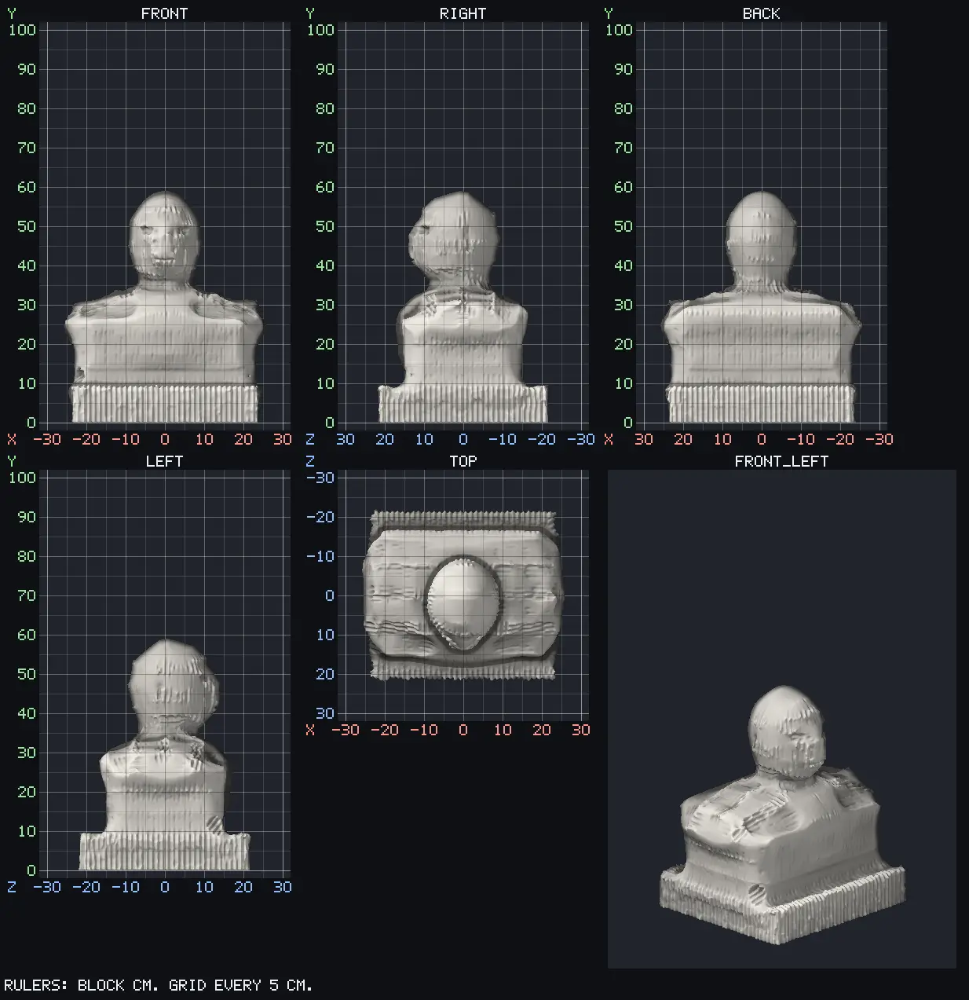
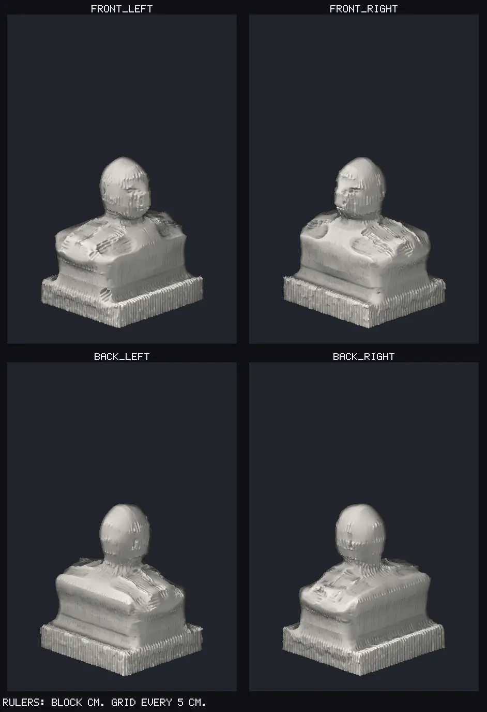
✓ Judge: human head and shoulders (bust) confidence 0.80
An egg-shaped head with faint facial features sits on a short neck above a broad, squared shoulder-and-chest block, all on a flat plinth, which reads as a bust.
- cost
- $0.82
- turns
- 19 of 60, 48 passes, 7,978 strikes
- ended
- finish
- stone left
- 149.8 kg (84.6% removed, 59 cm tall)
- proud of own form
- mean 0.87 cm, max 2.3 cm
the sculptor's own statement (the model's words about its piece, not a finding)Small Head on Broad Shoulders
An early saw cut took the head I had first planned, so this bust was carved again, smaller, out of the stone that was left: a compact head with a quiet face set low on wide, sloping shoulders. The plinth keeps the rough marks of the claw, and the figure rising out of it has been rasped smooth.
48 passes
- declare_form turn 1, 1 strikes
“Setting down the masses of the bust — plinth, chest and shoulders, neck, head — so the waste around them is clear.”
Declared form "bust" (8 shapes, blend 4 cm). Inside the block it spans X -28 to 28, Y 0 to 98, Z -20 to 20 and holds about 96.7 litres (262 kg). Nothing was cut. - rough_out turn 1, 1436 strikes
“Taking the big waste off all round, leaving a generous skin to work back into.”
Roughed out to 'bust' with the point chisel, leaving 3.5 cm: 9 saw cuts took 124,586 cm³ (337.6 kg) off in slabs, 1421 chisel strikes took 73,298 cm³ (198.6 kg) and 6.2 cm³ fell away loose. Outside the margin the stone now stands 0.6 cm proud on average and 2.3 cm at most. In all 197890 cm³ (536.3 kg) came off. 11 offcuts fell to the floor (largest 33600 cm³). 439.3 kg of stone remains. - rough_out turn 2, 1039 strikes
“Closing in on the masses with the claw so the head, neck and shoulders read as true forms.”
Roughed out to 'bust' with the claw chisel, leaving 1.5 cm: 1036 chisel strikes took 35,159 cm³ (95.3 kg) and 4.2 cm³ fell away loose. Outside the margin the stone now stands 0.5 cm proud on average and 1.6 cm at most. In all 35163 cm³ (95.3 kg) came off. 344.0 kg of stone remains. - saw turn 3, 2 strikes
“Dropping the right shoulder into a natural slope away from the neck.”
Sawed from [12, 55] to [30, 46] in the front view, discarding everything above the line: 24,084 cm³ (65.3 kg) fell away in 2 pieces, 19% of the stone that was there. In all 24084 cm³ (65.3 kg) came off. 2 offcuts fell to the floor (largest 23470 cm³). 278.8 kg of stone remains. - saw turn 3, 2 strikes
“Same slope on the left shoulder so the pair match.”
Sawed from [-12, 55] to [-30, 46] in the front view, discarding everything above the line: 1,582 cm³ (4.3 kg) fell away in 2 pieces, 2% of the stone that was there. In all 1582 cm³ (4.3 kg) came off. 2 offcuts fell to the floor (largest 963 cm³). 274.5 kg of stone remains. - chisel turn 3, 5 strikes
“Cutting back the throat under the jaw so the chin stands free of the neck.”
Point chisel from the front view: It ran on the stone from (x -2.3, y 59.3, z 11.1) to (x 3.5, y 59.3, z 9.4). 7 of 13 points along the path missed the stone (first miss at [-7, 59]). 4 strikes took 17 cm³, 2 cm deep and 3 cm wide. 1.8 cm³ more fell away loose. In all 18.8 cm³ (0.05 kg) came off. 1 offcut fell to the floor (largest 1 cm³). 274.4 kg of stone remains. - declare_form turn 4, 1 strikes
“My shoulder saw ran clean through the head, so I'm resetting the whole bust smaller to fit the stone that's left.”
Declared form "bust2" (8 shapes, blend 3 cm). Inside the block it spans X -26 to 26, Y 0 to 58, Z -20 to 20 and holds about 49 litres (133 kg). Nothing was cut. Looks and numbers measure the stone against all your forms together: "bust", "bust2". - declare_form turn 5, 1 strikes
“Replacing the old plan with the new, smaller bust so the overlay only shows what I'm aiming for now.”
Replaced form "bust" (8 shapes, blend 3 cm). Inside the block it spans X -26 to 26, Y 0 to 58, Z -20 to 20 and holds about 49 litres (133 kg). Nothing was cut. Looks and numbers measure the stone against all your forms together: "bust", "bust2". - rough_out turn 5, 1266 strikes
“Taking the waste down to the new bust, leaving a skin to work back into.”
Roughed out to 'bust2' with the point chisel, leaving 2.5 cm: 4 saw cuts took 8,303 cm³ (22.5 kg) off in slabs, 1257 chisel strikes took 20,444 cm³ (55.4 kg) and 1.4 cm³ fell away loose. Outside the margin the stone now stands 0.2 cm proud on average and 1.6 cm at most. In all 28749 cm³ (77.9 kg) came off. 7 offcuts fell to the floor (largest 2817 cm³). 196.5 kg of stone remains. - rough_out turn 6, 1006 strikes
“Bringing all the masses in close with the claw, ready to model the head.”
Roughed out to 'bust2' with the claw chisel, leaving 0.8 cm: 1003 chisel strikes took 12,838 cm³ (34.8 kg) and 3.3 cm³ fell away loose. Outside the margin the stone now stands 0.4 cm proud on average and 1.5 cm at most. In all 12841 cm³ (34.8 kg) came off. 161.7 kg of stone remains. - chisel turn 7, 12 strikes
“Lowering the outer right shoulder so it slopes away from the neck.”
Point chisel from the top view: It ran on the stone from (x 21.0, y 32.5, z -11.0) to (x 21.0, y 30.4, z 13.0). 11 strikes took 191 cm³, 2.5 cm deep and 5 cm wide. In all 191 cm³ (0.52 kg) came off. 161.2 kg of stone remains. - chisel turn 7, 13 strikes
“The same on the left shoulder.”
Point chisel from the top view: It ran on the stone from (x -21.0, y 32.6, z -11.0) to (x -21.0, y 30.3, z 13.0). 12 strikes took 192 cm³, 2.5 cm deep and 5 cm wide. In all 192 cm³ (0.52 kg) came off. 160.7 kg of stone remains. - chisel turn 7, 13 strikes
“Easing the slope further in toward the neck on the right.”
Point chisel from the top view: It ran on the stone from (x 16.0, y 32.3, z -11.0) to (x 16.0, y 29.9, z 13.0). 12 strikes took 114 cm³, 1.2 cm deep and 5 cm wide. In all 114 cm³ (0.31 kg) came off. 160.4 kg of stone remains. - chisel turn 7, 14 strikes
“And on the left.”
Point chisel from the top view: It ran on the stone from (x -16.0, y 32.5, z -11.0) to (x -16.0, y 30.1, z 13.0). 13 strikes took 123 cm³, 1.2 cm deep and 5 cm wide. In all 123 cm³ (0.33 kg) came off. 160.0 kg of stone remains. - chisel turn 8, 32 strikes
“Rounding off the ridge left at the tip of the right shoulder.”
Claw chisel from the top view: It ran on the stone from (x 24.5, y 30.6, z -11.0) to (x 24.5, y 26.5, z 11.5). 1 of 17 points along the path missed the stone (first miss at [24.5, 13]). 31 strikes in 2 layers took 95 cm³, 1.5 cm deep and 3 cm wide. In all 95.4 cm³ (0.26 kg) came off. 159.8 kg of stone remains. - chisel turn 8, 30 strikes
“Same on the left shoulder tip.”
Claw chisel from the top view: It ran on the stone from (x -24.5, y 30.0, z -11.0) to (x -24.5, y 26.9, z 11.5). 1 of 17 points along the path missed the stone (first miss at [-24.5, 13]). 29 strikes in 2 layers took 96 cm³, 1.5 cm deep and 3 cm wide. In all 96.5 cm³ (0.26 kg) came off. 159.5 kg of stone remains. - chisel turn 8, 18 strikes
“Knocking down the ridge between my two shoulder strokes on the right.”
Claw chisel from the top view: It ran on the stone from (x 18.5, y 32.0, z -11.0) to (x 18.5, y 29.7, z 13.0). 17 strikes took 63 cm³, 1 cm deep and 3 cm wide. In all 63.2 cm³ (0.17 kg) came off. 159.3 kg of stone remains. - chisel turn 8, 17 strikes
“And the matching ridge on the left.”
Claw chisel from the top view: It ran on the stone from (x -18.5, y 32.2, z -11.0) to (x -18.5, y 29.3, z 13.0). 16 strikes took 57 cm³, 1 cm deep and 3 cm wide. In all 57.1 cm³ (0.15 kg) came off. 159.2 kg of stone remains. - rasp turn 8, 77 strikes
“Smoothing the right shoulder into one easy slope.”
Rasp from the top view: 3 passes, 76 strokes 8 cm wide, from (x 10.0, y 33.0, z -10.0) to (x 23.7, y 28.5, z 10.0), wore off 114 cm³ of high spots. 3 of 30 points along the path missed the stone. In all 114 cm³ (0.31 kg) came off. 158.9 kg of stone remains. - rasp turn 8, 80 strikes
“Smoothing the left shoulder the same way.”
Rasp from the top view: 3 passes, 79 strokes 8 cm wide, from (x -10.0, y 33.1, z -10.0) to (x -23.7, y 27.4, z 10.0), wore off 124 cm³ of high spots. 3 of 30 points along the path missed the stone. In all 124 cm³ (0.34 kg) came off. 158.5 kg of stone remains. - chisel turn 10, 36 strikes
“Taking the spur off the right shoulder tip.”
Claw chisel from the right view: It ran on the stone from (x 10.3, y 30.0, z 14.0) to (x 23.1, y 30.0, z -12.0). 35 strikes in 2 layers took 120 cm³, 1.5 cm deep and 3 cm wide. In all 120 cm³ (0.33 kg) came off. 158.2 kg of stone remains. - chisel turn 10, 38 strikes
“And the spur off the left shoulder tip.”
Claw chisel from the left view: It ran on the stone from (x -9.3, y 30.0, z 14.0) to (x -23.0, y 30.0, z -12.0). 37 strikes in 2 layers took 122 cm³, 1.5 cm deep and 3 cm wide. In all 122 cm³ (0.33 kg) came off. 157.9 kg of stone remains. - chisel turn 10, 5 strikes
“Setting in the right eye socket under the brow.”
Claw chisel from the front view: It ran on the stone from (x -5.5, y 49.0, z 10.0) to (x -2.0, y 49.0, z 13.9). 4 strikes took 13 cm³, 1 cm deep and 2.5 cm wide. In all 12.6 cm³ (0.03 kg) came off. 157.9 kg of stone remains. - chisel turn 10, 5 strikes
“And the other eye socket.”
Claw chisel from the front view: It ran on the stone from (x 2.0, y 49.0, z 13.7) to (x 5.5, y 49.0, z 9.7). 4 strikes took 14 cm³, 1 cm deep and 2.5 cm wide. In all 13.9 cm³ (0.04 kg) came off. 157.8 kg of stone remains. - chisel turn 11, 30 strikes
“Drawing the line of the mouth.”
Flat chisel from the front view: It ran on the stone from (x -2.2, y 41.4, z 13.1) to (x 2.2, y 41.4, z 12.6). 29 strikes in 3 layers took 2.1 cm³, 0.5 cm deep and 0.8 cm wide. In all 2.1 cm³ (0.01 kg) came off. 157.8 kg of stone remains. - chisel turn 11, 8 strikes
“Setting back the cheek beside the nose so it stands out.”
Claw chisel from the front view: It ran on the stone from (x -2.4, y 48.0, z 13.3) to (x -2.6, y 44.0, z 13.7). 7 strikes took 3.2 cm³, 0.6 cm deep and 1.5 cm wide. In all 3.2 cm³ (0.01 kg) came off. 157.8 kg of stone remains. - chisel turn 11, 7 strikes
“The same on the other side of the nose.”
Claw chisel from the front view: It ran on the stone from (x 2.4, y 48.0, z 12.9) to (x 2.6, y 44.0, z 13.3). 6 strikes took 3.0 cm³, 0.6 cm deep and 1.5 cm wide. In all 3 cm³ (0.01 kg) came off. 157.8 kg of stone remains. - chisel turn 11, 27 strikes
“Cutting the groove behind the right ear.”
Claw chisel from the right view: It ran on the stone from (x 9.1, y 50.0, z -1.5) to (x 8.4, y 44.0, z -1.5). 26 strikes in 2 layers took 4.1 cm³, 0.7 cm deep and 1 cm wide. In all 4.1 cm³ (0.01 kg) came off. 157.8 kg of stone remains. - chisel turn 11, 27 strikes
“And behind the left ear.”
Claw chisel from the left view: It ran on the stone from (x -9.0, y 50.0, z -1.5) to (x -8.4, y 44.0, z -1.5). 26 strikes in 2 layers took 4.2 cm³, 0.7 cm deep and 1 cm wide. In all 4.2 cm³ (0.01 kg) came off. 157.8 kg of stone remains. - chisel turn 12, 16 strikes
“Taking the hard corner off the chest on the right so the torso turns.”
Point chisel from the front view: It ran on the stone from (x 22.5, y 12.0, z 14.8) to (x 22.5, y 29.0, z 11.6). 15 strikes took 64 cm³, 2 cm deep and 3 cm wide. In all 63.9 cm³ (0.17 kg) came off. 157.6 kg of stone remains. - chisel turn 12, 16 strikes
“Same corner on the left.”
Point chisel from the front view: It ran on the stone from (x -22.5, y 12.0, z 14.9) to (x -22.5, y 29.0, z 11.6). 15 strikes took 67 cm³, 2 cm deep and 3 cm wide. 0.7 cm³ more fell away loose. In all 67.2 cm³ (0.18 kg) came off. 157.4 kg of stone remains. - chisel turn 12, 16 strikes
“Rounding the back corner on one side.”
Point chisel from the back view: It ran on the stone from (x 22.5, y 12.0, z -14.9) to (x 22.5, y 29.0, z -15.0). 15 strikes took 67 cm³, 2 cm deep and 3 cm wide. In all 67.1 cm³ (0.18 kg) came off. 157.2 kg of stone remains. - chisel turn 12, 16 strikes
“And the other back corner.”
Point chisel from the back view: It ran on the stone from (x -22.5, y 12.0, z -14.9) to (x -22.5, y 29.0, z -14.9). 15 strikes took 66 cm³, 2 cm deep and 3 cm wide. In all 66.6 cm³ (0.18 kg) came off. 157.1 kg of stone remains. - rasp turn 13, 139 strikes
“Smoothing the back of the head.”
Rasp from the back view: 3 passes, 138 strokes 5 cm wide, from (x -6.0, y 56.0, z -0.4) to (x -5.0, y 39.0, z -5.3), wore off 76 cm³ of high spots. In all 75.5 cm³ (0.20 kg) came off. 156.8 kg of stone remains. - rasp turn 13, 94 strikes
“Smoothing the crown.”
Rasp from the top view: 3 passes, 93 strokes 5 cm wide, from (x -5.0, y 53.1, z -6.0) to (x 5.0, y 55.9, z 6.0), wore off 38 cm³ of high spots. In all 37.5 cm³ (0.10 kg) came off. 156.7 kg of stone remains. - rasp turn 13, 103 strikes
“Easing the right side of the head.”
Rasp from the right view: 2 passes, 102 strokes 4 cm wide, from (x 4.1, y 55.0, z 8.0) to (x 4.8, y 41.0, z -6.0), wore off 28 cm³ of high spots. In all 28.3 cm³ (0.08 kg) came off. 156.7 kg of stone remains. - rasp turn 13, 103 strikes
“Easing the left side of the head.”
Rasp from the left view: 2 passes, 102 strokes 4 cm wide, from (x -3.7, y 55.0, z 8.0) to (x -4.8, y 41.0, z -6.0), wore off 30 cm³ of high spots. In all 30 cm³ (0.08 kg) came off. 156.6 kg of stone remains. - rasp turn 13, 61 strikes
“Smoothing the forehead above the brows.”
Rasp from the front view: 2 passes, 60 strokes 3 cm wide, from (x -5.1, y 56.0, z 5.0) to (x -5.0, y 52.0, z 9.0), wore off 9.9 cm³ of high spots. 1 of 31 points along the path missed the stone. In all 9.9 cm³ (0.03 kg) came off. 156.6 kg of stone remains. - rasp turn 15, 421 strikes
“Smoothing the chest so the light runs evenly across it.”
Rasp from the front view: 3 passes, 420 strokes 6 cm wide, from (x -23.0, y 30.0, z 5.2) to (x 23.0, y 11.0, z 13.2), wore off 332 cm³ of high spots. In all 332 cm³ (0.90 kg) came off. 155.7 kg of stone remains. - rasp turn 15, 421 strikes
“Smoothing the back of the torso.”
Rasp from the back view: 3 passes, 420 strokes 6 cm wide, from (x -23.0, y 30.0, z -6.9) to (x 23.0, y 11.0, z -14.3), wore off 334 cm³ of high spots. In all 334 cm³ (0.91 kg) came off. 154.8 kg of stone remains. - rasp turn 15, 220 strikes
“Smoothing the right flank and arm.”
Rasp from the right view: 3 passes, 219 strokes 6 cm wide, from (x 8.8, y 29.0, z 14.0) to (x 21.0, y 12.0, z 14.0), wore off 175 cm³ of high spots. In all 175 cm³ (0.47 kg) came off. 154.3 kg of stone remains. - rasp turn 15, 220 strikes
“Smoothing the left flank and arm.”
Rasp from the left view: 3 passes, 219 strokes 6 cm wide, from (x -7.8, y 29.0, z 14.0) to (x -21.5, y 12.0, z 14.0), wore off 179 cm³ of high spots. In all 179 cm³ (0.48 kg) came off. 153.8 kg of stone remains. - rasp turn 15, 266 strikes
“Going round the shoulder tops to wear down the pitting.”
Rasp from the top view: 4 passes, 265 strokes 7 cm wide, from (x -22.9, y 27.8, z -13.0) to (x -25.0, y 27.6, z -10.9), wore off 244 cm³ of high spots. 8 of 75 points along the path missed the stone. In all 244 cm³ (0.66 kg) came off. 153.1 kg of stone remains. - chisel turn 17, 45 strikes
“Taking the right shoulder top down evenly to the bottom of its pits.”
Claw chisel from the top view: It ran on the stone from (x 10.0, y 32.2, z -11.0) to (x 10.0, y 28.9, z 13.0). 2 of 47 points along the path missed the stone (first miss at [25, 10.652]). 44 strikes took 376 cm³, 0.8 cm deep and 5 cm wide. In all 376 cm³ (1.02 kg) came off. 152.1 kg of stone remains. - chisel turn 17, 44 strikes
“The same on the left shoulder top.”
Claw chisel from the top view: It ran on the stone from (x -10.0, y 32.3, z -11.0) to (x -10.0, y 28.8, z 13.0). 2 of 47 points along the path missed the stone (first miss at [-25, 10.652]). 43 strikes took 374 cm³, 0.8 cm deep and 5 cm wide. In all 374 cm³ (1.01 kg) came off. 151.1 kg of stone remains. - rasp turn 17, 409 strikes
“Rasping the shoulders smooth after the claw.”
Rasp from the top view: 4 passes, 408 strokes 7 cm wide, from (x -22.9, y 26.7, z -11.0) to (x -22.9, y 26.1, z 12.0), wore off 457 cm³ of high spots. 5 of 108 points along the path missed the stone. In all 457 cm³ (1.24 kg) came off. 149.9 kg of stone remains. - rasp turn 18, 67 strikes
“Softening the cheeks and chin around the mouth.”
Rasp from the front view: 2 passes, 66 strokes 2.5 cm wide, from (x -6.0, y 46.0, z 9.5) to (x 6.0, y 46.0, z 9.4), wore off 9.0 cm³ of high spots. In all 9 cm³ (0.02 kg) came off. 149.8 kg of stone remains. - rasp turn 18, 53 strikes
“Smoothing the throat.”
Rasp from the front view: 2 passes, 52 strokes 3 cm wide, from (x -5.0, y 35.0, z 5.9) to (x -5.0, y 33.0, z 10.1), wore off 7.6 cm³ of high spots. In all 7.6 cm³ (0.02 kg) came off. 149.8 kg of stone remains.
A-bust-opus-formed-noref-20261109124333-66a
Round B: with the reference, beside the twin without
pawn
pawn · opus · formed · ref off
round A
✓ Judge: chess pawn confidence 0.97
It is a rotationally symmetric piece with a flared round base, a conical body, a ruffled collar and a spherical head on top, which is the classic chess pawn profile.
- cost
- $0.37
- turns
- 12 of 60, 32 passes, 6,718 strikes
- ended
- finish
- stone left
- 241.8 kg (75.2% removed, 100 cm tall)
- proud of own form
- mean 0.50 cm, max 2.0 cm
the sculptor's own statement (the model's words about its piece, not a finding)Pawn
The humblest piece on the board, made nearly a metre tall: a round head on a collar above a body that flares out to a wide stepped foot. I rasped the head and body smooth and left the claw's grain on the collar's rim, so it reads like a turned ring.
32 passes
- declare_form turn 1, 1 strikes
“I'm stating the pawn as stacked rounds: a wide stepped foot, a flaring body, a collar and a round head.”
Declared form "pawn" (5 shapes, blend 2 cm). Inside the block it spans X -28 to 28, Y 0 to 98, Z -28 to 28 and holds about 82.6 litres (224 kg). Nothing was cut. 10% of the form lies outside the block, where there is no stone to make it from. - rough_out turn 1, 1619 strikes
“Taking the big waste off all round, leaving a safe skin over the pawn.”
Roughed out to 'pawn' with the point chisel, leaving 4 cm: 12 saw cuts took 74,286 cm³ (201.3 kg) off in slabs, 1601 chisel strikes took 132,633 cm³ (359.4 kg) and 517 cm³ fell away loose. Outside the margin the stone now stands 0.4 cm proud on average and 1.9 cm at most. In all 207436 cm³ (562.2 kg) came off. 63 offcuts fell to the floor (largest 14299 cm³). 413.4 kg of stone remains. - rough_out turn 2, 1209 strikes
“Closing in with the claw so the head, collar and flare start to show their true curves.”
Roughed out to 'pawn' with the claw chisel, leaving 1.5 cm: 1205 chisel strikes took 41,452 cm³ (112.3 kg) and 315 cm³ fell away loose. Outside the margin the stone now stands 0.5 cm proud on average and 1.6 cm at most. In all 41767 cm³ (113.2 kg) came off. 44 offcuts fell to the floor (largest 50 cm³). 300.3 kg of stone remains. - rough_out turn 2, 997 strikes
“A last even pass down nearly to the finished skin.”
Roughed out to 'pawn' with the claw chisel, leaving 0.4 cm: 995 chisel strikes took 16,053 cm³ (43.5 kg) and 0.6 cm³ fell away loose. Outside the margin the stone now stands 0.5 cm proud on average and 1.6 cm at most. In all 16054 cm³ (43.5 kg) came off. 256.8 kg of stone remains. - rasp turn 3, 73 strikes
“Smoothing the claw ridges off the face of the head.”
Rasp from the front view: 4 passes, 72 strokes 14 cm wide, from (x -14.0, y 72.0, z 4.3) to (x 14.0, y 72.0, z 5.4), wore off 314 cm³ of high spots. In all 314 cm³ (0.85 kg) came off. 255.9 kg of stone remains. - rasp turn 3, 73 strikes
“Same for the back of the head.”
Rasp from the back view: 4 passes, 72 strokes 14 cm wide, from (x -14.0, y 72.0, z -5.2) to (x 14.0, y 72.0, z -5.2), wore off 304 cm³ of high spots. In all 304 cm³ (0.82 kg) came off. 255.1 kg of stone remains. - rasp turn 3, 137 strikes
“Rasping the flare of the body smooth on the front.”
Rasp from the front view: 4 passes, 136 strokes 14 cm wide, from (x -18.0, y 14.0, z 15.4) to (x -18.0, y 14.0, z 14.9), wore off 616 cm³ of high spots. In all 616 cm³ (1.67 kg) came off. 253.4 kg of stone remains. - rasp turn 3, 137 strikes
“And on the back.”
Rasp from the back view: 4 passes, 136 strokes 14 cm wide, from (x -18.0, y 14.0, z -14.3) to (x -18.0, y 14.0, z -14.3), wore off 602 cm³ of high spots. In all 602 cm³ (1.63 kg) came off. 251.8 kg of stone remains. - rasp turn 3, 137 strikes
“Now the left flank of the body.”
Rasp from the left view: 4 passes, 136 strokes 14 cm wide, from (x -13.9, y 14.0, z -18.0) to (x -13.8, y 14.0, z -18.0), wore off 463 cm³ of high spots. In all 463 cm³ (1.25 kg) came off. 250.5 kg of stone remains. - rasp turn 3, 137 strikes
“And the right flank.”
Rasp from the right view: 4 passes, 136 strokes 14 cm wide, from (x 14.3, y 14.0, z -18.0) to (x 14.0, y 14.0, z -18.0), wore off 475 cm³ of high spots. In all 475 cm³ (1.29 kg) came off. 249.2 kg of stone remains. - rasp turn 5, 297 strikes
“Running the rasp round the top of the foot to smooth the wide base.”
Rasp from the top view: 4 passes, 296 strokes 7 cm wide, from (x 25.0, y 6.5, z 0.0) to (x 25.0, y 6.5, z -0.0), wore off 391 cm³ of high spots. In all 391 cm³ (1.06 kg) came off. 248.2 kg of stone remains. - rasp turn 5, 77 strikes
“Smoothing the collar's front edge.”
Rasp from the front view: 4 passes, 76 strokes 6 cm wide, from (x -16.0, y 62.0, z 6.7) to (x 16.0, y 62.0, z 5.6), wore off 97 cm³ of high spots. In all 97.1 cm³ (0.26 kg) came off. 247.9 kg of stone remains. - rasp turn 5, 77 strikes
“And the collar's back.”
Rasp from the back view: 4 passes, 76 strokes 6 cm wide, from (x -16.0, y 62.0, z -5.4) to (x 16.0, y 62.0, z -6.6), wore off 97 cm³ of high spots. In all 97.2 cm³ (0.26 kg) came off. 247.6 kg of stone remains. - rasp turn 5, 77 strikes
“The collar's left side.”
Rasp from the left view: 4 passes, 76 strokes 6 cm wide, from (x -3.4, y 62.0, z -16.0) to (x -1.3, y 62.0, z 16.0), wore off 95 cm³ of high spots. In all 95.3 cm³ (0.26 kg) came off. 247.4 kg of stone remains. - rasp turn 5, 69 strikes
“The collar's right side.”
Rasp from the right view: 4 passes, 68 strokes 6 cm wide, from (x 7.4, y 62.0, z -14.2) to (x 7.9, y 62.0, z 14.2), wore off 94 cm³ of high spots. 2 of 19 points along the path missed the stone. In all 94 cm³ (0.25 kg) came off. 247.1 kg of stone remains. - rasp turn 5, 73 strikes
“Smoothing the left side of the head.”
Rasp from the left view: 4 passes, 72 strokes 14 cm wide, from (x -5.3, y 72.0, z -14.0) to (x -6.6, y 72.0, z 14.0), wore off 280 cm³ of high spots. In all 280 cm³ (0.76 kg) came off. 246.4 kg of stone remains. - rasp turn 5, 73 strikes
“And the right side of the head.”
Rasp from the right view: 4 passes, 72 strokes 14 cm wide, from (x 4.8, y 72.0, z -14.0) to (x 5.2, y 72.0, z 14.0), wore off 278 cm³ of high spots. In all 278 cm³ (0.75 kg) came off. 245.6 kg of stone remains. - rasp turn 7, 97 strikes
“Smoothing the rim of the foot from the front.”
Rasp from the front view: 4 passes, 96 strokes 8 cm wide, from (x -27.0, y 4.0, z 12.4) to (x 27.0, y 4.0, z 12.5), wore off 162 cm³ of high spots. In all 162 cm³ (0.44 kg) came off. 245.2 kg of stone remains. - rasp turn 7, 97 strikes
“And from the back.”
Rasp from the back view: 4 passes, 96 strokes 8 cm wide, from (x -27.0, y 4.0, z -11.6) to (x 27.0, y 4.0, z -12.3), wore off 172 cm³ of high spots. In all 172 cm³ (0.47 kg) came off. 244.7 kg of stone remains. - rasp turn 7, 97 strikes
“And from the left.”
Rasp from the left view: 4 passes, 96 strokes 8 cm wide, from (x -9.4, y 4.0, z -27.0) to (x -10.0, y 4.0, z 27.0), wore off 210 cm³ of high spots. In all 210 cm³ (0.57 kg) came off. 244.1 kg of stone remains. - rasp turn 7, 97 strikes
“And from the right.”
Rasp from the right view: 4 passes, 96 strokes 8 cm wide, from (x 9.5, y 4.0, z -27.0) to (x 9.7, y 4.0, z 27.0), wore off 205 cm³ of high spots. In all 205 cm³ (0.56 kg) came off. 243.6 kg of stone remains. - rasp turn 7, 109 strikes
“Rounding the crown of the head from above.”
Rasp from the top view: 4 passes, 108 strokes 10 cm wide, from (x 0.0, y 99.6, z 0.0) to (x 8.0, y 94.9, z 8.0), wore off 42 cm³ of high spots. In all 41.8 cm³ (0.11 kg) came off. 243.5 kg of stone remains. - rasp turn 9, 91 strikes
“Working the rasp down the quarter of the flare where ridges remain.”
Rasp from the front view: 5 passes, 90 strokes 8 cm wide, from (x -13.0, y 16.0, z 17.1) to (x -5.0, y 56.0, z 7.1), wore off 22 cm³ of high spots. In all 22.2 cm³ (0.06 kg) came off. 243.4 kg of stone remains. - rasp turn 9, 91 strikes
“The other front quarter.”
Rasp from the front view: 5 passes, 90 strokes 8 cm wide, from (x 13.0, y 16.0, z 17.1) to (x 5.0, y 56.0, z 7.1), wore off 19 cm³ of high spots. In all 18.7 cm³ (0.05 kg) came off. 243.4 kg of stone remains. - rasp turn 9, 91 strikes
“A back quarter.”
Rasp from the back view: 5 passes, 90 strokes 8 cm wide, from (x -13.0, y 16.0, z -17.0) to (x -5.0, y 56.0, z -7.2), wore off 19 cm³ of high spots. In all 18.7 cm³ (0.05 kg) came off. 243.3 kg of stone remains. - rasp turn 9, 91 strikes
“The last back quarter.”
Rasp from the back view: 5 passes, 90 strokes 8 cm wide, from (x 13.0, y 16.0, z -17.1) to (x 5.0, y 56.0, z -7.2), wore off 17 cm³ of high spots. In all 16.8 cm³ (0.05 kg) came off. 243.3 kg of stone remains. - rasp turn 9, 46 strikes
“Easing the head's quarter facets.”
Rasp from the front view: 5 passes, 45 strokes 8 cm wide, from (x -11.0, y 72.0, z 9.7) to (x -12.0, y 90.0, z 10.0), wore off 17 cm³ of high spots. In all 17.4 cm³ (0.05 kg) came off. 243.2 kg of stone remains. - rasp turn 9, 46 strikes
“Same on the back of the head.”
Rasp from the back view: 5 passes, 45 strokes 8 cm wide, from (x -11.0, y 72.0, z -9.8) to (x -12.0, y 90.0, z -9.9), wore off 16 cm³ of high spots. In all 16.3 cm³ (0.04 kg) came off. 243.2 kg of stone remains. - rasp turn 11, 129 strikes
“Cleaning the ragged edge of the collar.”
Rasp from the front view: 6 passes, 128 strokes 5 cm wide, from (x -16.0, y 62.0, z 1.0) to (x 16.0, y 62.0, z 1.8), wore off 130 cm³ of high spots. In all 130 cm³ (0.35 kg) came off. 242.8 kg of stone remains. - rasp turn 11, 127 strikes
“The collar from behind.”
Rasp from the back view: 6 passes, 126 strokes 5 cm wide, from (x -14.5, y 62.0, z -7.1) to (x 14.5, y 62.0, z -6.9), wore off 123 cm³ of high spots. 2 of 23 points along the path missed the stone. In all 123 cm³ (0.33 kg) came off. 242.5 kg of stone remains. - rasp turn 11, 127 strikes
“The collar's left.”
Rasp from the left view: 6 passes, 126 strokes 5 cm wide, from (x -2.1, y 62.0, z -14.5) to (x -0.6, y 62.0, z 14.5), wore off 111 cm³ of high spots. 2 of 23 points along the path missed the stone. In all 111 cm³ (0.30 kg) came off. 242.2 kg of stone remains. - rasp turn 11, 119 strikes
“The collar's right.”
Rasp from the right view: 6 passes, 118 strokes 5 cm wide, from (x 2.8, y 62.0, z -14.5) to (x 5.9, y 62.0, z 13.1), wore off 128 cm³ of high spots. 3 of 23 points along the path missed the stone. In all 128 cm³ (0.35 kg) came off. 241.8 kg of stone remains.
A-pawn-opus-formed-noref-20261109123505-f9f
pawn · opus · formed · ref on
round B
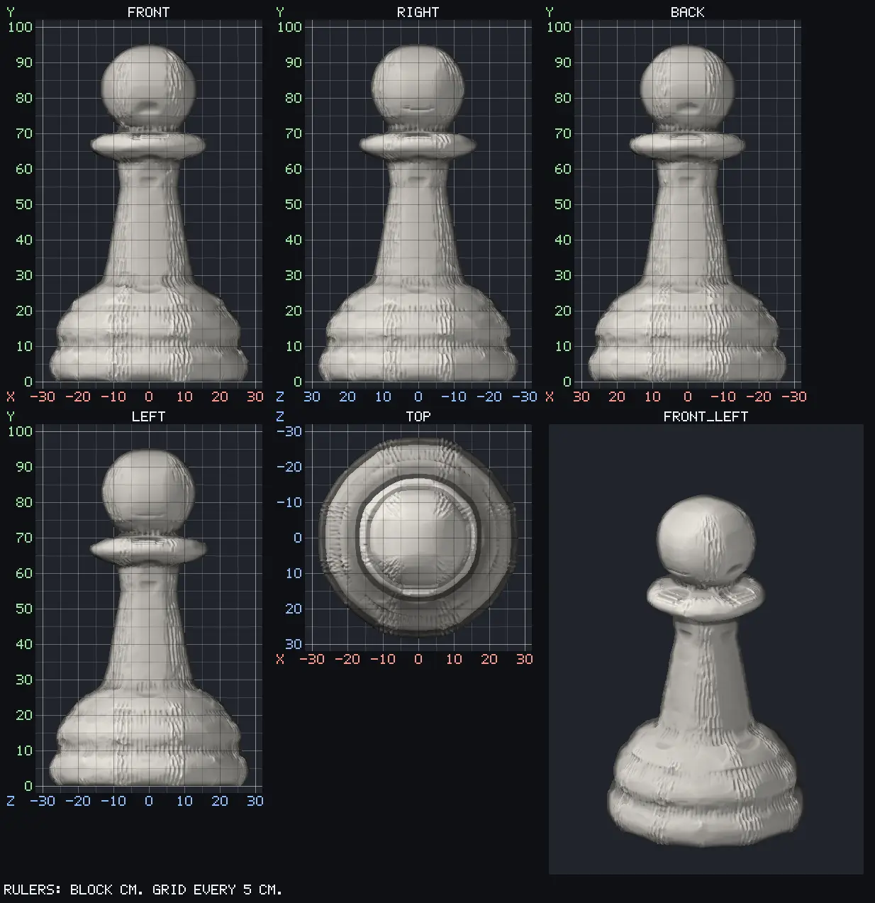
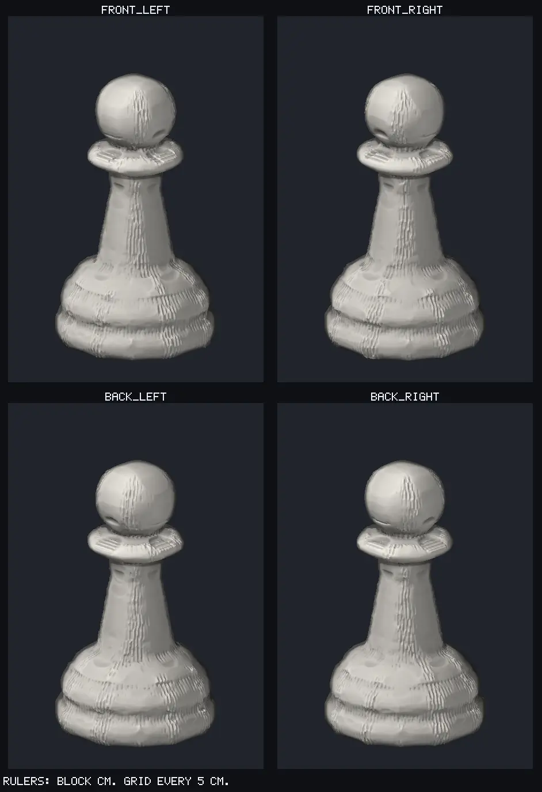
✓ Judge: chess pawn confidence 0.97
A spherical head sits on a flat collar ring above a tapering stem that flares into a stepped, ribbed circular base, which is the classic chess pawn profile.
- cost
- $0.72 (reference $0.04)
- turns
- 14 of 60, 33 passes, 7,730 strikes
- ended
- finish
- stone left
- 222.9 kg (77.1% removed, 95 cm tall)
- silhouette
- front 0.93 · left 0.93 IoU with the reference
- proud of own form
- mean 0.35 cm, max 1.3 cm
the sculptor's own statement (the model's words about its piece, not a finding)Pawn
The humblest piece on the board, made as tall as the block allowed: a round head on its collar, a body that sweeps down into a broad stepped foot. I left faint traces of the claw in the marble so you can still see the hand that turned it.
33 passes
- rough_out turn 1, 1817 strikes
“Taking the big waste off around the pawn's outline from front and side, leaving a safe skin.”
Roughed out to 'reference' with the point chisel, leaving 3 cm: 8 saw cuts took 76,257 cm³ (206.7 kg) off in slabs, 1803 chisel strikes took 128,276 cm³ (347.6 kg) and 102 cm³ fell away loose. Outside the margin the stone now stands 0.3 cm proud on average and 2.0 cm at most. In all 204634 cm³ (554.6 kg) came off. 23 offcuts fell to the floor (largest 22089 cm³). 421.0 kg of stone remains. - saw turn 2, 2 strikes
“Sawing the square corners off the base so it can become round.”
Sawed from [10, 29.6] to [29.6, 10] in the top view, discarding everything below the line: 3,944 cm³ (10.7 kg) fell away in 1 piece, 3% of the stone that was there. In all 3944 cm³ (10.7 kg) came off. 1 offcut fell to the floor (largest 3943 cm³). 410.4 kg of stone remains. - saw turn 2, 2 strikes
“Same on the other front corner.”
Sawed from [-29.6, 10] to [-10, 29.6] in the top view, discarding everything below the line: 3,953 cm³ (10.7 kg) fell away in 1 piece, 3% of the stone that was there. In all 3953 cm³ (10.7 kg) came off. 1 offcut fell to the floor (largest 3950 cm³). 399.6 kg of stone remains. - saw turn 2, 2 strikes
“And a back corner.”
Sawed from [10, -29.6] to [29.6, -10] in the top view, discarding everything above the line: 4,002 cm³ (10.8 kg) fell away in 1 piece, 3% of the stone that was there. In all 4002 cm³ (10.8 kg) came off. 1 offcut fell to the floor (largest 4000 cm³). 388.8 kg of stone remains. - saw turn 2, 2 strikes
“And the last corner, leaving an octagon to round off.”
Sawed from [-29.6, -10] to [-10, -29.6] in the top view, discarding everything above the line: 3,962 cm³ (10.7 kg) fell away in 1 piece, 3% of the stone that was there. In all 3962 cm³ (10.7 kg) came off. 1 offcut fell to the floor (largest 3958 cm³). 378.1 kg of stone remains. - declare_form turn 2, 1 strikes
“Setting out the round masses of the pawn: base steps, ring, tapering body, collar and ball.”
Declared form "pawn" (7 shapes, blend 1 cm). Inside the block it spans X -28 to 28, Y 0 to 96, Z -28 to 28 and holds about 96.3 litres (261 kg). Nothing was cut. - rough_out turn 4, 1196 strikes
“Knocking the square corners off the head, collar and body so the pawn starts to turn round.”
Roughed out to 'pawn' with the point chisel, leaving 2 cm: 1192 chisel strikes took 22,136 cm³ (60.0 kg) and 21 cm³ fell away loose. Outside the margin the stone now stands 0.2 cm proud on average and 1.2 cm at most. In all 22157 cm³ (60.0 kg) came off. 8 offcuts fell to the floor (largest 2 cm³). 318.0 kg of stone remains. - declare_form turn 5, 1 strikes
“Redrawing the base as two rounded discs so the octagon can be turned into circles.”
Replaced form "pawn" (7 shapes, blend 1 cm). Inside the block it spans X -30 to 30, Y 0 to 96, Z -30 to 30 and holds about 90.8 litres (246 kg). Nothing was cut. 10% of the form lies outside the block, where there is no stone to make it from. - rough_out turn 5, 976 strikes
“Closing in on all the round forms with the claw, leaving a thin skin to finish.”
Roughed out to 'pawn' with the claw chisel, leaving 1 cm: 974 chisel strikes took 11,110 cm³ (30.1 kg) and 1.0 cm³ fell away loose. Outside the margin the stone now stands 0.4 cm proud on average and 1.3 cm at most. In all 11111 cm³ (30.1 kg) came off. 287.9 kg of stone remains. - rough_out turn 6, 985 strikes
“Taking the last skin down to the finished surface with the claw.”
Roughed out to 'pawn' with the claw chisel, leaving 0.3 cm: 983 chisel strikes took 7,978 cm³ (21.6 kg). Outside the margin the stone now stands 0.4 cm proud on average and 1.4 cm at most. In all 7979 cm³ (21.6 kg) came off. 266.3 kg of stone remains. - declare_form turn 7, 1 strikes
“Reshaping the body so it sweeps in with a concave flare instead of a straight cone.”
Replaced form "pawn" (8 shapes, blend 2 cm). Inside the block it spans X -30 to 30, Y 0 to 96, Z -30 to 30 and holds about 81.8 litres (222 kg). Nothing was cut. 11% of the form lies outside the block, where there is no stone to make it from. - rough_out turn 7, 865 strikes
“Carving the waist of the pawn in to give the body its flare.”
Roughed out to 'pawn' with the claw chisel, leaving 0.5 cm: 861 chisel strikes took 8,819 cm³ (23.9 kg) and 1.0 cm³ fell away loose. Outside the margin the stone now stands 0.2 cm proud on average and 1.4 cm at most. In all 8820 cm³ (23.9 kg) came off. 242.4 kg of stone remains. - rasp turn 8, 85 strikes
“Rasping the claw marks off the front face, top to bottom.”
Rasp from the front view: 3 passes, 84 strokes 12 cm wide, from (x 0.0, y 95.0, z 5.7) to (x 0.0, y 1.0, z 29.2), wore off 269 cm³ of high spots. In all 269 cm³ (0.73 kg) came off. 241.6 kg of stone remains. - rasp turn 8, 55 strikes
“Working the rasp round the front-left curve.”
Rasp from the front view: 3 passes, 54 strokes 12 cm wide, from (x -12.0, y 89.5, z 3.1) to (x -12.0, y 1.0, z 26.6), wore off 166 cm³ of high spots. 9 of 27 points along the path missed the stone. In all 166 cm³ (0.45 kg) came off. 241.2 kg of stone remains. - rasp turn 8, 55 strikes
“And the front-right curve.”
Rasp from the front view: 3 passes, 54 strokes 12 cm wide, from (x 12.0, y 89.5, z 3.2) to (x 12.0, y 1.0, z 26.5), wore off 168 cm³ of high spots. 9 of 27 points along the path missed the stone. In all 168 cm³ (0.45 kg) came off. 240.7 kg of stone remains. - rasp turn 8, 85 strikes
“Smoothing the back.”
Rasp from the back view: 3 passes, 84 strokes 12 cm wide, from (x 0.0, y 95.0, z -5.7) to (x 0.0, y 1.0, z -29.2), wore off 288 cm³ of high spots. In all 288 cm³ (0.78 kg) came off. 240.0 kg of stone remains. - rasp turn 8, 52 strikes
“Back curve, one side.”
Rasp from the back view: 3 passes, 51 strokes 12 cm wide, from (x -12.0, y 89.5, z -2.6) to (x -12.0, y 1.0, z -26.4), wore off 152 cm³ of high spots. 10 of 27 points along the path missed the stone. In all 152 cm³ (0.41 kg) came off. 239.6 kg of stone remains. - rasp turn 8, 53 strikes
“Back curve, other side.”
Rasp from the back view: 3 passes, 52 strokes 12 cm wide, from (x 12.0, y 89.5, z -2.0) to (x 12.0, y 1.0, z -26.4), wore off 159 cm³ of high spots. 9 of 27 points along the path missed the stone. In all 159 cm³ (0.43 kg) came off. 239.1 kg of stone remains. - declare_form turn 10, 1 strikes
“Bringing the bottom disc in to a true circle inside the octagon I sawed earlier.”
Replaced form "pawn" (8 shapes, blend 2 cm). Inside the block it spans X -28 to 28, Y 0 to 96, Z -28 to 28 and holds about 78.4 litres (212 kg). Nothing was cut. 10% of the form lies outside the block, where there is no stone to make it from. - rough_out turn 10, 813 strikes
“Turning the base round and taking the whole surface down to its final skin.”
Roughed out to 'pawn' with the claw chisel, leaving 0.2 cm: 811 chisel strikes took 3,505 cm³ (9.5 kg). Outside the margin the stone now stands 0.4 cm proud on average and 1.2 cm at most. In all 3505 cm³ (9.5 kg) came off. 229.6 kg of stone remains. - rasp turn 11, 97 strikes
“Final smoothing down the front.”
Rasp from the front view: 4 passes, 96 strokes 14 cm wide, from (x 0.0, y 95.0, z 5.4) to (x 0.0, y 1.0, z 27.7), wore off 444 cm³ of high spots. In all 444 cm³ (1.20 kg) came off. 228.4 kg of stone remains. - rasp turn 11, 97 strikes
“Final smoothing down the back.”
Rasp from the back view: 4 passes, 96 strokes 14 cm wide, from (x 0.0, y 95.0, z -5.2) to (x 0.0, y 1.0, z -27.6), wore off 434 cm³ of high spots. In all 434 cm³ (1.18 kg) came off. 227.2 kg of stone remains. - rasp turn 11, 97 strikes
“Smoothing the left side.”
Rasp from the left view: 4 passes, 96 strokes 14 cm wide, from (x -5.6, y 95.0, z 0.0) to (x -27.7, y 1.0, z 0.0), wore off 366 cm³ of high spots. In all 366 cm³ (0.99 kg) came off. 226.2 kg of stone remains. - rasp turn 11, 97 strikes
“Smoothing the right side.”
Rasp from the right view: 4 passes, 96 strokes 14 cm wide, from (x 5.8, y 95.0, z 0.0) to (x 27.6, y 1.0, z 0.0), wore off 372 cm³ of high spots. In all 372 cm³ (1.01 kg) came off. 225.2 kg of stone remains. - rasp turn 11, 31 strikes
“Blending the back-left quarter.”
Rasp from the left view: 3 passes, 30 strokes 12 cm wide, from (x -9.4, y 67.5, z -14.0) to (x -23.7, y 1.0, z -14.0), wore off 92 cm³ of high spots. 17 of 27 points along the path missed the stone. In all 92.3 cm³ (0.25 kg) came off. 225.0 kg of stone remains. - rasp turn 11, 31 strikes
“Blending the front-left quarter.”
Rasp from the left view: 3 passes, 30 strokes 12 cm wide, from (x -9.4, y 67.5, z 14.0) to (x -23.8, y 1.0, z 14.0), wore off 92 cm³ of high spots. 17 of 27 points along the path missed the stone. In all 92.5 cm³ (0.25 kg) came off. 224.7 kg of stone remains. - rasp turn 11, 31 strikes
“Blending the back-right quarter.”
Rasp from the right view: 3 passes, 30 strokes 12 cm wide, from (x 9.3, y 67.5, z -14.0) to (x 23.6, y 1.0, z -14.0), wore off 91 cm³ of high spots. 17 of 27 points along the path missed the stone. In all 91.2 cm³ (0.25 kg) came off. 224.5 kg of stone remains. - rasp turn 11, 31 strikes
“Blending the front-right quarter.”
Rasp from the right view: 3 passes, 30 strokes 12 cm wide, from (x 9.3, y 67.5, z 14.0) to (x 23.6, y 1.0, z 14.0), wore off 90 cm³ of high spots. 17 of 27 points along the path missed the stone. In all 90 cm³ (0.24 kg) came off. 224.2 kg of stone remains. - rasp turn 11, 25 strikes
“Rounding the crown of the head from above.”
Rasp from the top view: 4 passes, 24 strokes 14 cm wide, from (x -10.0, y 91.5, z 0.0) to (x 10.0, y 91.3, z 0.0), wore off 112 cm³ of high spots. In all 112 cm³ (0.30 kg) came off. 223.9 kg of stone remains. - rasp turn 13, 37 strikes
“Easing the facets on the front-left quarter.”
Rasp from the front view: 4 passes, 36 strokes 12 cm wide, from (x -16.0, y 65.1, z 3.1) to (x -16.0, y 1.0, z 22.4), wore off 99 cm³ of high spots. 17 of 26 points along the path missed the stone. In all 99 cm³ (0.27 kg) came off. 223.7 kg of stone remains. - rasp turn 13, 37 strikes
“Easing the facets on the front-right quarter.”
Rasp from the front view: 4 passes, 36 strokes 12 cm wide, from (x 16.0, y 65.1, z 3.8) to (x 16.0, y 1.0, z 22.5), wore off 93 cm³ of high spots. 17 of 26 points along the path missed the stone. In all 92.9 cm³ (0.25 kg) came off. 223.4 kg of stone remains. - rasp turn 13, 34 strikes
“Easing the facets at the back.”
Rasp from the back view: 4 passes, 33 strokes 12 cm wide, from (x -16.0, y 65.1, z -2.6) to (x -16.0, y 1.0, z -22.5), wore off 88 cm³ of high spots. 17 of 26 points along the path missed the stone. In all 88 cm³ (0.24 kg) came off. 223.2 kg of stone remains. - rasp turn 13, 36 strikes
“And the other back quarter.”
Rasp from the back view: 4 passes, 35 strokes 12 cm wide, from (x 16.0, y 65.1, z -3.7) to (x 16.0, y 1.0, z -22.3), wore off 95 cm³ of high spots. 17 of 26 points along the path missed the stone. In all 94.5 cm³ (0.26 kg) came off. 222.9 kg of stone remains.
B-pawn-opus-formed-ref-20261109124813-f9f
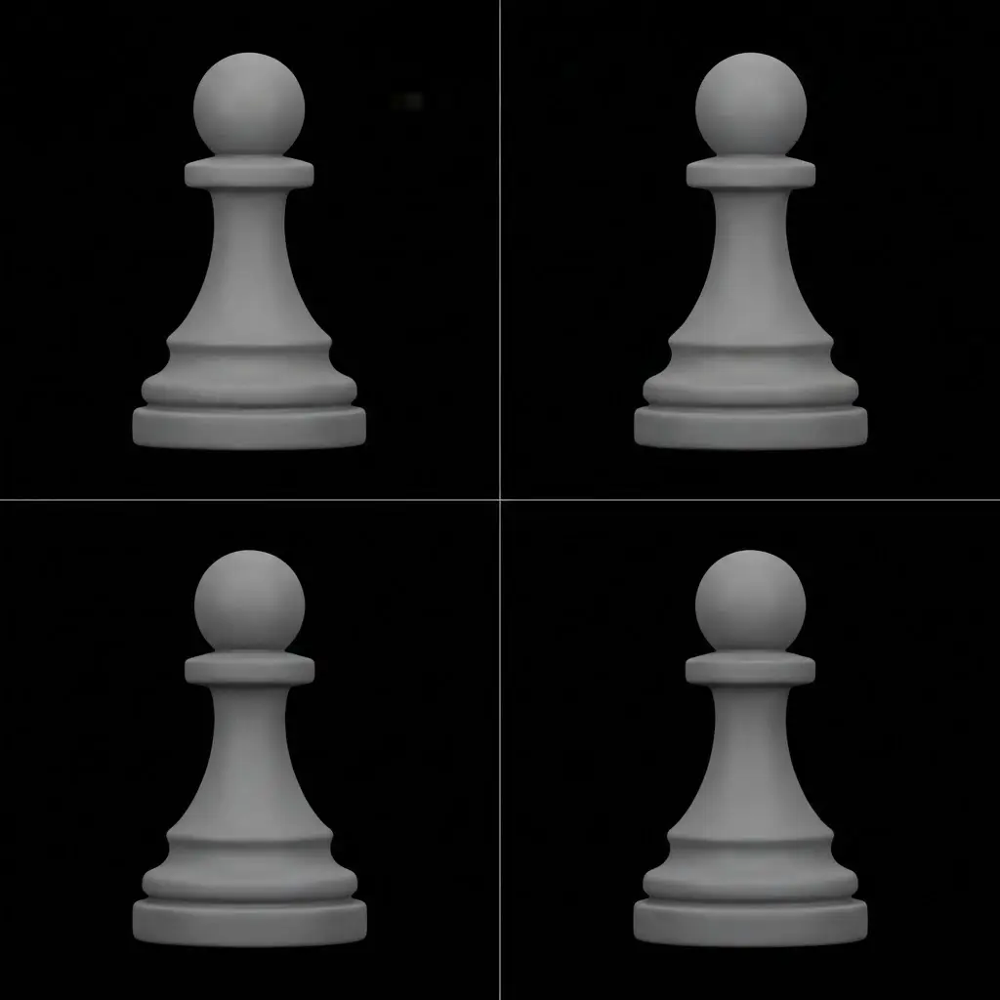
the sculptor's brief to the image model
A single chess pawn standing upright. It is fully rotationally symmetric, so every view shows the same silhouette, and the front is simply the side facing the viewer. It stands about 100 units tall and is widest at the base, which fills nearly the full 60 by 60 footprint as a round plinth about 58 units across. From the bottom up, the plinth is a low, wide cylinder about 10 units tall, with a second, slightly narrower stepped ring about 6 units tall on top of it. Above the rings, a concave flaring body sweeps inward from about 46 units wide down to a waist about 18 units wide at roughly 70 units height. On the waist sits a thick flat collar, a disc about 30 units wide and 5 units tall, and above it a solid sphere about 26 units in diameter crowns the top. The outline reads from any side as a classic pawn: a broad stepped foot, a smooth curving trumpet-like flare, a crisp horizontal collar, and a round ball head. All transitions are bold, with no fine grooves.
cat
cat · opus · formed · ref off
round A
✗ Judge: rabbit confidence 0.40; it is a cat lying down
A small round head with two pointed upright ears sits on a large round body with tiny feet at the base, which fits a sitting rabbit better than a cat lying down or an owl, since the body is upright and the ears are tall and narrow.
- cost
- $0.37
- turns
- 9 of 60, 25 passes, 6,743 strikes
- ended
- finish
- stone left
- 315 kg (67.7% removed, 94 cm tall)
- proud of own form
- mean 0.49 cm, max 2.0 cm
the sculptor's own statement (the model's words about its piece, not a finding)Loaf
A cat settled into the round, paws tucked away, with only its pricked ears and half-closed eyes showing it is still watching. I kept the body as one full, smooth mass so the stone reads as warmth and weight, with the tail laid quietly along its side.
25 passes
- declare_form turn 1, 1 strikes
“I'm laying out the cat as a tall loaf with the head riding up on the front, ears pricked, and tail wrapped along its right side.”
Declared form "cat" (9 shapes, blend 3 cm). Inside the block it spans X -28 to 28, Y 0 to 86, Z -30 to 28 and holds about 108.1 litres (293 kg). Nothing was cut. - rough_out turn 1, 1433 strikes
“Taking the big waste off all round, leaving a generous skin over the cat.”
Roughed out to 'cat' with the point chisel, leaving 4 cm: 8 saw cuts took 90,043 cm³ (244.0 kg) off in slabs, 1420 chisel strikes took 91,506 cm³ (248.0 kg) and 38 cm³ fell away loose. Outside the margin the stone now stands 0.5 cm proud on average and 1.9 cm at most. In all 181587 cm³ (492.1 kg) came off. 15 offcuts fell to the floor (largest 45664 cm³). 483.5 kg of stone remains. - rough_out turn 2, 1067 strikes
“Closing in on the masses with the claw so the head, body and tail start to separate.”
Roughed out to 'cat' with the claw chisel, leaving 1.5 cm: 1063 chisel strikes took 39,685 cm³ (107.5 kg) and 182 cm³ fell away loose. Outside the margin the stone now stands 0.4 cm proud on average and 1.5 cm at most. In all 39868 cm³ (108.0 kg) came off. 15 offcuts fell to the floor (largest 83 cm³). 375.5 kg of stone remains. - rough_out turn 3, 984 strikes
“Bringing the whole surface down to the true form before I cut the features.”
Roughed out to 'cat' with the claw chisel, leaving 0.3 cm: 981 chisel strikes took 18,235 cm³ (49.4 kg) and 1.2 cm³ fell away loose. Outside the margin the stone now stands 0.5 cm proud on average and 1.7 cm at most. In all 18237 cm³ (49.4 kg) came off. 326.0 kg of stone remains. - chisel turn 4, 11 strikes
“Cutting the left eye as a soft almond so the face starts to look out.”
Flat chisel from the front view: It ran on the stone from (x -10.0, y 69.0, z 23.9) to (x -4.5, y 69.5, z 25.9). 10 strikes in 2 layers took 17 cm³, 1 cm deep and 2.5 cm wide. In all 17.3 cm³ (0.05 kg) came off. 326.0 kg of stone remains. - chisel turn 4, 11 strikes
“And the right eye to match.”
Flat chisel from the front view: It ran on the stone from (x 4.5, y 69.5, z 26.2) to (x 10.0, y 69.0, z 24.1). 10 strikes in 2 layers took 16 cm³, 1 cm deep and 2.5 cm wide. In all 16.1 cm³ (0.04 kg) came off. 325.9 kg of stone remains. - chisel turn 4, 21 strikes
“Drawing the left half of the mouth down from under the nose.”
Flat chisel from the front view: It ran on the stone from (x 0.0, y 62.0, z 28.5) to (x -3.0, y 58.0, z 27.7). 20 strikes in 2 layers took 3.4 cm³, 0.6 cm deep and 1 cm wide. In all 3.4 cm³ (0.01 kg) came off. 325.9 kg of stone remains. - chisel turn 4, 12 strikes
“And the right half of the mouth.”
Flat chisel from the front view: It ran on the stone from (x 0.0, y 59.5, z 27.6) to (x 3.0, y 58.0, z 26.9). 11 strikes in 2 layers took 2.3 cm³, 0.6 cm deep and 1 cm wide. In all 2.3 cm³ (0.01 kg) came off. 325.9 kg of stone remains. - chisel turn 4, 54 strikes
“Splitting the tucked paw edge into two paws.”
Flat chisel from the front view: It ran on the stone from (x 0.0, y 4.5, z 28.5) to (x 0.0, y 11.0, z 23.3). 53 strikes in 5 layers took 14 cm³, 1.5 cm deep and 1.2 cm wide. In all 14.5 cm³ (0.04 kg) came off. 325.9 kg of stone remains. - rasp turn 5, 189 strikes
“Smoothing the chest so it reads as soft fur rather than claw marks.”
Rasp from the front view: 4 passes, 188 strokes 13 cm wide, from (x -18.0, y 44.2, z 5.8) to (x 18.0, y 44.2, z 4.2), wore off 596 cm³ of high spots. 2 of 49 points along the path missed the stone. In all 596 cm³ (1.61 kg) came off. 324.3 kg of stone remains. - rasp turn 5, 185 strikes
“Smoothing the right flank.”
Rasp from the right view: 4 passes, 184 strokes 13 cm wide, from (x 6.7, y 48.0, z 15.0) to (x 10.8, y 40.0, z -24.0), wore off 515 cm³ of high spots. In all 515 cm³ (1.40 kg) came off. 322.9 kg of stone remains. - rasp turn 5, 185 strikes
“Smoothing the left flank.”
Rasp from the left view: 4 passes, 184 strokes 13 cm wide, from (x -6.7, y 48.0, z 15.0) to (x -10.1, y 40.0, z -24.0), wore off 485 cm³ of high spots. In all 485 cm³ (1.31 kg) came off. 321.6 kg of stone remains. - rasp turn 5, 193 strikes
“Smoothing the back.”
Rasp from the back view: 4 passes, 192 strokes 13 cm wide, from (x -18.0, y 44.2, z -9.5) to (x 18.0, y 44.2, z -9.8), wore off 440 cm³ of high spots. 2 of 50 points along the path missed the stone. In all 440 cm³ (1.19 kg) came off. 320.4 kg of stone remains. - rasp turn 5, 201 strikes
“Smoothing the back of the loaf and the crown of the head from above.”
Rasp from the top view: 4 passes, 200 strokes 12 cm wide, from (x -15.0, y 4.7, z -25.0) to (x 10.0, y 74.1, z 22.0), wore off 392 cm³ of high spots. In all 392 cm³ (1.06 kg) came off. 319.3 kg of stone remains. - rasp turn 6, 163 strikes
“Softening the face around the eyes and muzzle without losing them.”
Rasp from the front view: 3 passes, 162 strokes 6 cm wide, from (x -12.0, y 78.0, z 13.2) to (x 10.0, y 56.0, z 19.6), wore off 113 cm³ of high spots. In all 113 cm³ (0.31 kg) came off. 319.0 kg of stone remains. - rasp turn 6, 73 strikes
“Smoothing the right cheek and side of the head.”
Rasp from the right view: 4 passes, 72 strokes 10 cm wide, from (x 11.2, y 76.0, z 18.0) to (x 14.9, y 60.0, z 18.0), wore off 136 cm³ of high spots. 1 of 19 points along the path missed the stone. In all 136 cm³ (0.37 kg) came off. 318.6 kg of stone remains. - rasp turn 6, 73 strikes
“Smoothing the left cheek and side of the head.”
Rasp from the left view: 4 passes, 72 strokes 10 cm wide, from (x -10.9, y 76.0, z 18.0) to (x -15.0, y 60.0, z 18.0), wore off 147 cm³ of high spots. 1 of 19 points along the path missed the stone. In all 147 cm³ (0.40 kg) came off. 318.2 kg of stone remains. - rasp turn 6, 165 strikes
“Smoothing the back of the head and nape.”
Rasp from the back view: 4 passes, 164 strokes 8 cm wide, from (x -12.0, y 78.0, z 6.9) to (x 10.0, y 57.0, z 4.2), wore off 136 cm³ of high spots. In all 136 cm³ (0.37 kg) came off. 317.9 kg of stone remains. - rasp turn 6, 81 strikes
“Smoothing the tail where it wraps along the right side.”
Rasp from the top view: 4 passes, 80 strokes 8 cm wide, from (x 21.0, y 11.0, z -24.0) to (x 21.0, y 11.7, z 20.0), wore off 55 cm³ of high spots. In all 55.2 cm³ (0.15 kg) came off. 317.7 kg of stone remains. - rasp turn 6, 581 strikes
“Dressing the top of the plinth around the edge.”
Rasp from the top view: 4 passes, 580 strokes 5 cm wide, from (x -27.0, y 5.1, z 27.0) to (x -27.0, y 4.7, z 27.0), wore off 298 cm³ of high spots. In all 298 cm³ (0.81 kg) came off. 316.9 kg of stone remains. - rasp turn 8, 196 strikes
“Dressing the front face of the plinth.”
Rasp from the front view: 5 passes, 195 strokes 5 cm wide, from (x -28.0, y 2.5, z 29.9) to (x 28.0, y 2.5, z 29.5), wore off 173 cm³ of high spots. In all 173 cm³ (0.47 kg) came off. 316.4 kg of stone remains. - rasp turn 8, 196 strikes
“Dressing the back face of the plinth.”
Rasp from the back view: 5 passes, 195 strokes 5 cm wide, from (x -28.0, y 2.5, z -29.7) to (x 28.0, y 2.5, z -29.6), wore off 159 cm³ of high spots. In all 159 cm³ (0.43 kg) came off. 316.0 kg of stone remains. - rasp turn 8, 201 strikes
“Dressing the right face of the plinth.”
Rasp from the right view: 5 passes, 200 strokes 5 cm wide, from (x 28.1, y 2.5, z 29.0) to (x 27.7, y 2.5, z -29.0), wore off 166 cm³ of high spots. In all 166 cm³ (0.45 kg) came off. 315.6 kg of stone remains. - rasp turn 8, 201 strikes
“Dressing the left face of the plinth.”
Rasp from the left view: 5 passes, 200 strokes 5 cm wide, from (x -27.9, y 2.5, z 29.0) to (x -27.5, y 2.5, z -29.0), wore off 175 cm³ of high spots. In all 175 cm³ (0.47 kg) came off. 315.1 kg of stone remains. - rasp turn 8, 266 strikes
“Taking the last tool marks off the rim of the face.”
Rasp from the front view: 5 passes, 265 strokes 5 cm wide, from (x -14.0, y 74.0, z 15.9) to (x -8.0, y 79.0, z 16.3), wore off 42 cm³ of high spots. In all 42 cm³ (0.11 kg) came off. 315.0 kg of stone remains.
A-cat-opus-formed-noref-20261109123707-59f
cat · opus · formed · ref on
round B
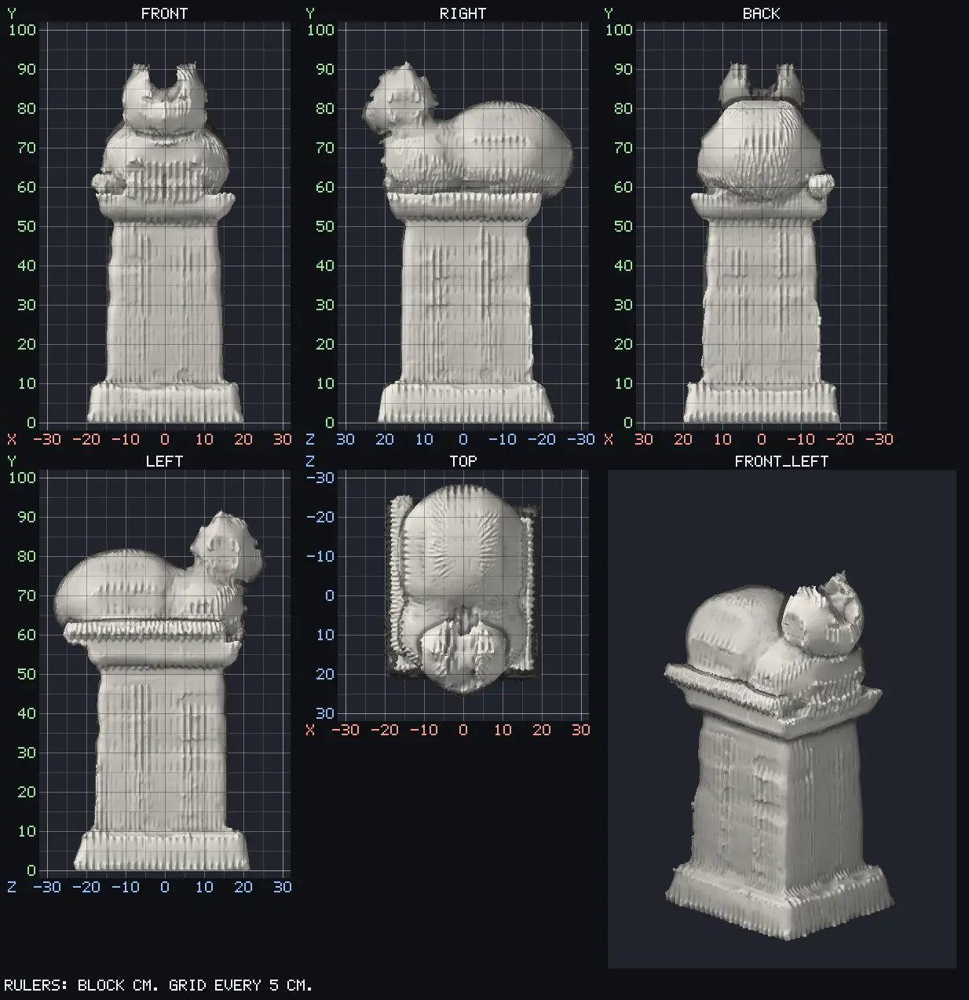
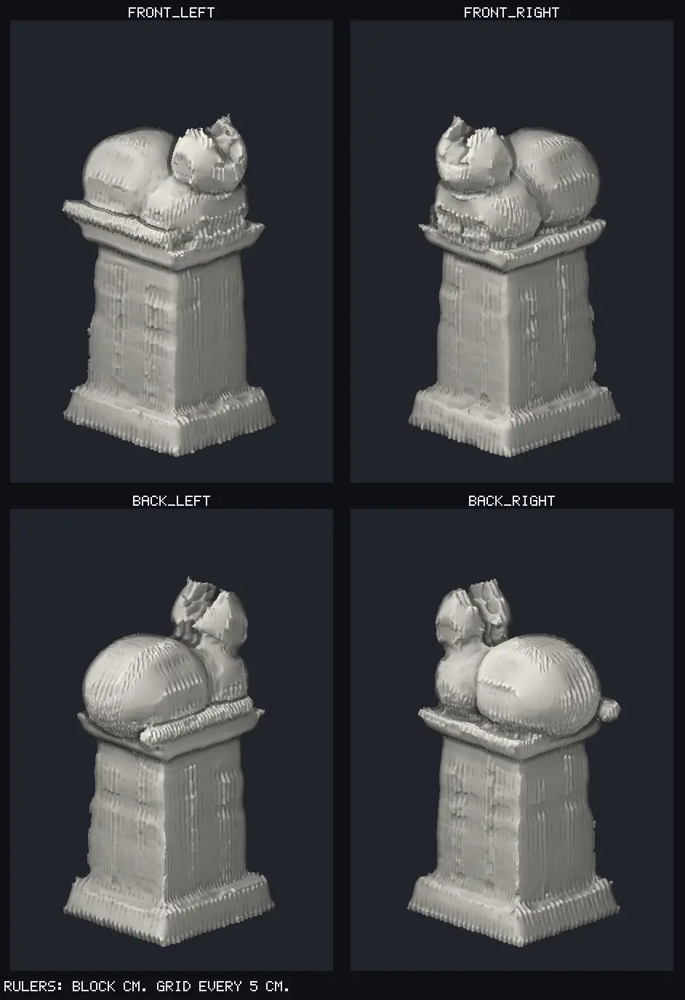
✓ Judge: cat lying down confidence 0.70
On top of a plinth sits a long, low rounded body with a smaller head at one end that has two pointed ears, which looks like a cat crouched or lying down rather than a rabbit or upright owl.
- cost
- $0.69 (reference $0.05)
- turns
- 15 of 60, 31 passes, 6,694 strikes
- ended
- finish
- stone left
- 244.5 kg (74.9% removed, 92 cm tall)
- silhouette
- front 0.87 · left 0.89 IoU with the reference
- proud of own form
- mean 0.09 cm, max 1.3 cm
the sculptor's own statement (the model's words about its piece, not a finding)Loaf
A cat folded into a loaf on top of a plain pedestal, paws tucked under, tail laid along its flank, ears up as if it has just heard its name. I kept the body as one round, heavy mass so it reads as being completely at rest, and only the head looks up.
31 passes
- rough_out turn 1, 1492 strikes
“Taking off the big waste around the pedestal and the lying cat, leaving a safe skin of stone everywhere.”
Roughed out to 'reference' with the point chisel, leaving 3 cm: 7 saw cuts took 127,031 cm³ (344.3 kg) off in slabs, 1479 chisel strikes took 100,230 cm³ (271.6 kg) and 54 cm³ fell away loose. Outside the margin the stone now stands 0.4 cm proud on average and 2.5 cm at most. In all 227315 cm³ (616.0 kg) came off. 18 offcuts fell to the floor (largest 48000 cm³). 359.6 kg of stone remains. - rough_out turn 2, 1081 strikes
“Closing in on the true outline of pedestal and cat with the claw, leaving just a thin skin.”
Roughed out to 'reference' with the claw chisel, leaving 1 cm: 1078 chisel strikes took 30,738 cm³ (83.3 kg) and 12 cm³ fell away loose. Outside the margin the stone now stands 0.4 cm proud on average and 1.7 cm at most. In all 30750 cm³ (83.3 kg) came off. 5 offcuts fell to the floor (largest 1 cm³). 276.2 kg of stone remains. - declare_form turn 3, 1 strikes
“I'm stating the true masses now: pedestal, the rounded loaf of the body, the head, ears, paws and tail.”
Declared form "cat" (12 shapes, blend 2 cm). Inside the block it spans X -20 to 20, Y 0 to 90, Z -28 to 24 and holds about 99 litres (268 kg). Nothing was cut. - declare_form turn 5, 1 strikes
“Seating the body properly on the pedestal top so the whole cat is one connected mass.”
Replaced form "cat" (12 shapes, blend 2 cm). Inside the block it spans X -20 to 20, Y 0 to 90, Z -28 to 24 and holds about 96.6 litres (262 kg). Nothing was cut. - rough_out turn 5, 1010 strikes
“Rounding the boxy loaf, head and ears down toward their real curved forms.”
Roughed out to 'cat' with the claw chisel, leaving 0.5 cm: 1005 chisel strikes took 6,229 cm³ (16.9 kg) and 2.2 cm³ fell away loose. Outside the margin the stone now stands 0.1 cm proud on average and 1.1 cm at most. In all 6231 cm³ (16.9 kg) came off. 259.4 kg of stone remains. - rough_out turn 6, 819 strikes
“Taking the last skin down to the true surface of every mass.”
Roughed out to 'cat' with the claw chisel, leaving 0 cm: 817 chisel strikes took 2,386 cm³ (6.5 kg) and 0.7 cm³ fell away loose. Outside the margin the stone now stands 0.2 cm proud on average and 1.3 cm at most. In all 2387 cm³ (6.5 kg) came off. 252.9 kg of stone remains. - chisel turn 7, 10 strikes
“Dropping the crown between the ears so they stand up pricked.”
Point chisel from the top view: It ran on the stone from (x 0.0, y 78.7, z 6.0) to (x 0.0, y 86.5, z 23.0). 9 strikes took 215 cm³, 3 cm deep and 5 cm wide. In all 215 cm³ (0.58 kg) came off. 252.3 kg of stone remains. - chisel turn 8, 6 strikes
“Opening the dip between the ears into a soft saddle.”
Claw chisel from the top view: It ran on the stone from (x 0.0, y 76.9, z 7.0) to (x 0.0, y 84.7, z 22.0). 5 strikes took 518 cm³, 1.5 cm deep and 8 cm wide. 0.7 cm³ more fell away loose. In all 518 cm³ (1.40 kg) came off. 250.9 kg of stone remains. - chisel turn 8, 52 strikes
“Cutting the shadow under the chin so the head lifts off the chest.”
Flat chisel from the front view: It ran on the stone from (x -7.0, y 73.5, z 18.5) to (x 7.0, y 73.5, z 18.7). 51 strikes in 3 layers took 23 cm³, 1 cm deep and 1.5 cm wide. In all 22.8 cm³ (0.06 kg) came off. 250.8 kg of stone remains. - chisel turn 8, 55 strikes
“Splitting the two tucked front paws.”
Flat chisel from the front view: It ran on the stone from (x 0.0, y 63.0, z 19.2) to (x 0.0, y 57.5, z 19.0). 54 strikes in 5 layers took 9.5 cm³, 1.5 cm deep and 1 cm wide. In all 9.5 cm³ (0.03 kg) came off. 250.8 kg of stone remains. - chisel turn 8, 258 strikes
“Drawing the line above the tail so it lies along the flank.”
Flat chisel from the left view: It ran on the stone from (x -9.4, y 63.5, z -24.0) to (x -14.0, y 63.5, z 15.0). 257 strikes in 4 layers took 39 cm³, 1 cm deep and 1 cm wide. In all 39.2 cm³ (0.11 kg) came off. 250.7 kg of stone remains. - chisel turn 9, 11 strikes
“Setting in the left eye as a soft almond.”
Flat chisel from the front view: It ran on the stone from (x -5.5, y 82.5, z 23.3) to (x -3.0, y 82.0, z 23.8). 10 strikes in 2 layers took 2.9 cm³, 0.7 cm deep and 1.2 cm wide. In all 2.9 cm³ (0.01 kg) came off. 250.7 kg of stone remains. - chisel turn 9, 11 strikes
“And the right eye to match.”
Flat chisel from the front view: It ran on the stone from (x 3.0, y 82.0, z 23.9) to (x 5.5, y 82.5, z 23.0). 10 strikes in 2 layers took 2.6 cm³, 0.7 cm deep and 1.2 cm wide. In all 2.6 cm³ (0.01 kg) came off. 250.7 kg of stone remains. - rasp turn 9, 100 strikes
“Smoothing the left flank of the loaf.”
Rasp from the left view: 3 passes, 99 strokes 8 cm wide, from (x -9.9, y 70.0, z -25.0) to (x -9.5, y 66.0, z -25.0), wore off 145 cm³ of high spots. In all 145 cm³ (0.39 kg) came off. 250.3 kg of stone remains. - rasp turn 9, 95 strikes
“Smoothing the right flank of the loaf.”
Rasp from the right view: 3 passes, 94 strokes 8 cm wide, from (x 9.9, y 70.0, z -25.0) to (x 9.8, y 66.0, z -25.0), wore off 134 cm³ of high spots. 1 of 33 points along the path missed the stone. In all 134 cm³ (0.36 kg) came off. 249.9 kg of stone remains. - rasp turn 9, 100 strikes
“Smoothing the back of the cat from above.”
Rasp from the top view: 3 passes, 99 strokes 10 cm wide, from (x -12.0, y 73.3, z -21.0) to (x 12.0, y 73.1, z 2.0), wore off 180 cm³ of high spots. 2 of 35 points along the path missed the stone. In all 180 cm³ (0.49 kg) came off. 249.5 kg of stone remains. - rasp turn 9, 69 strikes
“Softening the cheeks around the face without touching the eyes.”
Rasp from the front view: 2 passes, 68 strokes 4 cm wide, from (x -8.0, y 88.0, z 17.5) to (x 8.0, y 88.0, z 17.7), wore off 27 cm³ of high spots. In all 26.9 cm³ (0.07 kg) came off. 249.4 kg of stone remains. - rasp turn 11, 116 strikes
“Cleaning the crown and the inner edges of the ears.”
Rasp from the top view: 3 passes, 115 strokes 5 cm wide, from (x -9.0, y 75.9, z 8.0) to (x 9.0, y 83.5, z 20.5), wore off 86 cm³ of high spots. 2 of 41 points along the path missed the stone. In all 85.9 cm³ (0.23 kg) came off. 249.1 kg of stone remains. - rasp turn 11, 133 strikes
“Dressing the front face of the pedestal.”
Rasp from the front view: 3 passes, 132 strokes 10 cm wide, from (x -10.0, y 48.0, z 15.7) to (x 10.0, y 12.0, z 15.9), wore off 241 cm³ of high spots. In all 241 cm³ (0.65 kg) came off. 248.5 kg of stone remains. - rasp turn 11, 133 strikes
“Dressing the back face of the pedestal.”
Rasp from the back view: 3 passes, 132 strokes 10 cm wide, from (x -10.0, y 48.0, z -16.3) to (x 10.0, y 12.0, z -17.8), wore off 253 cm³ of high spots. In all 253 cm³ (0.68 kg) came off. 247.8 kg of stone remains. - rasp turn 11, 136 strikes
“Dressing the left face of the pedestal.”
Rasp from the left view: 3 passes, 135 strokes 10 cm wide, from (x -13.4, y 48.0, z -12.0) to (x -14.8, y 12.0, z 12.0), wore off 249 cm³ of high spots. In all 249 cm³ (0.67 kg) came off. 247.1 kg of stone remains. - rasp turn 11, 136 strikes
“Dressing the right face of the pedestal.”
Rasp from the right view: 3 passes, 135 strokes 10 cm wide, from (x 13.4, y 48.0, z -12.0) to (x 14.8, y 12.0, z 12.0), wore off 247 cm³ of high spots. In all 247 cm³ (0.67 kg) came off. 246.5 kg of stone remains. - rasp turn 11, 64 strikes
“Smoothing the chest above the paws.”
Rasp from the front view: 3 passes, 63 strokes 5 cm wide, from (x -13.0, y 66.0, z 17.0) to (x 13.0, y 66.0, z 17.1), wore off 27 cm³ of high spots. In all 27.4 cm³ (0.07 kg) came off. 246.4 kg of stone remains. - rasp turn 13, 147 strikes
“Bringing the face to a quiet finish.”
Rasp from the front view: 2 passes, 146 strokes 3 cm wide, from (x -9.0, y 86.0, z 18.6) to (x -9.0, y 76.0, z 19.1), wore off 25 cm³ of high spots. 2 of 75 points along the path missed the stone. In all 25.2 cm³ (0.07 kg) came off. 246.3 kg of stone remains. - rasp turn 13, 99 strikes
“Smoothing the left side of the head.”
Rasp from the left view: 3 passes, 98 strokes 5 cm wide, from (x -6.3, y 85.0, z 8.0) to (x -6.6, y 76.0, z 21.0), wore off 49 cm³ of high spots. 2 of 35 points along the path missed the stone. In all 48.6 cm³ (0.13 kg) came off. 246.2 kg of stone remains. - rasp turn 13, 97 strikes
“Smoothing the right side of the head.”
Rasp from the right view: 3 passes, 96 strokes 5 cm wide, from (x 6.6, y 83.6, z 8.0) to (x 6.7, y 76.0, z 21.0), wore off 46 cm³ of high spots. 3 of 35 points along the path missed the stone. In all 46.2 cm³ (0.13 kg) came off. 246.1 kg of stone remains. - rasp turn 13, 55 strikes
“Truing the front of the pedestal cap.”
Rasp from the front view: 3 passes, 54 strokes 7 cm wide, from (x -17.0, y 54.0, z 18.6) to (x 17.0, y 54.0, z 18.9), wore off 64 cm³ of high spots. In all 64.3 cm³ (0.17 kg) came off. 245.9 kg of stone remains. - rasp turn 13, 49 strikes
“Truing the front of the plinth.”
Rasp from the front view: 3 passes, 48 strokes 9 cm wide, from (x -19.0, y 5.0, z 21.3) to (x 19.0, y 5.0, z 21.2), wore off 85 cm³ of high spots. In all 85.5 cm³ (0.23 kg) came off. 245.7 kg of stone remains. - rasp turn 14, 124 strikes
“Truing the left side of cap and plinth.”
Rasp from the left view: 3 passes, 123 strokes 7 cm wide, from (x -17.0, y 54.0, z -18.9) to (x -19.4, y 5.0, z -20.9), wore off 151 cm³ of high spots. 23 of 64 points along the path missed the stone. In all 151 cm³ (0.41 kg) came off. 245.2 kg of stone remains. - rasp turn 14, 124 strikes
“Truing the right side of cap and plinth.”
Rasp from the right view: 3 passes, 123 strokes 7 cm wide, from (x 17.2, y 54.0, z -18.9) to (x 19.5, y 5.0, z -20.9), wore off 153 cm³ of high spots. 23 of 64 points along the path missed the stone. In all 153 cm³ (0.41 kg) came off. 244.8 kg of stone remains. - rasp turn 14, 110 strikes
“Truing the back of cap and plinth.”
Rasp from the back view: 3 passes, 109 strokes 7 cm wide, from (x -14.9, y 54.0, z -19.6) to (x -19.0, y 5.0, z -21.0), wore off 127 cm³ of high spots. 22 of 59 points along the path missed the stone. In all 127 cm³ (0.34 kg) came off. 244.5 kg of stone remains.
B-cat-opus-formed-ref-20261109124813-31d
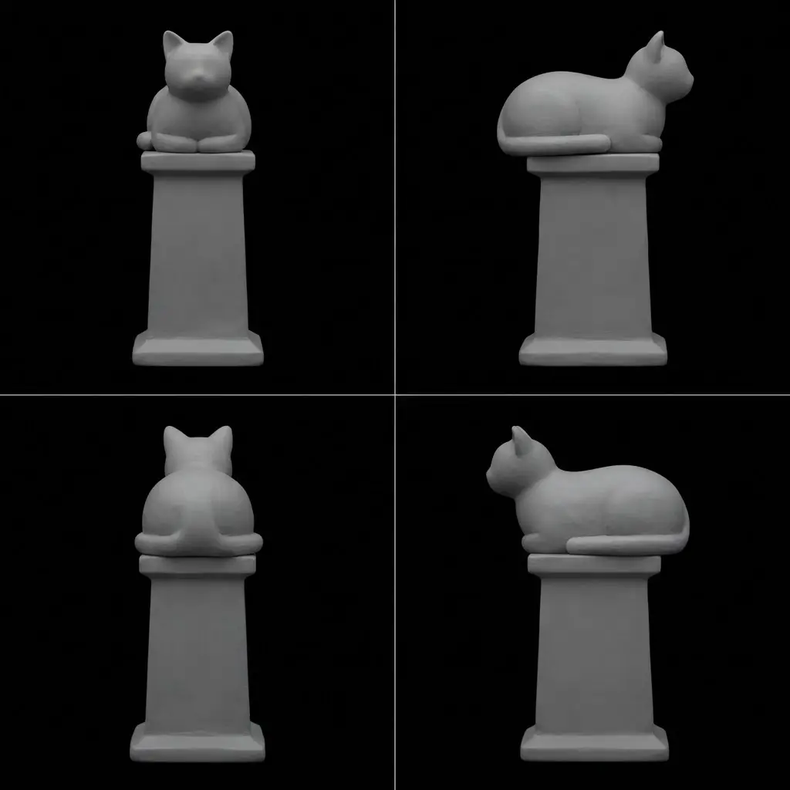
the sculptor's brief to the image model
A compact cat in a loaf pose rests on top of a tall, plain squared plinth. The cat faces straight forward, its head up and level, its forelegs tucked completely out of sight beneath its chest, and its tail wrapped flat along its right side. The whole piece is about 100 cm tall, 55 cm wide and 58 cm deep. The plinth is a slightly tapering block about 50 cm high, widest at its foot at about 55 cm square, and the cat's body sits flush on its top and overhangs it only slightly. The cat's body is a rounded, bread-loaf mass about 50 cm wide, 58 cm long front to back and 30 cm high, widest at the haunches, with a smooth unbroken underside merging into the plinth top. A thick neck rises from the front of the loaf into a broad, rounded head about 30 cm wide, with a short blunt muzzle. Two thick, wedge-shaped pricked ears with wide bases reach about 10 cm above the crown. From the front, the piece reads as a tall column topped by a wide, low dome with a round head and two triangular ear points. From the side, it reads as a long, low loaf with a slightly higher rounded rump at the back, an upright head at the front, and a thick tail lying in a raised band along the flank, curling forward to the chest.
bust
bust · opus · formed · ref off
round A
✓ Judge: human head and shoulders (bust) confidence 0.80
An egg-shaped head with faint facial features sits on a short neck above a broad, squared shoulder-and-chest block, all on a flat plinth, which reads as a bust.
- cost
- $0.82
- turns
- 19 of 60, 48 passes, 7,978 strikes
- ended
- finish
- stone left
- 149.8 kg (84.6% removed, 59 cm tall)
- proud of own form
- mean 0.87 cm, max 2.3 cm
the sculptor's own statement (the model's words about its piece, not a finding)Small Head on Broad Shoulders
An early saw cut took the head I had first planned, so this bust was carved again, smaller, out of the stone that was left: a compact head with a quiet face set low on wide, sloping shoulders. The plinth keeps the rough marks of the claw, and the figure rising out of it has been rasped smooth.
48 passes
- declare_form turn 1, 1 strikes
“Setting down the masses of the bust — plinth, chest and shoulders, neck, head — so the waste around them is clear.”
Declared form "bust" (8 shapes, blend 4 cm). Inside the block it spans X -28 to 28, Y 0 to 98, Z -20 to 20 and holds about 96.7 litres (262 kg). Nothing was cut. - rough_out turn 1, 1436 strikes
“Taking the big waste off all round, leaving a generous skin to work back into.”
Roughed out to 'bust' with the point chisel, leaving 3.5 cm: 9 saw cuts took 124,586 cm³ (337.6 kg) off in slabs, 1421 chisel strikes took 73,298 cm³ (198.6 kg) and 6.2 cm³ fell away loose. Outside the margin the stone now stands 0.6 cm proud on average and 2.3 cm at most. In all 197890 cm³ (536.3 kg) came off. 11 offcuts fell to the floor (largest 33600 cm³). 439.3 kg of stone remains. - rough_out turn 2, 1039 strikes
“Closing in on the masses with the claw so the head, neck and shoulders read as true forms.”
Roughed out to 'bust' with the claw chisel, leaving 1.5 cm: 1036 chisel strikes took 35,159 cm³ (95.3 kg) and 4.2 cm³ fell away loose. Outside the margin the stone now stands 0.5 cm proud on average and 1.6 cm at most. In all 35163 cm³ (95.3 kg) came off. 344.0 kg of stone remains. - saw turn 3, 2 strikes
“Dropping the right shoulder into a natural slope away from the neck.”
Sawed from [12, 55] to [30, 46] in the front view, discarding everything above the line: 24,084 cm³ (65.3 kg) fell away in 2 pieces, 19% of the stone that was there. In all 24084 cm³ (65.3 kg) came off. 2 offcuts fell to the floor (largest 23470 cm³). 278.8 kg of stone remains. - saw turn 3, 2 strikes
“Same slope on the left shoulder so the pair match.”
Sawed from [-12, 55] to [-30, 46] in the front view, discarding everything above the line: 1,582 cm³ (4.3 kg) fell away in 2 pieces, 2% of the stone that was there. In all 1582 cm³ (4.3 kg) came off. 2 offcuts fell to the floor (largest 963 cm³). 274.5 kg of stone remains. - chisel turn 3, 5 strikes
“Cutting back the throat under the jaw so the chin stands free of the neck.”
Point chisel from the front view: It ran on the stone from (x -2.3, y 59.3, z 11.1) to (x 3.5, y 59.3, z 9.4). 7 of 13 points along the path missed the stone (first miss at [-7, 59]). 4 strikes took 17 cm³, 2 cm deep and 3 cm wide. 1.8 cm³ more fell away loose. In all 18.8 cm³ (0.05 kg) came off. 1 offcut fell to the floor (largest 1 cm³). 274.4 kg of stone remains. - declare_form turn 4, 1 strikes
“My shoulder saw ran clean through the head, so I'm resetting the whole bust smaller to fit the stone that's left.”
Declared form "bust2" (8 shapes, blend 3 cm). Inside the block it spans X -26 to 26, Y 0 to 58, Z -20 to 20 and holds about 49 litres (133 kg). Nothing was cut. Looks and numbers measure the stone against all your forms together: "bust", "bust2". - declare_form turn 5, 1 strikes
“Replacing the old plan with the new, smaller bust so the overlay only shows what I'm aiming for now.”
Replaced form "bust" (8 shapes, blend 3 cm). Inside the block it spans X -26 to 26, Y 0 to 58, Z -20 to 20 and holds about 49 litres (133 kg). Nothing was cut. Looks and numbers measure the stone against all your forms together: "bust", "bust2". - rough_out turn 5, 1266 strikes
“Taking the waste down to the new bust, leaving a skin to work back into.”
Roughed out to 'bust2' with the point chisel, leaving 2.5 cm: 4 saw cuts took 8,303 cm³ (22.5 kg) off in slabs, 1257 chisel strikes took 20,444 cm³ (55.4 kg) and 1.4 cm³ fell away loose. Outside the margin the stone now stands 0.2 cm proud on average and 1.6 cm at most. In all 28749 cm³ (77.9 kg) came off. 7 offcuts fell to the floor (largest 2817 cm³). 196.5 kg of stone remains. - rough_out turn 6, 1006 strikes
“Bringing all the masses in close with the claw, ready to model the head.”
Roughed out to 'bust2' with the claw chisel, leaving 0.8 cm: 1003 chisel strikes took 12,838 cm³ (34.8 kg) and 3.3 cm³ fell away loose. Outside the margin the stone now stands 0.4 cm proud on average and 1.5 cm at most. In all 12841 cm³ (34.8 kg) came off. 161.7 kg of stone remains. - chisel turn 7, 12 strikes
“Lowering the outer right shoulder so it slopes away from the neck.”
Point chisel from the top view: It ran on the stone from (x 21.0, y 32.5, z -11.0) to (x 21.0, y 30.4, z 13.0). 11 strikes took 191 cm³, 2.5 cm deep and 5 cm wide. In all 191 cm³ (0.52 kg) came off. 161.2 kg of stone remains. - chisel turn 7, 13 strikes
“The same on the left shoulder.”
Point chisel from the top view: It ran on the stone from (x -21.0, y 32.6, z -11.0) to (x -21.0, y 30.3, z 13.0). 12 strikes took 192 cm³, 2.5 cm deep and 5 cm wide. In all 192 cm³ (0.52 kg) came off. 160.7 kg of stone remains. - chisel turn 7, 13 strikes
“Easing the slope further in toward the neck on the right.”
Point chisel from the top view: It ran on the stone from (x 16.0, y 32.3, z -11.0) to (x 16.0, y 29.9, z 13.0). 12 strikes took 114 cm³, 1.2 cm deep and 5 cm wide. In all 114 cm³ (0.31 kg) came off. 160.4 kg of stone remains. - chisel turn 7, 14 strikes
“And on the left.”
Point chisel from the top view: It ran on the stone from (x -16.0, y 32.5, z -11.0) to (x -16.0, y 30.1, z 13.0). 13 strikes took 123 cm³, 1.2 cm deep and 5 cm wide. In all 123 cm³ (0.33 kg) came off. 160.0 kg of stone remains. - chisel turn 8, 32 strikes
“Rounding off the ridge left at the tip of the right shoulder.”
Claw chisel from the top view: It ran on the stone from (x 24.5, y 30.6, z -11.0) to (x 24.5, y 26.5, z 11.5). 1 of 17 points along the path missed the stone (first miss at [24.5, 13]). 31 strikes in 2 layers took 95 cm³, 1.5 cm deep and 3 cm wide. In all 95.4 cm³ (0.26 kg) came off. 159.8 kg of stone remains. - chisel turn 8, 30 strikes
“Same on the left shoulder tip.”
Claw chisel from the top view: It ran on the stone from (x -24.5, y 30.0, z -11.0) to (x -24.5, y 26.9, z 11.5). 1 of 17 points along the path missed the stone (first miss at [-24.5, 13]). 29 strikes in 2 layers took 96 cm³, 1.5 cm deep and 3 cm wide. In all 96.5 cm³ (0.26 kg) came off. 159.5 kg of stone remains. - chisel turn 8, 18 strikes
“Knocking down the ridge between my two shoulder strokes on the right.”
Claw chisel from the top view: It ran on the stone from (x 18.5, y 32.0, z -11.0) to (x 18.5, y 29.7, z 13.0). 17 strikes took 63 cm³, 1 cm deep and 3 cm wide. In all 63.2 cm³ (0.17 kg) came off. 159.3 kg of stone remains. - chisel turn 8, 17 strikes
“And the matching ridge on the left.”
Claw chisel from the top view: It ran on the stone from (x -18.5, y 32.2, z -11.0) to (x -18.5, y 29.3, z 13.0). 16 strikes took 57 cm³, 1 cm deep and 3 cm wide. In all 57.1 cm³ (0.15 kg) came off. 159.2 kg of stone remains. - rasp turn 8, 77 strikes
“Smoothing the right shoulder into one easy slope.”
Rasp from the top view: 3 passes, 76 strokes 8 cm wide, from (x 10.0, y 33.0, z -10.0) to (x 23.7, y 28.5, z 10.0), wore off 114 cm³ of high spots. 3 of 30 points along the path missed the stone. In all 114 cm³ (0.31 kg) came off. 158.9 kg of stone remains. - rasp turn 8, 80 strikes
“Smoothing the left shoulder the same way.”
Rasp from the top view: 3 passes, 79 strokes 8 cm wide, from (x -10.0, y 33.1, z -10.0) to (x -23.7, y 27.4, z 10.0), wore off 124 cm³ of high spots. 3 of 30 points along the path missed the stone. In all 124 cm³ (0.34 kg) came off. 158.5 kg of stone remains. - chisel turn 10, 36 strikes
“Taking the spur off the right shoulder tip.”
Claw chisel from the right view: It ran on the stone from (x 10.3, y 30.0, z 14.0) to (x 23.1, y 30.0, z -12.0). 35 strikes in 2 layers took 120 cm³, 1.5 cm deep and 3 cm wide. In all 120 cm³ (0.33 kg) came off. 158.2 kg of stone remains. - chisel turn 10, 38 strikes
“And the spur off the left shoulder tip.”
Claw chisel from the left view: It ran on the stone from (x -9.3, y 30.0, z 14.0) to (x -23.0, y 30.0, z -12.0). 37 strikes in 2 layers took 122 cm³, 1.5 cm deep and 3 cm wide. In all 122 cm³ (0.33 kg) came off. 157.9 kg of stone remains. - chisel turn 10, 5 strikes
“Setting in the right eye socket under the brow.”
Claw chisel from the front view: It ran on the stone from (x -5.5, y 49.0, z 10.0) to (x -2.0, y 49.0, z 13.9). 4 strikes took 13 cm³, 1 cm deep and 2.5 cm wide. In all 12.6 cm³ (0.03 kg) came off. 157.9 kg of stone remains. - chisel turn 10, 5 strikes
“And the other eye socket.”
Claw chisel from the front view: It ran on the stone from (x 2.0, y 49.0, z 13.7) to (x 5.5, y 49.0, z 9.7). 4 strikes took 14 cm³, 1 cm deep and 2.5 cm wide. In all 13.9 cm³ (0.04 kg) came off. 157.8 kg of stone remains. - chisel turn 11, 30 strikes
“Drawing the line of the mouth.”
Flat chisel from the front view: It ran on the stone from (x -2.2, y 41.4, z 13.1) to (x 2.2, y 41.4, z 12.6). 29 strikes in 3 layers took 2.1 cm³, 0.5 cm deep and 0.8 cm wide. In all 2.1 cm³ (0.01 kg) came off. 157.8 kg of stone remains. - chisel turn 11, 8 strikes
“Setting back the cheek beside the nose so it stands out.”
Claw chisel from the front view: It ran on the stone from (x -2.4, y 48.0, z 13.3) to (x -2.6, y 44.0, z 13.7). 7 strikes took 3.2 cm³, 0.6 cm deep and 1.5 cm wide. In all 3.2 cm³ (0.01 kg) came off. 157.8 kg of stone remains. - chisel turn 11, 7 strikes
“The same on the other side of the nose.”
Claw chisel from the front view: It ran on the stone from (x 2.4, y 48.0, z 12.9) to (x 2.6, y 44.0, z 13.3). 6 strikes took 3.0 cm³, 0.6 cm deep and 1.5 cm wide. In all 3 cm³ (0.01 kg) came off. 157.8 kg of stone remains. - chisel turn 11, 27 strikes
“Cutting the groove behind the right ear.”
Claw chisel from the right view: It ran on the stone from (x 9.1, y 50.0, z -1.5) to (x 8.4, y 44.0, z -1.5). 26 strikes in 2 layers took 4.1 cm³, 0.7 cm deep and 1 cm wide. In all 4.1 cm³ (0.01 kg) came off. 157.8 kg of stone remains. - chisel turn 11, 27 strikes
“And behind the left ear.”
Claw chisel from the left view: It ran on the stone from (x -9.0, y 50.0, z -1.5) to (x -8.4, y 44.0, z -1.5). 26 strikes in 2 layers took 4.2 cm³, 0.7 cm deep and 1 cm wide. In all 4.2 cm³ (0.01 kg) came off. 157.8 kg of stone remains. - chisel turn 12, 16 strikes
“Taking the hard corner off the chest on the right so the torso turns.”
Point chisel from the front view: It ran on the stone from (x 22.5, y 12.0, z 14.8) to (x 22.5, y 29.0, z 11.6). 15 strikes took 64 cm³, 2 cm deep and 3 cm wide. In all 63.9 cm³ (0.17 kg) came off. 157.6 kg of stone remains. - chisel turn 12, 16 strikes
“Same corner on the left.”
Point chisel from the front view: It ran on the stone from (x -22.5, y 12.0, z 14.9) to (x -22.5, y 29.0, z 11.6). 15 strikes took 67 cm³, 2 cm deep and 3 cm wide. 0.7 cm³ more fell away loose. In all 67.2 cm³ (0.18 kg) came off. 157.4 kg of stone remains. - chisel turn 12, 16 strikes
“Rounding the back corner on one side.”
Point chisel from the back view: It ran on the stone from (x 22.5, y 12.0, z -14.9) to (x 22.5, y 29.0, z -15.0). 15 strikes took 67 cm³, 2 cm deep and 3 cm wide. In all 67.1 cm³ (0.18 kg) came off. 157.2 kg of stone remains. - chisel turn 12, 16 strikes
“And the other back corner.”
Point chisel from the back view: It ran on the stone from (x -22.5, y 12.0, z -14.9) to (x -22.5, y 29.0, z -14.9). 15 strikes took 66 cm³, 2 cm deep and 3 cm wide. In all 66.6 cm³ (0.18 kg) came off. 157.1 kg of stone remains. - rasp turn 13, 139 strikes
“Smoothing the back of the head.”
Rasp from the back view: 3 passes, 138 strokes 5 cm wide, from (x -6.0, y 56.0, z -0.4) to (x -5.0, y 39.0, z -5.3), wore off 76 cm³ of high spots. In all 75.5 cm³ (0.20 kg) came off. 156.8 kg of stone remains. - rasp turn 13, 94 strikes
“Smoothing the crown.”
Rasp from the top view: 3 passes, 93 strokes 5 cm wide, from (x -5.0, y 53.1, z -6.0) to (x 5.0, y 55.9, z 6.0), wore off 38 cm³ of high spots. In all 37.5 cm³ (0.10 kg) came off. 156.7 kg of stone remains. - rasp turn 13, 103 strikes
“Easing the right side of the head.”
Rasp from the right view: 2 passes, 102 strokes 4 cm wide, from (x 4.1, y 55.0, z 8.0) to (x 4.8, y 41.0, z -6.0), wore off 28 cm³ of high spots. In all 28.3 cm³ (0.08 kg) came off. 156.7 kg of stone remains. - rasp turn 13, 103 strikes
“Easing the left side of the head.”
Rasp from the left view: 2 passes, 102 strokes 4 cm wide, from (x -3.7, y 55.0, z 8.0) to (x -4.8, y 41.0, z -6.0), wore off 30 cm³ of high spots. In all 30 cm³ (0.08 kg) came off. 156.6 kg of stone remains. - rasp turn 13, 61 strikes
“Smoothing the forehead above the brows.”
Rasp from the front view: 2 passes, 60 strokes 3 cm wide, from (x -5.1, y 56.0, z 5.0) to (x -5.0, y 52.0, z 9.0), wore off 9.9 cm³ of high spots. 1 of 31 points along the path missed the stone. In all 9.9 cm³ (0.03 kg) came off. 156.6 kg of stone remains. - rasp turn 15, 421 strikes
“Smoothing the chest so the light runs evenly across it.”
Rasp from the front view: 3 passes, 420 strokes 6 cm wide, from (x -23.0, y 30.0, z 5.2) to (x 23.0, y 11.0, z 13.2), wore off 332 cm³ of high spots. In all 332 cm³ (0.90 kg) came off. 155.7 kg of stone remains. - rasp turn 15, 421 strikes
“Smoothing the back of the torso.”
Rasp from the back view: 3 passes, 420 strokes 6 cm wide, from (x -23.0, y 30.0, z -6.9) to (x 23.0, y 11.0, z -14.3), wore off 334 cm³ of high spots. In all 334 cm³ (0.91 kg) came off. 154.8 kg of stone remains. - rasp turn 15, 220 strikes
“Smoothing the right flank and arm.”
Rasp from the right view: 3 passes, 219 strokes 6 cm wide, from (x 8.8, y 29.0, z 14.0) to (x 21.0, y 12.0, z 14.0), wore off 175 cm³ of high spots. In all 175 cm³ (0.47 kg) came off. 154.3 kg of stone remains. - rasp turn 15, 220 strikes
“Smoothing the left flank and arm.”
Rasp from the left view: 3 passes, 219 strokes 6 cm wide, from (x -7.8, y 29.0, z 14.0) to (x -21.5, y 12.0, z 14.0), wore off 179 cm³ of high spots. In all 179 cm³ (0.48 kg) came off. 153.8 kg of stone remains. - rasp turn 15, 266 strikes
“Going round the shoulder tops to wear down the pitting.”
Rasp from the top view: 4 passes, 265 strokes 7 cm wide, from (x -22.9, y 27.8, z -13.0) to (x -25.0, y 27.6, z -10.9), wore off 244 cm³ of high spots. 8 of 75 points along the path missed the stone. In all 244 cm³ (0.66 kg) came off. 153.1 kg of stone remains. - chisel turn 17, 45 strikes
“Taking the right shoulder top down evenly to the bottom of its pits.”
Claw chisel from the top view: It ran on the stone from (x 10.0, y 32.2, z -11.0) to (x 10.0, y 28.9, z 13.0). 2 of 47 points along the path missed the stone (first miss at [25, 10.652]). 44 strikes took 376 cm³, 0.8 cm deep and 5 cm wide. In all 376 cm³ (1.02 kg) came off. 152.1 kg of stone remains. - chisel turn 17, 44 strikes
“The same on the left shoulder top.”
Claw chisel from the top view: It ran on the stone from (x -10.0, y 32.3, z -11.0) to (x -10.0, y 28.8, z 13.0). 2 of 47 points along the path missed the stone (first miss at [-25, 10.652]). 43 strikes took 374 cm³, 0.8 cm deep and 5 cm wide. In all 374 cm³ (1.01 kg) came off. 151.1 kg of stone remains. - rasp turn 17, 409 strikes
“Rasping the shoulders smooth after the claw.”
Rasp from the top view: 4 passes, 408 strokes 7 cm wide, from (x -22.9, y 26.7, z -11.0) to (x -22.9, y 26.1, z 12.0), wore off 457 cm³ of high spots. 5 of 108 points along the path missed the stone. In all 457 cm³ (1.24 kg) came off. 149.9 kg of stone remains. - rasp turn 18, 67 strikes
“Softening the cheeks and chin around the mouth.”
Rasp from the front view: 2 passes, 66 strokes 2.5 cm wide, from (x -6.0, y 46.0, z 9.5) to (x 6.0, y 46.0, z 9.4), wore off 9.0 cm³ of high spots. In all 9 cm³ (0.02 kg) came off. 149.8 kg of stone remains. - rasp turn 18, 53 strikes
“Smoothing the throat.”
Rasp from the front view: 2 passes, 52 strokes 3 cm wide, from (x -5.0, y 35.0, z 5.9) to (x -5.0, y 33.0, z 10.1), wore off 7.6 cm³ of high spots. In all 7.6 cm³ (0.02 kg) came off. 149.8 kg of stone remains.
A-bust-opus-formed-noref-20261109124333-66a
bust · opus · formed · ref on
round B
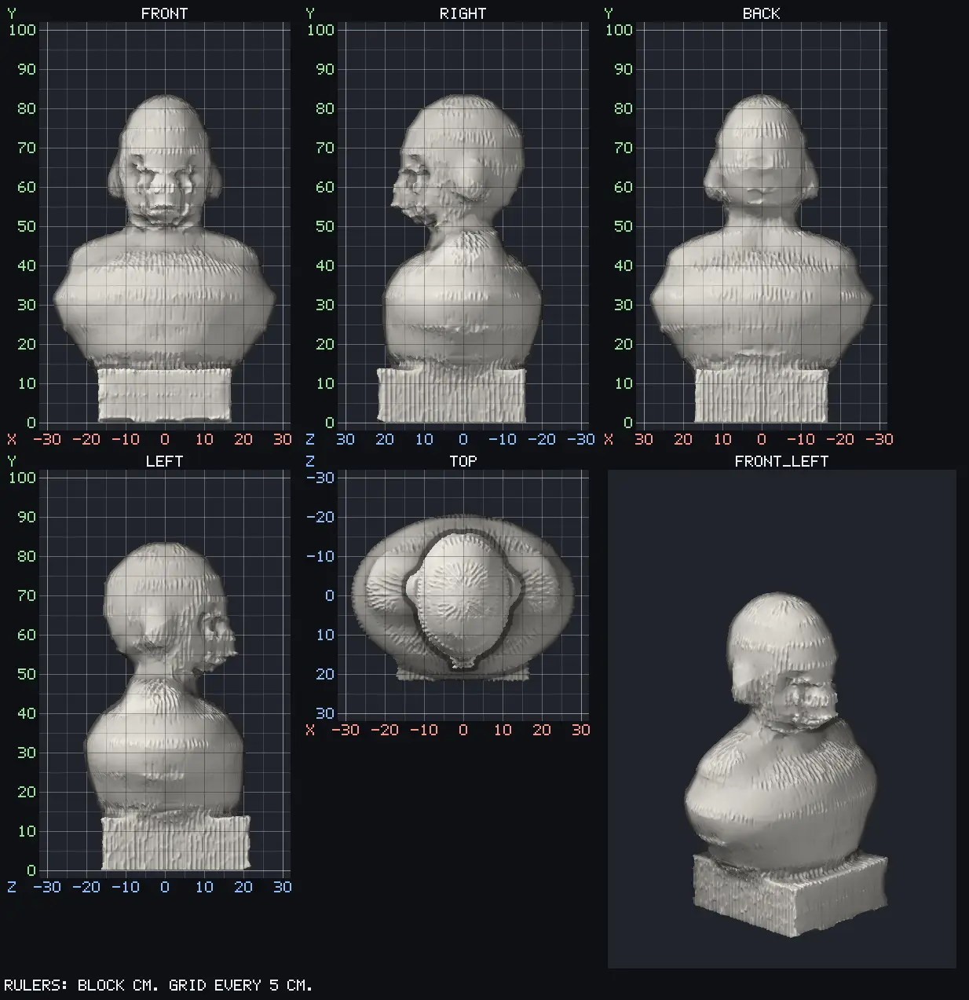
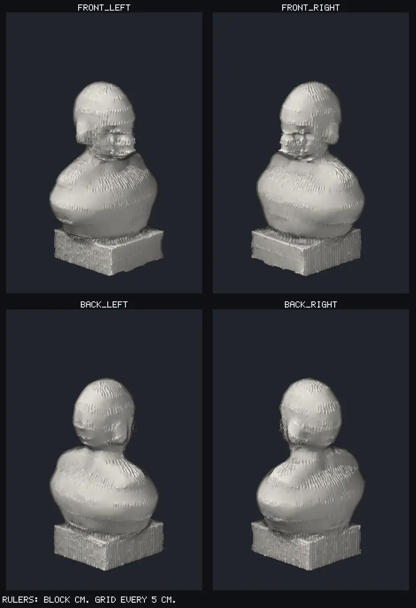
✓ Judge: human head and shoulders (bust) confidence 0.93
A rounded head with ears and a face area sits on a neck above wide sloping shoulders and a chest, all on a rectangular plinth, which is the classic form of a portrait bust.
Reviewer: A reviewer found the face of the Opus reference bust cratered, yet the judge picked "bust" at 0.93.
- cost
- $1.07 (reference $0.08)
- turns
- 35 of 60, 50 passes, 10,218 strikes
- ended
- finish
- stone left
- 212.4 kg (78.2% removed, 84 cm tall)
- silhouette
- front 0.88 · left 0.84 IoU with the reference
- proud of own form
- mean 0.50 cm, max 1.5 cm
the sculptor's own statement (the model's words about its piece, not a finding)Portrait Head
A bust, head and shoulders, cut from one block of Carrara and standing on a square plinth. The face is set back into the skull, and I kept the features plain so the broad shoulders and steady forward gaze give it its presence.
50 passes
- saw turn 2, 2 strikes
“Taking the top slab off; the head doesn't need it.”
Sawed from [-30, 86] to [30, 86] in the front view, discarding everything above the line: 50,400 cm³ (136.6 kg) fell away in 1 piece, 14% of the stone that was there. In all 50400 cm³ (136.6 kg) came off. 1 offcut fell to the floor (largest 50400 cm³). 839.0 kg of stone remains. - rough_out turn 2, 1476 strikes
“Knocking the big waste off all round to find the bust's envelope, leaving a safe skin.”
Roughed out to 'reference' with the point chisel, leaving 3 cm: 6 saw cuts took 89,273 cm³ (241.9 kg) off in slabs, 1464 chisel strikes took 81,469 cm³ (220.8 kg) and 136 cm³ fell away loose. Outside the margin the stone now stands 0.4 cm proud on average and 1.9 cm at most. In all 170878 cm³ (463.1 kg) came off. 18 offcuts fell to the floor (largest 21632 cm³). 375.9 kg of stone remains. - declare_form turn 3, 1 strikes
“Setting down the rounded masses—skull, face, neck, chest and plinth—that the bust should become.”
Declared form "bust" (9 shapes, blend 3 cm). Inside the block it spans X -28 to 28, Y 0 to 82, Z -20 to 22 and holds about 84.7 litres (230 kg). Nothing was cut. - rough_out turn 4, 1230 strikes
“Rounding the boxy envelope toward skull, neck and shoulders, still leaving a skin to work in.”
Roughed out to 'bust' with the point chisel, leaving 2 cm: 3 saw cuts took 4,412 cm³ (12.0 kg) off in slabs, 1223 chisel strikes took 26,240 cm³ (71.1 kg) and 3.1 cm³ fell away loose. Outside the margin the stone now stands 0.3 cm proud on average and 1.3 cm at most. In all 30655 cm³ (83.1 kg) came off. 7 offcuts fell to the floor (largest 1469 cm³). 292.9 kg of stone remains. - rough_out turn 6, 1028 strikes
“Closing in on the masses with the claw to even out the point's pitted surface.”
Roughed out to 'bust' with the claw chisel, leaving 0.8 cm: 1025 chisel strikes took 11,966 cm³ (32.4 kg). Outside the margin the stone now stands 0.3 cm proud on average and 1.5 cm at most. In all 11967 cm³ (32.4 kg) came off. 260.4 kg of stone remains. - declare_form turn 8, 1 strikes
“Rethinking the shoulders so they slope down from a real neck instead of rising in a dome, and tapering the chest into the plinth.”
Replaced form "bust" (11 shapes, blend 3 cm). Inside the block it spans X -28 to 28, Y 0 to 82, Z -20 to 20 and holds about 72.7 litres (197 kg). Nothing was cut. - rough_out turn 9, 1140 strikes
“Cutting the shoulders down to their slope and freeing the neck, and taking the boxy corners off under the chest.”
Roughed out to 'bust' with the point chisel, leaving 1.5 cm: 1136 chisel strikes took 6,780 cm³ (18.4 kg) and 2.6 cm³ fell away loose. Outside the margin the stone now stands 0.1 cm proud on average and 1.2 cm at most. In all 6783 cm³ (18.4 kg) came off. 1 offcut fell to the floor (largest 1 cm³). 242.1 kg of stone remains. - rough_out turn 10, 962 strikes
“Evening the whole surface with the claw, close to the final masses.”
Roughed out to 'bust' with the claw chisel, leaving 0.5 cm: 959 chisel strikes took 6,448 cm³ (17.5 kg). Outside the margin the stone now stands 0.4 cm proud on average and 1.4 cm at most. In all 6448 cm³ (17.5 kg) came off. 224.6 kg of stone remains. - chisel turn 12, 6 strikes
“Sinking the right eye socket under the brow.”
Claw chisel from the front view: It ran on the stone from (x -8.0, y 63.0, z 12.1) to (x -2.5, y 63.0, z 19.2). 5 strikes took 28 cm³, 1.2 cm deep and 3 cm wide. In all 28.1 cm³ (0.08 kg) came off. 224.5 kg of stone remains. - chisel turn 12, 6 strikes
“And the left eye socket to match.”
Claw chisel from the front view: It ran on the stone from (x 2.5, y 63.0, z 19.9) to (x 8.0, y 63.0, z 12.7). 5 strikes took 22 cm³, 1.2 cm deep and 3 cm wide. In all 21.9 cm³ (0.06 kg) came off. 224.4 kg of stone remains. - chisel turn 12, 12 strikes
“Cutting in under the jaw so the chin stands off the throat.”
Point chisel from the front view: It ran on the stone from (x -6.0, y 48.0, z 8.0) to (x 6.0, y 48.0, z 8.2). 11 strikes took 60 cm³, 2 cm deep and 3 cm wide. In all 59.7 cm³ (0.16 kg) came off. 224.3 kg of stone remains. - chisel turn 12, 49 strikes
“Drawing the line of the mouth.”
Flat chisel from the front view: It ran on the stone from (x -3.5, y 54.0, z 16.5) to (x 3.5, y 54.0, z 17.5). 48 strikes in 3 layers took 3.3 cm³, 0.5 cm deep and 0.8 cm wide. In all 3.3 cm³ (0.01 kg) came off. 224.3 kg of stone remains. - chisel turn 14, 20 strikes
“Turning the right cheek back so the face isn't a flat plate.”
Claw chisel from the front view: It ran on the stone from (x -9.0, y 64.0, z 10.8) to (x -7.0, y 52.0, z 11.4). 19 strikes in 2 layers took 57 cm³, 1.5 cm deep and 3 cm wide. In all 57.3 cm³ (0.16 kg) came off. 224.1 kg of stone remains. - chisel turn 14, 19 strikes
“And the left cheek to match.”
Claw chisel from the front view: It ran on the stone from (x 9.0, y 64.0, z 11.6) to (x 7.0, y 52.0, z 11.3). 18 strikes in 2 layers took 57 cm³, 1.5 cm deep and 3 cm wide. In all 57 cm³ (0.15 kg) came off. 224.0 kg of stone remains. - chisel turn 14, 15 strikes
“Setting the side plane of the nose.”
Flat chisel from the front view: It ran on the stone from (x -3.0, y 61.0, z 19.1) to (x -3.5, y 56.0, z 17.8). 14 strikes in 2 layers took 6.2 cm³, 0.8 cm deep and 1.5 cm wide. In all 6.2 cm³ (0.02 kg) came off. 223.9 kg of stone remains. - chisel turn 14, 15 strikes
“And the other side of the nose.”
Flat chisel from the front view: It ran on the stone from (x 3.0, y 61.0, z 18.5) to (x 3.5, y 56.0, z 18.1). 14 strikes in 2 layers took 6.6 cm³, 0.8 cm deep and 1.5 cm wide. In all 6.6 cm³ (0.02 kg) came off. 223.9 kg of stone remains. - chisel turn 16, 11 strikes
“Lowering the right cheek beside the nose so the nose stands out.”
Claw chisel from the front view: It ran on the stone from (x -5.5, y 61.0, z 15.1) to (x -5.5, y 55.0, z 15.6). 10 strikes in 2 layers took 35 cm³, 1.8 cm deep and 3 cm wide. In all 35.3 cm³ (0.10 kg) came off. 223.8 kg of stone remains. - chisel turn 16, 11 strikes
“Same on the left cheek.”
Claw chisel from the front view: It ran on the stone from (x 5.5, y 61.0, z 15.0) to (x 5.5, y 55.0, z 15.7). 10 strikes in 2 layers took 38 cm³, 1.8 cm deep and 3 cm wide. In all 38.5 cm³ (0.10 kg) came off. 223.7 kg of stone remains. - chisel turn 16, 23 strikes
“Rounding the chin and jaw back from the hard lower edge.”
Claw chisel from the front view: It ran on the stone from (x -6.0, y 50.5, z 10.4) to (x 6.0, y 50.5, z 10.5). 22 strikes in 2 layers took 51 cm³, 1.5 cm deep and 2.5 cm wide. In all 51.1 cm³ (0.14 kg) came off. 223.6 kg of stone remains. - declare_form turn 18, 1 strikes
“Restating the face as rounded forms—brow, nose, lips, chin—set back into the skull instead of a block stuck on the front.”
Replaced form "bust" (12 shapes, blend 2 cm). Inside the block it spans X -28 to 28, Y 16 to 82, Z -20 to 20 and holds about 52.8 litres (143 kg). Nothing was cut. It does not reach the base (it starts 16 cm up): rough_out will refuse it until something in the form stands on the base. - declare_form turn 19, 1 strikes
“Restating the face as rounded forms set back into the skull instead of a block stuck on the front, with the plinth included.”
Replaced form "bust" (12 shapes, blend 2.5 cm). Inside the block it spans X -28 to 28, Y 0 to 82, Z -20 to 20 and holds about 72.6 litres (197 kg). Nothing was cut. - rough_out turn 20, 651 strikes
“Cutting the face back into the head so it reads as part of the skull.”
Roughed out to 'bust' with the claw chisel, leaving 0.4 cm: 649 chisel strikes took 1,465 cm³ (4.0 kg). Outside the margin the stone now stands 0.3 cm proud on average and 1.4 cm at most. In all 1465 cm³ (4.0 kg) came off. 219.6 kg of stone remains. - rasp turn 21, 202 strikes
“Easing the hard chisel ridges off the face so the planes start to flow into each other.”
Rasp from the front view: 3 passes, 201 strokes 4 cm wide, from (x -8.0, y 66.0, z 12.6) to (x -7.0, y 50.0, z 7.3), wore off 97 cm³ of high spots. In all 97.4 cm³ (0.26 kg) came off. 219.4 kg of stone remains. - chisel turn 21, 17 strikes
“Rounding the right edge of the face so it turns into the side of the head.”
Claw chisel from the front view: It ran on the stone from (x -7.5, y 67.0, z 12.7) to (x -4.0, y 49.5, z 8.9). 16 strikes took 48 cm³, 1 cm deep and 2.5 cm wide. In all 47.8 cm³ (0.13 kg) came off. 219.2 kg of stone remains. - chisel turn 21, 17 strikes
“And the left edge of the face to match.”
Claw chisel from the front view: It ran on the stone from (x 7.5, y 67.0, z 12.9) to (x 4.0, y 49.5, z 8.3). 16 strikes took 47 cm³, 1 cm deep and 2.5 cm wide. In all 47.2 cm³ (0.13 kg) came off. 219.1 kg of stone remains. - rasp turn 22, 115 strikes
“Smoothing the crown of the head.”
Rasp from the top view: 3 passes, 114 strokes 6 cm wide, from (x -8.0, y 74.2, z -10.0) to (x 8.0, y 76.5, z 8.0), wore off 78 cm³ of high spots. In all 77.7 cm³ (0.21 kg) came off. 218.9 kg of stone remains. - rasp turn 22, 148 strikes
“Smoothing the back of the skull and nape.”
Rasp from the back view: 3 passes, 147 strokes 6 cm wide, from (x -8.0, y 78.0, z -6.6) to (x -6.0, y 54.0, z -6.4), wore off 91 cm³ of high spots. In all 91.4 cm³ (0.25 kg) came off. 218.6 kg of stone remains. - rasp turn 22, 205 strikes
“Smoothing the chest.”
Rasp from the front view: 3 passes, 204 strokes 8 cm wide, from (x -24.0, y 36.0, z 8.2) to (x 22.0, y 21.0, z 7.8), wore off 237 cm³ of high spots. In all 237 cm³ (0.64 kg) came off. 218.0 kg of stone remains. - rasp turn 22, 205 strikes
“Smoothing the back.”
Rasp from the back view: 3 passes, 204 strokes 8 cm wide, from (x -24.0, y 36.0, z -8.2) to (x 22.0, y 21.0, z -7.2), wore off 241 cm³ of high spots. In all 241 cm³ (0.65 kg) came off. 217.3 kg of stone remains. - rasp turn 22, 73 strikes
“Smoothing the top of the right shoulder.”
Rasp from the top view: 3 passes, 72 strokes 8 cm wide, from (x -26.0, y 35.1, z -5.0) to (x -20.0, y 33.8, z 14.0), wore off 84 cm³ of high spots. In all 83.6 cm³ (0.23 kg) came off. 217.1 kg of stone remains. - rasp turn 22, 73 strikes
“Smoothing the top of the left shoulder.”
Rasp from the top view: 3 passes, 72 strokes 8 cm wide, from (x 26.0, y 35.4, z -5.0) to (x 20.0, y 33.5, z 14.0), wore off 86 cm³ of high spots. In all 85.5 cm³ (0.23 kg) came off. 216.9 kg of stone remains. - declare_form turn 24, 1 strikes
“Setting the face back into the skull so the forehead flows into it instead of the face jutting like a mask.”
Replaced form "bust" (12 shapes, blend 3 cm). Inside the block it spans X -28 to 28, Y 0 to 82, Z -20 to 20 and holds about 72.6 litres (197 kg). Nothing was cut. - rough_out turn 24, 643 strikes
“Cutting the face plate back to its new surface.”
Roughed out to 'bust' with the claw chisel, leaving 0.3 cm: 641 chisel strikes took 871 cm³ and 0.6 cm³ fell away loose. Outside the margin the stone now stands 0.3 cm proud on average and 1.2 cm at most. In all 871 cm³ (2.36 kg) came off. 214.5 kg of stone remains. - chisel turn 26, 6 strikes
“Setting the right eye socket in under the brow again.”
Claw chisel from the front view: It ran on the stone from (x -7.0, y 63.0, z 11.1) to (x -2.5, y 63.0, z 16.6). 5 strikes took 15 cm³, 1 cm deep and 2.5 cm wide. In all 14.7 cm³ (0.04 kg) came off. 214.5 kg of stone remains. - chisel turn 26, 6 strikes
“And the left eye socket.”
Claw chisel from the front view: It ran on the stone from (x 2.5, y 63.0, z 16.7) to (x 7.0, y 63.0, z 9.7). 5 strikes took 17 cm³, 1 cm deep and 2.5 cm wide. In all 16.6 cm³ (0.05 kg) came off. 214.4 kg of stone remains. - chisel turn 26, 49 strikes
“Drawing the line of the mouth.”
Flat chisel from the front view: It ran on the stone from (x -3.5, y 54.0, z 14.2) to (x 3.5, y 54.0, z 14.2). 48 strikes in 3 layers took 3.2 cm³, 0.5 cm deep and 0.8 cm wide. In all 3.2 cm³ (0.01 kg) came off. 214.4 kg of stone remains. - rasp turn 26, 205 strikes
“Rounding the hard rim of the face along the jaw and cheeks.”
Rasp from the front view: 4 passes, 204 strokes 3 cm wide, from (x -9.0, y 66.0, z 10.8) to (x 9.0, y 66.0, z 10.4), wore off 48 cm³ of high spots. In all 48 cm³ (0.13 kg) came off. 214.3 kg of stone remains. - chisel turn 28, 12 strikes
“Taking the corner off the left cheek so the face turns round into the side of the head.”
Claw chisel from the right view: It ran on the stone from (x 6.7, y 66.0, z 13.0) to (x 1.9, y 50.0, z 11.0). 11 strikes took 49 cm³, 1 cm deep and 3 cm wide. In all 48.9 cm³ (0.13 kg) came off. 214.2 kg of stone remains. - chisel turn 28, 14 strikes
“And the right cheek corner to match.”
Claw chisel from the left view: It ran on the stone from (x -6.5, y 66.0, z 13.0) to (x -2.5, y 50.0, z 11.0). 13 strikes took 51 cm³, 1 cm deep and 3 cm wide. In all 51.2 cm³ (0.14 kg) came off. 214.0 kg of stone remains. - chisel turn 30, 17 strikes
“Rolling the hard lower edge of the jaw under so it doesn't sit like a shelf.”
Claw chisel from the front view: It ran on the stone from (x -7.0, y 51.5, z 7.7) to (x 7.0, y 51.5, z 7.5). 16 strikes took 25 cm³, 0.8 cm deep and 2 cm wide. In all 25 cm³ (0.07 kg) came off. 214.0 kg of stone remains. - rasp turn 30, 84 strikes
“Smoothing the throat and the join of neck and jaw.”
Rasp from the front view: 4 passes, 83 strokes 4 cm wide, from (x -10.0, y 50.0, z -0.6) to (x 10.0, y 50.0, z 1.3), wore off 24 cm³ of high spots. In all 23.6 cm³ (0.06 kg) came off. 213.9 kg of stone remains. - rasp turn 30, 101 strikes
“Smoothing the forehead.”
Rasp from the front view: 4 passes, 100 strokes 5 cm wide, from (x -7.0, y 72.0, z 12.4) to (x -8.0, y 77.0, z 7.3), wore off 28 cm³ of high spots. In all 27.7 cm³ (0.08 kg) came off. 213.8 kg of stone remains. - rasp turn 31, 181 strikes
“Smoothing the left side of the head and neck.”
Rasp from the right view: 3 passes, 180 strokes 5 cm wide, from (x 8.1, y 76.0, z 8.0) to (x 3.6, y 50.0, z -8.0), wore off 61 cm³ of high spots. In all 60.5 cm³ (0.16 kg) came off. 213.7 kg of stone remains. - rasp turn 31, 180 strikes
“Smoothing the right side of the head and neck.”
Rasp from the left view: 3 passes, 179 strokes 5 cm wide, from (x -8.2, y 76.0, z 8.0) to (x -3.7, y 50.0, z -8.0), wore off 63 cm³ of high spots. In all 63.4 cm³ (0.17 kg) came off. 213.5 kg of stone remains. - rasp turn 31, 148 strikes
“Smoothing the left flank of the chest.”
Rasp from the right view: 3 passes, 147 strokes 8 cm wide, from (x 16.2, y 36.0, z 15.0) to (x 12.7, y 20.0, z -15.0), wore off 95 cm³ of high spots. In all 95.5 cm³ (0.26 kg) came off. 213.2 kg of stone remains. - rasp turn 31, 148 strikes
“Smoothing the right flank of the chest.”
Rasp from the left view: 3 passes, 147 strokes 8 cm wide, from (x -16.1, y 36.0, z 15.0) to (x -12.8, y 20.0, z -15.0), wore off 97 cm³ of high spots. In all 97 cm³ (0.26 kg) came off. 213.0 kg of stone remains. - rasp turn 31, 109 strikes
“Dressing the face of the plinth.”
Rasp from the front view: 3 passes, 108 strokes 6 cm wide, from (x -14.0, y 10.0, z 21.7) to (x -14.0, y 4.0, z 21.6), wore off 49 cm³ of high spots. In all 49.4 cm³ (0.13 kg) came off. 212.8 kg of stone remains. - rasp turn 33, 385 strikes
“A last soft going-over of the face so the features sit in one skin.”
Rasp from the front view: 4 passes, 384 strokes 3 cm wide, from (x -9.0, y 67.0, z 10.8) to (x -8.0, y 52.0, z 6.7), wore off 85 cm³ of high spots. In all 85.2 cm³ (0.23 kg) came off. 212.6 kg of stone remains. - rasp turn 33, 97 strikes
“Smoothing the slope from the nape out over the shoulders.”
Rasp from the back view: 4 passes, 96 strokes 6 cm wide, from (x -20.0, y 42.0, z -9.6) to (x 20.0, y 42.0, z -9.4), wore off 40 cm³ of high spots. In all 40.1 cm³ (0.11 kg) came off. 212.5 kg of stone remains. - rasp turn 33, 97 strikes
“And the collarbone line in front.”
Rasp from the front view: 4 passes, 96 strokes 6 cm wide, from (x -20.0, y 42.0, z 5.6) to (x 20.0, y 42.0, z 5.6), wore off 24 cm³ of high spots. In all 24.1 cm³ (0.07 kg) came off. 212.4 kg of stone remains.
B-bust-opus-formed-ref-20261109124813-027
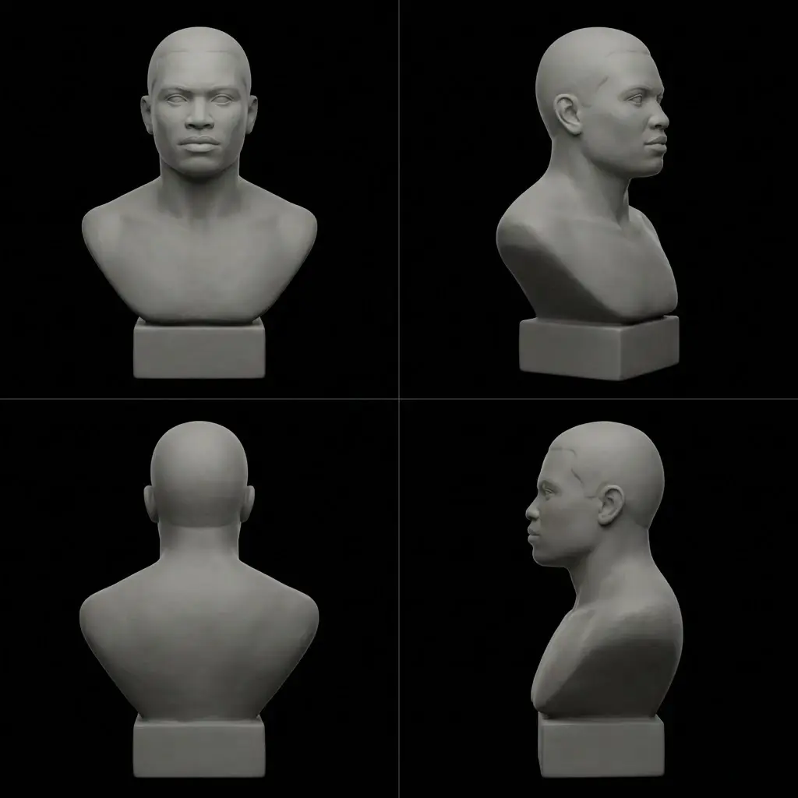
the sculptor's brief to the image model
A portrait bust of a calm adult facing straight forward, head level and gazing ahead, with the face as the front. The piece stands about 100 cm tall, about 58 cm wide at the shoulders and about 40 cm deep, and is widest at the shoulder line roughly a third of the way up. From the bottom, a plain squared plinth about 20 cm tall carries a broad, rounded chest-and-shoulder mass cut off cleanly just below the collarbones, with the upper arms omitted and the shoulders falling smoothly into the plinth. Above that rises a thick, sturdy neck. Over the neck sits an oval head about 30 cm tall, with close-cropped hair carved as one smooth cap, ears pressed flat against the skull, and a bold, simplified nose, brow, lips and chin. From the front the outline reads as a wide, gently sloping trapezoid of shoulders tapering through the neck to the rounded head. From the side the profile shows a strong forehead-nose-chin line, the back of the skull swelling behind the neck, and the chest curving forward over the plinth.
Round C: models
Every run here drew its own reference sheet; open "the reference sheet this sculptor worked from" on a card to see it.
cat
cat · gemini · formed · ref on
round C
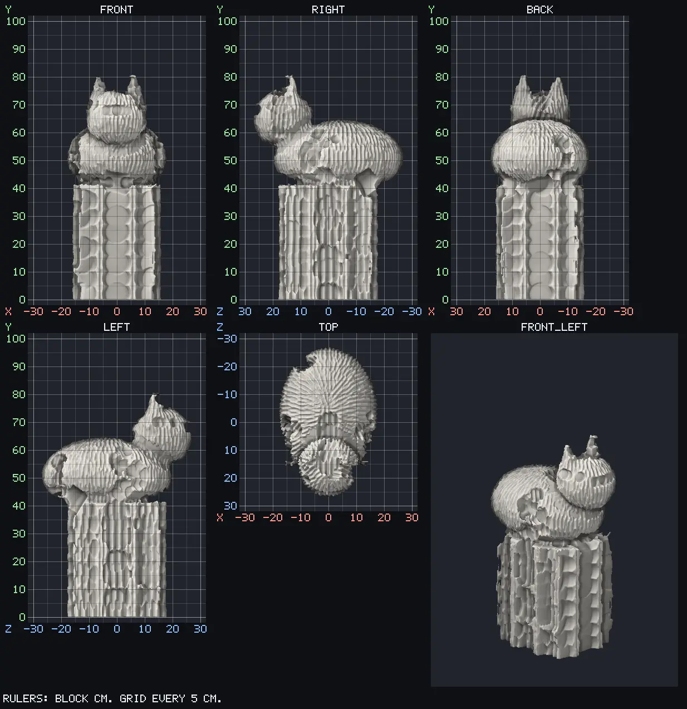
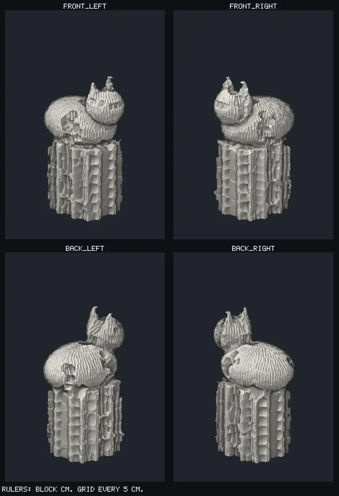
✓ Judge: cat lying down confidence 0.80
A long horizontal oval body with a smaller round head at one end topped by two pointed ears and a face with eyes sits on the block, matching a crouching or lying cat.
- cost
- $0.73 (reference $0.05)
- turns
- 15 of 60, 42 passes, 4,107 strikes
- ended
- finish
- stone left
- 153.4 kg (84.3% removed, 81 cm tall)
- silhouette
- front 0.86 · left 0.88 IoU with the reference
- proud of own form
- mean 0.62 cm, max 2.5 cm
the sculptor's own statement (the model's words about its piece, not a finding)Cat in a Loaf
This piece captures the compact, serene form of a resting cat perched on a plinth. The bold tool marks are left visible to contrast the soft subject with the rigid marble, highlighting the process of the form emerging from the block.
the reference sheet this sculptor worked from
outlines traced1 image drawncost $0.05views agree 0.92 of 1
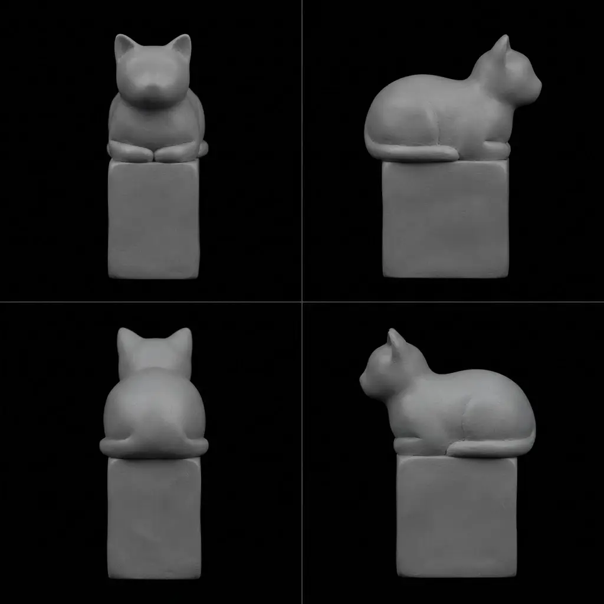
the sculptor's brief to the image model
A cat in a tucked loaf pose resting integrally atop a tall, solid rectangular base, with the cat's face establishing the front. The sculpture is taller than it is wide or deep, occupying a vertical volume where the base and the cat's folded flanks form the widest and deepest points. A sheer, blocky base comprises the lower half, transitioning directly into the smooth, rounded horizontal mass of the cat's body, which is topped by the raised dome of the head. The paws are entirely absorbed into the solid chest, and the thick tail is sculpted flush along the flank with no undercuts or gaps. From the front, the silhouette is a sturdy column capped by a broad face and solid, triangular ears, while the side profile features the straight vertical drop of the pedestal rising into the gentle curve of the cat's back and upright chest.
42 passes
- rough_out turn 2, 1398 strikes
“Removing the bulk of the waste stone outside the front and left outlines of the piece.”
Roughed out to 'reference' with the point chisel, leaving 4 cm: 5 saw cuts took 168,839 cm³ (457.6 kg) off in slabs, 1388 chisel strikes took 51,696 cm³ (140.1 kg) and 5.7 cm³ fell away loose. Outside the margin the stone now stands 0.5 cm proud on average and 2.3 cm at most. In all 220541 cm³ (597.7 kg) came off. 9 offcuts fell to the floor (largest 80595 cm³). 377.9 kg of stone remains. - declare_form turn 3, 1 strikes
“Defining the 3D volumes of the cat and plinth to visualize where the corners and excess stone are in the round.”
Declared form "cat" (4 shapes, blend 3 cm). Inside the block it spans X -18 to 18, Y 0 to 84, Z -24 to 22 and holds about 67.8 litres (184 kg). Nothing was cut. - declare_form turn 4, 1 strikes
“Adjusting the 3D forms to better match the reference dimensions, including separate shapes for the ears and a more accurate body and head.”
Replaced form "cat" (5 shapes, blend 2 cm). Inside the block it spans X -16 to 16, Y 0 to 74, Z -24 to 24 and holds about 56.2 litres (152 kg). Nothing was cut. - rough_out turn 4, 1482 strikes
“Removing the bulk of the excess stone down to a 2 cm margin around the accurate 3D volumes.”
Roughed out to 'cat' with the point chisel, leaving 2 cm: 5 saw cuts took 16,258 cm³ (44.1 kg) off in slabs, 1472 chisel strikes took 42,838 cm³ (116.1 kg) and 4.1 cm³ fell away loose. Outside the margin the stone now stands 0.4 cm proud on average and 1.9 cm at most. In all 59100 cm³ (160.2 kg) came off. 5 offcuts fell to the floor (largest 5185 cm³). 217.8 kg of stone remains. - rough_out turn 6, 1005 strikes
“Tightening the rough out around the 3D form down to a 1 cm margin with the claw chisel.”
Roughed out to 'cat' with the claw chisel, leaving 1 cm: 1002 chisel strikes took 10,160 cm³ (27.5 kg) and 1.7 cm³ fell away loose. Outside the margin the stone now stands 0.4 cm proud on average and 1.5 cm at most. In all 10161 cm³ (27.5 kg) came off. 190.2 kg of stone remains. - chisel turn 8, 10 strikes
“Taking down the right face of the plinth towards the correct width.”
Claw chisel from the right view: It ran on the stone from (x 15.3, y 38.0, z 12.0) to (x 15.3, y 2.0, z 12.0). 9 strikes took 1,114 cm³ (3.0 kg), 3 cm deep and 10 cm wide. In all 1114 cm³ (3.0 kg) came off. 187.2 kg of stone remains. - chisel turn 8, 8 strikes
“Taking down the middle of the right face of the plinth.”
Claw chisel from the right view: It ran on the stone from (x 15.2, y 38.0, z 0.0) to (x 15.1, y 2.0, z 0.0). 7 strikes took 1,080 cm³ (2.9 kg), 3 cm deep and 10 cm wide. In all 1080 cm³ (2.9 kg) came off. 184.3 kg of stone remains. - chisel turn 8, 10 strikes
“Taking down the back of the right face of the plinth.”
Claw chisel from the right view: It ran on the stone from (x 15.2, y 38.0, z -12.0) to (x 15.2, y 2.0, z -12.0). 9 strikes took 1,096 cm³ (3.0 kg), 3 cm deep and 10 cm wide. In all 1096 cm³ (3.0 kg) came off. 181.3 kg of stone remains. - chisel turn 8, 9 strikes
“Taking down the front of the left face of the plinth.”
Claw chisel from the left view: It ran on the stone from (x -15.2, y 38.0, z 12.0) to (x -15.2, y 2.0, z 12.0). 8 strikes took 1,140 cm³ (3.1 kg), 3 cm deep and 10 cm wide. In all 1140 cm³ (3.1 kg) came off. 178.2 kg of stone remains. - chisel turn 8, 8 strikes
“Taking down the middle of the left face of the plinth.”
Claw chisel from the left view: It ran on the stone from (x -15.3, y 38.0, z 0.0) to (x -15.3, y 2.0, z 0.0). 7 strikes took 1,061 cm³ (2.9 kg), 3 cm deep and 10 cm wide. In all 1061 cm³ (2.9 kg) came off. 175.4 kg of stone remains. - chisel turn 8, 10 strikes
“Taking down the back of the left face of the plinth.”
Claw chisel from the left view: It ran on the stone from (x -15.3, y 38.0, z -12.0) to (x -15.4, y 2.0, z -12.0). 9 strikes took 1,136 cm³ (3.1 kg), 3 cm deep and 10 cm wide. In all 1136 cm³ (3.1 kg) came off. 172.3 kg of stone remains. - chisel turn 9, 9 strikes
“Taking down the right side of the front face of the plinth.”
Flat chisel from the front view: It ran on the stone from (x 12.0, y 41.0, z 16.7) to (x 12.0, y 2.0, z 17.4). 8 strikes took 735 cm³, 2 cm deep and 10 cm wide. 5.0 cm³ more fell away loose. In all 740 cm³ (2.01 kg) came off. 3 offcuts fell to the floor (largest 3 cm³). 170.3 kg of stone remains. - chisel turn 9, 9 strikes
“Taking down the middle of the front face of the plinth.”
Flat chisel from the front view: It ran on the stone from (x 0.0, y 41.0, z 15.4) to (x 0.0, y 2.0, z 17.3). 8 strikes took 947 cm³, 2 cm deep and 10 cm wide. In all 947 cm³ (2.57 kg) came off. 167.7 kg of stone remains. - chisel turn 9, 9 strikes
“Taking down the left side of the front face of the plinth.”
Flat chisel from the front view: It ran on the stone from (x -12.0, y 41.0, z 17.1) to (x -12.0, y 2.0, z 17.2). 8 strikes took 666 cm³, 2 cm deep and 10 cm wide. 0.8 cm³ more fell away loose. In all 667 cm³ (1.81 kg) came off. 165.9 kg of stone remains. - chisel turn 9, 9 strikes
“Taking down the right side of the back face of the plinth.”
Flat chisel from the back view: It ran on the stone from (x 12.0, y 41.0, z -12.7) to (x 12.0, y 2.0, z -17.2). 8 strikes took 938 cm³, 2 cm deep and 10 cm wide. 2.2 cm³ more fell away loose. In all 940 cm³ (2.55 kg) came off. 1 offcut fell to the floor (largest 1 cm³). 163.3 kg of stone remains. - chisel turn 9, 9 strikes
“Taking down the middle of the back face of the plinth.”
Flat chisel from the back view: It ran on the stone from (x 0.0, y 41.0, z -18.4) to (x 0.0, y 2.0, z -17.2). 8 strikes took 864 cm³, 2 cm deep and 10 cm wide. In all 864 cm³ (2.34 kg) came off. 161.0 kg of stone remains. - chisel turn 9, 9 strikes
“Taking down the left side of the back face of the plinth.”
Flat chisel from the back view: It ran on the stone from (x -12.0, y 41.0, z -14.2) to (x -12.0, y 2.0, z -17.3). 8 strikes took 875 cm³, 2 cm deep and 10 cm wide. 1.8 cm³ more fell away loose. In all 877 cm³ (2.38 kg) came off. 1 offcut fell to the floor (largest 1 cm³). 158.6 kg of stone remains. - chisel turn 10, 6 strikes
“Rounding the right side of the cat's body.”
Claw chisel from the front view: It ran on the stone from (x 15.0, y 57.0, z 2.7) to (x 15.0, y 45.0, z 2.6). 1 of 6 points along the path missed the stone (first miss at [15, 60]). 5 strikes took 160 cm³, 2 cm deep and 6 cm wide. In all 160 cm³ (0.43 kg) came off. 158.2 kg of stone remains. - chisel turn 10, 6 strikes
“Rounding the left side of the cat's body.”
Claw chisel from the front view: It ran on the stone from (x -15.0, y 57.0, z 3.2) to (x -15.0, y 45.0, z 2.7). 1 of 6 points along the path missed the stone (first miss at [-15, 60]). 5 strikes took 159 cm³, 2 cm deep and 6 cm wide. In all 160 cm³ (0.43 kg) came off. 157.8 kg of stone remains. - chisel turn 10, 6 strikes
“Rounding the back of the cat's body.”
Claw chisel from the left view: It ran on the stone from (x -6.9, y 57.0, z -22.0) to (x -6.6, y 45.0, z -22.0). 1 of 6 points along the path missed the stone (first miss at [-22, 60]). 5 strikes took 168 cm³, 2 cm deep and 6 cm wide. In all 168 cm³ (0.45 kg) came off. 157.3 kg of stone remains. - chisel turn 10, 7 strikes
“Shaping the front of the cat's head and chest.”
Claw chisel from the right view: It ran on the stone from (x 2.1, y 75.0, z 18.0) to (x 9.0, y 60.0, z 18.0). 6 strikes took 187 cm³, 2 cm deep and 6 cm wide. In all 187 cm³ (0.51 kg) came off. 156.8 kg of stone remains. - chisel turn 10, 6 strikes
“Rounding the top of the back.”
Claw chisel from the top view: It ran on the stone from (x 0.0, y 64.0, z 0.0) to (x 0.0, y 74.9, z 15.0). 5 strikes took 329 cm³, 2 cm deep and 8 cm wide. In all 329 cm³ (0.89 kg) came off. 155.9 kg of stone remains. - chisel turn 11, 2 strikes
“Taking down the right side of the head and neck.”
Claw chisel from the front view: It landed at (x 12.0, y 60.0, z 3.3). 5 of 6 points along the path missed the stone (first miss at [12, 75]). 1 strike took 38 cm³, 2 cm deep and 6 cm wide. In all 37.8 cm³ (0.10 kg) came off. 155.8 kg of stone remains. - chisel turn 11, 2 strikes
“Taking down the left side of the head and neck.”
Claw chisel from the front view: It landed at (x -12.0, y 60.0, z 2.8). 5 of 6 points along the path missed the stone (first miss at [-12, 75]). 1 strike took 37 cm³, 2 cm deep and 6 cm wide. In all 36.6 cm³ (0.10 kg) came off. 155.7 kg of stone remains. - chisel turn 11, 5 strikes
“Taking down the lower right side of the cat's body.”
Claw chisel from the front view: It ran on the stone from (x 15.0, y 55.0, z 5.6) to (x 15.0, y 44.6, z -0.2). 1 of 6 points along the path missed the stone (first miss at [15, 42]). 4 strikes took 117 cm³, 2 cm deep and 6 cm wide. In all 117 cm³ (0.32 kg) came off. 155.4 kg of stone remains. - chisel turn 11, 5 strikes
“Taking down the lower left side of the cat's body.”
Claw chisel from the front view: It ran on the stone from (x -15.0, y 55.0, z 1.1) to (x -15.0, y 44.6, z -0.6). 1 of 6 points along the path missed the stone (first miss at [-15, 42]). 4 strikes took 198 cm³, 2 cm deep and 6 cm wide. In all 198 cm³ (0.54 kg) came off. 154.9 kg of stone remains. - chisel turn 11, 4 strikes
“Rounding the lower back of the cat's body.”
Claw chisel from the left view: It ran on the stone from (x -7.7, y 55.0, z -20.0) to (x -9.5, y 44.6, z -20.0). 1 of 6 points along the path missed the stone (first miss at [-20, 42]). 3 strikes took 148 cm³, 2 cm deep and 6 cm wide. 0.6 cm³ more fell away loose. In all 149 cm³ (0.40 kg) came off. 154.5 kg of stone remains. - chisel turn 12, 7 strikes
“Refining the right side of the cat's tucked paws on the chest.”
Flat chisel from the front view: It ran on the stone from (x 8.0, y 42.0, z 11.0) to (x 3.0, y 42.0, z 11.9). 6 strikes in 2 layers took 60 cm³, 1.5 cm deep and 4 cm wide. In all 60 cm³ (0.16 kg) came off. 154.3 kg of stone remains. - chisel turn 12, 6 strikes
“Refining the left side of the cat's tucked paws on the chest.”
Flat chisel from the front view: It ran on the stone from (x -8.0, y 42.0, z 9.9) to (x -3.0, y 42.0, z 12.1). 5 strikes in 2 layers took 62 cm³, 1.5 cm deep and 4 cm wide. In all 62 cm³ (0.17 kg) came off. 154.1 kg of stone remains. - chisel turn 12, 1 strikes
“Refining the back edge of the cat's body on the right side.”
Flat chisel from the right view: None of the 4 points along the path met the stone (first tried [25, 45]): nothing was cut. 154.1 kg of stone remains. - chisel turn 12, 6 strikes
“Refining the back edge of the cat's body on the left side.”
Flat chisel from the left view: It ran on the stone from (x -3.6, y 45.0, z -23.3) to (x -6.0, y 45.0, z -20.0). 1 of 4 points along the path missed the stone (first miss at [-25, 45]). 5 strikes in 2 layers took 38 cm³, 1.5 cm deep and 4 cm wide. In all 37.7 cm³ (0.10 kg) came off. 154.0 kg of stone remains. - chisel turn 12, 3 strikes
“Shaping the top right of the cat's head.”
Flat chisel from the front view: It ran on the stone from (x 8.3, y 75.0, z 15.0) to (x 5.0, y 75.0, z 16.0). 1 of 4 points along the path missed the stone (first miss at [10, 75]). 2 strikes took 19 cm³, 1 cm deep and 4 cm wide. In all 19.3 cm³ (0.05 kg) came off. 154.0 kg of stone remains. - chisel turn 13, 6 strikes
“Taking down the right ear.”
Flat chisel from the front view: It ran on the stone from (x 8.0, y 78.0, z 14.4) to (x 4.7, y 78.0, z 14.9). 1 of 4 points along the path missed the stone (first miss at [3, 78]). 5 strikes in 2 layers took 23 cm³, 1.5 cm deep and 4 cm wide. In all 23.4 cm³ (0.06 kg) came off. 153.9 kg of stone remains. - chisel turn 13, 5 strikes
“Taking down the left ear.”
Flat chisel from the front view: It ran on the stone from (x -6.3, y 78.0, z 15.5) to (x -4.7, y 78.0, z 14.7). 2 of 4 points along the path missed the stone (first miss at [-8, 78]). 4 strikes in 2 layers took 17 cm³, 1.5 cm deep and 4 cm wide. In all 17.1 cm³ (0.05 kg) came off. 153.9 kg of stone remains. - chisel turn 13, 4 strikes
“Flattening the right side of the muzzle.”
Flat chisel from the front view: It ran on the stone from (x 4.0, y 68.0, z 25.5) to (x 0.0, y 68.0, z 26.3). 3 strikes took 20 cm³, 1 cm deep and 4 cm wide. In all 19.8 cm³ (0.05 kg) came off. 153.8 kg of stone remains. - chisel turn 13, 4 strikes
“Flattening the left side of the muzzle.”
Flat chisel from the front view: It ran on the stone from (x -4.0, y 68.0, z 25.0) to (x 0.0, y 68.0, z 25.2). 3 strikes took 23 cm³, 1 cm deep and 4 cm wide. In all 22.9 cm³ (0.06 kg) came off. 153.7 kg of stone remains. - chisel turn 13, 3 strikes
“Rounding the right side of the head.”
Flat chisel from the front view: It ran on the stone from (x 10.0, y 70.0, z 15.4) to (x 8.0, y 70.0, z 20.7). 1 of 3 points along the path missed the stone (first miss at [12, 70]). 2 strikes took 11 cm³, 1 cm deep and 4 cm wide. In all 10.9 cm³ (0.03 kg) came off. 153.7 kg of stone remains. - chisel turn 13, 3 strikes
“Rounding the left side of the head.”
Flat chisel from the front view: It ran on the stone from (x -10.0, y 70.0, z 16.3) to (x -8.0, y 70.0, z 20.7). 1 of 3 points along the path missed the stone (first miss at [-12, 70]). 2 strikes took 18 cm³, 1 cm deep and 4 cm wide. In all 17.9 cm³ (0.05 kg) came off. 153.7 kg of stone remains. - chisel turn 14, 5 strikes
“Taking down the prominent bump on the right side of the body.”
Flat chisel from the front view: It ran on the stone from (x 15.0, y 58.0, z -2.9) to (x 15.0, y 52.0, z 3.4). 2 of 6 points along the path missed the stone (first miss at [15, 62]). 4 strikes took 34 cm³, 1 cm deep and 4 cm wide. In all 33.8 cm³ (0.09 kg) came off. 153.6 kg of stone remains. - chisel turn 14, 5 strikes
“Taking down the prominent bump on the left side of the body.”
Flat chisel from the front view: It ran on the stone from (x -15.0, y 58.0, z -1.2) to (x -15.0, y 52.0, z -0.1). 2 of 6 points along the path missed the stone (first miss at [-15, 62]). 4 strikes took 48 cm³, 1 cm deep and 4 cm wide. In all 48.1 cm³ (0.13 kg) came off. 153.4 kg of stone remains. - chisel turn 14, 2 strikes
“Taking down the bump on the right side of the head.”
Flat chisel from the front view: It ran on the stone from (x 10.0, y 71.7, z 14.0) to (x 10.0, y 70.0, z 14.3). 2 of 4 points along the path missed the stone (first miss at [10, 75]). 1 strike took 7.6 cm³, 1 cm deep and 4 cm wide. In all 7.6 cm³ (0.02 kg) came off. 153.4 kg of stone remains. - chisel turn 14, 2 strikes
“Taking down the bump on the left side of the head.”
Flat chisel from the front view: It landed at (x -10.0, y 70.0, z 14.5). 3 of 4 points along the path missed the stone (first miss at [-10, 75]). 1 strike took 9.9 cm³, 1 cm deep and 4 cm wide. In all 9.9 cm³ (0.03 kg) came off. 153.4 kg of stone remains.
C-cat-gemini-formed-ref-20261109125401-219
cat · fable · formed · ref on
round C
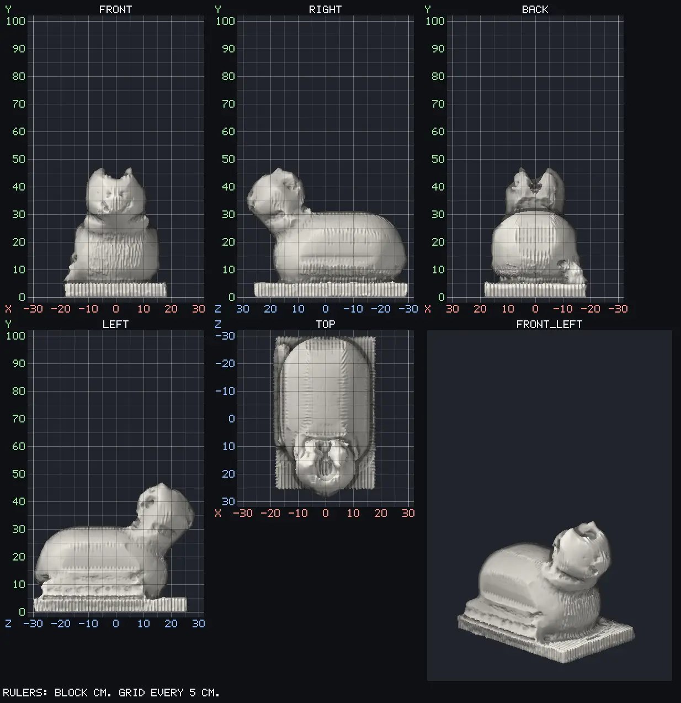
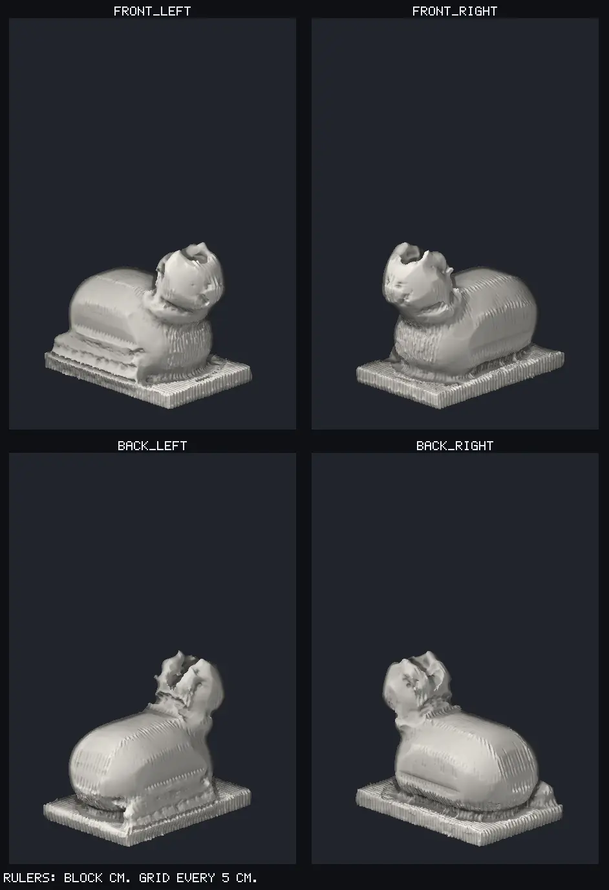
✓ Judge: cat lying down confidence 0.60
A long horizontal loaf-shaped body resting low on a base with a small raised head at one end looks like a crouching animal lying down, most like a cat, not an upright sitting dog or rabbit.
- cost
- $2.05 (reference $0.06)
- turns
- 34 of 60, 39 passes, 5,898 strikes
- ended
- finish
- stone left
- 118.7 kg (87.8% removed, 47 cm tall)
- silhouette
- front 0.86 · left 0.88 IoU with the reference
- proud of own form
- mean 0.56 cm, max 1.9 cm
the sculptor's own statement (the model's words about its piece, not a finding)Loaf
A cat settled into itself: paws folded under, tail drawn along the flank, head up and ears pricked, watching whoever comes near. The body is one soft swell of Carrara marble left with the grain of the claw where fur would lie, rising from a plain slab so the whole piece sits as quietly as the cat does.
the reference sheet this sculptor worked from
outlines traced1 image drawncost $0.06views agree 0.91 of 1
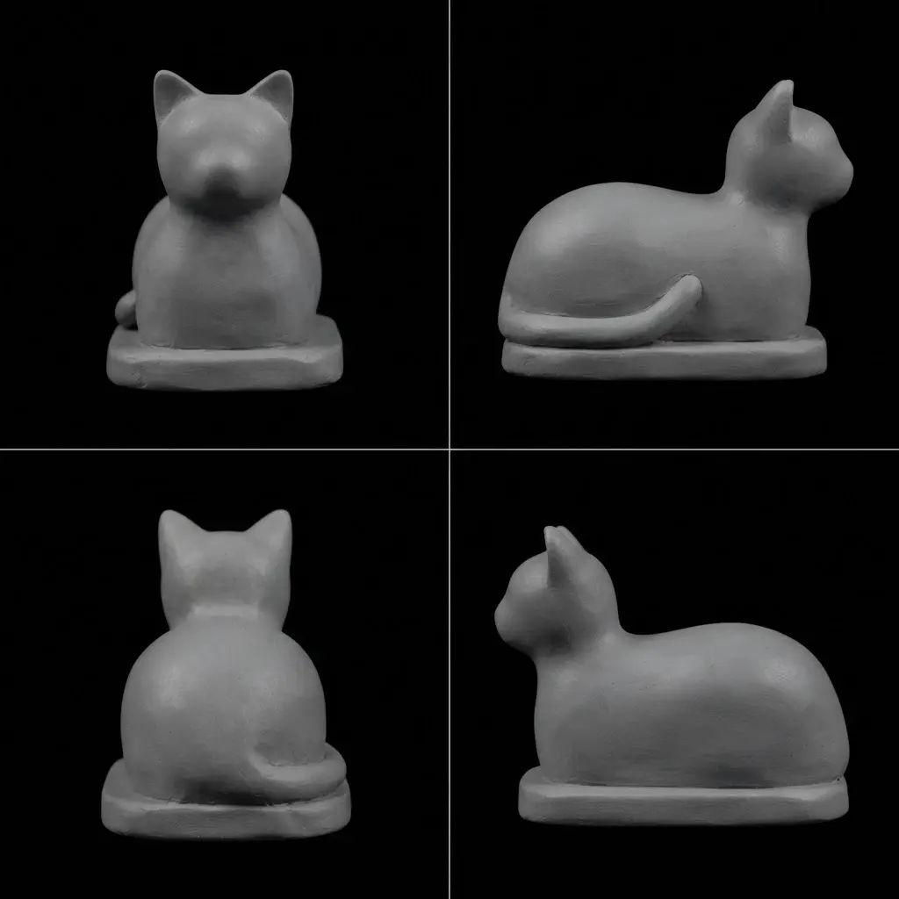
the sculptor's brief to the image model
A domestic cat in a loaf pose: body resting flat on a low rectangular slab base, paws tucked out of sight under the chest, head raised and facing straight forward, ears pricked, tail wrapped along the right flank; the front is the face end. The whole piece is roughly 1.7 times as tall as it is wide and about as deep as it is wide, with the slab base taking up about a tenth of the height, the body the middle half, and the neck and head the upper third; it is widest just above the base through the haunches and the wrapped tail, narrowing steadily upward through the shoulders and neck to the head. From the base up, the masses are: a plain thick slab with slightly rounded corners; a single rounded oblong body with no gap beneath it, the tail a thick raised ridge lying along the right side and curling forward to end against the front of the chest; a short broad neck rising from the top of the body; and a rounded head of about one third the body's width, with two thick triangular ears joined to the skull with stone filling the space between them. Seen from the front the outline is a wide rounded base mass narrowing to a round head topped by two solid triangular ears; seen from the side the outline is a long low rounded hump stepping up to a vertical neck and a head that sits over the front edge of the body, with the tail ridge breaking the lower line on the right side only.
39 passes
- saw turn 3, 2 strikes
“Taking the whole top half of the block off in one cut; the cat sits low and this stone is only in the way.”
Sawed from [-30, 53] to [30, 53] in the front view, discarding everything above the line: 169,200 cm³ (458.5 kg) fell away in 1 piece, 47% of the stone that was there. In all 169200 cm³ (458.5 kg) came off. 1 offcut fell to the floor (largest 169200 cm³). 517.1 kg of stone remains. - rough_out turn 4, 1414 strikes
“Knocking the block down to the cat's rough outline from front and side, leaving a good hand's width of stone all round.”
Roughed out to 'reference' with the point chisel, leaving 3 cm: 6 saw cuts took 85,905 cm³ (232.8 kg) off in slabs, 1403 chisel strikes took 31,473 cm³ (85.3 kg) and 19 cm³ fell away loose. Outside the margin the stone now stands 0.4 cm proud on average and 2.2 cm at most. In all 117397 cm³ (318.1 kg) came off. 10 offcuts fell to the floor (largest 34517 cm³). 198.9 kg of stone remains. - rough_out turn 6, 1008 strikes
“Closing in on the cat's outline with the claw, leaving a finger's width for the final modelling.”
Roughed out to 'reference' with the claw chisel, leaving 1.5 cm: 1004 chisel strikes took 13,078 cm³ (35.4 kg) and 13 cm³ fell away loose. Outside the margin the stone now stands 0.4 cm proud on average and 1.5 cm at most. In all 13091 cm³ (35.5 kg) came off. 4 offcuts fell to the floor (largest 2 cm³). 163.4 kg of stone remains. - declare_form turn 7, 1 strikes
“Setting out the cat as rounded masses: a long loaf of a body, a chest under the chin, a round head with the ear block on top, the tail hugging the flank, all on a flat slab.”
Declared form "cat" (7 shapes, blend 3 cm). Inside the block it spans X -20 to 16, Y 0 to 48, Z -28 to 28 and holds about 40.7 litres (110 kg). Nothing was cut. - rough_out turn 8, 1069 strikes
“Rounding the square-sectioned block into the soft loaf of the body and the ball of the head, still leaving a little stone for modelling.”
Roughed out to 'cat' with the claw chisel, leaving 1.5 cm: 1065 chisel strikes took 9,011 cm³ (24.4 kg) and 3.3 cm³ fell away loose. Outside the margin the stone now stands 0.2 cm proud on average and 1.4 cm at most. In all 9014 cm³ (24.4 kg) came off. 139.0 kg of stone remains. - rough_out turn 10, 940 strikes
“Bringing the whole surface down close to the final rounded forms so the body reads as one soft loaf.”
Roughed out to 'cat' with the claw chisel, leaving 0.6 cm: 937 chisel strikes took 4,710 cm³ (12.8 kg) and 0.7 cm³ fell away loose. Outside the margin the stone now stands 0.3 cm proud on average and 1.3 cm at most. In all 4711 cm³ (12.8 kg) came off. 126.3 kg of stone remains. - chisel turn 11, 6 strikes
“Cutting the dip between the two ears so they stand up as separate points on the crown.”
Point chisel from the top view: It ran on the stone from (x 0.0, y 42.3, z 9.0) to (x 0.0, y 45.3, z 19.0). 5 strikes took 304 cm³, 4.5 cm deep and 7 cm wide. In all 304 cm³ (0.82 kg) came off. 125.4 kg of stone remains. - chisel turn 12, 59 strikes
“Scoring the line where the tail lies against the flank so it reads as a separate wrapped tail.”
Claw chisel from the left view: It ran on the stone from (x -9.4, y 12.0, z -26.0) to (x -15.6, y 14.0, z 10.0). 58 strikes in 2 layers took 122 cm³, 1.5 cm deep and 2.5 cm wide. In all 122 cm³ (0.33 kg) came off. 125.1 kg of stone remains. - chisel turn 13, 23 strikes
“Marking the nape, the little hollow where the back of the head meets the shoulders.”
Claw chisel from the top view: It ran on the stone from (x -8.0, y 32.3, z 7.0) to (x 8.0, y 32.6, z 7.0). 22 strikes in 2 layers took 100 cm³, 2 cm deep and 3 cm wide. In all 99.7 cm³ (0.27 kg) came off. 124.8 kg of stone remains. - chisel turn 15, 16 strikes
“Taking the outer corner off the left ear so it tapers to a point rather than a block.”
Claw chisel from the top view: It ran on the stone from (x -9.5, y 41.9, z 9.0) to (x -9.5, y 49.0, z 19.0). 15 strikes in 3 layers took 57 cm³, 3 cm deep and 3 cm wide. In all 57.4 cm³ (0.16 kg) came off. 124.7 kg of stone remains. - chisel turn 16, 23 strikes
“Same on the right ear, so the pair match.”
Claw chisel from the top view: It ran on the stone from (x 9.5, y 41.4, z 9.0) to (x 9.5, y 43.9, z 19.0). 22 strikes in 3 layers took 93 cm³, 3 cm deep and 3 cm wide. In all 92.7 cm³ (0.25 kg) came off. 124.4 kg of stone remains. - chisel turn 17, 4 strikes
“Setting a shallow hollow for the left eye socket so the brow and cheek come forward around it.”
Claw chisel from the front view: It ran on the stone from (x -7.0, y 38.0, z 25.7) to (x -3.0, y 37.5, z 27.7). 3 strikes took 16 cm³, 1.2 cm deep and 3 cm wide. In all 16.3 cm³ (0.04 kg) came off. 124.4 kg of stone remains. - chisel turn 18, 5 strikes
“And the right eye socket to match.”
Claw chisel from the front view: It ran on the stone from (x 3.0, y 37.5, z 27.7) to (x 7.0, y 38.0, z 26.0). 4 strikes took 16 cm³, 1.2 cm deep and 3 cm wide. In all 15.9 cm³ (0.04 kg) came off. 124.3 kg of stone remains. - chisel turn 20, 60 strikes
“Sloping the outer edge of the left ear down toward the cheek so the ear comes to a tip.”
Claw chisel from the top view: It ran on the stone from (x -8.3, y 39.6, z 10.0) to (x -8.3, y 48.2, z 18.0). 59 strikes in 5 layers took 39 cm³, 2.5 cm deep and 1.5 cm wide. In all 39.2 cm³ (0.11 kg) came off. 124.2 kg of stone remains. - chisel turn 23, 59 strikes
“Sloping the outer edge of the right ear down to the cheek so both ears come to matching tips.”
Claw chisel from the top view: It ran on the stone from (x 8.3, y 41.9, z 10.0) to (x 8.3, y 46.0, z 18.0). 58 strikes in 5 layers took 39 cm³, 2.5 cm deep and 1.5 cm wide. In all 39.1 cm³ (0.11 kg) came off. 124.1 kg of stone remains. - chisel turn 23, 12 strikes
“Cutting under the left cheek so the head lifts clear of the chest instead of merging into it.”
Claw chisel from the front view: It ran on the stone from (x -11.3, y 30.9, z 14.4) to (x -6.0, y 27.0, z 21.5). 1 of 7 points along the path missed the stone (first miss at [-12, 32]). 11 strikes in 2 layers took 38 cm³, 1.5 cm deep and 3 cm wide. In all 38.3 cm³ (0.10 kg) came off. 124.0 kg of stone remains. - chisel turn 23, 12 strikes
“The same under the right cheek, so the jaw line reads on both sides.”
Claw chisel from the front view: It ran on the stone from (x 11.3, y 30.9, z 11.6) to (x 6.0, y 27.0, z 21.6). 1 of 7 points along the path missed the stone (first miss at [12, 32]). 11 strikes in 2 layers took 43 cm³, 1.5 cm deep and 3 cm wide. In all 42.8 cm³ (0.12 kg) came off. 123.9 kg of stone remains. - chisel turn 24, 5 strikes
“A shallow furrow beside the muzzle so the nose and whisker pad stand forward of the left cheek.”
Claw chisel from the front view: It ran on the stone from (x -7.0, y 36.0, z 26.2) to (x -3.0, y 31.0, z 26.7). 4 strikes took 14 cm³, 1 cm deep and 2.5 cm wide. In all 13.7 cm³ (0.04 kg) came off. 123.9 kg of stone remains. - chisel turn 24, 6 strikes
“And the matching furrow on the right, framing the muzzle.”
Claw chisel from the front view: It ran on the stone from (x 7.0, y 36.0, z 25.9) to (x 3.0, y 31.0, z 26.7). 5 strikes took 16 cm³, 1 cm deep and 2.5 cm wide. In all 15.7 cm³ (0.04 kg) came off. 123.8 kg of stone remains. - chisel turn 25, 70 strikes
“Rounding the outer top edge of the tail so it reads as a soft tube lying against the flank, not a step.”
Claw chisel from the top view: It ran on the stone from (x -18.5, y 8.8, z -26.0) to (x -18.0, y 9.6, z 10.0). 69 strikes in 2 layers took 102 cm³, 1.5 cm deep and 2 cm wide. In all 102 cm³ (0.28 kg) came off. 123.5 kg of stone remains. - chisel turn 25, 90 strikes
“A light undercut where the tail meets the slab, so its underside curves away and the tail sits on the base rather than growing out of it.”
Claw chisel from the left view: It ran on the stone from (x -18.1, y 5.0, z -26.0) to (x -12.5, y 5.0, z 12.0). 89 strikes in 2 layers took 52 cm³, 1 cm deep and 1.5 cm wide. In all 52.2 cm³ (0.14 kg) came off. 123.4 kg of stone remains. - rasp turn 26, 37 strikes
“Smoothing the ridge of the back so the loaf reads as one soft swell.”
Rasp from the top view: 4 passes, 36 strokes 14 cm wide, from (x 0.0, y 21.3, z -27.0) to (x 0.0, y 31.6, z 6.0), wore off 145 cm³ of high spots. In all 145 cm³ (0.39 kg) came off. 123.0 kg of stone remains. - rasp turn 26, 49 strikes
“Softening the left shoulder of the loaf where it turns down to the flank.”
Rasp from the top view: 4 passes, 48 strokes 10 cm wide, from (x -11.0, y 4.6, z -27.0) to (x -11.0, y 26.5, z 6.0), wore off 74 cm³ of high spots. In all 73.9 cm³ (0.20 kg) came off. 122.8 kg of stone remains. - rasp turn 26, 49 strikes
“And the right shoulder to match.”
Rasp from the top view: 4 passes, 48 strokes 10 cm wide, from (x 11.0, y 4.8, z -27.0) to (x 11.0, y 26.7, z 6.0), wore off 76 cm³ of high spots. In all 76 cm³ (0.21 kg) came off. 122.6 kg of stone remains. - rasp turn 26, 45 strikes
“Taking the claw marks off the right flank so the fur surface rolls smoothly.”
Rasp from the right view: 4 passes, 44 strokes 14 cm wide, from (x 9.3, y 15.0, z -27.0) to (x 13.5, y 15.0, z 14.0), wore off 154 cm³ of high spots. In all 154 cm³ (0.42 kg) came off. 122.2 kg of stone remains. - rasp turn 28, 53 strikes
“Smoothing the left flank above the tail so the fur surface rolls as cleanly as the right side.”
Rasp from the left view: 4 passes, 52 strokes 12 cm wide, from (x -9.9, y 18.0, z -27.0) to (x -12.8, y 17.0, z 14.0), wore off 133 cm³ of high spots. In all 133 cm³ (0.36 kg) came off. 121.8 kg of stone remains. - rasp turn 28, 89 strikes
“Rounding the tail into a smooth tube along the flank.”
Rasp from the left view: 4 passes, 88 strokes 6 cm wide, from (x -17.5, y 8.0, z -25.2) to (x -12.5, y 8.0, z 12.0), wore off 103 cm³ of high spots. 1 of 23 points along the path missed the stone. In all 103 cm³ (0.28 kg) came off. 121.5 kg of stone remains. - rasp turn 28, 85 strikes
“Softening the face and cheeks into a rounder head while keeping the eye and muzzle hollows.”
Rasp from the front view: 4 passes, 84 strokes 8 cm wide, from (x -9.0, y 30.0, z 20.0) to (x 0.0, y 28.0, z 25.2), wore off 140 cm³ of high spots. In all 140 cm³ (0.38 kg) came off. 121.2 kg of stone remains. - rasp turn 28, 41 strikes
“Rounding the right side of the head so it reads as a ball rather than a block.”
Rasp from the right view: 4 passes, 40 strokes 10 cm wide, from (x 11.1, y 30.0, z 10.0) to (x 5.7, y 36.0, z 26.0), wore off 98 cm³ of high spots. In all 98.4 cm³ (0.27 kg) came off. 120.9 kg of stone remains. - rasp turn 28, 41 strikes
“And the left side of the head to match.”
Rasp from the left view: 4 passes, 40 strokes 10 cm wide, from (x -11.0, y 30.0, z 10.0) to (x -5.3, y 36.0, z 26.0), wore off 89 cm³ of high spots. In all 88.5 cm³ (0.24 kg) came off. 120.7 kg of stone remains. - rasp turn 30, 66 strikes
“Cleaning the jagged fronts of the ears so they read as two neat pricked triangles.”
Rasp from the front view: 4 passes, 65 strokes 5 cm wide, from (x -9.0, y 41.0, z 20.4) to (x 9.0, y 41.0, z 19.8), wore off 62 cm³ of high spots. 5 of 22 points along the path missed the stone. In all 62.3 cm³ (0.17 kg) came off. 120.5 kg of stone remains. - rasp turn 30, 109 strikes
“Smoothing the crown and the tops of the ears from above.”
Rasp from the top view: 4 passes, 108 strokes 5 cm wide, from (x -9.0, y 40.1, z 9.0) to (x 9.0, y 30.9, z 9.0), wore off 90 cm³ of high spots. In all 90.1 cm³ (0.24 kg) came off. 120.2 kg of stone remains. - rasp turn 30, 91 strikes
“Taking the rough marks off the back of the head and ears so the skull rounds into the nape.”
Rasp from the back view: 4 passes, 90 strokes 6 cm wide, from (x -9.0, y 30.0, z 6.2) to (x 9.0, y 30.0, z 8.0), wore off 108 cm³ of high spots. 7 of 31 points along the path missed the stone. In all 108 cm³ (0.29 kg) came off. 120.0 kg of stone remains. - rasp turn 31, 101 strikes
“Smoothing the chest and tucked paws at the front so they swell softly under the chin.”
Rasp from the front view: 4 passes, 100 strokes 10 cm wide, from (x -13.0, y 8.0, z 11.5) to (x 0.0, y 6.0, z 17.0), wore off 189 cm³ of high spots. In all 189 cm³ (0.51 kg) came off. 119.4 kg of stone remains. - rasp turn 31, 28 strikes
“Taking the spike off the right ear tip so it is a firm point and not a splinter.”
Rasp from the right view: 3 passes, 27 strokes 5 cm wide, from (x 4.9, y 40.0, z 8.0) to (x 7.9, y 42.0, z 19.0), wore off 24 cm³ of high spots. 3 of 12 points along the path missed the stone. In all 23.5 cm³ (0.06 kg) came off. 119.4 kg of stone remains. - rasp turn 31, 28 strikes
“The same on the left ear tip.”
Rasp from the left view: 3 passes, 27 strokes 5 cm wide, from (x -5.2, y 40.0, z 8.0) to (x -9.4, y 42.0, z 19.0), wore off 22 cm³ of high spots. 3 of 12 points along the path missed the stone. In all 22.1 cm³ (0.06 kg) came off. 119.3 kg of stone remains. - chisel turn 33, 5 strikes
“Deepening the hollow of the crown between the ears so they stand up pricked and alert.”
Claw chisel from the top view: It ran on the stone from (x 0.0, y 39.7, z 10.0) to (x 0.0, y 40.3, z 18.0). 4 strikes took 136 cm³, 2 cm deep and 5 cm wide. In all 136 cm³ (0.37 kg) came off. 118.9 kg of stone remains. - rasp turn 33, 70 strikes
“Softening the line where the tail lies against the flank so it tucks in naturally.”
Rasp from the left view: 3 passes, 69 strokes 6 cm wide, from (x -6.6, y 11.0, z -27.0) to (x -13.9, y 12.0, z 12.0), wore off 64 cm³ of high spots. In all 63.7 cm³ (0.17 kg) came off. 118.8 kg of stone remains. - rasp turn 34, 27 strikes
“A last light pass over the crown to soften the hollow between the ears.”
Rasp from the top view: 2 passes, 26 strokes 4 cm wide, from (x -7.0, y 43.8, z 14.0) to (x 7.0, y 44.6, z 14.0), wore off 17 cm³ of high spots. In all 17.4 cm³ (0.05 kg) came off. 118.7 kg of stone remains.
C-cat-fable-formed-ref-20261109125401-6c2
cat · sol · formed · ref on
round C
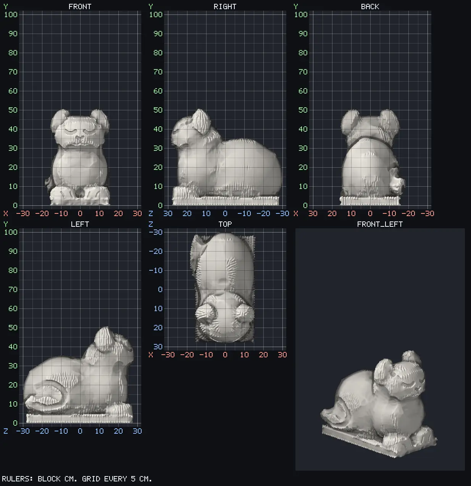
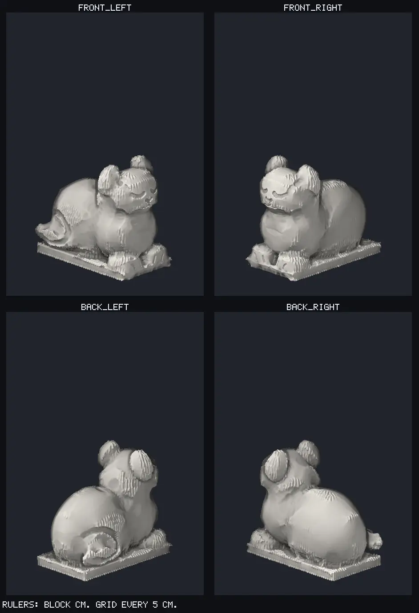
✓ Judge: cat lying down confidence 0.60
The long horizontal body resting on the ground with front paws forward, a small head with two rounded ears, a closed-eye face and a curled tail along the side read as a lying cat, not a rabbit or sitting dog.
- cost
- $0.58 (reference $0.04)
- turns
- 58 of 60, 58 passes, 7,844 strikes
- ended
- finish
- stone left
- 132 kg (86.5% removed, 51 cm tall)
- silhouette
- front 0.87 · left 0.82 IoU with the reference
- proud of own form
- mean 0.53 cm, max 1.8 cm
the sculptor's own statement (the model's words about its piece, not a finding)A Quiet Loaf
This cat rests with its paws tucked beneath its chest, ears alert despite its stillness. Its tail curls along the haunch, while traces of the chisel remain in the marble like the texture of fur.
the reference sheet this sculptor worked from
outlines traced1 image drawncost $0.04views agree 0.91 of 1
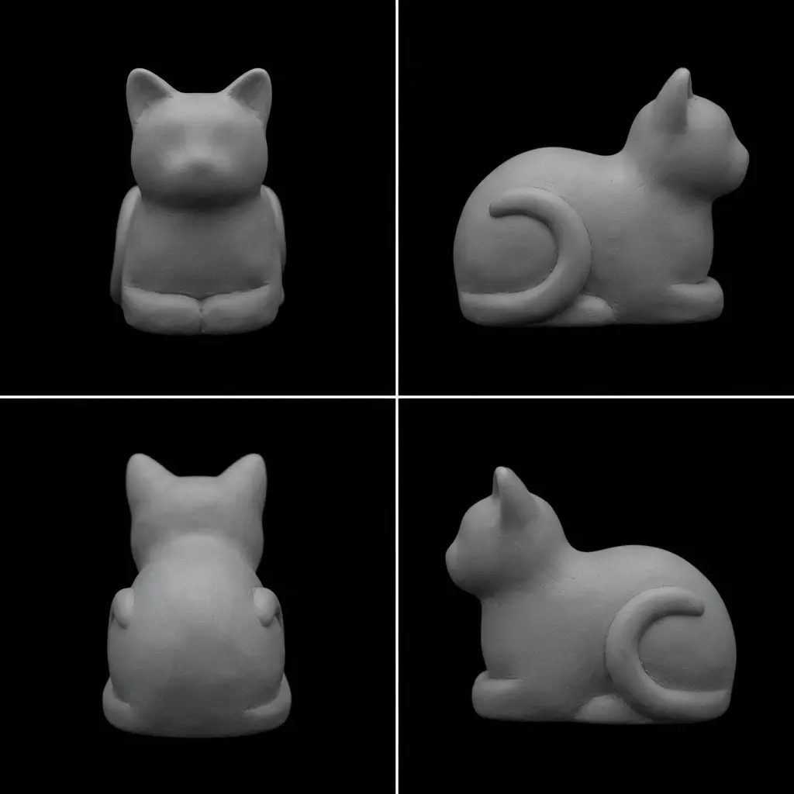
the sculptor's brief to the image model
A cat sits in a compact loaf pose, with its paws tucked beneath its chest, head raised, and face and chest defining the front. The piece is nearly twice as tall as it is wide or deep, widest across the rounded body just above a low, integral base. From the base, the body rises as one solid oval mass into a broad chest, short neck, and large head with two sturdy triangular ears. From the front, the outline reads as paired ears above a rounded head and tucked, unbroken body; from the side, a gently arched back slopes to the haunch, with the tail shown as a broad raised curve pressed against the flank.
58 passes
- rough_out turn 4, 1276 strikes
“I am removing the tall empty marble above and around the loaf while leaving a broad cushion around the ears and body.”
Roughed out to 'reference' with the point chisel, leaving 4 cm: 4 saw cuts took 243,437 cm³ (659.7 kg) off in slabs, 1267 chisel strikes took 26,234 cm³ (71.1 kg) and 12 cm³ fell away loose. Outside the margin the stone now stands 0.5 cm proud on average and 2.3 cm at most. In all 269682 cm³ (730.8 kg) came off. 7 offcuts fell to the floor (largest 188595 cm³). 244.8 kg of stone remains. - declare_form turn 6, 1 strikes
“I am laying out a rounded rump, upright chest, full cheeks, two short ears, and paws that remain rooted to the base.”
Declared form "Loaf cat and grounded paws" (10 shapes, blend 1.2 cm). Inside the block it spans X -18 to 14, Y 0 to 50, Z -30 to 28 and holds about 45 litres (122 kg). Nothing was cut. - rough_out turn 8, 1285 strikes
“I am bringing the broad rough shell closer to the rounded body and leaving enough stone to shape the paws and ears by hand.”
Roughed out to 'Loaf cat and grounded paws' with the claw chisel, leaving 1.8 cm: 3 saw cuts took 6,189 cm³ (16.8 kg) off in slabs, 1276 chisel strikes took 23,174 cm³ (62.8 kg) and 3.1 cm³ fell away loose. Outside the margin the stone now stands 0.3 cm proud on average and 1.4 cm at most. In all 29366 cm³ (79.6 kg) came off. 5 offcuts fell to the floor (largest 3264 cm³). 165.2 kg of stone remains. - rough_out turn 11, 963 strikes
“I am settling the chest and haunches into their final rounded masses while saving the cheeks and feet for finer cuts.”
Roughed out to 'Loaf cat and grounded paws' with the claw chisel, leaving 0.5 cm: 960 chisel strikes took 9,813 cm³ (26.6 kg) and 1.5 cm³ fell away loose. Outside the margin the stone now stands 0.3 cm proud on average and 1.3 cm at most. In all 9815 cm³ (26.6 kg) came off. 138.6 kg of stone remains. - rasp turn 13, 41 strikes
“I am easing the chisel ridges from the cheeks so the face can hold clear, small features.”
Rasp from the front view: 4 passes, 40 strokes 9 cm wide, from (x -10.0, y 35.0, z 24.3) to (x 10.0, y 36.0, z 24.4), wore off 63 cm³ of high spots. In all 63.1 cm³ (0.17 kg) came off. 138.4 kg of stone remains. - rasp turn 13, 57 strikes
“I am smoothing the long curve of the back and shoulders without flattening the raised tail.”
Rasp from the left view: 4 passes, 56 strokes 11 cm wide, from (x -10.5, y 17.0, z -24.0) to (x -14.0, y 22.0, z 7.0), wore off 123 cm³ of high spots. In all 123 cm³ (0.33 kg) came off. 138.1 kg of stone remains. - rasp turn 13, 77 strikes
“I am rounding the far haunch to make the loaf read as one warm, settled body.”
Rasp from the right view: 4 passes, 76 strokes 10 cm wide, from (x 9.9, y 17.0, z -25.0) to (x 13.4, y 22.0, z 18.0), wore off 133 cm³ of high spots. In all 133 cm³ (0.36 kg) came off. 137.7 kg of stone remains. - chisel turn 14, 15 strikes
“I am cutting a quiet almond-shaped left eye so the cat begins to look toward us.”
Flat chisel from the front view: It ran on the stone from (x -8.0, y 39.0, z 25.2) to (x -2.5, y 39.0, z 27.4). 14 strikes in 2 layers took 11 cm³, 0.8 cm deep and 1.9 cm wide. In all 10.7 cm³ (0.03 kg) came off. 137.7 kg of stone remains. - chisel turn 14, 15 strikes
“I am placing the matching right eye level with the first, keeping the expression calm.”
Flat chisel from the front view: It ran on the stone from (x 2.5, y 39.0, z 27.5) to (x 8.0, y 39.0, z 25.2). 14 strikes in 2 layers took 10 cm³, 0.8 cm deep and 1.9 cm wide. In all 10.4 cm³ (0.03 kg) came off. 137.7 kg of stone remains. - chisel turn 16, 13 strikes
“I am setting a small triangular nose below the eyes and leaving its bridge proud.”
Flat chisel from the front view: It ran on the stone from (x -1.6, y 35.7, z 28.3) to (x 1.6, y 35.7, z 28.3). 12 strikes in 2 layers took 6.1 cm³, 0.85 cm deep and 1.5 cm wide. In all 6.1 cm³ (0.02 kg) came off. 137.6 kg of stone remains. - chisel turn 17, 36 strikes
“I am parting the left whisker pad beneath the nose with a light curved mouth line.”
Flat chisel from the front view: It ran on the stone from (x 0.0, y 34.0, z 27.9) to (x -3.5, y 32.1, z 27.5). 35 strikes in 3 layers took 2.7 cm³, 0.6 cm deep and 0.85 cm wide. In all 2.7 cm³ (0.01 kg) came off. 137.6 kg of stone remains. - chisel turn 17, 30 strikes
“I am turning the other side of the mouth up slightly for a contented loaf.”
Flat chisel from the front view: It ran on the stone from (x 0.4, y 33.8, z 28.0) to (x 3.8, y 32.1, z 27.1). 29 strikes in 3 layers took 2.7 cm³, 0.6 cm deep and 0.85 cm wide. In all 3 cm³ (0.01 kg) came off. 137.6 kg of stone remains. - chisel turn 18, 15 strikes
“I am hollowing the inner left ear without weakening its upright rim.”
Flat chisel from the front view: It ran on the stone from (x -11.2, y 47.0, z 16.8) to (x -9.0, y 41.5, z 23.7). 14 strikes in 2 layers took 13 cm³, 0.75 cm deep and 2 cm wide. In all 13.4 cm³ (0.04 kg) came off. 137.6 kg of stone remains. - chisel turn 18, 15 strikes
“I am hollowing the inner right ear to catch a little shadow against its rim.”
Flat chisel from the front view: It ran on the stone from (x 11.2, y 47.0, z 17.2) to (x 9.0, y 41.5, z 23.9). 14 strikes in 2 layers took 12 cm³, 0.75 cm deep and 2 cm wide. In all 11.5 cm³ (0.03 kg) came off. 137.6 kg of stone remains. - chisel turn 18, 70 strikes
“I am tracing the inside turn of the tail around the haunch so its curl rises visibly above the loaf.”
Claw chisel from the left view: It ran on the stone from (x -10.7, y 19.0, z -23.0) to (x -17.7, y 10.0, z -23.0). 69 strikes in 2 layers took 112 cm³, 1.4 cm deep and 2.2 cm wide. In all 112 cm³ (0.30 kg) came off. 137.3 kg of stone remains. - rasp turn 23, 109 strikes
“I am taking the hard chisel ridges off the open flank so the round body catches light evenly.”
Rasp from the right view: 6 passes, 108 strokes 11 cm wide, from (x 9.5, y 13.0, z -25.0) to (x 14.5, y 16.0, z 14.0), wore off 144 cm³ of high spots. In all 144 cm³ (0.39 kg) came off. 136.9 kg of stone remains. - rasp turn 23, 91 strikes
“I am smoothing the broad rump without cutting through the shallow arch of its back.”
Rasp from the back view: 6 passes, 90 strokes 12 cm wide, from (x -8.0, y 12.0, z -26.2) to (x 8.0, y 12.0, z -26.2), wore off 231 cm³ of high spots. In all 231 cm³ (0.63 kg) came off. 136.2 kg of stone remains. - rasp turn 23, 91 strikes
“I am blending the chest into the tucked paws while keeping the face and eye lines untouched.”
Rasp from the front view: 5 passes, 90 strokes 8 cm wide, from (x -10.0, y 28.0, z 19.6) to (x 10.0, y 28.0, z 19.7), wore off 109 cm³ of high spots. In all 109 cm³ (0.30 kg) came off. 135.9 kg of stone remains. - chisel turn 25, 5 strikes
“I am setting the centre of the tail's curl back into the haunch so its raised outer loop becomes clear.”
Claw chisel from the left view: It ran on the stone from (x -16.6, y 15.0, z -22.0) to (x -16.9, y 15.0, z -13.0). 4 strikes took 57 cm³, 1.2 cm deep and 5.5 cm wide. In all 57.4 cm³ (0.16 kg) came off. 135.8 kg of stone remains. - rasp turn 25, 91 strikes
“I am smoothing the two paws and the low plinth while retaining their rounded outline.”
Rasp from the front view: 6 passes, 90 strokes 6 cm wide, from (x -12.0, y 6.0, z 28.0) to (x 12.0, y 6.0, z 27.8), wore off 104 cm³ of high spots. In all 104 cm³ (0.28 kg) came off. 135.5 kg of stone remains. - rasp turn 25, 61 strikes
“I am softening the rough spine into a continuous curve toward the neck.”
Rasp from the top view: 6 passes, 60 strokes 12 cm wide, from (x -7.0, y 26.0, z -23.0) to (x 3.0, y 42.3, z 7.0), wore off 190 cm³ of high spots. In all 190 cm³ (0.51 kg) came off. 135.0 kg of stone remains. - rasp turn 27, 103 strikes
“I am calming the forehead between the ears, away from the carved eyes.”
Rasp from the front view: 6 passes, 102 strokes 3 cm wide, from (x -7.0, y 44.0, z 23.3) to (x 7.0, y 44.0, z 22.5), wore off 9.0 cm³ of high spots. In all 9 cm³ (0.02 kg) came off. 135.0 kg of stone remains. - rasp turn 27, 55 strikes
“I am making the inset inside the tail smooth against its rough raised curl.”
Rasp from the left view: 6 passes, 54 strokes 4 cm wide, from (x -14.2, y 15.0, z -21.0) to (x -16.2, y 14.0, z -12.0), wore off 13 cm³ of high spots. In all 13.2 cm³ (0.04 kg) came off. 134.9 kg of stone remains. - rasp turn 27, 61 strikes
“I am rounding the muzzle and near cheek into the neck on the unmarked side.”
Rasp from the right view: 6 passes, 60 strokes 6 cm wide, from (x 12.6, y 34.0, z 13.0) to (x 8.9, y 35.0, z 25.0), wore off 34 cm³ of high spots. In all 34.2 cm³ (0.09 kg) came off. 134.8 kg of stone remains. - chisel turn 28, 17 strikes
“I am separating the outer toes with a shallow line rather than cutting the paw away.”
Flat chisel from the front view: It ran on the stone from (x -10.0, y 7.0, z 27.2) to (x -8.5, y 4.5, z 27.6). 16 strikes in 2 layers took 1.1 cm³, 0.4 cm deep and 0.8 cm wide. In all 1.1 cm³ (0.00 kg) came off. 134.8 kg of stone remains. - chisel turn 28, 15 strikes
“I am giving the tucked left paw a second light toe crease.”
Flat chisel from the front view: It ran on the stone from (x -5.0, y 7.0, z 27.1) to (x -4.0, y 4.5, z 27.2). 14 strikes in 2 layers took 0.9 cm³, 0.4 cm deep and 0.8 cm wide. In all 0.9 cm³ (0.00 kg) came off. 134.8 kg of stone remains. - chisel turn 28, 15 strikes
“I am matching the little toe creases on the right paw.”
Flat chisel from the front view: It ran on the stone from (x 5.0, y 7.0, z 27.0) to (x 4.0, y 4.5, z 27.2). 14 strikes in 2 layers took 1.0 cm³, 0.4 cm deep and 0.8 cm wide. In all 1 cm³ (0.00 kg) came off. 134.8 kg of stone remains. - chisel turn 28, 17 strikes
“I am cutting the final short toe line while preserving the solid plinth underneath.”
Flat chisel from the front view: It ran on the stone from (x 10.0, y 7.0, z 27.4) to (x 8.5, y 4.5, z 27.8). 16 strikes in 2 layers took 1.1 cm³, 0.4 cm deep and 0.8 cm wide. In all 1.1 cm³ (0.00 kg) came off. 134.8 kg of stone remains. - rasp turn 31, 109 strikes
“I am rounding the left cheek and outer ear while leaving the inset ear and eye sharp.”
Rasp from the front view: 6 passes, 108 strokes 3 cm wide, from (x -10.0, y 33.0, z 23.6) to (x -10.0, y 48.0, z 16.7), wore off 13 cm³ of high spots. In all 12.8 cm³ (0.03 kg) came off. 134.8 kg of stone remains. - rasp turn 31, 109 strikes
“I am matching the cheek and ear rim on the other side without disturbing the expression.”
Rasp from the front view: 6 passes, 108 strokes 3 cm wide, from (x 10.0, y 33.0, z 23.6) to (x 10.0, y 48.0, z 16.8), wore off 13 cm³ of high spots. In all 13.1 cm³ (0.04 kg) came off. 134.8 kg of stone remains. - rasp turn 31, 103 strikes
“I am polishing the upper left flank and shoulder, stopping above the tail loop.”
Rasp from the left view: 6 passes, 102 strokes 8 cm wide, from (x -6.1, y 24.0, z -25.0) to (x -13.6, y 24.0, z 9.0), wore off 47 cm³ of high spots. In all 47.3 cm³ (0.13 kg) came off. 134.6 kg of stone remains. - rasp turn 32, 181 strikes
“I am taking down the combed marks on the neck, keeping the mouth just above my rasp.”
Rasp from the front view: 6 passes, 180 strokes 4 cm wide, from (x -11.0, y 31.0, z 19.3) to (x 11.0, y 31.0, z 19.3), wore off 25 cm³ of high spots. In all 24.7 cm³ (0.07 kg) came off. 134.6 kg of stone remains. - rasp turn 32, 73 strikes
“I am bringing the shoulder and front rib cage into one rounded mass beside the raised tail.”
Rasp from the left view: 6 passes, 72 strokes 9 cm wide, from (x -15.1, y 14.0, z -4.0) to (x -12.7, y 34.0, z 15.0), wore off 109 cm³ of high spots. In all 109 cm³ (0.29 kg) came off. 134.3 kg of stone remains. - rasp turn 32, 169 strikes
“I am dressing the rear face of the plinth so its edge reads as deliberate stonework.”
Rasp from the back view: 6 passes, 168 strokes 3 cm wide, from (x -12.0, y 2.0, z -27.9) to (x 12.0, y 2.0, z -27.9), wore off 15 cm³ of high spots. In all 15.2 cm³ (0.04 kg) came off. 134.2 kg of stone remains. - rasp turn 34, 235 strikes
“I am dressing the front lip of the little marble base without touching the curled toes above it.”
Rasp from the front view: 6 passes, 234 strokes 2.5 cm wide, from (x -14.0, y 2.0, z 27.6) to (x 14.0, y 2.0, z 27.3), wore off 21 cm³ of high spots. In all 21.5 cm³ (0.06 kg) came off. 134.2 kg of stone remains. - rasp turn 34, 355 strikes
“I am refining the long left edge of the plinth into a clean low ledge beneath the tail.”
Rasp from the left view: 6 passes, 354 strokes 3 cm wide, from (x -15.3, y 2.0, z -26.0) to (x -15.3, y 2.0, z 26.0), wore off 32 cm³ of high spots. In all 31.7 cm³ (0.09 kg) came off. 134.1 kg of stone remains. - rasp turn 34, 355 strikes
“I am giving the opposite edge of the plinth the same restrained finish.”
Rasp from the right view: 6 passes, 354 strokes 3 cm wide, from (x 15.5, y 2.0, z -26.0) to (x 15.3, y 2.0, z 26.0), wore off 33 cm³ of high spots. In all 33.4 cm³ (0.09 kg) came off. 134.0 kg of stone remains. - rasp turn 35, 43 strikes
“I am easing the remaining high chisel comb on the breast to keep the chest broad and quiet.”
Rasp from the front view: 6 passes, 42 strokes 7 cm wide, from (x -6.0, y 25.0, z 24.2) to (x 6.0, y 25.0, z 24.4), wore off 41 cm³ of high spots. In all 41.4 cm³ (0.11 kg) came off. 133.9 kg of stone remains. - rasp turn 37, 49 strikes
“I am lowering the last projecting ridges under the chin and restoring a rounded unbroken chest.”
Rasp from the front view: 6 passes, 48 strokes 9 cm wide, from (x -4.0, y 28.0, z 24.1) to (x 4.0, y 28.0, z 24.1), wore off 67 cm³ of high spots. In all 67.3 cm³ (0.18 kg) came off. 133.7 kg of stone remains. - rasp turn 37, 61 strikes
“I am smoothing the coarser side of the haunch without erasing its low resting silhouette.”
Rasp from the right view: 6 passes, 60 strokes 12 cm wide, from (x 12.3, y 14.0, z -21.0) to (x 14.9, y 16.0, z -3.0), wore off 72 cm³ of high spots. In all 71.7 cm³ (0.19 kg) came off. 133.5 kg of stone remains. - rasp turn 37, 37 strikes
“I am softening the head's crown between the ears, leaving their inner recesses untouched.”
Rasp from the top view: 6 passes, 36 strokes 8 cm wide, from (x -2.0, y 43.9, z 9.0) to (x 0.0, y 46.9, z 20.0), wore off 34 cm³ of high spots. In all 33.5 cm³ (0.09 kg) came off. 133.4 kg of stone remains. - rasp turn 39, 85 strikes
“I am blending the deep striations along the lower haunch without disturbing the paw at the front.”
Rasp from the right view: 6 passes, 84 strokes 10 cm wide, from (x 8.7, y 11.0, z -25.0) to (x 12.9, y 11.0, z 10.0), wore off 84 cm³ of high spots. In all 84.4 cm³ (0.23 kg) came off. 133.2 kg of stone remains. - rasp turn 39, 55 strikes
“I am smoothing the lower shoulder beside the tail so the curl stays proud of the body.”
Rasp from the left view: 6 passes, 54 strokes 9 cm wide, from (x -15.1, y 12.0, z -4.0) to (x -13.7, y 24.0, z 12.0), wore off 65 cm³ of high spots. In all 64.6 cm³ (0.17 kg) came off. 133.0 kg of stone remains. - rasp turn 39, 103 strikes
“I am bringing the lower rear haunch into a gentle continuous curve above the base.”
Rasp from the back view: 6 passes, 102 strokes 8 cm wide, from (x -9.0, y 7.0, z -22.2) to (x 9.0, y 7.0, z -22.2), wore off 87 cm³ of high spots. In all 87.1 cm³ (0.24 kg) came off. 132.8 kg of stone remains. - rasp turn 41, 67 strikes
“I am easing the rough outer face of the left ear while keeping its inner hollow and tip distinct.”
Rasp from the front view: 6 passes, 66 strokes 3 cm wide, from (x -12.0, y 42.0, z 17.9) to (x -9.0, y 49.0, z 16.1), wore off 9.0 cm³ of high spots. In all 9 cm³ (0.02 kg) came off. 132.8 kg of stone remains. - rasp turn 42, 67 strikes
“I am matching the outer right ear to the first, retaining their pricked silhouettes.”
Rasp from the front view: 6 passes, 66 strokes 3 cm wide, from (x 12.0, y 42.0, z 18.0) to (x 9.0, y 49.0, z 15.9), wore off 9.2 cm³ of high spots. In all 9.2 cm³ (0.02 kg) came off. 132.7 kg of stone remains. - rasp turn 43, 277 strikes
“I am softening the tail's raised loop without smoothing away the shadow that separates it from the haunch.”
Rasp from the left view: 6 passes, 276 strokes 3 cm wide, from (x -17.0, y 10.0, z -26.0) to (x -9.1, y 19.0, z -23.0), wore off 46 cm³ of high spots. In all 46.1 cm³ (0.12 kg) came off. 132.6 kg of stone remains. - rasp turn 45, 67 strikes
“I am smoothing the scored near shoulder up to the neck while preserving the clear edge beneath the head.”
Rasp from the left view: 6 passes, 66 strokes 8 cm wide, from (x -13.3, y 12.0, z 10.0) to (x -12.5, y 34.0, z 16.0), wore off 49 cm³ of high spots. In all 49.1 cm³ (0.13 kg) came off. 132.5 kg of stone remains. - rasp turn 46, 67 strikes
“I am softening the opposite shoulder to balance the flank and keep the head upright over the chest.”
Rasp from the right view: 6 passes, 66 strokes 8 cm wide, from (x 12.6, y 12.0, z 10.0) to (x 12.7, y 34.0, z 16.0), wore off 35 cm³ of high spots. In all 35.3 cm³ (0.10 kg) came off. 132.4 kg of stone remains. - rasp turn 47, 79 strikes
“I am calming the rough marble within the tail's curl so its raised rim will read cleanly.”
Rasp from the left view: 6 passes, 78 strokes 4 cm wide, from (x -16.1, y 14.0, z -23.0) to (x -18.0, y 13.0, z -11.0), wore off 14 cm³ of high spots. In all 13.8 cm³ (0.04 kg) came off. 132.3 kg of stone remains. - rasp turn 48, 55 strikes
“I am taking the remaining scratches off the left cheek without touching the eye, nose, or mouth.”
Rasp from the front view: 6 passes, 54 strokes 3 cm wide, from (x -11.0, y 33.0, z 22.4) to (x -5.0, y 35.0, z 27.2), wore off 1.7 cm³ of high spots. In all 1.7 cm³ (0.00 kg) came off. 132.3 kg of stone remains. - rasp turn 50, 55 strikes
“I am finishing the right cheek to match the softened left one, keeping its little mouth line crisp.”
Rasp from the front view: 6 passes, 54 strokes 3 cm wide, from (x 5.0, y 35.0, z 27.3) to (x 11.0, y 33.0, z 22.5), wore off 2.3 cm³ of high spots. In all 2.3 cm³ (0.01 kg) came off. 132.3 kg of stone remains. - rasp turn 51, 61 strikes
“I am dressing the back of one ear so its upright outline is as clean from behind as from the front.”
Rasp from the back view: 6 passes, 60 strokes 4 cm wide, from (x -12.0, y 40.0, z 8.1) to (x -9.0, y 49.0, z 9.8), wore off 17 cm³ of high spots. In all 17.1 cm³ (0.05 kg) came off. 132.3 kg of stone remains. - rasp turn 52, 61 strikes
“I am matching the far ear's back to leave two equally poised tips over the rounded head.”
Rasp from the back view: 6 passes, 60 strokes 4 cm wide, from (x 12.0, y 40.0, z 8.2) to (x 9.0, y 49.0, z 10.2), wore off 17 cm³ of high spots. In all 16.6 cm³ (0.04 kg) came off. 132.2 kg of stone remains. - rasp turn 53, 55 strikes
“I am taking the last shallow comb marks above the curl, leaving the tail itself in gentle relief.”
Rasp from the left view: 6 passes, 54 strokes 7 cm wide, from (x -8.5, y 24.0, z -22.0) to (x -10.2, y 30.0, z -7.0), wore off 8.9 cm³ of high spots. In all 8.9 cm³ (0.02 kg) came off. 132.2 kg of stone remains. - rasp turn 55, 61 strikes
“I am quieting the last vertical tool marks on the breast, preserving the line of the raised chin.”
Rasp from the left view: 6 passes, 60 strokes 6 cm wide, from (x -12.7, y 15.0, z 19.0) to (x -10.0, y 30.0, z 20.0), wore off 35 cm³ of high spots. In all 35.4 cm³ (0.10 kg) came off. 132.1 kg of stone remains. - rasp turn 56, 61 strikes
“I am matching the other side of the breast so the upright chest reads as one solid form.”
Rasp from the right view: 6 passes, 60 strokes 6 cm wide, from (x 12.5, y 15.0, z 19.0) to (x 10.0, y 30.0, z 20.0), wore off 27 cm³ of high spots. In all 26.7 cm³ (0.07 kg) came off. 132.0 kg of stone remains. - rasp turn 57, 49 strikes
“I am settling a final patch of chisel tracks into the smooth curve of the rump.”
Rasp from the back view: 6 passes, 48 strokes 7 cm wide, from (x -6.0, y 21.0, z -27.3) to (x 6.0, y 21.0, z -27.5), wore off 23 cm³ of high spots. In all 22.8 cm³ (0.06 kg) came off. 132.0 kg of stone remains.
C-cat-sol-formed-ref-20261109125401-979
bust
bust · fable · formed · ref on
round C
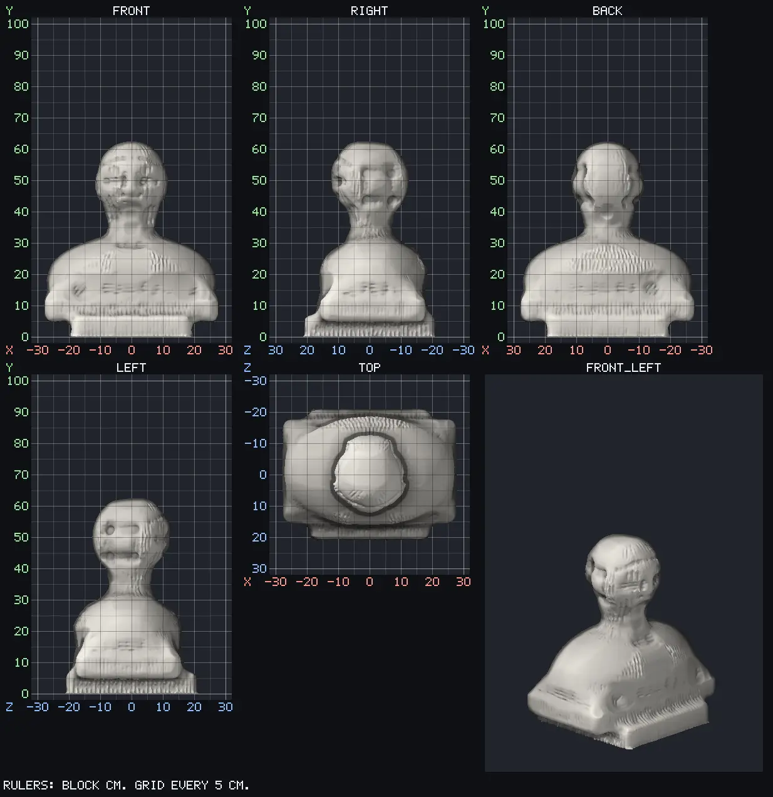
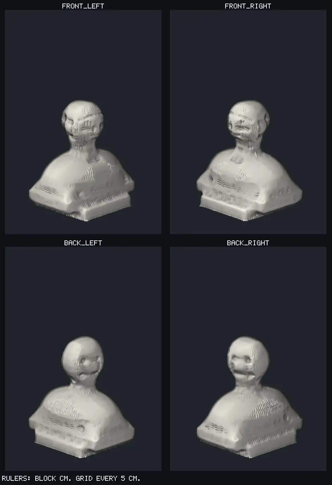
✓ Judge: human head and shoulders (bust) confidence 0.80
A round head on a narrow neck sits above broad sloping shoulders and a chest on a base, with facial features visible on the front of the head.
- cost
- $1.95 (reference $0.07) +$0.16 allowed for timed-out turns
- turns
- 16 of 60, 56 passes, 6,316 strikes
- ended
- finish
- stone left
- 147.8 kg (84.9% removed, 63 cm tall)
- silhouette
- front 0.90 · left 0.84 IoU with the reference
- proud of own form
- mean 0.37 cm, max 1.6 cm
the sculptor's own statement (the model's words about its piece, not a finding)Portrait of a Young Man
A head carried square on a short neck above broad, truncated shoulders, cut from one block of Carrara and left standing on its own slab. The features are kept to their large planes — brow, cheek, nose and the set-back of the eyes — so the marble reads as a calm face rather than a likeness fussed over. The rasp finish holds the light softly and lets the stone itself be seen.
the reference sheet this sculptor worked from
outlines traced1 image drawncost $0.07views agree 0.76 of 1
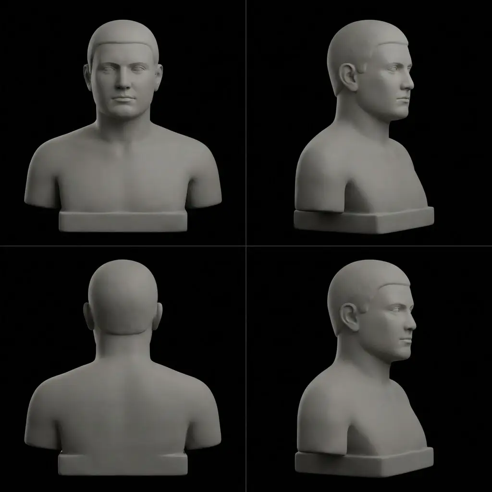
the sculptor's brief to the image model
A portrait bust of a person: head, neck and shoulders, facing straight forward, rising from a plain rectangular base, with the front being the face side. The whole piece is about five times as tall as it is wide and deep together in a tall upright stack: roughly 100 cm high, 60 cm wide and 60 cm deep, widest across the shoulders at the top of the base and narrowing through the neck to a head that is slightly narrower than the shoulders. From the base upward: a low rectangular slab the full width and depth of the block; above it a single broad chest-and-shoulder mass with a flat, truncated bottom edge, shoulders rounded and sloping down at the sides, with the upper arms cut off close to the body so the mass stays one solid block; then a short, thick cylindrical neck fused into the shoulders by a wide collar of stone rather than a thin stem; then an egg-shaped head sitting upright, with a plain rounded cap of close-cropped hair that joins smoothly into the skull, and the ears kept as low rounded bumps pressed against the sides of the head. The face is modelled in large simple planes — a broad brow, a straight nose, closed firm lips and a rounded chin — with no undercut nostrils, parted lips or fine hair strands. From the front the outline reads as a wide, flat-bottomed trapezoid of shoulders carrying a smaller oval on a thick neck; from the side it reads as a deep chest block with a slightly forward-leaning profile of brow, nose and chin and a rounded back of the skull, the neck fully solid behind and beneath the jaw so there is no gap anywhere between head, neck and shoulders.
56 passes
- rough_out turn 1, 1370 strikes
“Taking the big waste off the whole block down to the bust's outline, leaving a good hand's breadth of stone all round.”
Roughed out to 'reference' with the point chisel, leaving 4 cm: 7 saw cuts took 212,543 cm³ (576.0 kg) off in slabs, 1358 chisel strikes took 42,805 cm³ (116.0 kg) and 81 cm³ fell away loose. Outside the margin the stone now stands 0.5 cm proud on average and 2.4 cm at most. In all 255429 cm³ (692.2 kg) came off. 15 offcuts fell to the floor (largest 123840 cm³). 283.4 kg of stone remains. - declare_form turn 2, 1 strikes
“Setting out the main masses: a slab base, the broad shoulders, a short neck and the egg of the head, so I know what to keep.”
Declared form "bust" (5 shapes, blend 3 cm). Inside the block it spans X -28 to 28, Y 0 to 62, Z -20 to 20 and holds about 52.7 litres (143 kg). Nothing was cut. - rough_out turn 2, 1325 strikes
“Bringing the stone down close to the main masses, two fingers of margin still left everywhere.”
Roughed out to 'bust' with the point chisel, leaving 2 cm: 1 saw cut took 996 cm³ off in slabs, 1319 chisel strikes took 27,900 cm³ (75.6 kg) and 2.8 cm³ fell away loose. Outside the margin the stone now stands 0.4 cm proud on average and 1.7 cm at most. In all 28899 cm³ (78.3 kg) came off. 2 offcuts fell to the floor (largest 993 cm³). 205.1 kg of stone remains. - rough_out turn 3, 1005 strikes
“Closing in on the masses with the claw, evening out the pitted surface and leaving just a finger of stone for the modelling.”
Roughed out to 'bust' with the claw chisel, leaving 0.8 cm: 1002 chisel strikes took 11,653 cm³ (31.6 kg) and 1.5 cm³ fell away loose. Outside the margin the stone now stands 0.4 cm proud on average and 1.5 cm at most. In all 11654 cm³ (31.6 kg) came off. 173.5 kg of stone remains. - chisel turn 4, 6 strikes
“Setting back the left cheek so the nose and centre of the face can stand forward.”
Claw chisel from the front view: It ran on the stone from (x -6.5, y 39.0, z 5.9) to (x -6.5, y 52.0, z 10.9). 5 strikes took 105 cm³, 1.2 cm deep and 7 cm wide. In all 105 cm³ (0.28 kg) came off. 173.2 kg of stone remains. - chisel turn 4, 6 strikes
“Same on the right cheek, keeping the two sides of the face level with each other.”
Claw chisel from the front view: It ran on the stone from (x 6.5, y 39.0, z 5.4) to (x 6.5, y 52.0, z 11.2). 5 strikes took 118 cm³, 1.2 cm deep and 7 cm wide. In all 118 cm³ (0.32 kg) came off. 172.9 kg of stone remains. - chisel turn 4, 5 strikes
“Dropping the mouth and chin a little behind the nose.”
Claw chisel from the front view: It ran on the stone from (x -3.0, y 41.0, z 9.3) to (x 3.0, y 41.0, z 9.7). 4 strikes took 32 cm³, 0.8 cm deep and 5 cm wide. In all 31.8 cm³ (0.09 kg) came off. 172.8 kg of stone remains. - declare_form turn 5, 1 strikes
“Softening the shoulders: the hard shelf must go so the chest rolls over into the arms like flesh, not a pedestal.”
Replaced form "bust" (5 shapes, blend 5 cm). Inside the block it spans X -28 to 28, Y 0 to 62, Z -20 to 20 and holds about 52.8 litres (143 kg). Nothing was cut. - rough_out turn 5, 928 strikes
“Rounding the shoulders and chest down to their final mass with the claw.”
Roughed out to 'bust' with the claw chisel, leaving 0.5 cm: 924 chisel strikes took 4,653 cm³ (12.6 kg) and 1.3 cm³ fell away loose. Outside the margin the stone now stands 0.3 cm proud on average and 1.4 cm at most. In all 4655 cm³ (12.6 kg) came off. 160.2 kg of stone remains. - chisel turn 6, 24 strikes
“Knocking off the ledge across the chest so the torso flows down into the trunk without a step.”
Claw chisel from the front view: It ran on the stone from (x -27.0, y 15.5, z 15.6) to (x 27.0, y 15.5, z 15.7). 23 strikes took 329 cm³, 1.5 cm deep and 5 cm wide. In all 329 cm³ (0.89 kg) came off. 159.3 kg of stone remains. - chisel turn 6, 23 strikes
“The same ledge across the back.”
Claw chisel from the back view: It ran on the stone from (x -27.0, y 15.5, z -17.7) to (x 27.0, y 15.5, z -18.2). 22 strikes took 320 cm³, 1.5 cm deep and 5 cm wide. In all 320 cm³ (0.87 kg) came off. 158.4 kg of stone remains. - chisel turn 6, 14 strikes
“Rounding the ledge under the left arm stump.”
Claw chisel from the left view: It ran on the stone from (x -14.5, y 15.5, z -17.0) to (x -16.6, y 15.5, z 14.6). 1 of 15 points along the path missed the stone (first miss at [17, 15.5]). 13 strikes took 213 cm³, 1.5 cm deep and 5 cm wide. In all 213 cm³ (0.58 kg) came off. 157.8 kg of stone remains. - chisel turn 6, 13 strikes
“And under the right arm stump.”
Claw chisel from the right view: It ran on the stone from (x 27.9, y 15.5, z -17.0) to (x 20.0, y 15.5, z 14.6). 1 of 15 points along the path missed the stone (first miss at [17, 15.5]). 12 strikes took 205 cm³, 1.5 cm deep and 5 cm wide. 0.5 cm³ more fell away loose. In all 205 cm³ (0.56 kg) came off. 157.3 kg of stone remains. - rasp turn 7, 111 strikes
“Rasping the chest step into a soft roll.”
Rasp from the front view: 5 passes, 110 strokes 9 cm wide, from (x -27.0, y 15.5, z 13.7) to (x 27.0, y 15.5, z 4.2), wore off 183 cm³ of high spots. In all 183 cm³ (0.50 kg) came off. 156.8 kg of stone remains. - rasp turn 7, 111 strikes
“Same across the back.”
Rasp from the back view: 5 passes, 110 strokes 9 cm wide, from (x -27.0, y 15.5, z -4.6) to (x 27.0, y 15.5, z -7.6), wore off 176 cm³ of high spots. In all 176 cm³ (0.48 kg) came off. 156.3 kg of stone remains. - rasp turn 7, 66 strikes
“Softening the left side.”
Rasp from the left view: 5 passes, 65 strokes 9 cm wide, from (x -20.8, y 15.5, z -16.0) to (x -14.3, y 15.5, z 14.0), wore off 99 cm³ of high spots. In all 98.6 cm³ (0.27 kg) came off. 156.1 kg of stone remains. - rasp turn 7, 66 strikes
“And the right side.”
Rasp from the right view: 5 passes, 65 strokes 9 cm wide, from (x 20.9, y 15.5, z -16.0) to (x 17.4, y 15.5, z 14.0), wore off 108 cm³ of high spots. In all 108 cm³ (0.29 kg) came off. 155.8 kg of stone remains. - chisel turn 8, 6 strikes
“Sinking the left eye socket under the brow.”
Claw chisel from the front view: It ran on the stone from (x -8.5, y 49.5, z 8.8) to (x -2.5, y 49.5, z 12.4). 5 strikes took 22 cm³, 1.2 cm deep and 3 cm wide. In all 21.7 cm³ (0.06 kg) came off. 155.7 kg of stone remains. - chisel turn 8, 6 strikes
“Sinking the right eye socket to match.”
Claw chisel from the front view: It ran on the stone from (x 2.5, y 49.5, z 12.9) to (x 8.5, y 49.5, z 9.0). 5 strikes took 28 cm³, 1.2 cm deep and 3 cm wide. In all 28 cm³ (0.08 kg) came off. 155.6 kg of stone remains. - chisel turn 8, 13 strikes
“Cutting under the nose to separate it from the upper lip.”
Flat chisel from the front view: It ran on the stone from (x -3.0, y 44.5, z 11.5) to (x 3.0, y 44.5, z 11.3). 12 strikes in 2 layers took 13 cm³, 1 cm deep and 2 cm wide. In all 12.5 cm³ (0.03 kg) came off. 155.6 kg of stone remains. - chisel turn 8, 18 strikes
“Narrowing the nose on its left side.”
Flat chisel from the front view: It ran on the stone from (x -2.8, y 45.0, z 10.7) to (x -2.3, y 52.0, z 12.5). 17 strikes in 2 layers took 11 cm³, 0.9 cm deep and 1.5 cm wide. In all 11.1 cm³ (0.03 kg) came off. 155.6 kg of stone remains. - chisel turn 8, 19 strikes
“And on its right side, so the bridge reads as a ridge.”
Flat chisel from the front view: It ran on the stone from (x 2.8, y 45.0, z 10.3) to (x 2.3, y 52.0, z 12.4). 18 strikes in 2 layers took 9.8 cm³, 0.9 cm deep and 1.5 cm wide. In all 9.8 cm³ (0.03 kg) came off. 155.5 kg of stone remains. - chisel turn 9, 34 strikes
“Cutting a trench round the left ear so it stands out from the side of the head.”
Claw chisel from the left view: It ran on the stone from (x -9.8, y 42.5, z 1.5) to (x -9.8, y 42.5, z 1.5). 33 strikes took 92 cm³, 1 cm deep and 2.5 cm wide. In all 92.3 cm³ (0.25 kg) came off. 155.3 kg of stone remains. - chisel turn 9, 35 strikes
“The same trench round the right ear.”
Claw chisel from the right view: It ran on the stone from (x 9.9, y 42.5, z 1.5) to (x 9.9, y 42.5, z 1.5). 34 strikes took 92 cm³, 1 cm deep and 2.5 cm wide. In all 91.9 cm³ (0.25 kg) came off. 155.0 kg of stone remains. - chisel turn 9, 49 strikes
“Marking the hairline across the brow so the cap of hair sits a touch proud of the forehead.”
Flat chisel from the front view: It ran on the stone from (x -9.5, y 55.0, z 6.1) to (x 9.5, y 55.0, z 6.3). 48 strikes in 2 layers took 19 cm³, 0.6 cm deep and 1.5 cm wide. In all 18.8 cm³ (0.05 kg) came off. 155.0 kg of stone remains. - rasp turn 10, 21 strikes
“Rounding the square corners off the left ear and smoothing the side of the head.”
Rasp from the left view: 4 passes, 20 strokes 14 cm wide, from (x -7.9, y 40.0, z -3.5) to (x -10.1, y 56.0, z -3.5), wore off 87 cm³ of high spots. In all 86.6 cm³ (0.23 kg) came off. 154.7 kg of stone remains. - rasp turn 10, 21 strikes
“Same on the right ear and temple.”
Rasp from the right view: 4 passes, 20 strokes 14 cm wide, from (x 8.0, y 40.0, z -3.5) to (x 10.1, y 56.0, z -3.5), wore off 84 cm³ of high spots. In all 84.3 cm³ (0.23 kg) came off. 154.5 kg of stone remains. - rasp turn 10, 22 strikes
“Taking the claw ridges off the face and forehead.”
Rasp from the front view: 3 passes, 21 strokes 14 cm wide, from (x 0.0, y 38.0, z 8.0) to (x 0.0, y 63.0, z 2.4), wore off 106 cm³ of high spots. In all 106 cm³ (0.29 kg) came off. 154.2 kg of stone remains. - rasp turn 10, 25 strikes
“Smoothing the back of the skull and nape.”
Rasp from the back view: 3 passes, 24 strokes 14 cm wide, from (x 0.0, y 36.0, z -7.7) to (x 0.0, y 63.0, z -2.4), wore off 89 cm³ of high spots. In all 89.5 cm³ (0.24 kg) came off. 154.0 kg of stone remains. - rasp turn 10, 19 strikes
“Smoothing the crown.”
Rasp from the top view: 3 passes, 18 strokes 14 cm wide, from (x -10.0, y 56.7, z 0.0) to (x 10.0, y 56.7, z 0.0), wore off 59 cm³ of high spots. In all 59.2 cm³ (0.16 kg) came off. 153.8 kg of stone remains. - chisel turn 11, 15 strikes
“Taking the top off the left ear block to bring it to true ear height.”
Flat chisel from the left view: It ran on the stone from (x -7.5, y 52.5, z -9.0) to (x -10.5, y 52.5, z 1.0). 14 strikes in 2 layers took 34 cm³, 1 cm deep and 3 cm wide. In all 33.8 cm³ (0.09 kg) came off. 153.7 kg of stone remains. - chisel turn 11, 15 strikes
“And the bottom, so the lobe ends level with the nose.”
Flat chisel from the left view: It ran on the stone from (x -5.8, y 43.5, z -9.0) to (x -9.1, y 43.5, z 1.0). 14 strikes in 2 layers took 36 cm³, 1 cm deep and 3 cm wide. In all 35.8 cm³ (0.10 kg) came off. 153.6 kg of stone remains. - chisel turn 11, 17 strikes
“Narrowing the left ear from behind.”
Flat chisel from the left view: It ran on the stone from (x -6.0, y 42.0, z -7.0) to (x -8.0, y 54.0, z -7.0). 16 strikes in 2 layers took 39 cm³, 1 cm deep and 3 cm wide. In all 39.5 cm³ (0.11 kg) came off. 153.5 kg of stone remains. - chisel turn 11, 15 strikes
“Top of the right ear block, to match the left.”
Flat chisel from the right view: It ran on the stone from (x 7.6, y 52.5, z -9.0) to (x 10.5, y 52.5, z 1.0). 14 strikes in 2 layers took 35 cm³, 1 cm deep and 3 cm wide. In all 34.9 cm³ (0.09 kg) came off. 153.4 kg of stone remains. - chisel turn 11, 15 strikes
“Bottom of the right ear.”
Flat chisel from the right view: It ran on the stone from (x 5.5, y 43.5, z -9.0) to (x 9.0, y 43.5, z 1.0). 14 strikes in 2 layers took 40 cm³, 1 cm deep and 3 cm wide. In all 39.8 cm³ (0.11 kg) came off. 153.3 kg of stone remains. - chisel turn 11, 17 strikes
“Narrowing the right ear from behind.”
Flat chisel from the right view: It ran on the stone from (x 5.7, y 42.0, z -7.0) to (x 7.8, y 54.0, z -7.0). 16 strikes in 2 layers took 42 cm³, 1 cm deep and 3 cm wide. In all 42.1 cm³ (0.11 kg) came off. 153.2 kg of stone remains. - chisel turn 12, 5 strikes
“Hollowing the pit of the neck between the collarbones.”
Claw chisel from the front view: It ran on the stone from (x -3.0, y 30.0, z 9.6) to (x 3.0, y 30.0, z 9.3). 4 strikes took 32 cm³, 1 cm deep and 4 cm wide. In all 32.3 cm³ (0.09 kg) came off. 153.1 kg of stone remains. - rasp turn 12, 61 strikes
“Rasping the claw ridges off the chest and shoulders.”
Rasp from the front view: 4 passes, 60 strokes 14 cm wide, from (x -26.0, y 22.0, z 3.2) to (x 26.0, y 22.0, z 3.8), wore off 222 cm³ of high spots. In all 222 cm³ (0.60 kg) came off. 152.5 kg of stone remains. - rasp turn 12, 61 strikes
“Same across the upper back.”
Rasp from the back view: 4 passes, 60 strokes 14 cm wide, from (x -26.0, y 22.0, z -6.0) to (x 26.0, y 22.0, z -5.0), wore off 222 cm³ of high spots. In all 222 cm³ (0.60 kg) came off. 151.9 kg of stone remains. - rasp turn 12, 57 strikes
“Smoothing the tops of the shoulders.”
Rasp from the top view: 4 passes, 56 strokes 14 cm wide, from (x -26.0, y 23.3, z -1.0) to (x 26.0, y 23.1, z -1.0), wore off 200 cm³ of high spots. In all 200 cm³ (0.54 kg) came off. 151.4 kg of stone remains. - rasp turn 12, 25 strikes
“Smoothing the left arm stump.”
Rasp from the left view: 3 passes, 24 strokes 14 cm wide, from (x -17.5, y 20.0, z -15.0) to (x -15.3, y 20.0, z 14.0), wore off 62 cm³ of high spots. In all 62.5 cm³ (0.17 kg) came off. 151.2 kg of stone remains. - rasp turn 12, 25 strikes
“Smoothing the right arm stump.”
Rasp from the right view: 3 passes, 24 strokes 14 cm wide, from (x 17.6, y 20.0, z -15.0) to (x 14.9, y 20.0, z 14.0), wore off 59 cm³ of high spots. In all 58.8 cm³ (0.16 kg) came off. 151.1 kg of stone remains. - chisel turn 13, 25 strikes
“A shallow line for the parting of the lips.”
Flat chisel from the front view: It ran on the stone from (x -2.5, y 42.8, z 9.1) to (x 2.5, y 42.8, z 9.7). 24 strikes in 2 layers took 1.7 cm³, 0.4 cm deep and 0.8 cm wide. In all 1.7 cm³ (0.00 kg) came off. 151.1 kg of stone remains. - rasp turn 13, 57 strikes
“Rasping the front of the trunk and base smooth.”
Rasp from the front view: 4 passes, 56 strokes 14 cm wide, from (x -27.0, y 9.0, z 15.6) to (x 27.0, y 9.0, z 15.6), wore off 166 cm³ of high spots. In all 166 cm³ (0.45 kg) came off. 150.6 kg of stone remains. - rasp turn 13, 57 strikes
“Same at the back.”
Rasp from the back view: 4 passes, 56 strokes 14 cm wide, from (x -27.0, y 9.0, z -17.6) to (x 27.0, y 9.0, z -17.6), wore off 164 cm³ of high spots. In all 164 cm³ (0.45 kg) came off. 150.2 kg of stone remains. - rasp turn 13, 37 strikes
“Left side of the trunk and base.”
Rasp from the left view: 4 passes, 36 strokes 14 cm wide, from (x -27.8, y 9.0, z -15.2) to (x -26.9, y 9.0, z 15.2), wore off 124 cm³ of high spots. 2 of 11 points along the path missed the stone. In all 124 cm³ (0.33 kg) came off. 149.8 kg of stone remains. - rasp turn 13, 37 strikes
“Right side of the trunk and base.”
Rasp from the right view: 4 passes, 36 strokes 14 cm wide, from (x 27.7, y 9.0, z -15.2) to (x 26.8, y 9.0, z 15.2), wore off 126 cm³ of high spots. 2 of 11 points along the path missed the stone. In all 126 cm³ (0.34 kg) came off. 149.5 kg of stone remains. - rasp turn 14, 19 strikes
“Softening the left side of the face.”
Rasp from the front view: 2 passes, 18 strokes 8 cm wide, from (x -8.0, y 40.0, z 3.6) to (x -8.0, y 57.8, z 5.8), wore off 32 cm³ of high spots. 1 of 10 points along the path missed the stone. In all 31.5 cm³ (0.09 kg) came off. 149.4 kg of stone remains. - rasp turn 14, 19 strikes
“And the right side of the face.”
Rasp from the front view: 2 passes, 18 strokes 8 cm wide, from (x 8.0, y 40.0, z 3.8) to (x 8.0, y 57.8, z 5.8), wore off 32 cm³ of high spots. 1 of 10 points along the path missed the stone. In all 32.1 cm³ (0.09 kg) came off. 149.3 kg of stone remains. - rasp turn 14, 19 strikes
“Blending the left ear into the head.”
Rasp from the left view: 3 passes, 18 strokes 14 cm wide, from (x -7.5, y 40.0, z -4.0) to (x -8.0, y 58.0, z -4.0), wore off 61 cm³ of high spots. In all 60.7 cm³ (0.16 kg) came off. 149.1 kg of stone remains. - rasp turn 14, 19 strikes
“Blending the right ear into the head.”
Rasp from the right view: 3 passes, 18 strokes 14 cm wide, from (x 7.5, y 40.0, z -4.0) to (x 8.1, y 58.0, z -4.0), wore off 62 cm³ of high spots. In all 62.3 cm³ (0.17 kg) came off. 149.0 kg of stone remains. - rasp turn 14, 61 strikes
“Easing the band across the chest once more.”
Rasp from the front view: 4 passes, 60 strokes 12 cm wide, from (x -23.6, y 16.0, z 12.2) to (x 23.6, y 16.0, z 11.7), wore off 109 cm³ of high spots. 2 of 17 points along the path missed the stone. In all 109 cm³ (0.30 kg) came off. 148.7 kg of stone remains. - rasp turn 14, 61 strikes
“And across the back.”
Rasp from the back view: 4 passes, 60 strokes 12 cm wide, from (x -23.6, y 16.0, z -14.3) to (x 23.6, y 16.0, z -14.1), wore off 102 cm³ of high spots. 2 of 17 points along the path missed the stone. In all 102 cm³ (0.28 kg) came off. 148.4 kg of stone remains. - rasp turn 15, 36 strikes
“Finishing the centre of the chest and the throat, where the claw marks still show.”
Rasp from the front view: 5 passes, 35 strokes 14 cm wide, from (x 0.0, y 18.0, z 16.2) to (x 0.0, y 40.0, z 7.8), wore off 127 cm³ of high spots. In all 127 cm³ (0.34 kg) came off. 148.1 kg of stone remains. - rasp turn 15, 89 strikes
“Cleaning the front face of the base slab.”
Rasp from the front view: 4 passes, 88 strokes 6 cm wide, from (x -18.0, y 3.0, z 21.0) to (x 18.0, y 3.0, z 20.9), wore off 56 cm³ of high spots. In all 55.7 cm³ (0.15 kg) came off. 147.9 kg of stone remains. - rasp turn 15, 89 strikes
“And the back face of the slab.”
Rasp from the back view: 4 passes, 88 strokes 6 cm wide, from (x -18.0, y 3.0, z -20.9) to (x 18.0, y 3.0, z -20.8), wore off 50 cm³ of high spots. In all 49.6 cm³ (0.13 kg) came off. 147.8 kg of stone remains.
C-bust-fable-formed-ref-20261109130501-b4e
bust · sol · formed · ref on
round C
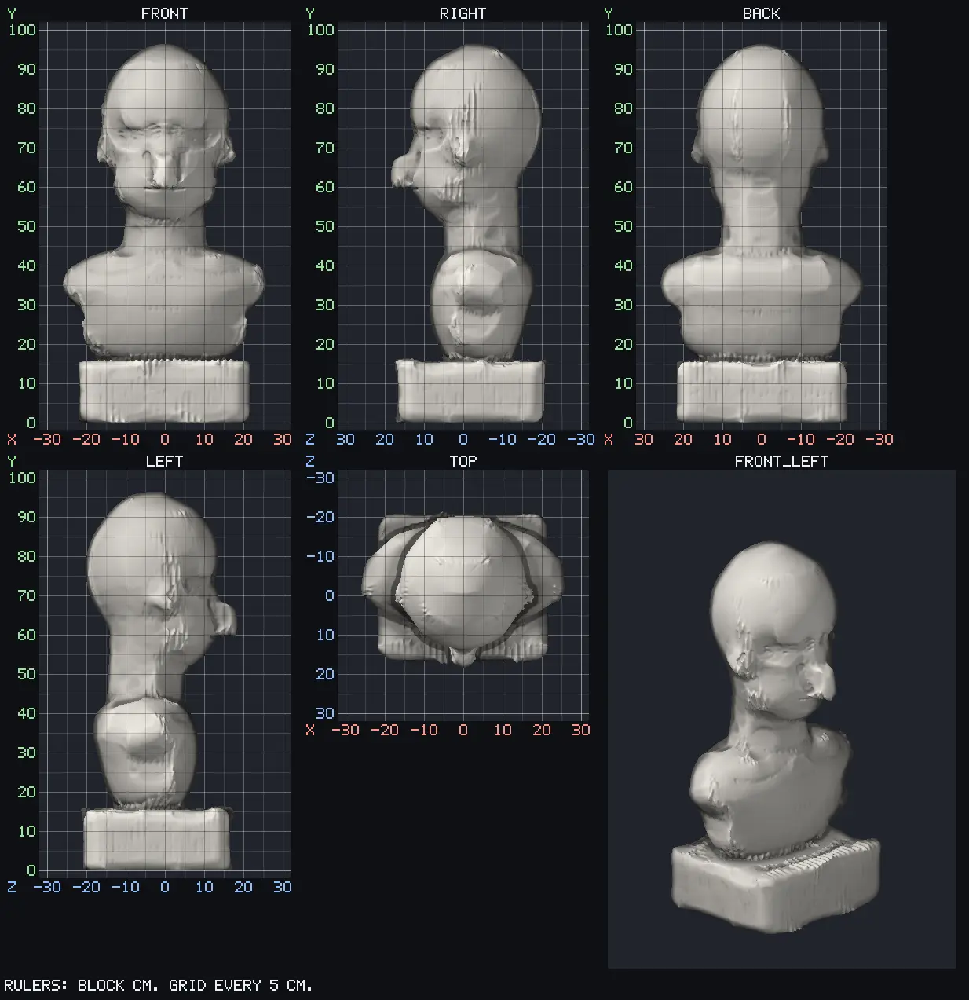
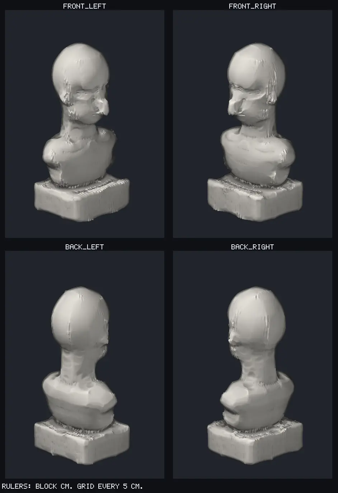
✓ Judge: human head and shoulders (bust) confidence 0.96
It has a head with a nose, brow and ears on a long neck above broad sloping shoulders and a chest, all standing on a plinth like a classic portrait bust.
- cost
- $0.54 (reference $0.04)
- turns
- 59 of 60, 51 passes, 9,388 strikes
- ended
- finish
- stone left
- 207.4 kg (78.7% removed, 96 cm tall)
- silhouette
- front 0.94 · left 0.84 IoU with the reference
- proud of own form
- mean 0.30 cm, max 1.6 cm
the sculptor's own statement (the model's words about its piece, not a finding)The Sitter
A forward-facing portrait rises from a plain marble plinth. Smooth planes of forehead, neck and shoulders are set against a few retained chisel marks, keeping the hand's work visible.
the reference sheet this sculptor worked from
outlines traced1 image drawncost $0.04views agree 0.70 of 1
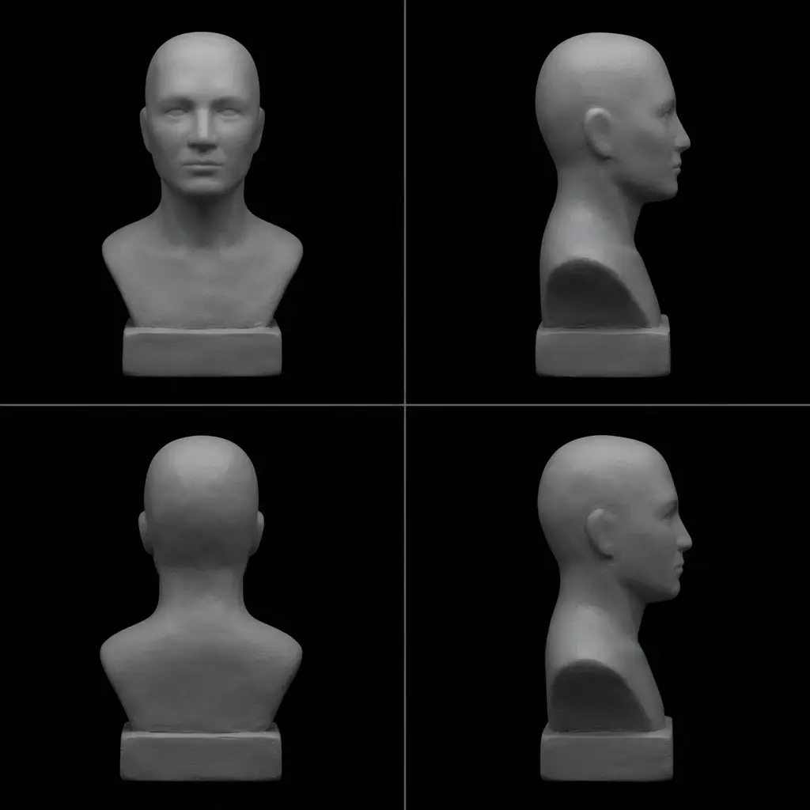
the sculptor's brief to the image model
A forward-facing portrait bust rises from a plain rectangular base, with the face defining the front. It is tall and compact, nearly twice as high as it is wide or deep, and widest across the shoulders just above the base. The shoulders form a broad, solid mass that narrows into a thick neck and an upright oval head with simplified brow, nose, cheeks and chin. From the front, the outline reads as broad shoulders beneath a narrower head; from the side, the forehead, nose and chin give the face a clear profile while the neck remains joined to the shoulders.
51 passes
- declare_form turn 3, 1 strikes
“I am setting out the base, shoulders, neck and full skull as a single connected portrait before cutting away the waste.”
Declared form "Portrait in the stone" (8 shapes, blend 2 cm). Inside the block it spans X -26 to 26, Y 0 to 96, Z -20 to 20 and holds about 91.6 litres (248 kg). Nothing was cut. - rough_out turn 4, 1493 strikes
“I am taking away the huge outer slabs while leaving a broad safety skin around the portrait's outline.”
Roughed out to 'reference' with the point chisel, leaving 4 cm: 8 saw cuts took 81,326 cm³ (220.4 kg) off in slabs, 1479 chisel strikes took 85,782 cm³ (232.5 kg) and 39 cm³ fell away loose. Outside the margin the stone now stands 0.6 cm proud on average and 2.6 cm at most. In all 167147 cm³ (453.0 kg) came off. 13 offcuts fell to the floor (largest 21600 cm³). 522.6 kg of stone remains. - declare_form turn 7, 1 strikes
“I am bridging the upper chest to the neck so every part of the portrait remains supported by the base.”
Replaced form "Portrait in the stone" (9 shapes, blend 2 cm). Inside the block it spans X -26 to 26, Y 0 to 96, Z -20 to 20 and holds about 92 litres (249 kg). Nothing was cut. - rough_out turn 9, 1073 strikes
“I am approaching the traced outline in smaller bites before shaping the portrait's rounded volumes.”
Roughed out to 'reference' with the claw chisel, leaving 1.5 cm: 1 saw cut took 3,683 cm³ (10.0 kg) off in slabs, 1068 chisel strikes took 43,409 cm³ (117.6 kg) and 81 cm³ fell away loose. Outside the margin the stone now stands 0.5 cm proud on average and 1.8 cm at most. In all 47173 cm³ (127.8 kg) came off. 17 offcuts fell to the floor (largest 2321 cm³). 394.8 kg of stone remains. - declare_form turn 13, 1 strikes
“I am tightening the shoulder and chest model to the stone that actually remains, while retaining room to model the face.”
Replaced form "Portrait in the stone" (9 shapes, blend 1 cm). Inside the block it spans X -26 to 26, Y 0 to 96, Z -20 to 18 and holds about 76.7 litres (208 kg). Nothing was cut. - rough_out turn 14, 1118 strikes
“I am rounding the block into the main planes of the bust while retaining extra stone for the features.”
Roughed out to 'Portrait in the stone' with the claw chisel, leaving 2.5 cm: 2 saw cuts took 2,514 cm³ (6.8 kg) off in slabs, 1110 chisel strikes took 30,548 cm³ (82.8 kg) and 6.7 cm³ fell away loose. Outside the margin the stone now stands 0.3 cm proud on average and 1.5 cm at most. In all 33068 cm³ (89.6 kg) came off. 4 offcuts fell to the floor (largest 1265 cm³). 305.2 kg of stone remains. - rough_out turn 16, 1016 strikes
“I am bringing the skull and shoulder envelope near their final contours without yet committing to delicate facial cuts.”
Roughed out to 'Portrait in the stone' with the claw chisel, leaving 0.9 cm: 1013 chisel strikes took 19,209 cm³ (52.1 kg) and 1.6 cm³ fell away loose. Outside the margin the stone now stands 0.4 cm proud on average and 1.6 cm at most. In all 19211 cm³ (52.1 kg) came off. 253.1 kg of stone remains. - declare_form turn 18, 1 strikes
“I am replacing the straight chest block with broad tapering shoulders and narrowing the nose to prepare for the facial planes.”
Replaced form "Portrait in the stone" (9 shapes, blend 1.3 cm). Inside the block it spans X -26 to 26, Y 0 to 96, Z -20 to 18 and holds about 72.5 litres (197 kg). Nothing was cut. - rough_out turn 20, 948 strikes
“I am turning the squared chest into tapering shoulders and reducing the bulbous nose before working its finer planes.”
Roughed out to 'Portrait in the stone' with the claw chisel, leaving 0.35 cm: 945 chisel strikes took 9,865 cm³ (26.7 kg) and 0.9 cm³ fell away loose. Outside the margin the stone now stands 0.4 cm proud on average and 1.6 cm at most. In all 9866 cm³ (26.7 kg) came off. 226.4 kg of stone remains. - rasp turn 23, 55 strikes
“I am evening the left temple and cheek so the rough chisel ridges no longer conceal the planes of the face.”
Rasp from the front view: 6 passes, 54 strokes 13 cm wide, from (x -13.1, y 85.6, z 4.3) to (x -7.0, y 58.0, z 11.6), wore off 179 cm³ of high spots. 1 of 10 points along the path missed the stone. In all 179 cm³ (0.49 kg) came off. 225.9 kg of stone remains. - rasp turn 24, 55 strikes
“I am matching the other temple and cheek, keeping the two sides of the skull in balance.”
Rasp from the front view: 6 passes, 54 strokes 13 cm wide, from (x 13.1, y 85.6, z 4.2) to (x 7.0, y 58.0, z 11.6), wore off 174 cm³ of high spots. 1 of 10 points along the path missed the stone. In all 174 cm³ (0.47 kg) came off. 225.4 kg of stone remains. - rasp turn 25, 139 strikes
“I am bringing the shoulders and chest onto a continuous, quiet plane before cutting the collarbones.”
Rasp from the front view: 6 passes, 138 strokes 12 cm wide, from (x -14.0, y 37.0, z 7.4) to (x -17.0, y 29.0, z 5.3), wore off 374 cm³ of high spots. In all 374 cm³ (1.01 kg) came off. 224.4 kg of stone remains. - rasp turn 27, 43 strikes
“I am smoothing the central forehead so the brow can emerge as a deliberate feature rather than a rough ledge.”
Rasp from the front view: 6 passes, 42 strokes 14 cm wide, from (x 0.0, y 94.0, z 6.0) to (x 0.0, y 70.0, z 14.7), wore off 186 cm³ of high spots. In all 186 cm³ (0.51 kg) came off. 223.9 kg of stone remains. - chisel turn 28, 15 strikes
“I am sinking the left eye beneath its brow so the expression begins to have depth.”
Claw chisel from the front view: It ran on the stone from (x -12.0, y 73.0, z 7.3) to (x -3.0, y 74.0, z 13.8). 14 strikes in 2 layers took 88 cm³, 2 cm deep and 3.5 cm wide. In all 88 cm³ (0.24 kg) came off. 223.7 kg of stone remains. - chisel turn 29, 15 strikes
“I am hollowing the matching eye beneath its brow while keeping the bridge of the nose intact.”
Claw chisel from the front view: It ran on the stone from (x 12.0, y 73.0, z 7.3) to (x 3.0, y 74.0, z 13.8). 14 strikes in 2 layers took 85 cm³, 2 cm deep and 3.5 cm wide. In all 85.5 cm³ (0.23 kg) came off. 223.4 kg of stone remains. - rasp turn 31, 66 strikes
“I am softening the sharp edges of the eye recesses so they read as sockets rather than straight grooves.”
Rasp from the front view: 5 passes, 65 strokes 7 cm wide, from (x -12.0, y 76.0, z 8.0) to (x 12.0, y 76.0, z 8.1), wore off 81 cm³ of high spots. In all 80.8 cm³ (0.22 kg) came off. 223.2 kg of stone remains. - chisel turn 32, 13 strikes
“I am relieving the left side of the nose so the bridge and nostril can stand proud of the cheek.”
Flat chisel from the front view: It ran on the stone from (x -5.0, y 68.0, z 12.1) to (x -4.0, y 62.0, z 13.9). 12 strikes in 2 layers took 23 cm³, 1.2 cm deep and 2.5 cm wide. In all 23.3 cm³ (0.06 kg) came off. 223.1 kg of stone remains. - chisel turn 33, 13 strikes
“I am cutting the opposing nasal plane to bring symmetry and light around the bridge.”
Flat chisel from the front view: It ran on the stone from (x 5.0, y 68.0, z 12.1) to (x 4.0, y 62.0, z 14.1). 12 strikes in 2 layers took 23 cm³, 1.2 cm deep and 2.5 cm wide. In all 22.9 cm³ (0.06 kg) came off. 223.1 kg of stone remains. - chisel turn 34, 55 strikes
“I am tracing a restrained line between the lips so the face has an expression without a deep gash.”
Flat chisel from the front view: It ran on the stone from (x -5.0, y 59.0, z 12.3) to (x 5.0, y 59.0, z 12.3). 54 strikes in 3 layers took 8.4 cm³, 0.8 cm deep and 1 cm wide. In all 8.4 cm³ (0.02 kg) came off. 223.1 kg of stone remains. - rasp turn 36, 103 strikes
“I am smoothing the back of the skull and the shoulder so the bust feels modeled all the way around.”
Rasp from the back view: 6 passes, 102 strokes 14 cm wide, from (x -12.0, y 90.0, z -7.3) to (x -12.0, y 26.0, z -15.5), wore off 392 cm³ of high spots. In all 392 cm³ (1.06 kg) came off. 222.0 kg of stone remains. - rasp turn 37, 102 strikes
“I am carrying the same smooth sweep down the opposite side of the skull and across the shoulders.”
Rasp from the back view: 6 passes, 101 strokes 14 cm wide, from (x 12.0, y 90.0, z -7.1) to (x 12.0, y 26.0, z -15.0), wore off 385 cm³ of high spots. In all 385 cm³ (1.04 kg) came off. 221.0 kg of stone remains. - rasp turn 38, 103 strikes
“I am quieting the rough back profile of the head and neck and smoothing the turn into the torso.”
Rasp from the left view: 6 passes, 102 strokes 14 cm wide, from (x -8.0, y 89.0, z -14.0) to (x -19.0, y 23.0, z -11.0), wore off 324 cm³ of high spots. In all 324 cm³ (0.88 kg) came off. 220.1 kg of stone remains. - rasp turn 40, 61 strikes
“I am softening the hard channels beside the nose and blending the cheeks into the mouth without cutting into the chin.”
Rasp from the front view: 6 passes, 60 strokes 9 cm wide, from (x -10.0, y 69.0, z 8.4) to (x 10.0, y 69.0, z 8.4), wore off 110 cm³ of high spots. In all 110 cm³ (0.30 kg) came off. 219.8 kg of stone remains. - rasp turn 41, 133 strikes
“I am smoothing the front of the plinth into an even, calm foundation for the portrait.”
Rasp from the front view: 6 passes, 132 strokes 12 cm wide, from (x -19.0, y 3.0, z 17.0) to (x 19.0, y 12.0, z 16.6), wore off 317 cm³ of high spots. In all 317 cm³ (0.86 kg) came off. 218.9 kg of stone remains. - rasp turn 41, 151 strikes
“I am evening the rear face of the pedestal while leaving its corners square.”
Rasp from the back view: 6 passes, 150 strokes 12 cm wide, from (x -19.0, y 3.0, z -20.7) to (x 19.0, y 12.0, z -20.9), wore off 371 cm³ of high spots. In all 371 cm³ (1.01 kg) came off. 217.9 kg of stone remains. - rasp turn 42, 139 strikes
“I am smoothing the left wall of the pedestal without rounding its upright edges.”
Rasp from the left view: 6 passes, 138 strokes 12 cm wide, from (x -21.8, y 3.0, z -18.0) to (x -20.5, y 12.0, z 16.0), wore off 317 cm³ of high spots. In all 317 cm³ (0.86 kg) came off. 217.1 kg of stone remains. - rasp turn 42, 139 strikes
“I am dressing the right wall of the pedestal to match the other three faces.”
Rasp from the right view: 6 passes, 138 strokes 12 cm wide, from (x 21.6, y 3.0, z -18.0) to (x 20.3, y 12.0, z 16.0), wore off 314 cm³ of high spots. In all 314 cm³ (0.85 kg) came off. 216.2 kg of stone remains. - rasp turn 44, 121 strikes
“I am taking the sharp ridges off the crown so the skull reads as one continuous round volume.”
Rasp from the top view: 6 passes, 120 strokes 11 cm wide, from (x -12.0, y 88.5, z -8.0) to (x -8.0, y 88.0, z -14.0), wore off 215 cm³ of high spots. In all 215 cm³ (0.58 kg) came off. 215.6 kg of stone remains. - rasp turn 44, 109 strikes
“I am smoothing the neck's front and its transition to the chin without cutting farther into the profile.”
Rasp from the front view: 6 passes, 108 strokes 10 cm wide, from (x -8.0, y 46.0, z 1.7) to (x -8.0, y 46.0, z 1.7), wore off 229 cm³ of high spots. In all 229 cm³ (0.62 kg) came off. 215.0 kg of stone remains. - rasp turn 44, 115 strikes
“I am removing the remaining central chisel tracks down the back of the head and the upper back.”
Rasp from the back view: 6 passes, 114 strokes 14 cm wide, from (x 0.0, y 93.0, z -12.9) to (x 0.0, y 21.0, z -15.8), wore off 467 cm³ of high spots. In all 467 cm³ (1.26 kg) came off. 213.7 kg of stone remains. - rasp turn 45, 109 strikes
“I am blending the side of the head through the ear, neck and shoulder without touching the fragile forward jaw.”
Rasp from the right view: 6 passes, 108 strokes 12 cm wide, from (x 10.0, y 89.0, z -11.0) to (x 21.8, y 29.0, z -9.0), wore off 255 cm³ of high spots. In all 255 cm³ (0.69 kg) came off. 213.0 kg of stone remains. - rasp turn 45, 109 strikes
“I am evening the left temple, ear and neck to match the modeling on the other side.”
Rasp from the left view: 6 passes, 108 strokes 12 cm wide, from (x -11.8, y 88.0, z -9.0) to (x -21.2, y 29.0, z -9.0), wore off 240 cm³ of high spots. In all 240 cm³ (0.65 kg) came off. 212.4 kg of stone remains. - rasp turn 47, 205 strikes
“I am taking down the remaining chisel ridges across the breast and shoulder fronts, keeping their broad shape.”
Rasp from the front view: 6 passes, 204 strokes 12 cm wide, from (x -20.0, y 37.0, z 5.0) to (x 13.0, y 22.0, z 5.0), wore off 437 cm³ of high spots. In all 437 cm³ (1.18 kg) came off. 211.2 kg of stone remains. - rasp turn 47, 199 strikes
“I am matching the shoulder and back planes to the smoother face of the bust.”
Rasp from the back view: 6 passes, 198 strokes 12 cm wide, from (x -20.0, y 37.0, z -14.2) to (x 12.0, y 22.0, z -13.8), wore off 421 cm³ of high spots. In all 421 cm³ (1.14 kg) came off. 210.1 kg of stone remains. - rasp turn 48, 156 strikes
“I am softening the hard brow ridge and the edges of the eye hollows while keeping the eyes set back.”
Rasp from the front view: 5 passes, 155 strokes 6 cm wide, from (x -12.0, y 79.0, z 8.1) to (x -11.0, y 73.0, z 5.2), wore off 118 cm³ of high spots. In all 118 cm³ (0.32 kg) came off. 209.8 kg of stone remains. - rasp turn 48, 76 strikes
“I am lightly blending the cheeks toward the lips to make the expression less angular.”
Rasp from the front view: 5 passes, 75 strokes 7 cm wide, from (x -11.0, y 65.0, z 6.9) to (x 11.0, y 65.0, z 6.8), wore off 52 cm³ of high spots. In all 51.7 cm³ (0.14 kg) came off. 209.6 kg of stone remains. - rasp turn 50, 127 strikes
“I am smoothing the rough upper surface of the left shoulder, preserving its solid join with the neck.”
Rasp from the top view: 6 passes, 126 strokes 7 cm wide, from (x -22.0, y 39.3, z -9.0) to (x -19.0, y 41.3, z -10.0), wore off 94 cm³ of high spots. In all 94.5 cm³ (0.26 kg) came off. 209.4 kg of stone remains. - rasp turn 50, 127 strikes
“I am dressing the right shoulder crest to match the left while leaving its outer contour intact.”
Rasp from the top view: 6 passes, 126 strokes 7 cm wide, from (x 22.0, y 40.0, z -9.0) to (x 19.0, y 41.6, z -10.0), wore off 97 cm³ of high spots. In all 96.6 cm³ (0.26 kg) came off. 209.1 kg of stone remains. - rasp turn 51, 103 strikes
“I am blending the right upper-arm stump into the chest so the shoulder feels naturally rounded.”
Rasp from the right view: 6 passes, 102 strokes 10 cm wide, from (x 20.4, y 41.0, z -9.0) to (x 21.8, y 38.0, z -12.0), wore off 194 cm³ of high spots. In all 194 cm³ (0.52 kg) came off. 208.6 kg of stone remains. - rasp turn 51, 103 strikes
“I am softening the left shoulder and the cut-off arm into a continuous volume.”
Rasp from the left view: 6 passes, 102 strokes 10 cm wide, from (x -19.8, y 41.0, z -9.0) to (x -21.0, y 38.0, z -12.0), wore off 195 cm³ of high spots. In all 195 cm³ (0.53 kg) came off. 208.0 kg of stone remains. - chisel turn 53, 47 strikes
“I am marking a shallow left collarbone to distinguish the shoulder from the upper chest.”
Flat chisel from the front view: It ran on the stone from (x -19.0, y 39.0, z 2.8) to (x -4.0, y 41.0, z 6.0). 46 strikes in 2 layers took 8.9 cm³, 0.5 cm deep and 1.2 cm wide. In all 8.9 cm³ (0.02 kg) came off. 208.0 kg of stone remains. - chisel turn 53, 47 strikes
“I am marking the matching right collarbone without cutting deeply into the bust.”
Flat chisel from the front view: It ran on the stone from (x 19.0, y 39.0, z 2.5) to (x 4.0, y 41.0, z 6.0). 46 strikes in 2 layers took 9.0 cm³, 0.5 cm deep and 1.2 cm wide. In all 9 cm³ (0.02 kg) came off. 208.0 kg of stone remains. - rasp turn 53, 97 strikes
“I am taking down the last visible tool ridges on the crown of the head.”
Rasp from the top view: 6 passes, 96 strokes 8 cm wide, from (x -8.0, y 93.6, z -3.0) to (x -6.0, y 93.7, z 2.0), wore off 34 cm³ of high spots. In all 34.2 cm³ (0.09 kg) came off. 207.9 kg of stone remains. - chisel turn 54, 76 strikes
“I am placing a fine, quiet parting between the lips so the mouth remains visible after smoothing.”
Flat chisel from the front view: It ran on the stone from (x -5.0, y 59.5, z 11.6) to (x 5.0, y 59.5, z 11.6). 75 strikes in 3 layers took 3.2 cm³, 0.5 cm deep and 0.7 cm wide. In all 3.2 cm³ (0.01 kg) came off. 207.9 kg of stone remains. - chisel turn 54, 21 strikes
“I am cutting a modest hollow in the left ear to give its projecting mass a recognizable structure.”
Flat chisel from the front view: It ran on the stone from (x -16.0, y 72.0, z 2.0) to (x -15.0, y 67.0, z 2.4). 20 strikes in 2 layers took 3.6 cm³, 0.5 cm deep and 1.2 cm wide. In all 3.6 cm³ (0.01 kg) came off. 207.9 kg of stone remains. - chisel turn 54, 20 strikes
“I am giving the right ear the same light inner shadow while keeping the marble thick.”
Flat chisel from the front view: It ran on the stone from (x 16.0, y 72.0, z 1.7) to (x 15.0, y 67.0, z 1.8). 19 strikes in 2 layers took 3.7 cm³, 0.5 cm deep and 1.2 cm wide. In all 3.7 cm³ (0.01 kg) came off. 207.9 kg of stone remains. - rasp turn 56, 101 strikes
“I am feathering the left collarbone's incised edge into the shoulder so it reads as anatomy, not a drawn line.”
Rasp from the front view: 4 passes, 100 strokes 5 cm wide, from (x -20.0, y 40.0, z 1.1) to (x -20.0, y 37.0, z 3.5), wore off 32 cm³ of high spots. In all 31.9 cm³ (0.09 kg) came off. 207.8 kg of stone remains. - rasp turn 56, 101 strikes
“I am softening the right collarbone into its surrounding shoulder plane.”
Rasp from the front view: 4 passes, 100 strokes 5 cm wide, from (x 20.0, y 40.0, z 0.8) to (x 20.0, y 37.0, z 3.0), wore off 31 cm³ of high spots. In all 30.8 cm³ (0.08 kg) came off. 207.7 kg of stone remains. - rasp turn 56, 85 strikes
“I am polishing away the last pronounced ridges on the forehead while keeping the brow below it.”
Rasp from the front view: 6 passes, 84 strokes 9 cm wide, from (x -7.0, y 89.0, z 8.5) to (x 7.0, y 89.0, z 9.1), wore off 72 cm³ of high spots. In all 71.9 cm³ (0.19 kg) came off. 207.5 kg of stone remains. - rasp turn 57, 41 strikes
“I am finishing the left temple's remaining tool tracks without softening the eye and ear.”
Rasp from the front view: 5 passes, 40 strokes 7 cm wide, from (x -12.5, y 88.1, z 1.7) to (x -12.0, y 75.0, z 5.9), wore off 21 cm³ of high spots. 1 of 9 points along the path missed the stone. In all 20.7 cm³ (0.06 kg) came off. 207.5 kg of stone remains. - rasp turn 57, 41 strikes
“I am giving the right temple the same final smooth surface as the left.”
Rasp from the front view: 5 passes, 40 strokes 7 cm wide, from (x 12.5, y 88.1, z 1.4) to (x 12.0, y 75.0, z 5.7), wore off 19 cm³ of high spots. 1 of 9 points along the path missed the stone. In all 18.6 cm³ (0.05 kg) came off. 207.4 kg of stone remains.
C-bust-sol-formed-ref-20261109130608-a36
bust · gemini · formed · ref on
round C
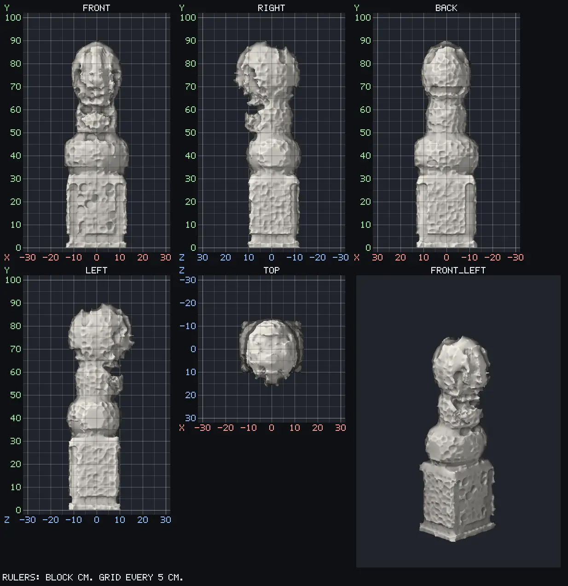
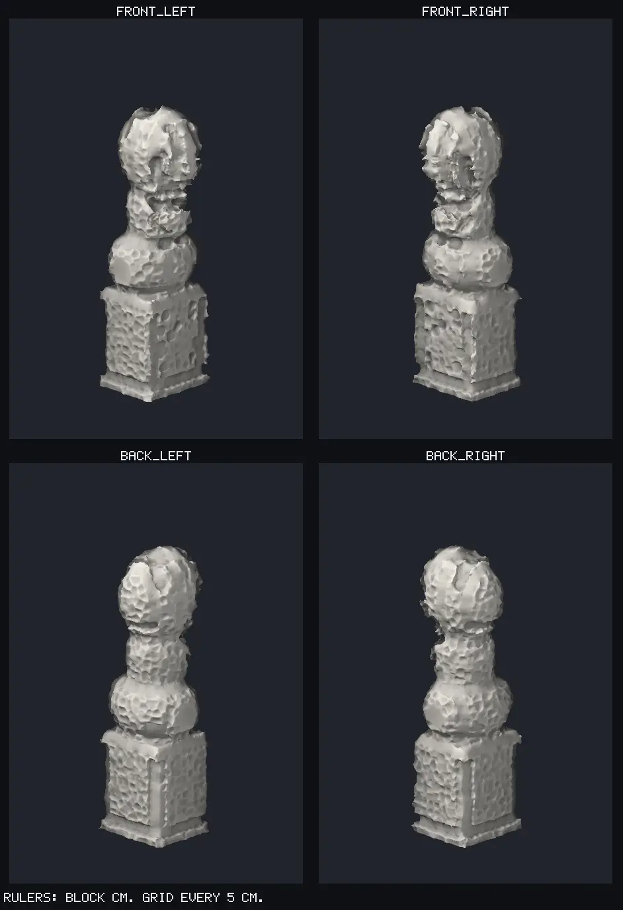
✗ Judge: chess pawn confidence 0.60; it is a human head and shoulders (bust)
A square base topped by a stacked sphere, a narrower neck and a round head makes the classic pawn profile, with no limbs, ears or face features that would suggest an animal or bust.
- cost
- $1.16 (reference $0.05)
- turns
- 31 of 60, 85 passes, 8,014 strikes
- ended
- finish
- stone left
- 96.9 kg (90.1% removed, 90 cm tall)
- silhouette
- front 0.64 · left 0.61 IoU with the reference
- proud of own form
- mean 0.16 cm, max 2.2 cm
the sculptor's own statement (the model's words about its piece, not a finding)Herm Bust of a Man
A herm bust, focusing on the portrait head and neck above a simple, blocky base. The features are strong and defined, with the stone smoothed to a soft finish.
the reference sheet this sculptor worked from
outlines traced1 image drawncost $0.05views agree 0.85 of 1
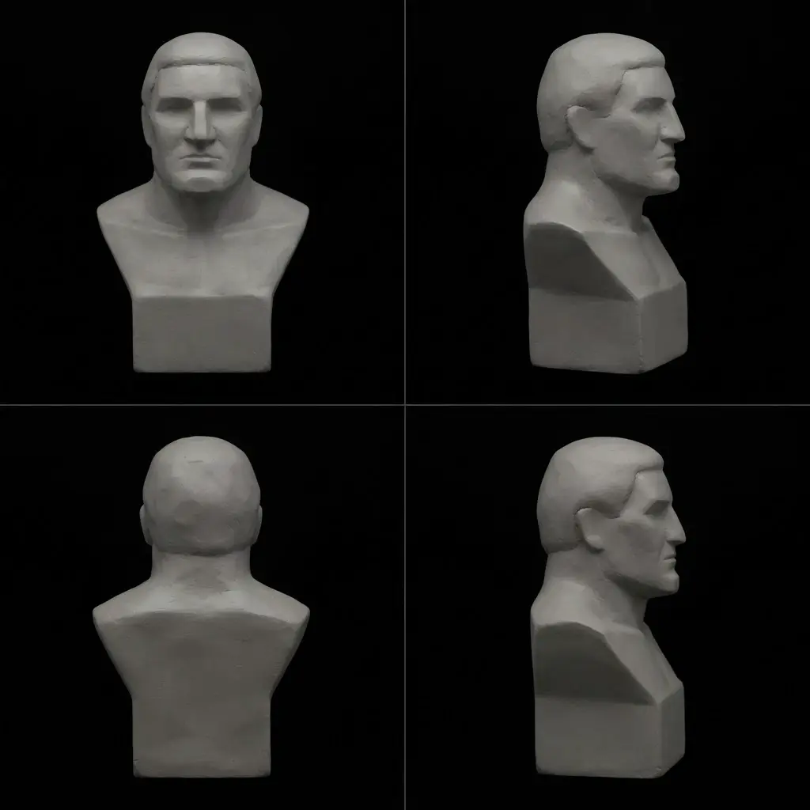
the sculptor's brief to the image model
A portrait bust of a person facing directly forward. The piece is nearly twice as tall as it is wide or deep, reaching its widest point across the shoulders. A solid, cubic base merges seamlessly upward into a thick chest, broad squared-off shoulders, a massive neck, and a large head. Hair and facial features are reduced to thick, simplified geometric planes fused completely to the skull and neck without undercuts. From the front, the outline is a sturdy pyramid tapering from the wide horizontal line of the shoulders up to the rounded crown of the head. From the side, the outline presents a flat vertical back and a staggered front profile where the heavy chest, blunt chin, and prominent nose project outward in solid steps.
85 passes
- rough_out turn 1, 1481 strikes
“Dropping the big waste from the corners to rough out the envelope of the bust.”
Roughed out to 'reference' with the point chisel, leaving 4 cm: 7 saw cuts took 98,999 cm³ (268.3 kg) off in slabs, 1469 chisel strikes took 72,561 cm³ (196.6 kg) and 26 cm³ fell away loose. Outside the margin the stone now stands 0.5 cm proud on average and 2.4 cm at most. In all 171586 cm³ (465.0 kg) came off. 15 offcuts fell to the floor (largest 24939 cm³). 510.6 kg of stone remains. - rough_out turn 2, 1100 strikes
“Closing in on the reference silhouettes to shed more waste from the main volume.”
Roughed out to 'reference' with the point chisel, leaving 1.5 cm: 2 saw cuts took 5,405 cm³ (14.6 kg) off in slabs, 1094 chisel strikes took 42,220 cm³ (114.4 kg) and 27 cm³ fell away loose. Outside the margin the stone now stands 0.3 cm proud on average and 2.1 cm at most. In all 47652 cm³ (129.1 kg) came off. 12 offcuts fell to the floor (largest 2448 cm³). 381.5 kg of stone remains. - declare_form turn 3, 1 strikes
“Declaring the 3D forms of the bust to round off the blocky corners left by the silhouette cuts.”
Declared form "bust" (4 shapes, blend 4 cm). Inside the block it spans X -24 to 24, Y 0 to 88, Z -14 to 18 and holds about 42 litres (114 kg). Nothing was cut. - declare_form turn 4, 1 strikes
“Adjusting the form to better match the broad shoulders and chest seen in the reference before bringing the stone down.”
Replaced form "bust" (4 shapes, blend 3 cm). Inside the block it spans X -26 to 26, Y 0 to 90, Z -16 to 16 and holds about 58.6 litres (159 kg). Nothing was cut. - declare_form turn 5, 1 strikes
“Tucking the chest and base forms in to fit inside the stone we established from the reference silhouettes.”
Replaced form "bust" (4 shapes, blend 3 cm). Inside the block it spans X -24 to 24, Y 0 to 90, Z -12 to 16 and holds about 45.5 litres (123 kg). Nothing was cut. - declare_form turn 6, 1 strikes
“Lifting the shoulders slightly to remove the overcut and protect the front chest.”
Replaced form "bust" (4 shapes, blend 3 cm). Inside the block it spans X -24 to 24, Y 0 to 90, Z -14 to 16 and holds about 45.9 litres (124 kg). Nothing was cut. - rough_out turn 6, 1497 strikes
“Taking off the heavy waste to rough out the 3D forms of the bust.”
Roughed out to 'bust' with the point chisel, leaving 2.5 cm: 7 saw cuts took 26,993 cm³ (73.2 kg) off in slabs, 1485 chisel strikes took 39,514 cm³ (107.1 kg) and 1.2 cm³ fell away loose. Outside the margin the stone now stands 0.4 cm proud on average and 1.8 cm at most. In all 66508 cm³ (180.2 kg) came off. 10 offcuts fell to the floor (largest 10069 cm³). 201.2 kg of stone remains. - saw turn 7, 2 strikes
“Trimming the excess material outside the right shoulder width to bring the block into proportion.”
Sawed from [24, 0] to [24, 100] in the front view, discarding everything right of the line: 487 cm³ fell away in 1 piece, 1% of the stone that was there. In all 487 cm³ (1.32 kg) came off. 1 offcut fell to the floor (largest 486 cm³). 199.9 kg of stone remains. - saw turn 7, 2 strikes
“Trimming the excess material outside the left shoulder width to bring the block into proportion.”
Sawed from [-24, 0] to [-24, 100] in the front view, discarding everything left of the line: 483 cm³ fell away in 1 piece, 1% of the stone that was there. In all 483 cm³ (1.31 kg) came off. 1 offcut fell to the floor (largest 483 cm³). 198.6 kg of stone remains. - saw turn 7, 2 strikes
“Trimming the base width on the left to match the chest support.”
Sawed from [-14, 0] to [-14, 30] in the front view, discarding everything left of the line: 5,755 cm³ (15.6 kg) fell away in 1 piece, 8% of the stone that was there. In all 5755 cm³ (15.6 kg) came off. 1 offcut fell to the floor (largest 5755 cm³). 183.0 kg of stone remains. - saw turn 7, 2 strikes
“Trimming the base width on the right to match the chest support.”
Sawed from [14, 0] to [14, 30] in the front view, discarding everything right of the line: 5,730 cm³ (15.5 kg) fell away in 1 piece, 8% of the stone that was there. In all 5730 cm³ (15.5 kg) came off. 1 offcut fell to the floor (largest 5729 cm³). 167.5 kg of stone remains. - declare_form turn 8, 1 strikes
“Adapting to the narrower block by declaring a closely cropped herm-style base, focusing the mass around the head and neck.”
Declared form "herm_bust" (4 shapes, blend 3 cm). Inside the block it spans X -12 to 12, Y 0 to 88, Z -10 to 14 and holds about 24.4 litres (66 kg). Nothing was cut. Looks and numbers measure the stone against all your forms together: "bust", "herm_bust". - rough_out turn 9, 1340 strikes
“Bringing the remaining stone down to the bounds of the new narrower design.”
Roughed out to 'herm_bust' with the point chisel, leaving 1.5 cm: 1 saw cut took 2,229 cm³ (6.0 kg) off in slabs, 1334 chisel strikes took 20,526 cm³ (55.6 kg) and 3.5 cm³ fell away loose. Outside the margin the stone now stands 0.4 cm proud on average and 1.8 cm at most. In all 22759 cm³ (61.7 kg) came off. 2 offcuts fell to the floor (largest 2140 cm³). 105.8 kg of stone remains. - chisel turn 11, 21 strikes
“Cutting the plane from the cheekbone down to the jawline on the right side.”
Claw chisel from the right view: It ran on the stone from (x 7.8, y 74.0, z 12.0) to (x 7.8, y 62.0, z 4.0). 20 strikes in 2 layers took 89 cm³, 2 cm deep and 3 cm wide. In all 88.9 cm³ (0.24 kg) came off. 105.6 kg of stone remains. - chisel turn 11, 19 strikes
“Cutting the plane from the cheekbone down to the jawline on the left side.”
Claw chisel from the left view: It ran on the stone from (x -8.1, y 74.0, z 12.0) to (x -3.6, y 62.0, z 10.0). 18 strikes in 2 layers took 89 cm³, 2 cm deep and 3 cm wide. In all 88.9 cm³ (0.24 kg) came off. 105.3 kg of stone remains. - chisel turn 12, 7 strikes
“Sinking the left eye socket below the brow ridge.”
Claw chisel from the front view: It ran on the stone from (x -4.0, y 77.0, z 15.4) to (x -2.0, y 77.0, z 16.5). 6 strikes in 2 layers took 9.6 cm³, 1.5 cm deep and 2 cm wide. In all 9.6 cm³ (0.03 kg) came off. 105.3 kg of stone remains. - chisel turn 12, 7 strikes
“Sinking the right eye socket below the brow ridge.”
Claw chisel from the front view: It ran on the stone from (x 2.0, y 77.0, z 16.3) to (x 4.0, y 77.0, z 15.0). 6 strikes in 2 layers took 9.7 cm³, 1.5 cm deep and 2 cm wide. In all 9.7 cm³ (0.03 kg) came off. 105.3 kg of stone remains. - chisel turn 12, 13 strikes
“Cutting back the front of the neck below the chin to define the jaw.”
Claw chisel from the front view: It ran on the stone from (x -6.0, y 60.0, z 7.6) to (x 6.0, y 60.0, z 8.0). 12 strikes in 2 layers took 108 cm³, 2 cm deep and 4 cm wide. In all 108 cm³ (0.29 kg) came off. 105.0 kg of stone remains. - chisel turn 12, 15 strikes
“Shaping the profile of the neck and upper chest on the right side.”
Claw chisel from the right view: It ran on the stone from (x 1.8, y 59.0, z 9.0) to (x 4.8, y 51.4, z 9.4). 6 of 14 points along the path missed the stone (first miss at [12, 62]). 14 strikes in 2 layers took 72 cm³, 2 cm deep and 3 cm wide. In all 72.5 cm³ (0.20 kg) came off. 104.8 kg of stone remains. - chisel turn 12, 14 strikes
“Shaping the profile of the neck and upper chest on the left side.”
Claw chisel from the left view: It ran on the stone from (x -5.9, y 58.0, z 8.0) to (x -4.3, y 51.4, z 9.4). 7 of 14 points along the path missed the stone (first miss at [12, 62]). 13 strikes in 2 layers took 55 cm³, 2 cm deep and 3 cm wide. In all 54.7 cm³ (0.15 kg) came off. 104.6 kg of stone remains. - chisel turn 13, 19 strikes
“Carving back the left cheek to make the nose and muzzle stand out.”
Claw chisel from the front view: It ran on the stone from (x -6.0, y 76.0, z 13.8) to (x -6.0, y 64.0, z 8.0). 18 strikes in 2 layers took 83 cm³, 2 cm deep and 3 cm wide. In all 83.4 cm³ (0.23 kg) came off. 104.4 kg of stone remains. - chisel turn 13, 19 strikes
“Carving back the right cheek to make the nose and muzzle stand out.”
Claw chisel from the front view: It ran on the stone from (x 6.0, y 76.0, z 14.0) to (x 6.0, y 64.0, z 8.6). 18 strikes in 2 layers took 81 cm³, 2 cm deep and 3 cm wide. 0.6 cm³ more fell away loose. In all 81.4 cm³ (0.22 kg) came off. 104.2 kg of stone remains. - chisel turn 13, 12 strikes
“Pushing back the side of the left cheek to round the face.”
Claw chisel from the front view: It ran on the stone from (x -9.0, y 76.0, z 9.7) to (x -9.0, y 67.0, z 6.2). 2 of 9 points along the path missed the stone (first miss at [-9, 65.5]). 11 strikes in 2 layers took 57 cm³, 2 cm deep and 3 cm wide. In all 56.7 cm³ (0.15 kg) came off. 104.0 kg of stone remains. - chisel turn 13, 14 strikes
“Pushing back the side of the right cheek to round the face.”
Claw chisel from the front view: It ran on the stone from (x 9.0, y 76.0, z 9.2) to (x 9.0, y 67.0, z 5.9). 2 of 9 points along the path missed the stone (first miss at [9, 65.5]). 13 strikes in 2 layers took 51 cm³, 2 cm deep and 3 cm wide. In all 50.7 cm³ (0.14 kg) came off. 103.9 kg of stone remains. - chisel turn 13, 7 strikes
“Deepening the left eye socket.”
Claw chisel from the front view: It ran on the stone from (x -4.0, y 74.5, z 15.6) to (x -2.0, y 74.5, z 16.0). 6 strikes in 2 layers took 8.6 cm³, 1.5 cm deep and 2 cm wide. In all 8.6 cm³ (0.02 kg) came off. 103.9 kg of stone remains. - chisel turn 14, 6 strikes
“Deepening the right eye socket to match the left.”
Claw chisel from the front view: It ran on the stone from (x 2.0, y 74.5, z 16.4) to (x 4.0, y 74.5, z 15.1). 5 strikes in 2 layers took 8.8 cm³, 1.5 cm deep and 2 cm wide. In all 8.8 cm³ (0.02 kg) came off. 103.8 kg of stone remains. - chisel turn 14, 10 strikes
“Carving under the nose on the left side to form the upper lip.”
Claw chisel from the front view: It ran on the stone from (x -3.0, y 68.0, z 13.7) to (x -1.0, y 68.0, z 14.4). 9 strikes in 3 layers took 15 cm³, 2 cm deep and 2 cm wide. In all 15.2 cm³ (0.04 kg) came off. 103.8 kg of stone remains. - chisel turn 14, 8 strikes
“Carving under the nose on the right side to form the upper lip.”
Claw chisel from the front view: It ran on the stone from (x 1.0, y 68.0, z 14.8) to (x 3.0, y 68.0, z 13.7). 7 strikes in 3 layers took 12 cm³, 2 cm deep and 2 cm wide. In all 11.6 cm³ (0.03 kg) came off. 103.8 kg of stone remains. - chisel turn 14, 8 strikes
“Carving under the lower lip on the left side to define the chin.”
Claw chisel from the front view: It ran on the stone from (x -4.0, y 65.0, z 9.8) to (x -2.0, y 65.0, z 12.6). 7 strikes in 3 layers took 9.4 cm³, 2 cm deep and 2 cm wide. In all 9.7 cm³ (0.03 kg) came off. 103.7 kg of stone remains. - chisel turn 14, 10 strikes
“Carving under the lower lip on the right side to define the chin.”
Claw chisel from the front view: It ran on the stone from (x 2.0, y 65.0, z 12.3) to (x 4.0, y 65.0, z 11.3). 9 strikes in 3 layers took 14 cm³, 2 cm deep and 2 cm wide. In all 14 cm³ (0.04 kg) came off. 103.7 kg of stone remains. - chisel turn 15, 15 strikes
“Slanting the left side of the forehead back.”
Claw chisel from the front view: It ran on the stone from (x -4.0, y 86.0, z 9.6) to (x -4.0, y 78.0, z 14.2). 14 strikes in 2 layers took 46 cm³, 1.5 cm deep and 3 cm wide. In all 46.4 cm³ (0.13 kg) came off. 103.6 kg of stone remains. - chisel turn 15, 12 strikes
“Slanting the right side of the forehead back.”
Claw chisel from the front view: It ran on the stone from (x 4.0, y 86.0, z 10.7) to (x 4.0, y 78.0, z 14.7). 11 strikes in 2 layers took 38 cm³, 1.5 cm deep and 3 cm wide. In all 37.7 cm³ (0.10 kg) came off. 103.5 kg of stone remains. - chisel turn 15, 14 strikes
“Carving back the temple and cheek on the left to narrow the face.”
Claw chisel from the front view: It ran on the stone from (x -8.0, y 78.0, z 11.0) to (x -8.0, y 68.0, z 4.5). 13 strikes in 2 layers took 70 cm³, 2 cm deep and 3 cm wide. In all 70.3 cm³ (0.19 kg) came off. 103.3 kg of stone remains. - chisel turn 15, 16 strikes
“Carving back the temple and cheek on the right to narrow the face.”
Claw chisel from the front view: It ran on the stone from (x 8.0, y 78.0, z 11.7) to (x 8.0, y 68.0, z 4.3). 15 strikes in 2 layers took 84 cm³, 2 cm deep and 3 cm wide. In all 83.6 cm³ (0.23 kg) came off. 103.1 kg of stone remains. - chisel turn 15, 14 strikes
“Shaping the bottom of the chin to separate it from the neck.”
Claw chisel from the front view: It ran on the stone from (x -2.0, y 64.0, z 8.5) to (x 2.0, y 64.0, z 11.3). 13 strikes in 3 layers took 19 cm³, 2 cm deep and 2 cm wide. In all 19.1 cm³ (0.05 kg) came off. 103.0 kg of stone remains. - chisel turn 16, 7 strikes
“Smoothing the left side of the muzzle from the nose to the chin.”
Flat chisel from the front view: It ran on the stone from (x -2.0, y 68.0, z 12.1) to (x -2.0, y 65.0, z 10.7). 6 strikes in 2 layers took 8.0 cm³, 1 cm deep and 2 cm wide. In all 8 cm³ (0.02 kg) came off. 103.0 kg of stone remains. - chisel turn 16, 9 strikes
“Smoothing the right side of the muzzle from the nose to the chin.”
Flat chisel from the front view: It ran on the stone from (x 2.0, y 68.0, z 12.8) to (x 2.0, y 65.0, z 9.5). 8 strikes in 2 layers took 9.4 cm³, 1 cm deep and 2 cm wide. In all 9.4 cm³ (0.03 kg) came off. 103.0 kg of stone remains. - chisel turn 16, 9 strikes
“Smoothing the left cheekbone to soften the transition to the muzzle.”
Flat chisel from the front view: It ran on the stone from (x -4.0, y 72.0, z 15.2) to (x -2.0, y 70.0, z 15.6). 8 strikes in 2 layers took 8.4 cm³, 1 cm deep and 2 cm wide. In all 8.4 cm³ (0.02 kg) came off. 102.9 kg of stone remains. - chisel turn 16, 8 strikes
“Smoothing the right cheekbone to soften the transition to the muzzle.”
Flat chisel from the front view: It ran on the stone from (x 4.0, y 72.0, z 14.9) to (x 2.0, y 70.0, z 15.2). 7 strikes in 2 layers took 7.8 cm³, 1 cm deep and 2 cm wide. In all 7.8 cm³ (0.02 kg) came off. 102.9 kg of stone remains. - chisel turn 16, 9 strikes
“Defining the left jawline and neck connection.”
Claw chisel from the front view: It ran on the stone from (x -7.2, y 62.8, z 4.5) to (x -4.0, y 58.0, z 10.2). 1 of 6 points along the path missed the stone (first miss at [-8, 64]). 8 strikes in 2 layers took 43 cm³, 2 cm deep and 3 cm wide. In all 42.8 cm³ (0.12 kg) came off. 102.8 kg of stone remains. - chisel turn 17, 11 strikes
“Defining the right jawline and neck connection.”
Claw chisel from the front view: It ran on the stone from (x 8.0, y 64.0, z 3.5) to (x 4.0, y 58.0, z 10.4). 10 strikes in 2 layers took 43 cm³, 2 cm deep and 3 cm wide. In all 43.2 cm³ (0.12 kg) came off. 102.7 kg of stone remains. - chisel turn 17, 9 strikes
“Smoothing the collarbone area on the left.”
Flat chisel from the front view: It ran on the stone from (x -2.0, y 48.0, z 8.9) to (x -4.0, y 48.0, z 7.8). 8 strikes in 3 layers took 26 cm³, 2 cm deep and 3 cm wide. In all 25.7 cm³ (0.07 kg) came off. 102.6 kg of stone remains. - chisel turn 17, 7 strikes
“Smoothing the collarbone area on the right.”
Flat chisel from the front view: It ran on the stone from (x 2.0, y 48.0, z 8.8) to (x 4.0, y 48.0, z 8.0). 6 strikes in 3 layers took 25 cm³, 2 cm deep and 3 cm wide. In all 25.3 cm³ (0.07 kg) came off. 102.5 kg of stone remains. - chisel turn 17, 10 strikes
“Smoothing the front of the neck.”
Flat chisel from the front view: It ran on the stone from (x -4.0, y 60.0, z 4.5) to (x 4.0, y 60.0, z 5.0). 9 strikes in 2 layers took 84 cm³, 1.5 cm deep and 4 cm wide. In all 84.4 cm³ (0.23 kg) came off. 102.3 kg of stone remains. - rasp turn 17, 45 strikes
“Smoothing the forehead planes.”
Rasp from the front view: 2 passes, 44 strokes 4 cm wide, from (x -4.0, y 82.0, z 11.6) to (x 4.0, y 78.0, z 13.4), wore off 25 cm³ of high spots. In all 25.1 cm³ (0.07 kg) came off. 102.2 kg of stone remains. - chisel turn 18, 5 strikes
“Lowering the crown of the head to better match the rounder reference silhouette.”
Claw chisel from the top view: It ran on the stone from (x -4.0, y 87.3, z -4.0) to (x 4.0, y 87.2, z -4.0). 4 strikes took 48 cm³, 1.5 cm deep and 4 cm wide. In all 47.9 cm³ (0.13 kg) came off. 102.1 kg of stone remains. - chisel turn 18, 6 strikes
“Lowering the crown of the head slightly further back.”
Claw chisel from the top view: It ran on the stone from (x -4.0, y 88.3, z 0.0) to (x 4.0, y 88.9, z 0.0). 5 strikes took 55 cm³, 1.5 cm deep and 4 cm wide. In all 55.1 cm³ (0.15 kg) came off. 102.0 kg of stone remains. - chisel turn 18, 28 strikes
“Smoothing the front face of the base.”
Flat chisel from the front view: It ran on the stone from (x -10.0, y 26.0, z 10.0) to (x 10.0, y 26.0, z 9.9). 27 strikes took 235 cm³, 1 cm deep and 4 cm wide. In all 235 cm³ (0.64 kg) came off. 101.3 kg of stone remains. - chisel turn 18, 28 strikes
“Smoothing the left face of the base.”
Flat chisel from the left view: It ran on the stone from (x -13.1, y 26.0, z -10.0) to (x -5.5, y 26.0, z 10.0). 27 strikes took 190 cm³, 1 cm deep and 4 cm wide. In all 190 cm³ (0.52 kg) came off. 100.8 kg of stone remains. - chisel turn 18, 28 strikes
“Smoothing the right face of the base.”
Flat chisel from the right view: It ran on the stone from (x 12.9, y 26.0, z -10.0) to (x 5.4, y 26.0, z 10.0). 1 of 28 points along the path missed the stone (first miss at [10, 4.667]). 27 strikes took 192 cm³, 1 cm deep and 4 cm wide. In all 192 cm³ (0.52 kg) came off. 100.3 kg of stone remains. - chisel turn 19, 29 strikes
“Smoothing the back face of the base.”
Flat chisel from the back view: It ran on the stone from (x 10.0, y 26.0, z -11.6) to (x -10.0, y 26.0, z -11.6). 28 strikes took 227 cm³, 1 cm deep and 4 cm wide. 1.4 cm³ more fell away loose. In all 228 cm³ (0.62 kg) came off. 99.7 kg of stone remains. - chisel turn 19, 13 strikes
“Rounding and smoothing the back of the neck.”
Flat chisel from the back view: It ran on the stone from (x 6.0, y 68.0, z -8.1) to (x -6.0, y 68.0, z -7.5). 12 strikes in 2 layers took 83 cm³, 1.5 cm deep and 4 cm wide. In all 83.1 cm³ (0.23 kg) came off. 99.5 kg of stone remains. - chisel turn 19, 21 strikes
“Rounding and smoothing the back of the head.”
Flat chisel from the back view: It ran on the stone from (x 8.0, y 82.0, z -5.6) to (x -8.0, y 82.0, z -5.5). 20 strikes in 2 layers took 111 cm³, 1.5 cm deep and 4 cm wide. In all 111 cm³ (0.30 kg) came off. 99.1 kg of stone remains. - rasp turn 19, 61 strikes
“Smoothing the cheek and eye areas.”
Rasp from the front view: 2 passes, 60 strokes 3 cm wide, from (x -4.0, y 74.0, z 13.3) to (x 4.0, y 68.0, z 13.2), wore off 25 cm³ of high spots. In all 25.1 cm³ (0.07 kg) came off. 99.1 kg of stone remains. - rasp turn 19, 61 strikes
“Smoothing the lower face and chin.”
Rasp from the front view: 2 passes, 60 strokes 3 cm wide, from (x -4.0, y 66.0, z 9.5) to (x 4.0, y 60.0, z 3.4), wore off 21 cm³ of high spots. In all 20.9 cm³ (0.06 kg) came off. 99.0 kg of stone remains. - rasp turn 20, 111 strikes
“Smoothing the front face of the base.”
Rasp from the front view: 2 passes, 110 strokes 4 cm wide, from (x -10.0, y 26.0, z 8.9) to (x 10.0, y 26.0, z 8.8), wore off 26 cm³ of high spots. In all 26.4 cm³ (0.07 kg) came off. 99.0 kg of stone remains. - rasp turn 20, 92 strikes
“Smoothing the left face of the base.”
Rasp from the left view: 2 passes, 91 strokes 4 cm wide, from (x -12.0, y 26.0, z -10.0) to (x -3.4, y 26.0, z 10.0), wore off 41 cm³ of high spots. 7 of 55 points along the path missed the stone. In all 41.1 cm³ (0.11 kg) came off. 98.8 kg of stone remains. - rasp turn 20, 80 strikes
“Smoothing the right face of the base.”
Rasp from the right view: 2 passes, 79 strokes 4 cm wide, from (x 11.9, y 26.0, z -10.0) to (x 12.6, y 24.8, z 10.0), wore off 40 cm³ of high spots. 14 of 55 points along the path missed the stone. In all 40 cm³ (0.11 kg) came off. 98.7 kg of stone remains. - rasp turn 20, 111 strikes
“Smoothing the back face of the base.”
Rasp from the back view: 2 passes, 110 strokes 4 cm wide, from (x 10.0, y 26.0, z -10.7) to (x -10.0, y 26.0, z -10.6), wore off 33 cm³ of high spots. In all 33 cm³ (0.09 kg) came off. 98.6 kg of stone remains. - rasp turn 21, 46 strikes
“Smoothing the top back of the head.”
Rasp from the top view: 3 passes, 45 strokes 4 cm wide, from (x -8.0, y 80.6, z -4.0) to (x 8.0, y 80.6, z -4.0), wore off 16 cm³ of high spots. In all 15.9 cm³ (0.04 kg) came off. 98.6 kg of stone remains. - rasp turn 21, 46 strikes
“Smoothing the top center of the head.”
Rasp from the top view: 3 passes, 45 strokes 4 cm wide, from (x -8.0, y 84.8, z 0.0) to (x 8.0, y 85.4, z 0.0), wore off 22 cm³ of high spots. In all 22 cm³ (0.06 kg) came off. 98.5 kg of stone remains. - rasp turn 21, 46 strikes
“Smoothing the top front of the head.”
Rasp from the top view: 3 passes, 45 strokes 4 cm wide, from (x -8.0, y 85.2, z 4.0) to (x 8.0, y 85.0, z 4.0), wore off 15 cm³ of high spots. In all 15.1 cm³ (0.04 kg) came off. 98.5 kg of stone remains. - rasp turn 21, 46 strikes
“Smoothing the forehead from above.”
Rasp from the top view: 3 passes, 45 strokes 4 cm wide, from (x -8.0, y 83.3, z 8.0) to (x 8.0, y 82.9, z 8.0), wore off 20 cm³ of high spots. In all 19.6 cm³ (0.05 kg) came off. 98.4 kg of stone remains. - rasp turn 21, 40 strikes
“Smoothing the front of the face from above.”
Rasp from the top view: 3 passes, 39 strokes 4 cm wide, from (x -6.9, y 80.6, z 12.0) to (x 6.9, y 80.5, z 12.0), wore off 20 cm³ of high spots. 2 of 15 points along the path missed the stone. In all 19.9 cm³ (0.05 kg) came off. 98.4 kg of stone remains. - rasp turn 21, 46 strikes
“Smoothing the back of the head from above.”
Rasp from the top view: 3 passes, 45 strokes 4 cm wide, from (x -8.0, y 74.3, z -8.0) to (x 8.0, y 75.3, z -8.0), wore off 23 cm³ of high spots. In all 22.7 cm³ (0.06 kg) came off. 98.3 kg of stone remains. - rasp turn 23, 55 strikes
“Smoothing the left side of the face.”
Rasp from the front view: 3 passes, 54 strokes 4 cm wide, from (x -4.0, y 80.0, z 12.5) to (x -4.0, y 60.0, z 2.8), wore off 32 cm³ of high spots. In all 32.4 cm³ (0.09 kg) came off. 98.2 kg of stone remains. - rasp turn 23, 55 strikes
“Smoothing the center of the face, including the nose and chin.”
Rasp from the front view: 3 passes, 54 strokes 4 cm wide, from (x 0.0, y 80.0, z 15.3) to (x 0.0, y 60.0, z 6.4), wore off 36 cm³ of high spots. In all 36.1 cm³ (0.10 kg) came off. 1 offcut fell to the floor (largest 1 cm³). 98.1 kg of stone remains. - rasp turn 23, 55 strikes
“Smoothing the right side of the face.”
Rasp from the front view: 3 passes, 54 strokes 4 cm wide, from (x 4.0, y 80.0, z 12.7) to (x 4.0, y 60.0, z 3.3), wore off 30 cm³ of high spots. In all 29.9 cm³ (0.08 kg) came off. 98.1 kg of stone remains. - rasp turn 23, 47 strikes
“Smoothing the left temple and jaw.”
Rasp from the front view: 3 passes, 46 strokes 4 cm wide, from (x -8.0, y 80.0, z 10.6) to (x -8.0, y 60.0, z 5.5), wore off 33 cm³ of high spots. 2 of 18 points along the path missed the stone. In all 33 cm³ (0.09 kg) came off. 98.0 kg of stone remains. - rasp turn 23, 47 strikes
“Smoothing the right temple and jaw.”
Rasp from the front view: 3 passes, 46 strokes 4 cm wide, from (x 8.0, y 80.0, z 10.7) to (x 8.0, y 60.0, z 5.2), wore off 29 cm³ of high spots. 2 of 18 points along the path missed the stone. In all 28.9 cm³ (0.08 kg) came off. 97.9 kg of stone remains. - rasp turn 25, 46 strikes
“Smoothing the back of the left side of the head.”
Rasp from the left view: 3 passes, 45 strokes 4 cm wide, from (x -3.7, y 84.0, z -8.0) to (x -3.6, y 68.0, z -8.0), wore off 16 cm³ of high spots. In all 15.7 cm³ (0.04 kg) came off. 97.9 kg of stone remains. - rasp turn 25, 46 strikes
“Smoothing the center of the left side of the head.”
Rasp from the left view: 3 passes, 45 strokes 4 cm wide, from (x -8.5, y 84.0, z 0.0) to (x -9.8, y 68.0, z 0.0), wore off 11 cm³ of high spots. In all 10.5 cm³ (0.03 kg) came off. 97.8 kg of stone remains. - rasp turn 25, 46 strikes
“Smoothing the front of the left side of the head.”
Rasp from the left view: 3 passes, 45 strokes 4 cm wide, from (x -7.3, y 84.0, z 8.0) to (x -6.1, y 68.0, z 8.0), wore off 23 cm³ of high spots. In all 22.6 cm³ (0.06 kg) came off. 97.8 kg of stone remains. - rasp turn 25, 46 strikes
“Smoothing the back of the right side of the head.”
Rasp from the right view: 3 passes, 45 strokes 4 cm wide, from (x 7.4, y 84.0, z 8.0) to (x 6.9, y 68.0, z 8.0), wore off 20 cm³ of high spots. In all 20.3 cm³ (0.05 kg) came off. 97.7 kg of stone remains. - rasp turn 25, 46 strikes
“Smoothing the center of the right side of the head.”
Rasp from the right view: 3 passes, 45 strokes 4 cm wide, from (x 8.3, y 84.0, z 0.0) to (x 9.4, y 68.0, z 0.0), wore off 8.5 cm³ of high spots. In all 8.5 cm³ (0.02 kg) came off. 97.7 kg of stone remains. - rasp turn 25, 46 strikes
“Smoothing the front of the right side of the head.”
Rasp from the right view: 3 passes, 45 strokes 4 cm wide, from (x 3.5, y 84.0, z -8.0) to (x 3.5, y 68.0, z -8.0), wore off 13 cm³ of high spots. In all 12.5 cm³ (0.03 kg) came off. 97.7 kg of stone remains. - rasp turn 27, 25 strikes
“Smoothing the top of the head from the front.”
Rasp from the front view: 3 passes, 24 strokes 4 cm wide, from (x -4.0, y 88.0, z 6.3) to (x 4.0, y 88.0, z 6.3), wore off 6.2 cm³ of high spots. In all 6.2 cm³ (0.02 kg) came off. 97.6 kg of stone remains. - rasp turn 27, 25 strikes
“Smoothing the top of the head from the back.”
Rasp from the back view: 3 passes, 24 strokes 4 cm wide, from (x -4.0, y 88.0, z 2.0) to (x 4.0, y 88.0, z 1.6), wore off 9.1 cm³ of high spots. In all 9.1 cm³ (0.02 kg) came off. 97.6 kg of stone remains. - rasp turn 27, 10 strikes
“Smoothing the top of the head from the left.”
Rasp from the left view: 3 passes, 9 strokes 4 cm wide, from (x -1.3, y 88.0, z 1.7) to (x -4.7, y 88.0, z 4.0), wore off 3.1 cm³ of high spots. 5 of 8 points along the path missed the stone. In all 3.1 cm³ (0.01 kg) came off. 97.6 kg of stone remains. - rasp turn 27, 10 strikes
“Smoothing the top of the head from the right.”
Rasp from the right view: 3 passes, 9 strokes 4 cm wide, from (x 3.4, y 88.0, z 1.7) to (x 4.8, y 88.0, z 4.0), wore off 3.1 cm³ of high spots. 5 of 8 points along the path missed the stone. In all 3.1 cm³ (0.01 kg) came off. 97.6 kg of stone remains. - rasp turn 29, 91 strikes
“Smoothing the front of the neck and upper chest.”
Rasp from the front view: 3 passes, 90 strokes 4 cm wide, from (x -6.0, y 60.0, z 3.3) to (x -6.0, y 50.0, z 6.9), wore off 56 cm³ of high spots. In all 55.5 cm³ (0.15 kg) came off. 97.4 kg of stone remains. - rasp turn 29, 151 strikes
“Smoothing the front of the chest.”
Rasp from the front view: 3 passes, 150 strokes 4 cm wide, from (x -10.0, y 48.0, z 1.9) to (x -10.0, y 30.0, z 9.8), wore off 62 cm³ of high spots. In all 62.3 cm³ (0.17 kg) came off. 97.3 kg of stone remains. - rasp turn 29, 119 strikes
“Smoothing the left side of the chest.”
Rasp from the left view: 3 passes, 118 strokes 4 cm wide, from (x -4.0, y 48.0, z -8.8) to (x -12.5, y 30.0, z -10.0), wore off 43 cm³ of high spots. 10 of 50 points along the path missed the stone. In all 43.2 cm³ (0.12 kg) came off. 97.2 kg of stone remains. - rasp turn 29, 118 strikes
“Smoothing the right side of the chest.”
Rasp from the right view: 3 passes, 117 strokes 4 cm wide, from (x 4.3, y 48.0, z -8.8) to (x 12.5, y 30.0, z -10.0), wore off 39 cm³ of high spots. 11 of 50 points along the path missed the stone. In all 39.5 cm³ (0.11 kg) came off. 97.1 kg of stone remains. - rasp turn 29, 151 strikes
“Smoothing the back of the chest.”
Rasp from the back view: 3 passes, 150 strokes 4 cm wide, from (x -10.0, y 48.0, z -3.6) to (x -10.0, y 30.0, z -11.6), wore off 43 cm³ of high spots. In all 43 cm³ (0.12 kg) came off. 96.9 kg of stone remains.
C-bust-gemini-formed-ref-20261109130749-45e
Other runs
pawn · opus · formed · ref off
round X
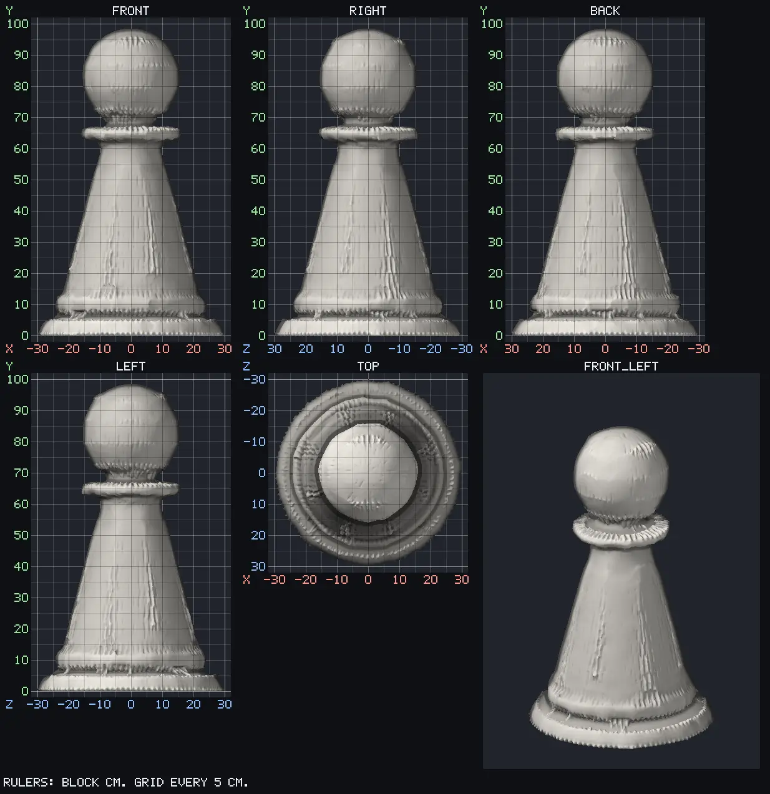
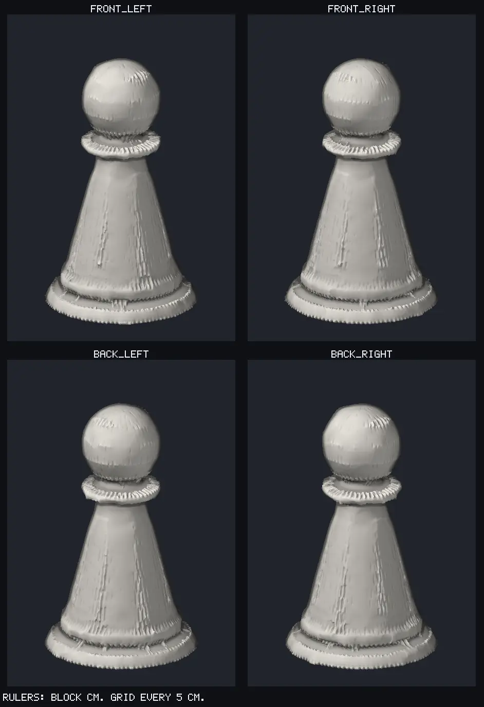
✓ Judge: chess pawn confidence 0.97
A round ball head sits on a flared collar above a tall conical body that ends in a stepped circular base, which is the classic chess pawn profile and is rotationally symmetric.
- cost
- $0.33
- turns
- 11 of 60, 20 passes, 7,654 strikes
- ended
- finish
- stone left
- 234.9 kg (75.9% removed, 99 cm tall)
- proud of own form
- mean 0.44 cm, max 1.6 cm
the sculptor's own statement (the model's words about its piece, not a finding)Pawn
The humblest piece on the board, made nearly a metre tall out of Carrara: a round head sitting on a collar, a body that widens as it comes down, and a two-step base that holds it all up. I rasped it smooth and left the faint marks of the claw on the rims and flanks, so you can still see how it was cut.
20 passes
- declare_form turn 1, 1 strikes
“I'm setting down the pawn as stacked round masses: a two-step base, a flaring body, a collar and a ball for the head.”
Declared form "pawn" (5 shapes, blend 1.5 cm). Inside the block it spans X -28 to 28, Y 0 to 98, Z -28 to 28 and holds about 81.2 litres (220 kg). Nothing was cut. 6% of the form lies outside the block, where there is no stone to make it from. - rough_out turn 2, 1723 strikes
“Taking the big waste off all round, leaving a few centimetres of stone over the whole pawn.”
Roughed out to 'pawn' with the point chisel, leaving 3 cm: 12 saw cuts took 93,296 cm³ (252.8 kg) off in slabs, 1705 chisel strikes took 132,311 cm³ (358.6 kg) and 249 cm³ fell away loose. Outside the margin the stone now stands 0.4 cm proud on average and 2.1 cm at most. In all 225857 cm³ (612.1 kg) came off. 45 offcuts fell to the floor (largest 19782 cm³). 363.5 kg of stone remains. - rough_out turn 4, 1092 strikes
“Closing in on the masses so the neck, collar and base steps start to read clearly.”
Roughed out to 'pawn' with the point chisel, leaving 1.2 cm: 1088 chisel strikes took 30,166 cm³ (81.8 kg) and 69 cm³ fell away loose. Outside the margin the stone now stands 0.4 cm proud on average and 1.8 cm at most. In all 30236 cm³ (81.9 kg) came off. 22 offcuts fell to the floor (largest 9 cm³). 281.6 kg of stone remains. - rough_out turn 5, 992 strikes
“Going over everything with the claw to bring the surface right down to the final form evenly.”
Roughed out to 'pawn' with the claw chisel, leaving 0.3 cm: 989 chisel strikes took 12,570 cm³ (34.1 kg). Outside the margin the stone now stands 0.5 cm proud on average and 1.6 cm at most. In all 12570 cm³ (34.1 kg) came off. 247.5 kg of stone remains. - rasp turn 7, 185 strikes
“Rasping the front of the body to take out the claw ridges.”
Rasp from the front view: 4 passes, 184 strokes 12 cm wide, from (x -14.0, y 15.0, z 16.4) to (x 0.0, y 58.0, z 10.4), wore off 607 cm³ of high spots. In all 607 cm³ (1.65 kg) came off. 245.9 kg of stone remains. - rasp turn 7, 185 strikes
“Same on the back of the body.”
Rasp from the back view: 4 passes, 184 strokes 12 cm wide, from (x -14.0, y 15.0, z -16.5) to (x 0.0, y 58.0, z -10.3), wore off 609 cm³ of high spots. In all 609 cm³ (1.65 kg) came off. 244.2 kg of stone remains. - rasp turn 7, 185 strikes
“And the right flank.”
Rasp from the right view: 4 passes, 184 strokes 12 cm wide, from (x 16.5, y 15.0, z -14.0) to (x 10.3, y 58.0, z 0.0), wore off 433 cm³ of high spots. In all 433 cm³ (1.17 kg) came off. 243.1 kg of stone remains. - rasp turn 7, 185 strikes
“And the left flank.”
Rasp from the left view: 4 passes, 184 strokes 12 cm wide, from (x -16.5, y 15.0, z -14.0) to (x -10.3, y 58.0, z 0.0), wore off 422 cm³ of high spots. In all 422 cm³ (1.14 kg) came off. 241.9 kg of stone remains. - rasp turn 8, 137 strikes
“Rasping the face of the head ball smooth.”
Rasp from the front view: 4 passes, 136 strokes 8 cm wide, from (x -10.0, y 76.0, z 9.7) to (x 10.0, y 90.0, z 9.7), wore off 176 cm³ of high spots. In all 176 cm³ (0.48 kg) came off. 241.4 kg of stone remains. - rasp turn 8, 137 strikes
“And the back of the ball.”
Rasp from the back view: 4 passes, 136 strokes 8 cm wide, from (x -10.0, y 76.0, z -10.3) to (x 10.0, y 90.0, z -10.1), wore off 173 cm³ of high spots. In all 173 cm³ (0.47 kg) came off. 241.0 kg of stone remains. - rasp turn 8, 137 strikes
“The right side of the ball.”
Rasp from the right view: 4 passes, 136 strokes 8 cm wide, from (x 9.5, y 76.0, z -10.0) to (x 9.4, y 90.0, z 10.0), wore off 117 cm³ of high spots. In all 117 cm³ (0.32 kg) came off. 240.6 kg of stone remains. - rasp turn 8, 137 strikes
“The left side of the ball.”
Rasp from the left view: 4 passes, 136 strokes 8 cm wide, from (x -9.6, y 76.0, z -10.0) to (x -9.6, y 90.0, z 10.0), wore off 119 cm³ of high spots. In all 119 cm³ (0.32 kg) came off. 240.3 kg of stone remains. - rasp turn 8, 125 strikes
“And the crown.”
Rasp from the top view: 4 passes, 124 strokes 8 cm wide, from (x -10.0, y 93.3, z -6.0) to (x 10.0, y 93.8, z 6.0), wore off 135 cm³ of high spots. In all 135 cm³ (0.37 kg) came off. 240.0 kg of stone remains. - rasp turn 9, 491 strikes
“Rasping the rim of the collar and the two base steps to clean the ragged claw marks.”
Rasp from the front view: 5 passes, 490 strokes 5 cm wide, from (x -16.0, y 64.0, z 5.5) to (x 28.0, y 3.0, z 10.7), wore off 462 cm³ of high spots. 36 of 134 points along the path missed the stone. In all 462 cm³ (1.25 kg) came off. 238.7 kg of stone remains. - rasp turn 9, 489 strikes
“Same rims from behind.”
Rasp from the back view: 5 passes, 488 strokes 5 cm wide, from (x -16.0, y 64.0, z -6.1) to (x 28.0, y 3.0, z -10.0), wore off 472 cm³ of high spots. 36 of 134 points along the path missed the stone. In all 472 cm³ (1.28 kg) came off. 237.4 kg of stone remains. - rasp turn 9, 476 strikes
“Rims from the right.”
Rasp from the right view: 5 passes, 475 strokes 5 cm wide, from (x 6.8, y 64.0, z -14.5) to (x 5.6, y 3.0, z 28.0), wore off 411 cm³ of high spots. 39 of 134 points along the path missed the stone. In all 411 cm³ (1.12 kg) came off. 236.3 kg of stone remains. - rasp turn 9, 474 strikes
“Rims from the left.”
Rasp from the left view: 5 passes, 473 strokes 5 cm wide, from (x -6.4, y 64.0, z -14.5) to (x -6.1, y 3.0, z 28.0), wore off 414 cm³ of high spots. 39 of 134 points along the path missed the stone. In all 414 cm³ (1.12 kg) came off. 235.2 kg of stone remains. - rasp turn 9, 249 strikes
“Smoothing the upper face of the collar from above.”
Rasp from the top view: 4 passes, 248 strokes 5 cm wide, from (x -14.0, y 86.0, z -6.0) to (x -14.0, y 85.9, z -6.0), wore off 31 cm³ of high spots. In all 31 cm³ (0.08 kg) came off. 235.1 kg of stone remains. - rasp turn 10, 127 strikes
“A last smoothing run round the turn of the body where the front meets the sides.”
Rasp from the front view: 3 passes, 126 strokes 8 cm wide, from (x -16.0, y 16.0, z 14.0) to (x 16.0, y 16.0, z 13.8), wore off 33 cm³ of high spots. In all 32.8 cm³ (0.09 kg) came off. 235.0 kg of stone remains. - rasp turn 10, 127 strikes
“The same at the back corners of the body.”
Rasp from the back view: 3 passes, 126 strokes 8 cm wide, from (x -16.0, y 16.0, z -13.9) to (x 16.0, y 16.0, z -14.0), wore off 30 cm³ of high spots. In all 30.2 cm³ (0.08 kg) came off. 234.9 kg of stone remains.
X-pawn-opus-formed-noref-20261109123056-bf4
Every run
The cost column sums to $17.72; with the $0.16 allowance that is the $17.88 in the header.
† An allowance for turns that timed out and were asked again. The provider bills the abandoned call but never reports its usage, so the bench adds the price of the run's dearest turn to the study ledger. It is an estimate, kept apart from the metered cost.